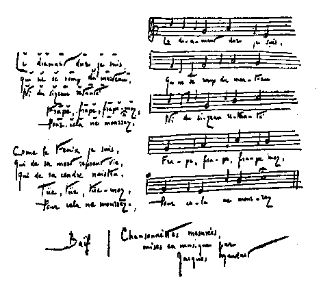

われは堅き
金剛石
金槌にも
鑿にも
打ち砕かれじ。
打て、打て、打ちみよ
われは死なじ。
死してはまた生き
屍灰より生まるる
不死鳥のわれ。
殺せ、殺してみよ、
われは死なじ。
――バイーフ――
［＃改ページ］
一
心の静穏。風はやんだ。空気は動かない……。
クリストフは落ち着いていた。彼のうちには平和があった。彼は平和を得て多少
矜らかな感じがした。そして内心では、ある遺憾の念を覚えた。彼は静寂に驚いた。彼の熱情は眠っていた。もうその熱情がふたたび
眼覚めないのではあるまいかと、
真面目に信じていた。
彼のやや粗暴な大なる力は、対象がなく無為に陥って微睡していた。その底には、ひそかな空虚があり、隠れたる「何になるものぞ」があった。またおそらく、つかみ得なかった幸福にたいする感情があった。自分自身にたいしてもまた他人にたいしても、もはや
闘うべきものが十分になかった。働くことにさえも、もはや十分の苦痛がなかった。彼はある行程の終わりに到着したのだった。これまでの努力の総額の利を収めていた。切り開いた音楽上の鉱脈をあまりにたやすく掘りつくしていた。そして公衆が、もとより
遅まきながらではあったが、彼の過去の作品を発見して賞賛してるうちに、彼のほうでは、これ以上先へ進めるかどうかはまだわからないで、もう過去の作品から離れ始めていた。彼は創作のうちに、いつも同一の幸福を享楽していた。芸術はもはや彼にとっては、彼の現在の生活においては、自分がみごとにひきこなす一つのりっぱな楽器にすぎなかった。彼はみずから恥じながらも、一の享楽者となってしまう気がした。
イプセンはこう言っている。――生来の才能とは異なったより以上のものを、芸術のうちに保存させんがためには、生活を満たして生活に一つの意義を与えるような、熱情や苦悩が必要である。さもなければ、人は創作をすることがなく、ただ書物を書くのみである。
クリストフは書物を書いていた。しかし彼はそれになずんではいなかった。それらの書物は美しいものではあった。しかし彼はそれほど美しくなくとももっと生き生きとした書物が好ましかった。自分の筋肉をどう使ってよいかわからない休らえる格闘者とも言うべき彼は、退屈せる野獣のような
欠伸をしながら、自分を待ってる静かな仕事の年々を、うちながめていた。そして、ゲルマン的楽天主義の古い素質をもって彼は、万事都合よくいってるのだと思い込みがちだったので、これは避けがたい一局面に違いないと考えた。暴風雨から脱したことを、自分の主となったことを、みずから祝していた。でも自分の主となることは大した意味のものではなかった……。結局人は、自分のもってるものを支配するのであり、なり得るものになるのである……。クリストフはもう港へ着いたのだと思っていた。
二人の友はいっしょに住んではいなかった。ジャックリーヌが家出をしたときクリストフは、オリヴィエがまた自分の所に引っ越してくるだろうと思った。しかしオリヴィエはそうすることができなかった。クリストフに近づきたくはあったけれど、昔のような共同生活をふたたびすることができないのを感じた。ジャックリーヌと幾年か共に暮らしたあとでは、自分の生活の秘密な内部に他人を入り込ませることは、許しがたく思われたし、
冒涜とさえも思われた――しかもその他人を、彼はジャックリーヌよりも幾倍となく愛していたし、また愛せられてもいたのであるが。――それは理屈ではどうにもならないことだった。
クリストフは了解に苦しんだ。彼は何度もそのことを言い出し、驚いたり、悲しんだり、腹をたてたりした……。その後彼は、知力よりもまさった本能によって察知することができた。突然口をつぐんで、オリヴィエが至当だと考えた。
しかし二人は毎日会っていた。これほど気が合ったことはかつてなかった。もっとも内密な思想を話し合いはしなかったかもしれないが、実はその必要がなかったのである。思想の交換は、愛し合った心のおかげで、言葉の助けをかりなくとも自然になされたのである。
二人ともあまり話はせずに、一人は芸術のうちに、一人は追憶のうちに、浸り込んでいた。オリヴィエの苦悩は和らいでいった。しかし彼はそのために少しも努力をしたのではなく、かえって苦悩を喜んでるくらいだった。苦悩こそ長い間、彼の唯一の生存の理由だった。彼は自分の子供を愛していた。しかしその子供は――泣きたてる赤児は――彼の生活のうちに大なる場所を占めることはできなかった。父親というよりも多く情人である者が世にはある。それを憤慨するのは無益のわざだろう。自然は一様なものではない。同じ心の法則を万人に
強いんとするのは
馬鹿げたことだろう。
何人も心のために義務を犠牲にするの権利をもってはしない。しかし少なくとも、義務を果たしながらも幸福を感じないという権利を、心に認めてやらなければならない。オリヴィエが自分の子供のうちにおそらく愛したところのものは、子供を作り上げた肉体の所有者たる彼女をであった。
最近まで彼は、他人の苦しみにはあまり注意を払わなかった。彼はあまりに自分のうちに閉じこもってる知者だった。それは利己心ではなくて、夢想にばかりふける病的な習慣だった。ジャックリーヌは彼の周囲のその空虚をさらに広げてしまった。彼女の愛は、彼と他の人々との間に魔法的な区画線を引き、愛が消えてしまったあとにもなおそれが残存していた。そのうえ彼は、気質からして一の貴族だった。幼年時代から彼は、やさしい心根にもかかわらず、身体と魂との生まれつきの繊弱さのために、大衆から遠ざかっていた。公衆の
匂いや思想に
嫌悪の情を覚えた。
しかし、ごくありふれた一つの雑事を目撃してからは、すべてが一変してしまった。
彼は、クリストフやセシルの住居とあまり遠くないモンルージュの高地に、ごく粗末な部屋を借りていた。卑俗な町で、その家には、わずかな定期収入をもってる者や、下級の勤め人や、労働者の家族などが住んでいた。他の時ならば、彼は自分がまったく他国人の感じがするその周囲を苦にしたかもしれない。しかしそのころ彼は、どこに住んでも大して違いがなかった。どこへ行っても他国人の気がするのだった。隣にどういう人たちがいるかほとんど知らなかったし、また知りたくもなかった。仕事――（彼はある出版屋に勤めていた）――からもどって来ると、追憶とともに室に閉じこもって、子供やクリストフへ会いに行くほかは外出しなかった。彼にとってその住居は家庭ではなかった。過去の面影が固着してる暗室だった。室が暗くて無装飾であればあるほど、ますますはっきりと映像が浮き出してくるのだった。彼は階段ですれ違う人々の顔にもほとんど注意を向けなかった。けれども知らず知らずのうちに、ある幾つかの顔が彼の頭に残っていた。ある種の精神の人々は、事物を過ぎ去ったあとにしかよく見ようとしない。しかし過ぎ去ったあとでは、何にも彼らの眼をのがれるものはなく、ごく
些細な事物までが深く刻みつけられている。オリヴィエもそういう種類の男だった。彼は生きてる人々の影でいっぱいになっていた。一つの感動に打たれると、それらの影が浮き上がってきた。するとオリヴィエはびっくりし、知り合いでもなかったそれらの影を認め知り、時としては手を差し出してとらえようとした……がもう時期遅れだった。
ある日彼は、家から出かけるとき、門の前に人だかりがしてるのを見た。そのまん中で門番の女がしゃべりたてていた。彼はあまり好奇心を覚えなかったので、訳を尋ねもしないで通り過ぎようとした。しかし門番の女は、一人でも多く聞き手を集めたがって、彼を呼び止め、この気の毒なルーセル一家にどんなことが起こったか知ってるかと尋ねた。オリヴィエは「気の毒なルーセル一家」が何物であるかをも知らなかった。そして彼は
丁寧な冷淡さで耳を貸した。父と母と五人の子供との労働者一家が、この家の中で貧困のあまり自殺をしたところだ、ということを知ったとき、彼は他の人々と同様に立ち止まって、家の壁をながめながら、あかずに話を繰り返してる女の言葉に耳を傾けた。彼女が話してゆくに従って、彼のうちには種々の思い出がよみがえってきて、その人たちに会ったことがあるのに気づいた。彼は、二、三の質問をしてみた……。まさしく彼らを知ってたのである。主人――（彼はその音のする呼吸を階段でよく聞いたのだった）――はパン屋の職人で、
蒼ざめた顔色をし、
竈の熱気に貧血し、
頬はくぼみ、
髯もよく
剃っていなかった。冬の初め肺炎にかかった。すっかり回復しないうちにまた働き出した。突然病気が再発した。三週間ばかり前からは、仕事もなければ体力もなかった。上さんは引きつづいて妊娠ばかりしており、リューマチで身体もきかなかったが、一生懸命に骨折ってどうにか世帯のことをし、毎日毎日駆けずり回っては、貧民救済会からわずかな助けを得ようとした。それもなかなか急には得られなかった。そのうちにも、子供は引きつづき生まれた。十一歳、七歳、三歳――そのほか、間に亡くなった二人、なおその上に、ちょうど折り
悪しくも
双生児が生まれた。前月生まれたのだった。
「双生児の生まれた日にね、」と隣のある女が話した、「五人のうちの総領娘で、十一になるジュスティーヌが――かわいそうな子じゃありませんか！――どうして二人の赤ん坊を背負えるかしらって尋ねながら、泣き出したんですよ……。」
オリヴィエはただちに、その少女の姿を思い出した――大きな額、後ろに引きつめられた
艶のない髪、とびだしてる濁った灰色の眼。外で出会うといつも彼女は、食料品を運んでいたり、小さい妹を負ったりしていた。あるいはまた、
細そりして虚弱で片目である七歳の弟の、手を引いてることもあった。オリヴィエは階段などですれ違うと、ぼんやりした丁寧さで言うのだった。
「ごめんなさい、お嬢さん。」
彼女のほうではなんとも言わなかった。ほとんど身をかわしもしないでつんとして通り過ぎた。しかし彼の
空お世辞も、彼女には内心うれしかった。前日の晩六時ごろ、彼は階段を降りてゆくとき、最後に彼女に出会った。彼女は一
桶の木炭を運び上げていた。荷は重そうだった。しかしそんなことは下層の子供たちには普通の仕事である。オリヴィエはいつものとおり、彼女の顔に眼をやりもしないで
挨拶した。数段下へ降りて、なんの気もなく見上げてみると、彼女の引きつった小さな顔が、階段の中段の所からじっと、降りてゆく彼のほうをながめていた。彼女はすぐにまた上りだした。どこへ上って行くのか彼女はみずから知っていたろうか！――オリヴィエは夢にも知らなかった。そして今彼は、死を――解放を、重すぎる
桶の中に入れて運んでいたその少女のことで、頭がいっぱいになった……。不幸な子供らよ、彼らにとっては、もう生きないということはもう苦しまないという意味だったのだ！ オリヴィエは散歩をつづけることができなかった。彼は自分の室へもどった。しかしそこで彼は、あの死人たちが自分の近くにあることを感じた……幾つかの壁で隔てられてるのみだった……。それらの苦悩のそばに暮らしてきたことを考えてもみると！
彼はクリストフに会いに行った。胸がしめつけられるような心地だった。多くの人々が自分のより何倍もひどい不幸を苦しんでおり、しかも救われることができる場合にあるのに、自分のようにいたずらな愛の未練にとらわれてるのは、いかに奇怪なことであるかと、彼は考えた。彼の感動は深いものだった。すぐに他の者へも伝わることができた。クリストフもやはり心を動かされた。オリヴィエの話を聞いて彼は、児戯に類した慰みをやってる利己主義者だと自分を見なして、書いたばかりの楽譜を引き裂いた……。しかしそのあとで、引き裂いた紙片を拾い集めた。彼はあまりに自分の音楽に心ひかれていた。そして、芸術上の作品を一つ減らしたとて幸福が一つ増すものでないと、本能的に考えた。その種の貧困の悲劇は、彼にとっては珍しいものではなかった。幼年のころから彼は自分で、そういう
深淵の縁を歩くことに慣れていたし、それに落ち込みもしなかった。そして現在では、みずから力の充実した感じがしていたし、いかなる苦しみのためにもせよ奮闘を断念するということは、考え得られなかったので、自殺にたいしては
峻厳な考えをもってさえいた。苦しみと闘い、それこそもっとも普通のことではないか。それこそ世界の背骨である。
オリヴィエも同様な試練を経て来ていた。しかし彼はかつて自分のためにも他人のためにも、それに忍従することができなかった。大事なアントアネットの一生を滅ぼしたあの困窮について、
嫌忌の念をいだいていた。ジャックリーヌと結婚して後、富と愛とのために柔弱になされたとき、彼は、姉と自分とが昔、翌日の
糧を
稼ぎ出さんがために
覚束ない努力をしていた、あの悲しい年月の思い出を、急いで遠ざけたのだった。それらの遠い思い出が、擁護すべき恋愛的利己心のもはやなくなった今、ふたたび浮かび出してきた。苦しみの前から逃げるどころか、反対に彼は苦しみを捜しにかかった。それを見出すには遠く進むの要はなかった。彼のような精神状態にあっては、至る所にそれが見てとられた。それは世間に満ちていた。世間、この大なる病院……。多くの悩み、苦しみ。生きながら腐敗しあえいでいる、傷ついた肉体の苦痛。
苦悶にさいなまれてる心の、黙々たる苦悩。愛を受けない子供、希望のない娘、誘惑されそして裏切られた女、友情や恋愛や信念などにおいて欺かれた男など、人生から傷つけられてる、痛ましい不幸者の群れよ！……もっとも
獰猛なのは、貧窮や病気ではない。人間相互の残酷性である。この世の地獄を
蓋している揚げ戸をもち上ぐるや否や、オリヴィエの所まで、叫喚の声が立ちのぼってきた。圧制された人々、利用された貧しい人々、迫害された民衆、虚殺されたアルメニア、窒息させられたフィンランド、切断されたポーランド、さいなまれたロシア、ヨーロッパの
狼どもの
貪食に
委ねられたアフリカ、全人類のうちの
惨めなる人々、それらの叫喚の声が立ちのぼってきた。彼は息がつけなかった。至る所にそれが聞こえてきた。それ以外のことに考えを向けられようとは、もはや信じられなかった。彼はそのことをたえずクリストフに話した。クリストフはうるさがって言った。
「もう言わないでくれ！ 僕の仕事を邪魔しないでくれ。」
そして心の平衡を回復することができないと、いらだってののしった。
「畜生！ 一日
無駄になってしまった。うるさい
奴だね！」
オリヴィエは
詑びた。
「君、」とクリストフは言った。「いつも
淵の中ばかりのぞいちゃいけない。生きていられなくなるよ。」
「淵の中にいる人々へ手を差し出してやらなくちゃいけないのだ。」
「もちろんさ。しかし、どういうふうにするんだい？ 自分でその中に飛び込みながらするのか。君が望んでるのはそうじゃないか。君は人生の悲しい方面ばかりしか見たがらない。まあそれもいいだろう。そういう悲観主義はたしかに慈悲深いものだ。しかしそれは人の意気を
沮喪させる。人の幸福を計らんとするならば、まず自分で幸福になりたまえ。」
「幸福に！ しかしどうして幸福になる気になり得ようか。あんなに多くの苦しみを見るときに！ 世の中の苦しみを少なくしようと努めることにしか、幸福はあり得ないのだ。」
「なるほどね。しかし、不幸な人々を助けようとするには、僕はそうやたらに戦ってばかりはいられない。くだらない兵卒が一人ふえたって、ほとんど何にもなりはしない。僕は自分の芸術で人を慰めることができる、力と喜びとを人に伝えることができる。一つの美しいりっぱな歌で、どれだけの
惨めな人々が苦しいおりに支持されたか、君は知っているか。人にはおのおのその職業があるのだ。君たちフランス人は、きわめて
軽躁で、スペインやロシアなどの縁遠い不正にたいして、問題の底をよく知りもしないでまっ先に騒ぎたてる。僕はそのために君たちが好きなのだ。しかし君たちはそれで事情をよくするのだと思ってるのか。君たちはめちゃくちゃに突進するだけで、結果は少しもあがらない――たまにあがれば、さらに悪い事情になるというくらいのものだ……。見たまえ、君たちフランスの芸術は、芸術家らが一般の実行運動にたずさわろうと主演してる現在くらい、色
褪せてしまったことはかつてないじゃないか。享楽的な
疲憊した多くの小大家らが使徒だなどとあえて自称してるのは、実におかしなことだ。も少し混ざり物の少ない酒を民衆に注いでやったほうが、はるかによいのだ。――僕の第一の義務は、自分のなしてることをりっぱになすということだ。君たちの血を作り直して君たちのうちに太陽の光を置いてやるべき健全な音楽を、君たちのためにこしらえ出してやるということだ。」
他人の上に太陽の光を注がんためには、自分のうちにそれをもっていなければいけない。オリヴィエにはその太陽の光が欠けていた。現在のりっぱな人々と同様に、彼は自分一人で力を光被するほど強くはなかった。力を光被するには他人と結合する必要があった。しかしだれと結合したらいいのか。精神が自由で心情が宗教的だった彼は、政治および宗教上のあらゆる党派に反感を覚えた。どの党派もみな不寛容と狭小とにおいて負けず劣らずだった。権力を得ればただちにそれを濫用するばかりだった。ただ圧制されてる人々のみがオリヴィエの心をひいた。この方面では少なくとも彼は、クリストフと同じ意見であって、人は自分に縁遠い不正と戦う前に、身近な不正、多少自分にも責任のある周囲の不正と、まず戦わなければならないと思っていた。あまりに多くの人々が、自分のなしてる悪のことは考えもせずに、他人のなす悪に抗言するだけで満足している。
オリヴィエはまず貧民救助に従事した。親しいアルノー夫人がある慈善事業に加わっていた。オリヴィエはその事業に加入さしてもらった。しかし初めのうち、彼は幾度か失望を覚えた、彼が引き受けた貧民たちは皆、好意に価しない者ばかりだった。もしくは、彼の同情によく応じないで、彼を信用せず、彼に向かって門戸を閉ざした。そのうえ知識階級の者はいったい、単なる一つの慈善では満足しかねるものである。単なる慈善は、悲惨の国のごくわずかな一地方をしか潤さない。その行為はたいていいつも部分的で断片的である。当てもなしに歩き回って、創傷を見出すに従って包帯してゆくがようなものである。通例あまりにつつましくて
慌しいから、悪の根源にまでは手をつけ得ない。しかるにそこにこそ、オリヴィエの精神が看過し得ない探求があるのだった。
彼は社会的悲惨の問題を研究し始めた。それには案内者が欠けてはいなかった。当時ちょうど、社会問題は一般社会の一問題となっていた。客間や劇場や小説などの中でもそれが話題になっていた。だれもみなその方面に通じてるような顔をしていた。ある一部の青年らは最善の力をその問題に費やしていた。
どの新しい時代にも、一つの
美わしい熱狂が必要である。若き人々はそのもっとも利己的な者でさえ、満ちあふれた生活力をもっている、不生産的であるのを好まない精力の資本をもっている。彼らはその資本を、一つの実行かあるいは――（いっそう慎重に）――一つの理論に費やそうとする。空中飛行か革命かである。筋肉を働かせるか想念を働かせるかである。人は若いおりには、自分が人類の大運動にたずさわっており、世の中を一新している、という幻をいだきたがる。世界のあらゆる
息吹きに打ち震える官能をもっている。なんと自由で身軽であるだろう！ まだ家族の重荷を負っていないし、何物ももっていないし、ほとんど懸念することはないのだ。まだ所有していないものをいかに寛大に見捨て得ることぞ。そのうえ、愛しまた憎むことは、夢想と絶叫とで地上を一変さしてると信ずることは、いかにうれしいことだろう！ 若い人々は耳を澄ました犬のようである。見よ、彼らは風の音にも震え上がって
吠えたてる。世界の
隅で一つの不正がなされても、彼らはそのために熱狂する……。
暗夜の中の吠え声。大なる森の中で、農園から農園へと、吠え声は休みなく
応え合っていた。夜は騒々しかった。そういうときに眠るのは容易でなかった。風は多くの不正の反響を空中に運び回っていた。……不正は無数である。その一つを償わんとすれば他の多くを招致する恐れがある。不正とはいったいなんであるか？――ある者にとっては、恥ずべき平和であり、祖国の分割である。ある者にとっては、戦争である。甲にとっては、過去の破壊であり、君主の放逐である。乙にとっては、教会の
劫奪である。丙にとっては、未来の
閉塞であり、自由の破滅である。民衆にとっては、不平等である。優秀者にとっては、平等である。各時代が選みとった不正は――各時代が反対する不正と賛成する不正とは、実に種々雑多である。
今はちょうど、世界の努力の大部は、社会的不正を滅ぼすために向けられていた――そして知らず知らずに、また新しい不正を作り出さんとしていた。
そして確かに、労働階級が数においても力においても増大してきて、国家の主要機関の一つとなって以来、社会的不正は大きくなって人の眼前に展開されていた。しかしその論客や詩人らの宣言にもかかわらず、労働階級の状態はさほど悪いものではなく、過去におけるよりもはるかによくなっていた。そして変化の原因は、この階級がより多く苦しむようになったことにあるのではなくて、より強くなったことにあるのだった。敵たる資本の力そのものによって、また、経済および工業上の発展の必然性によって、労働階級は以前よりも強くなったのである。この経済および工業上の発展の必然性は、労働者らを集合して、戦闘準備の整った軍隊たらしめ、機械主義のために、彼らの手に武器を有せしめ、おのおのの職工長をして、世の中の光や火薬や運動や
動力を支配する主人公たらしめた。彼らの重立った人々が近ごろ組織せんとつとめた、この根源の力の巨大な集団から、一つの
灼熱が、電波が、発散し出して、それが
漸次に、人類社会の胴体中へ伝わったのである。
この民衆の主張が中流知識階級をも動かしたのは、その正義により、またはその観念の新しさと力とによってであると、彼らは信じたがっていたけれど、実はそうではなかった。その活力によってであった。
その正義というのか？ しかし、他の多くの正義が世に侵害されているのに、世は平然としていたのである。その観念というのか？ しかし、それは所々方々で拾い集められた真理の断片にすぎなくて、他の階級を無視しながら、一階級の
体躯に合うようにされたものだった。馬鹿げた
信条であった。あらゆる信条――国王の神聖なる権利、法王の
無謬性、無産階級の支配、一般投票、人間の平等――あらゆる信条は、もしそれを生かしてる力を見ずしてその理論的価値ばかりを見るならば、等しく馬鹿げたものであった。その平凡さなどはどうでもよいことだった。観念が世を征服するのは、観念たることによってではなく、力たることによってである。観念が人をとらえるのは、その知的内容によってではなく、歴史のある時期においてそれから発する活力的光輝によってである。それはあたかも立ちのぼる香気に似ている。もっとも鈍い
嗅覚の者もそれにひかされる。もっとも崇高な観念といえども、長い間なんらの効果も与えないでいて、他日にわかに流行してくるのは、それ自身の真価によってではなくて、それを具現しそれに血を注ぎ込む一群の人々の真価によってである。そして今まで
干乾びていたその植物は、ジェリコの
薔薇は、突然花を開き、生長し、強烈な芳香を空中に充満させる。――花々しい軍旗を押し立てて労働階級を率い、有産階級の
城砦を攻撃せしむるにいたった、それらの思想は、有産階級の夢想者らの頭脳から出て来たものだった。それが有産者らの書物の中にとどまってる間は、あたかも死んでるのに等しかった。博物館の品物であり、ガラス
棚の中の包み込まれたミイラであって、だれも目に止めるものはなかった。しかし民衆がそれを奪い取るや否や、民衆はそれを民衆化し、熱狂的な現実性をそれに付与した。そしてこの現実性のために、それは変形して、幻覚的な希望を、時代の熱風を、それら抽象的な論理の中に吹き込まれ、生き上がってきた。人から人へと伝わっていった。だれもみなそれに感染したが、だれによってまたいかにしてそれがもちきたされたかを知らなかった。それはほとんど人選びをしなかった。精神上の伝染が広がりつづけた。
愚昧な人々が優秀者へそれを伝えることさえあった。各人がみずから知らずしてそれをもち回っていた。
こういう知的感染の現象は、すべての時代にまたすべての国にあるものである。たがいに門戸を閉ざし合った階級を維持せんとする貴族的な国家のうちにさえ、それが感ぜられる。けれども優秀者と衆人との間になんらの衛生境界をも保存しない民主国において、それはどこよりもことに猛烈である。優秀者もすぐに感染する。いかに高慢であり知力すぐれていても、その感染を免れることはできない。なぜなら優秀者はみずから思ってるよりもはるかに弱いものである。知力は一つの小島であって、人類の潮に
噛まれ削られ包み込まれる。潮が引くときにしかふたたび現われはしない。――一七八九年八月四日の夜に自分の権利を放棄した、フランスの特権者らの自己犠牲を、人は感嘆している。けれどもっとも感嘆すべきは実に、彼らが他になんとも仕方がなかったということである。私の想像によれば、彼らのうちの多数は自邸へ帰ってから、おそらくみずから言ったことであろう。「
俺はなんということをしたんだろう。俺は酔っ払っていたのだ……。」すばらしい陶酔ではないか！ そのりっぱな
葡萄酒とそれを与えた葡萄樹とは
讃むべきかな！ 旧フランスの特権者らを
酩酊さした血を有する葡萄樹、それを植えたのは特権者自身ではなかった。すでに葡萄酒は
醸されていた。それを飲むだけのことだった。飲んだ人々は頭が乱れた。少しも飲まなかった人々でさえ、
酒樽の
匂いを通りがかりに
嗅いだだけで、
眩暈を覚えた。大革命の葡萄収穫！……その一七八九年の葡萄酒からは、もう現在では、家の
窖に幾本かの
空瓶が残ってるのみである。しかしわれわれの子孫らは、父祖がその酒に頭くらんだことを思い起こすだろう。
オリヴィエの時代の若い有産者らの頭に上った葡萄酒は、より渋いがしかも同じく強烈なものだった。彼らは新しい神に、
いまだ知られざりし神に――民衆に、自分らの階級を犠牲として供えたのだった。
もとより彼らは皆が同じように誠実ではなかった。多くの者は、自分らの階級を
軽蔑するふうをしながら、その階級から一頭地を抜くべき機会をしか、そこに認めていなかった。また大多数の者にとっては、それは知的な時間つぶしであり、演説の練習であって、まったく不面目なものだった。一つの主旨を信じ、その主旨のために戦ってい、あるいはこれから戦おうとし――少なくとも、戦い得るだろう、などと考えることは一つの楽しみである。何かの危険を冒してる、と考えることだけでも悪くはない。まったく芝居的な情緒である。
この情緒は、なんらの利害の打算も交えずに率直に奉仕されるときには、きわめて潔白なものである。――しかしいっそう抜け目のない他の人々は、意識しながら芝居をしていた。民衆運動は彼らにとっては成り上がる一方法だった。北欧の海賊らのように、彼らは上げ潮に乗じて船を陸の内部へ進めていた。潮が引く間に、大河口の奥深く進入して、征服した都市に腰を
据えるつもりだった。通路は狭く水は荒立っていた。巧妙でなければいけなかった。しかし民衆
煽動の二、三の世代を経たあとなので、職業上のあらゆる秘訣に通じてる一つの海賊人種ができ上がっていた。彼らは大胆に進んでいった。途中で沈没した者なんかには一
瞥も注がなかった。
それらの徒輩にはあらゆる党派の者が交じっていた。が幸いにも、その責任はどの党派にもなかった。しかしそれらの山師どもが、
真面目な人々や信じきった人々へ起こさせる嫌悪の情は、ある者らをして自分の階級に絶望させるにいたった。オリヴィエが見た幾多の富裕な教養ある年若い中流人らのうちには、有産階級の失墜と自己の無用さとを感じてる者があった。オリヴィエもそういう人々に同感しやすい傾向をもっていた。彼らは、優秀者による民衆の改善を初めは信じ、通俗大学を建ててそれに多大の時間と金とを濫費し、そのあとで自分の努力の失敗を見てとったのである。彼らの希望は過大であったが、彼らの落胆も非常であった。民衆は彼らの呼び声に応じて集まって来なかった、もしくは逃げ出してしまった。幸いにやって来るとすれば、すべてのことを誤解して、有産階級の文化から悪徳をしか取り出さなかった。それにまた、多くの背徳漢が有産階級の使徒たちの間にはいり込んできて、民衆と有産者らとを同時に利用しながら、彼らの信用を失わしてしまった。そうなると、有産階級は
呪われたものであり、民衆を腐敗させることができるばかりであって、民衆はぜひともそれと
袂別すべきであり、単独で進んでゆくべきである、というように誠意ある人々には思われるのだった。それで彼らはもうなんらの実行もなし得なくなって、自分たちの力を
俟たずかつ自分たちに反対して起こってくる一つの運動を、ただ予告するばかりだった。ある人々はそこに
忍諦の喜びを見出した。自身の犠牲によって養われる、私心のない深い人類的同情、そうした同情の喜びを見出した。愛すること、自己を投げ出すこと！ 若き人々は自分の資本にきわめて豊富であって、報酬を受けなくても済ましてゆける。欠乏を恐れはしない。――また他の人々は、理性の楽しみを、一
徹な論理を、そこで満足さしていた。彼らは人間に奉仕しなくて、観念に奉仕していた。それはもっとも勇敢な人たちだった。自分の階級の必然的な
終焉を理論から引き出すことに、高慢な享楽を覚えていた。重荷の下に圧倒されるよりも、自分の予言が事実に裏切られるのを見ることのほうが、彼らにとってはいっそう苦痛だった。彼らはその知的陶酔のなかで、外部の人々へ叫んでいた。「もっと強く、もっと強く打てよ。われわれから何物も残ってはいけない。」――彼らは暴力の理論家となっていた。
他人の暴力の理論家である。なぜならば、普通の例にもれず、それら暴虐な力の使徒たちはたいていいつも卓越した虚弱な人たちであった。そのうちには、彼らが破壊すべしと称してるその国家の役人が、しかも勤勉な
真摯な従順な役人が、一人ならずいたのである。彼らの理論上の暴力は、彼らの虚弱や彼らの
怨恨や彼らの生活の圧搾などの反動だった。しかしまたことに、彼らの周囲に
唸ってる暴風雨の前兆だった。理論家は気象学者に似ている。彼らが学術語で言うところのものは、将来の天候ではなくて、現在の天候である。彼らは風の方向を示す風見である。彼らは向きを変えるときには、自分が風の方向を変えさしたのだと思いがちである。
実は風の方向が変わっていた。
あらゆる観念は、民主国では早く
磨滅する。その
伝播が早ければ早いほど磨滅も早い。フランスにおいていかに多くの共和主義者らが、五十年足らずのうちに、共和や一般投票や、その他熱狂して獲得された多くの自由に、飽き果ててしまったことだろう！ 多数ということにたいする拝物教的崇拝のあとに、また、神聖なる大多数者を信じて人類の進歩をそこから期待する
呑気な楽天主義のあとに、今は暴力の精神が吹き荒れていた。みずからおのれを統御することにおける大多数者の無能力、金銭に左右される無節操、
不甲斐ない無気力、あらゆる優秀にたいする卑しい
怯懦な反発、圧倒的な卑劣などは、反抗を
惹起せしめていた。元気
溌溂たる少数者は――すべての少数者は――腕力に訴えていた。
滑稽ではあるがしかも必然的な接近が、
フランス行動派の王党員らと
労働総組合の産業革命主義者らとの間になされていた。バルザックはどこかで、彼の時代のそういう人々のことをこう言っている。「
性癖から言えば貴族であって、
ただ自分の同類中に多くの劣等者を見出さんがためにのみ、
心ならずも共和主義者となっている人々。」――貧弱な楽しみなるかな！ それらの劣等者を
強いてみずから劣等者だと自認せしめなければいけない。そしてそのためには、優秀者を圧迫している多数に向かって、優秀者――労働階級もしくは有産階級の優秀者――の最上権を承認せしむる一つの権力以外に、なんらの方法もない。年若い知識階級の者や高慢な小有産階級の者が、王党もしくは革命党になってるのは、傷つけられた自尊心や民主的な平等にたいする憎悪の念などによってであった。そして私心のない理論家らが、暴力の哲学者らが、善良な風見として、彼らの上方につっ立って、
嵐を告げる赤旗となっていた。
また最後に、霊感を求めてる文学者――書くことを知ってはいるが何を書くべきかをよく知らない人々、の一隊があった。あたかもアウリスの港におけるギリシャ人のように、
凪ぎつくした静穏に封じ込められて、彼らはもう前進することができず、いかなる風にてもあれ帆を
孕ますべき順風を、待ち焦がれているのである。――そのうちには、世に高名な人々、ドレフュース事件のために意外にも文筆の業から離れて、公衆の会合に投げ込まれた人々も、見受けられた。先導者らが得意になったほど、その例に
倣う者があまりに多かった。多数の文学者らが、今では政治を事として、国務を
司らんと考えていた。彼らにとってはすべてのことが、団結を作り、宣言を発し、カピトールの殿堂を救うべき、口実となっていた。前衛の知識者らのあとには、後衛の知識者らが控えていた。両方とも同じくらいの価値の人々だった。どちらも他方の者を知識者として取り扱い、また自分をもみずから知識者として取り扱っていた。幸いにも血脈中に民衆の血を数滴所有してる人々は、それを光栄としていた。その中にペンを浸して書いていた。――すべての者が皆有産者で不満をいだいていて、有産階級がその利己心のために回復しがたいまでに失ってしまった権力を、ふたたび取り戻さんとつとめていた。それらの使徒たちが長く使徒的熱誠をもちつづけることは、きわめて
稀であった。最初のほどは、おそらく彼らの弁舌の天賦に相当する以上の成功が、その主旨のためにかち得られた。彼らの自尊心は得も言えぬ愉快を感じた。つぎには、なおつづけてゆくうちに、成功は減じてき、多少
滑稽ではあるまいかという人知れぬ恐れが生じた。そして、彼らのようにりっぱな趣味と懐疑の念とを有する人間にとっては演じがたい役目だったので、それをやりつづける疲労のために、長い間には右の恐れが増大してきて、それが優勢になりがちだった。彼らは退却するために、風と従者とから退却を許されるのを待ち受けた。なぜなら、彼らは風と従者との
捕虜となっていたから。それら新時代のヴォルテールやジョゼフ・ド・メーストルらは、その言論の大胆さの下に、
怖気づいた不安定な心を隠していた。その心はしきりに形勢を探り、若い人々の非難を恐れ、彼らの気に入らんことをつとめ、彼らよりいっそう若い様子をせんとつとめていた。文学によって革命者もしくは反革命者になったのであって、みずから建設に協力してきた文学上の流行に、今は
諦めの念で従っていた。
革命のそういう有産階級の小さな前衛隊の中で、オリヴィエが出会ったもっとも奇体な人物は、
臆病のために革命家となった人々だった。
彼の眼前にいるその典型は、ピエール・カネーという男だった。富裕な中流階級に属していて、新思想にまったく理解のない保守的な家柄だった。代々裁判官や役人をしていて、政府に不平を並べたり免職されたりして名高くなった家柄で、教会に迎合し、ごくわずかではあるがしかしよい考えをもってる、マレーの大きな中流階級だった。カネーは無為
倦怠のために結婚した。相手の女は貴族の名前をもっていて、彼と同じくらいによい考えをもっていたが、彼以上の考えをもってはしなかった。ところが、たえず自分の
自惚と不満とを
噛みしめてるその
頑迷な偏狭な時勢遅れの社会は、ついに彼をいらだたせた――妻が醜くてうるさい女だっただけになおさらだった。中庸な知力とかなり開けた精神とをもってた彼は、自由にたいする
憧れをいだいていた。けれどその憧れがどういうものであるかは自分でもはっきりわからなかった。自由のなんたるやを学び知ることは、彼の環境ではできなかった。彼が知ったことは、自由というものは自分の環境にはないということだけだった。そして、自分の環境から脱しさえすれば自由が見つかるだろうと想像した。が彼は一人で進むことができなかった。少しく外部へ踏み出すや否や、学生時代の友人らといっしょになるのを喜んだ。友人のある者は産業革命の思想に熱中していた。彼は脱出してきた社会におけるよりも、その社会ではいっそう他国にいる気がした。しかしそうだと自認したくはなかった。とにかくどこかで生きなければならなかった。そして自分と同じ色合いの連中（言い換えれば色合いのない連中）を、彼は見出すことができなかった。それでも神の眼から見れば、そういう連中はフランスに少なくはない。ただ彼らは自分自身を恥ずかしがっていて、身を隠しているか、あるいは、流行してる政治色彩の一つに、のみならず幾つにも、身を染めてるのである。
いつもよくあるとおり、彼は自分ともっとも異なってる友人へとくに結びついた。魂の底ではフランスの
田舎の中流人であるこのフランス人は、若い医者でユダヤ人であるマヌース・ハイマンという男の、忠実なアカテスとなったのである。マヌースはロシアから逃亡してきたのであって、ロシア人の多くの者と同様に二重の才能を有していた。すなわち、他人のところに行っても自家におけるがようにすぐに落ち着くことができ、また、革命の遊戯とその主旨とどちらにより多く興味があるのか怪しまれるほど、あらゆる革命に楽々と身を処してゆけるのであった。自分の困難も他人の困難も、彼にとっては一つの娯楽であった。心からの革命主義者である彼は、その科学的精神の習慣によって、すべての革命家を（自分自身をもこめて）一種の精神病者だと見なしていた。その精神錯乱を培養しながら、それを観察していた。熱心な享楽心と極端に不安定な精神とのために、彼はもっとも反対な環境を求めていた。政府筋の者やまた警察官らのうちにまで知人をもっていた。人を不安ならしむるほどの好奇心で、至る所を探索していた。そういう好奇心は、多くのロシアの革命家らに二重の役割をしてるかの観を与え、時とするとその外観を事実となすものである。それは裏切りではなくて、単なる移り気である。しかもたいていその移り気には私心は含まれていない。実際行動を一つの芝居のごとく思って、正直ではあるがいつでも役目を変え得るりっぱな俳優のような態度をとる、いかに多くの実行家が世にあることだろう！ マヌースは革命家の役目に、できうるかぎり忠実であった。それは、彼の生来の無政府的気質と通過する国々の
掟を破壊する喜びとに、もっとも適合した役割だった。がそれでもやはり、一つの役目にすぎなかった。彼の言論のうちに虚構と真実とがどれくらい交じり合っているかは、けっしてだれにもわからなかった。そして彼自身にも、ついにはそれがよくわからなくなっていた。
怜悧で
嘲笑的で、ユダヤとロシアとの両民族の機敏な心理をそなえ、自分の弱点とともに他人の弱点をも驚くほどよく読みとることができ、そしてそれを利用することに巧みだった彼は、容易にカネーを支配することができた。彼はこのサンチョ・パンサをドン・キホーテ流の暴挙に引き込むのを面白がった。彼はこの男の意志や時間や金銭を勝手に取り扱って、自分のためにではなく――（彼には何も入用なものがなかった。何によって彼が生活してるかはだれにもわからなかった。）――主義のもっとも危険な運動のために使用した。カネーはされるままになっていた。マヌースと同じ考えであるとみずから信じようとつとめた。が実は反対であることをよく知っていた。それらの思想は彼を脅かし、彼の良識と衝突した。また彼は民衆を好まなかった。そのうえ彼は勇敢でなかった。背の高い大柄な肥満した大男で、すっかり
髯を
剃ってのっぺりした顔をし、息が短く、
丁寧な
大袈裟な子供じみた言葉つきで、ファルネーゼのヘラクレス像に見るような胸の筋肉をそなえ、
拳闘や棒術にはみごとな力をもっていたが、実際はもっとも臆病な男だった。同階級の人々の間で破壊的な精神の所有者だと見なされてるのを自慢にしてはいたが、友人らの大胆さにたいしてはひそかに震え上がっていた。もちろんその小さな
戦慄は、事が単なる遊戯にすぎない間は別に不快でもなかった。しかし遊戯は危険なものとなっていった。同志の者らは攻撃的になってゆき、彼らの主張は大きくなっていった。カネーの胸底の利己心や、所有権についての根深い感情や、中流人的な無気力さなどは、それらの主張から不安を覚えさせられた。「君たちは僕をどこへ連れて行くのか、」とは彼もあえて尋ね得なかった。しかし、自分の首の骨を折ることばかりを好んでいて、また同時に他人の首の骨をも折るようになるかもしれないことなどは気にもかけないでいる、それらの人々の傍若無人な様子を、彼は心の中でののしっていた。――でも、だれがいったい彼について来いと
強いたか？ 彼らの仲間を脱するのは彼の自由ではなかったか。ただ彼には勇気が欠けていた。彼は一人きりでいるのが
恐かった。途上で後方に取り残されて泣き出す子供のようだった。彼も多くの人々と同様だった。多くの者は自分でなんらの意見ももたない。もしもってるとすれば、熱烈な意見にはことごとく不賛成であるということくらいなものである。しかし独立するには、一人きりでいなければならないだろう。そして
幾何の人にそれができるか？ 同じ時代の万人の上にのしかかってくる、ある種の偏見や仮定の束縛から脱するだけの胆力をもってる者が、もっとも
聡明なる人といえども幾人あるであろうか？ それは言わば、自己と他人との間に城壁を築くことである。一方には
沙漠の中の自由、そして他方には、人間たち。彼らは
躊躇しない。人間たちのほうを、家畜の群れのほうを、彼らは選ぶ。それは臭くはあるがしかし暖かい。そこで彼らは自分の考えてもいない事柄を考えてるようなふうをする。彼らにとってはそれは困難ではない。彼らは自分の考えてることをよく知ってはいない……。
「
汝自身を知れ！」……だが、ほとんど自我をもっていない彼らにどうしてそれができよう。宗教的なあるいは社会的なあらゆる集団的信仰のうちで、ほんとうに信じてる者は
稀である。なぜならほんとうに人間である者が稀だから。信仰は一つの勇壮な力である。古来信仰の火に燃やされたものは、わずかな人間の
松明にすぎない。その松明でさえも往々にして明滅しかける。使徒らや予言者らやイエスでさえも、疑惑をいだいたことがあった。その他のものは反映にすぎない――がただ、人の魂が乾燥しきってるある時期には、大きな松明から落ちた少しの火の粉が、全平原を焼きつくす。それから火事が消える。そしてもはや、灰の下に炭火が輝いてるのしか見えなくなる。キリストを実際に信じてるキリスト教徒は、わずかに数百人いるかいないかである。他の者らはみな、信じてると思ってるばかりであり、あるいは信じたがってるばかりである。
革命家の多くも同様であった。善良なカネーも自分を革命家だと信じたがっていた。それでそうだと信じていた。そして自分自身の大胆さにおびえていた。
それらの有産者らは皆、種々の原則に
拠っていた、ある者は自分の心に、ある者は自分の理性に、またある者は自分の利益に。そしてその考え方を、福音書に
則ってる者もあり、ベルグソンに則ってる者もあり、その他、カール・マルクスやプルードンやジョゼフ・ド・メーストルやニーチェやジョルジュ・ソレルなど種々だった。流行により当世好みによって革命家となってる者もあれば、粗暴な気質によって革命家となってる者もあった。実行の要望によって、勇壮の熱誠によって、そうなってる者もあった。従属性によって、付和雷同の精神によって、そうなってる者もあった。しかし皆、みずから知らずして、風に吹きなびかせられてるのだった。それは
塵埃の
渦巻きであって、白い大道の上に遠く煙のように見えていて、突風の襲来を告げ知らしていた。
オリヴィエとクリストフとは、風が来るのをながめていた。二人ともりっぱな眼をもっていた。しかし二人は同様の見方をしてはいなかった。オリヴィエは、その清澄な眼で人の下心をも
洞見したので、人々の凡庸さに悲しみを覚えた。しかし彼はまた、人々を奮い
起たせてる隠れたる力をも認めた。そして事物の悲壮な光景にますます心打たれた。クリストフのほうはいっそう、人の
滑稽な様子に敏感だった。彼が興味を覚えるのは人間についてであって、少しも観念についてではなかった。彼は観念にたいしては
蔑視的な無関心さを装っていた。彼は社会的理想郷をあざけっていた。反抗的な精神から、また、当時流行の病的な人道主義にたいする本能的な反動から、彼は実際以上の利己的な態度を示していた。自分で自分をこしらえ上げた人間であり、自分の筋肉と意志とを
慢ってる強健な立身者たる彼は、みずから少しも力をもっていない人々を、やくざ者だと見なしがちであった。貧しくて孤独でいながら、彼は打ち勝つことができたのだった。他の人々も同様にするがよい……。社会問題だと！ いったいいかなる問題ぞ？ 貧困か？
「僕は貧困をよく知っている。」と彼は言った。「僕の父や母や僕は、貧困を通り過ぎてきたのだ。要はただそれから脱しさえすればよいのだ。」
「それがだれにでもできるものではない。」とオリヴィエは言った。「病人や不運な人々にはできない。」
「そういう人々は助けてやればいい。ごく簡単なことだ。しかし助けることと、今日人がしているように彼らを称揚することとには、遠い隔たりがある。近来、もっとも強い者の忌むべき権利が削減されてきた。しかし僕に言わすれば、もっとも弱い者の権利のほうがなおいっそう忌むべきものであるかもしれない。それは現今の思想を
萎靡させ、強者を
虐げ利用している。あたかも、病弱で貧乏で
愚昧で打ち負けてることが、一つの価値とでもなったかのようだ――強くて健康で打ち勝つことが、一つの不徳とでもなったかのようだ。そしてもっとも
滑稽なのは、強者がそれをまっ先に信じてるということだ。……ねえオリヴィエ、喜劇のよい題材ではないか。」
「僕は他人を泣かせることより、自分が人の笑い事になるほうを好むのだ。」
「感心だ！」とクリストフは言った。「だれがそれに反対を唱えるものか。僕は
佝僂を見ると自分の背中が痛くなる……。だが喜劇というのは、われわれがそれを演じてるのであって、われわれがそれを書こうというのじゃないんだ。」
彼は社会的正義などという夢にとらわれてはいなかった。彼は通俗的な粗大な良識からして、前にあったことはあとにもあるだろうと信じていた。
「もしそのことを芸術について人から言われたら、君はさぞ憤慨するだろうじゃないか。」とオリヴィエは注意した。
「おそらくそうかもしれない。要するに僕は芸術にしか通じていないんだ。そして君も同様だ。僕は不案内な事柄を
云々する人々を信用しないよ。」
オリヴィエも信用してはいなかった。彼ら二人は、その疑念をやや
大袈裟なものになしていた。彼らはいつも政治の圏外に立っていた。オリヴィエは多少恥じらいながらも、選挙権を行使した記憶がないことを告白した。十年この方彼は、区役所に名前の登録さえしていなかった。
「無益だとわかってる喜劇にどうして加われるものか。」と彼は言った。「投票するというのか。いったいだれのために投票するんだ？ 僕は候補者らのうちのだれを選んでよいかまったくわからない。彼らは僕にとっては皆同じく未知の男であるし、彼らが当選するや否や平素宣言してる信念に皆同じく裏切るだろうということを、多くの理由から僕は期待し得るのだ。彼らを監視し、彼らにその義務を思い起こさせようとすれば、僕の
生涯はそのために
無駄に過ごされてしまうだろう。僕にはそれだけの
隙もないし、力もないし、弁舌の才もないし、また実際行動のさまざまな不快を忍ぶだけの、図々しさも武装した心もないのだ。棄権したほうがずっとよい。甘んじて悪を忍ぶよ。が少なくとも、悪に自分の名を連ねたくはない。」
しかし極端な明察力をもってるにもかかわらず、彼は規則的な政治行動をきらいながらも、一つの革命に空想的な希望をつないでいた。彼はその希望が空想的なのをみずから知ってはいたが、少しもしりぞけようとはしなかった。それは一種の民族的な神秘気質だった。西欧のもっとも大なる破壊的な民衆に属することは、建設せんがために破壊し破壊せんがために建設する民衆に属することは、無事にできるものではない――観念と生活とをもてあそび、その遊戯をいっそうよくやり直さんがために、たえず万事を一掃してしまい、賭金としては自分の血潮を流す民衆、それに属することは。
クリストフはそういう遺伝的な救世主気質をもっていなかった。彼はあまりにゲルマン的であって、革命の観念をよく味わい得なかった。世界を変え得るものではないと考えていた。いかに多くの理論、いかに多くの言葉、なんという無益な
喧騒ぞ！
「僕は自分の力を証明するために、」と彼は言った、「革命を起こす必要はない――あるいは、革命についての会合を催す必要はない。ことに、あれらの正直な若者たちのように、僕を保護してくれる一つの王かあるいは一つの保安委員会を立てるために、国家を転覆するの必要はない。そんなことをするとは、実に力の珍妙な証明法ではないか。僕はみずから自分を保護することができる。僕は無政府主義者ではない。必要な秩序を好むし、世界を統ぶる法則を尊敬する。しかしその法則と僕との間に、仲介者を僕は要しない。僕の意志は命令することも知ってるし、また服従することも知っている。いつも古典文学の句を引用してくる君たちは、コルネイユの言葉を思い出すがいい。『
予は一人なり、
それにて十分なり。』一の主君を求める君たちの心底には、君たちの弱さが隠れているのだ。力は光のごときものである。それを否定する者は盲目だ。理論も捨て暴力も捨て、平然として強者になりたまえ。植物が日光のほうへ向くと同じに、弱者の魂はことごとく君たちのほうへ向くだろう……。」
しかし、政治上の議論に時間を空費する
隙はないと抗弁しながらも、彼はその外見ほど政治に
無頓着ではなかった。彼は芸術家として社会の不安を苦しんでいた。熱情が一時欠乏するおりには、自分の周囲を見回して、だれのために自分は書いてるのかとみずから疑うことがあった。すると彼は、現代の芸術の悲しむべき顧客を、かの疲れてる優秀者や享楽的な有産者らを、眼に浮かべた。そして考えた。
「ああいう人々のために働いてなんの利益があろう？」
もちろん彼らのうちには、教養があり、人の技能に敏感であって、精練された感情の新しさやあるいは古風さ――（二つとも同じことである）――を味わうことさえもできるような、すぐれた精神の人々が欠けてはいなかった。しかし彼らは感情が鈍っていて、あまりに知的であまりに生気に乏しかったので、芸術の現実性を信ずることができなかった。彼らは遊戯にしか――音響の遊戯もしくは観念の遊戯にしか、興味を覚えなかった。大部分の人々は他の世間的な興味に気をひかれており、「必要」でもない雑多な仕事に心を分かつのに慣れていた。芸術の表皮の下まで見通してその隠れたる心臓を感ずることは、彼らにはほとんど不可能だった。彼らにとっては、芸術は肉と血とでできてるものではなかった。それは単に文学だった。彼らの批評家らは、彼らが享楽主義から脱する力のないことを、理論に――もとより
頑迷な理論に、仕立て上げていた。たまたま幾人かの人が、芸術の力強い声に共鳴するほど鋭敏であることがあっても、その人々にはそれを堪えるだけの力がなくて、実生活にたいしては調子の狂った者となるのだった。いずれにしても、神経病者か中風患者かばかりだった。こういう病院の中に、芸術はいったい何をしにやって来たのか？――それでも近代の社会では、芸術はそれらの不具廃疾者なしには済ませられなかった。なぜなら、彼らは金銭や新聞雑誌をもっていたから。ただ彼らばかりが、芸術家に生活の方法を安全ならしめてやることができるのだった。それゆえつぎの屈辱に甘んじなければならなかった。すなわち、内心のおののきを盛りこんだ芸術を、内生活の秘奥を託した音楽を、娯楽用として――あるいはむしろ、退屈払いもしくは新しい退屈事として――社交的夜会に、軽薄才士や疲れきった知識者などの公衆に、堤供しなければならなかった。
クリストフは真の聴衆を求めていた。実生活の情緒と同じように芸術の情緒に信頼し、純潔な魂でそれを感ずる聴衆を、求めていた。そして彼は、約束されたる新しい世界――民衆に、それとなく心ひかされた。彼に深い生活を啓示してくれたり、あるいは、彼に音楽の神聖なパンを分かってくれた、幼年時代の思い出が、ゴットフリートや
卑賤な人々の思い出が、いつしか彼をして、自分の真の友人らは民衆の方面にあると信ぜしめた。
純朴な他の多くの青年と同様に彼も、なんと定義していいかわからないような、通俗芸術だの民衆の音楽会や芝居などという大計画を、考えめぐらしていた。彼は芸術革新の可能を革命によって得らるるものと期待していて、自分にとってはそれが社会運動の唯一の興味であると主張していた。しかし実は、身代わりの口実をもち出してるのだった。彼はあまりに生き生きしていたので、当時もっとも生き上がってた実行運動の光景にひかされ吸いつけられたのだった。
その光景のうちでもっとも彼の興味をひくことの少なかったものは、有産階級の理論家どもであった。それらの樹木が
実らす果実はたいてい
干乾びていた。生命の液汁はことごとく観念となって凝結していた。クリストフはそれらの観念の間に見分けがつかなかった。観念が体系的に凍りついてしまうときには、もう自分の観念にたいしてさえ、愛好を覚えなかった。彼はおとなしい
軽蔑の念をもって、力の理論家たちにも弱さの理論家たちにも共に加わらなかった。あらゆる芝居の中において、もっとも損な役目は理屈家のそれである。観客は理屈家よりも、同情をひく人物をばかりでなく
敵役の人物をさえ好むものである。この点においてはクリストフも観客の一人だった。社会問題の理屈家らは、彼には
嫌味なものに思われた。しかし彼は他人を観察して面白がっていた。信じてる人々や信じたがってる人々、だまされてる人々やだまされたがってる人々、なおまた、肉食獣のような仕事をしてるりっぱな海賊ども、毛を刈らるるためにできてる羊ども、などを観察して面白がっていた。そして大男のカネーのような、やや
滑稽な善良な者たちにたいしては、彼は寛大な同情心をもっていた。彼らの凡庸さを、彼はオリヴィエほど不快には思わなかった。やさしい冷笑的な興味で彼らの皆をながめていた。彼らが演じてる芝居から自分は離れてると思っていた。そしてしだいにそれへ巻き込まれることには気づかなかった。風が吹き過ぎるのを見てる傍観者にすぎないとみずから考えていた。がすでに風は彼の身に触れて、
塵埃の
渦巻中に彼を引込みつつあった。
社会劇は二重になっていた。知識階級の人々が演じてるのは劇中の劇だった。民衆はそれにほとんど耳を貸していなかった。民衆自身の劇こそほんとうの劇だった。しかしその筋をたどるのは容易でなかった。民衆自身もよく理解していなかった。あまりに意外なことばかりが多く含まれていた。
それは動作よりも言葉のほうが多くないからではなかった。中流人にしろ下層民にしろすべてフランス人は、パンにおいて大食であると同じく言葉においても大食である。しかし皆同じパンを食べてはしない。微細な味覚にたいしては
贅沢な言葉があり、飢えたる口にたいしてはいっそう養分に富んだ言葉がある。たといその各語がみな同じだとしても、同じ方法で
捏ね上げられたものではない。味と
香りとが、意味がそれぞれ異なっている。
オリヴィエは、初めて民衆の会合に臨んでそのパンを味わったときには、それを食べる気になれなかった。その断片が
喉につかえた。思想の平板さ、表現の無色粗野な重苦しさ、
曖昧な概説、幼稚な論理、連絡もない抽象と事実とがへたに捏ね交ぜられてるその
凝汁、などに彼は胸がむかついた。言語の不潔さも、俗語の活気で償われてはいなかった。それは新聞紙の用語であり、有産階級の修辞法の古着屋から拾い出して来られた、
艶の失せた
襤褸であった。オリヴィエはことに簡素でないことに驚かされた。文学上の簡素は自然的なものではなくて、習得されたものであり、優秀者が骨折ってかち得たものであることを、彼は忘れていたのである。都会の民衆は簡素ではあり得ない。彼らはいつも好んで技巧に過ぎた表現を求める。オリヴィエはそういう誇大な文句が聴衆に与え得る効果を理解できなかった。彼はその
鍵をもっていなかった。人は他民族の言語を外国語と名づけているが、同じ民族のうちにも、社会的境遇とほとんど同数の言語がある。各語が数世紀にわたる経験の声をもち得るのは、狭い範囲内の優秀者にたいしてばかりである。他の人々にとっては、彼ら自身の経験と彼らの集団の経験とをしか各語は表わしていない。優秀者のために使用され優秀者から見捨てられた語のあるものは、あたかも
空家のようなものであって、優秀者が立ち去ったあとには、新しい精力が住んでいる。その住み主を知らんと欲するならば、その家の中にはいってゆかなければいけない。
クリストフは中にはいって行ったのだった。
彼は国営鉄道の雇員である一隣人の仲介で、労働者らと交際し初めた。その男は四十五歳で、背が低く、年齢よりも
老けていて、気の毒なほど頭の頂が
禿げ、眼が落ちくぼみ、
頬がこけ、太い
反り返った鼻が
尖がり、知恵のありそうな口つきをし、
耳朶のこわれた無格好な耳をしていて、まったく
衰頽した顔だちだった。アルシード・ゴーティエという名前だった。下層民ではなくて、中辺の中流階級に属していた。そのりっぱな家庭は、この一人
息子の教育にわずかな財産をことごとく費やしてしまったが、財源がないのでその教育をやり遂げさせることもできなかった。で彼はごく若くて国家のある役所にはいった。そういう地位は、貧しい中流人には安全な港のように思われるのであるが、実は死――生きながらの死に等しいのである。彼は一度そこへはいると、もう出ることができなかった。彼はあるきれいな女工と恋愛結婚をするの過失――（近代の社会ではそれも一つの過失である）――を犯してしまった。女工の根深い野卑な気質は間もなく露骨になってきた。彼女は子供を三人生んだ。彼はその大勢を養ってゆかなければならなかった。彼は知力もあり全力をつくして自分の教育を完成しようと
希っていたが、いつも貧困のために身動きがならなかった。自分のうちに潜在している力を感じながら、その力が生活難のために窒息させられていた。彼はそれに
諦めをつけることができなかった。彼はけっして一人でいたことがなかった。会計のほうだったので、野卑
饒舌な他の同僚と共通の室で、機械的な仕事に日々を送っていた。同僚らはくだらない話にばかりふけり、上役の悪口を言いながら自分らの生活のつまらなさの腹
癒せをし、彼が精神的な野心をもってるというので冷笑していた。彼はその精神的野心を一同に隠し
了せるほど賢くなかったのである。それから彼は家に帰ると、住居は無趣味で悪臭がしており、妻は騒々しい平凡な女で、彼にたいして少しも理解がなく、彼は
瞞着者かもしくは狂人だと見なしていた。子供たちは彼には少しも似ないで、母親に似ていた。それらのことはみな正しいことだったか。正しいことだったのか？ 多くの違算や苦しみ、絶えざる困窮、朝から晩まで彼をとらえて放さぬ職務、一時間の黙想をも、一時間の沈黙をも、けっして見出し得ないあわただしさ、などのために彼は、体力消耗と神経衰弱的興奮との状態に陥ってしまった。万事を忘れつくすために彼は、近来酒の力をかりるようになったが、そのためにすっかり破滅されてしまった。――クリストフは彼の運命の悲劇に心打たれた。不完全な性格で、十分の教養と芸術的趣味とをそなえてはいなかったが、りっぱな仕事をなすようにできていて、しかも不運のために押しつぶされてしまったのである。ゴーティエはすぐにクリストフへすがりついてきた。おぼれかかった弱い者が水練家の腕に手を触れて、それにすがりつくのと同じだった。彼はクリストフにたいして、同感と
羨望との交じり合った気持をいだいていた。彼はクリストフを民衆の会合へ案内してゆき、革命派の首領らに会わした。しかし彼がその一流に加わってるのは、ただ社会にたいする
怨恨からであった。なぜなら、彼はなりそこねた貴族だったから。彼は民衆に立ち交じって苦々しい苦しみを覚えていた。
クリストフはゴーティエよりもはるかに平民的だったので――
強いて平民的たる必要がなかっただけになおさら平民的だったので――それらの会合が面白かった。演説をきくのが楽しみだった。彼はオリヴィエのような
嫌悪の情を覚えなかった。彼は言語の
滑稽さをあまり感じなかった。彼にとってはどんな種類の
饒舌家もみな同じだった。彼は一般に雄弁を
軽蔑するふうをしていた。その美辞麗句をよく理解しようなどとは骨折らずに、話してる人と
聴いてる人々とを通してその音楽を感じた。演説者の力は聴衆のうちの共鳴によって百倍加されていた。初めクリストフは演説者にしか注意を払わなかった。そして演説者のある者らと近づきになりたいとの好奇心を覚えた。
群集にもっとも多くの影響を及ぼしていたものは、カジミール・ジューシエという男だった。色の黒い
蒼ざめた背の低い男で、三十から三十五までの間の年配で、モンゴリア人種めいた顔つき、
痩せて不幸に苦しんでるらしい様子、激烈でかつ冷たい眼、薄い髪、先を細くとがらした
髭をもっていた。彼の力は、貧弱であわただしくて言葉と一致してることがめったにないその身振りよりも、また、
大袈裟な呼吸音の交じってる
嗄れた※
［＃「口＋芻」、42-13］音的なその言葉よりも、多くは彼の人柄そのものから来たものであり、その人柄から発する確信の激しさから来たものだった。彼は人が自分と異なった考えをもつのを許し得ないらしかった。そして、彼が考えてることはまた聴衆らが考えたがってることだったので、両者は容易に理解し合った。彼は聴衆に向かって、彼らが期待してる事柄を三度も四度も十度もくり返した。憤激した
執拗さで同じ一つの
釘の上を打ちたたいて
倦きなかった。そして全聴衆も彼の例に引き込まれて、その釘が肉の中に没し込むまでたたきにたたいた。――そういう彼自身の威圧力に加うるに、過去の経歴が起こさせる信頼や、たびたびの政治犯的処刑から来る威力があった。彼は抑圧すべからざる精力を表わしていた。しかし物をよく見ることのできる人には、彼の奥底に、積もり重なってる大きな疲労や、多くの努力のあとの
嫌悪の念や、自分の運命にたいする
憤懣などを、見分けることができるのだった。毎日生活力の収入以上を費やしてる人々、彼はその一人であった。幼年時代から彼は労働と貧困とに
消磨されてきた。彼はあらゆる職業をやった、ガラス職人、鉛職人、印刷職人など。健康は害された。結核に犯された。そのため自分の主旨や自分自身にたいして、苦々しい落胆や無言の絶望などに駆られた。または非常に興奮させられた。彼のうちには思慮深い過激さと病的な過激さとがいっしょになっており、政策と
激昂とがいっしょになっていた。彼はどうにか人並みにみずから自分を教育し上げていた。科学や社会学や自分の種々の職業について、ある種の事柄をきわめてよく知っていた。その他の多くのことはあまり知らなかった。しかし知ってる事柄についても知らない事柄についても、等しく確信をいだいていた。種々の空想的理想、正しい観念、無知な考え、実際的精神、偏見、経験、有産階級にたいする
猜疑的な憎悪、などをもっていた。さりとてクリストフを歓迎しないではなかった。知名の芸術家から交際を求められてるのを見て、彼の自尊心は喜ばせられた。彼は首領的な人物であって、労働者らにたいしてはなんとしても圧倒的にならざるを得なかった。完全な平等を真心から欲してはいたけれど、自分より目下の人々にたいするときよりも、目上の人々にたいするときのほうが、いっそう容易にそれを実現していた。
クリストフは労働運動の他の首領らにも出会った。首領らの間には大なる同感は流れていなかった。共同の闘争は、実行運動の合一を――ようやくにして――きたさしめてはいたものの、心の合一をなかなかきたさしめてはいなかった。階級の区別などはまったく外見的な一時の現実にすぎないことが、よく見てとられた。古来からの種々の敵対は、ただ一時延期されて隠されてるのみであって、どれもみな存続していた。そこには北方人と南方人とがいて、たがいに根深い
蔑視をいだき合っていた。各職業はそれぞれ他の給金を
嫉み合っていて、自分こそ他よりもすぐれてるものであるという
露わな感情で見合っていた。しかし大なる差異は、各個人の気質の差異であった――将来も常にそうであろう。
狐や
狼や角のある家畜、鋭い
歯牙をもった動物や非凡な胃袋をもった動物、食うためにできてる動物や食われるためにできてる動物、それらが、偶然の階級と共同の利益とでいっしょに集まった群れの中で、通りすがりにたがいに
嗅ぎ合っていた。そしてたがいに相手を見分けていた。そして全身の毛を逆立てていた。
クリストフはときどき、ある小さな料理兼牛乳店で食事をした。ゴーティエの昔の同僚で、鉄道の役員をしていたが、同盟罷業事件のために免職させられた、シモンという男の経営してる店だった。そこには産業革命主義者らがよくやって来た。五、六人づれで奥の室に陣取った。その室は狭い薄暗い中庭に面していて、中庭からは、
籠にはいった二羽のカナリヤが光に向かってたえず狂うがように鳴きつづけていた。ジューシエも
別嬪のベルトという情婦をつれてやって来た。ベルトは強健な
仇っぽい娘で、
蒼白い顔色をし、紅色の帽子をかぶり、ぼんやりしたにこやかな眼つきをしていた。いつも一人の美少年を後ろに従えていた。器械職工のレオポール・グライヨーという若者で、
美貌自慢で利口で生意気な
奴だった。彼は仲間じゅうでの
耽美家だった。無政府主義者だと自称し、有産階級にたいしてもっとも激烈な者の一人だと自称しながら、もっともいけない中流人の魂をそなえていた。数年来彼は毎朝、くだらない文学新聞の
淫猥な
頽廃的な小説を
耽読していた。そのために頭が
変梃になっていた。快楽の想像における頭脳の
精緻さは、彼のうちで、肉体的高雅さの欠乏や、清潔にたいする
無頓着や、生活の比較的粗野なこと、などとうまく和合していた。彼は混合アルコール酒の小杯に趣味を覚えていた――
贅沢な知的アルコール、不健全な富者の不健全な刺激物に。そして彼は、皮膚のうちにその享楽を有し得ないので、頭脳の中にそれを移し植えていた。そういうことをすると人は、口が回らなくなり足がきかなくなる。しかし富者と同等になれる。そして富者を憎む。
クリストフはその若者に我慢できなかった。がセバスティアン・コカールにたいしてはもっと同情がもてた。コカールは電気職工で、ジューシエとともにもっとも聴衆から謹聴される演説者だった。彼は理論をくどくどと述べたてはしなかった。いつも話がどこへ落ちてゆくかをみずから知らなかった。しかしただまっすぐに進んでいった。まったくフランス人式だった。丈夫な快男子で、四十歳ばかりになっていて、色
艶のいい大きな顔、丸い頭、
樺色の髪、大河のような
髯、
牡牛のような首筋と声とをもっていた。ジューシエと同じくすぐれた労働者だったが、しかし笑い好きで酒好きだった。虚弱なジューシエはその無遠慮な健康を、いつも
羨望の眼でながめていた。そして二人は友人ではあったが、ひそかな敵意が起こりかけていた。
牛乳店のお上さんのオーレリーは、四十五歳の親切な女で、昔は美しかったに違いないし、
窶れた今でもまだ美しかった。手に編み物をもって彼らのそばにすわり、彼らが口をきいてる間、
唇を少し動かしながら親しい微笑を浮かべて、その話に耳を傾けていた。時には話に口を出し、仕事をしながら頭を動かして、自分の言葉の調子をとっていた。彼女にはもう結婚してる一人の娘と、七歳から十歳ばかりの二人の子供――娘と
息子――とがあった。この二人は
汚れたテーブルの
片隅で学校の宿題をしながら、舌を出したり、または、自分たちにまったく無関係なその会話の断片を、小耳にはさんだりしていた。
オリヴィエは二、三度、クリストフについて行ってみた。しかしそれらの人々の間にはいると、楽な気持を感じなかった。それらの労働者らが、工場の厳格な時間や
執拗な汽笛を鳴らす製作所の呼び出しなどに、身を縛られていない場合に、あるいは仕事のあと、あるいは仕事と仕事との間、あるいはぶらついたり、あるいは業を休んだりして、どんなに多くの時間を空費してるかは、人の想像にも及ばないほどだった。クリストフも、精神的に一つの製作を終えて他の新しい製作が生ずるのを待つという、無為閑散な自由の時期にあったから、彼らと同じく少しも気があせっていなかった。彼は喜んでテーブルに両
肱をついて、煙草をふかしたり酒を飲んだり雑談をしたりした。しかしオリヴィエは、精神の規律や仕事の
几帳面さや細心に倹約された時間などという伝統的な習慣のために、中流人的な本能のために、不快の念を覚えさせられた。そんなに多くの時間を空費したくなかった。そのうえ彼は雑談をすることも酒を飲むこともできなかった。それからまた、肉体上の窮屈さ、異なった人間の身体をたがいに引き離すひそかな反感、魂の交流に対抗する官能の敵対、心に反発する肉体、などがあった。オリヴィエはクリストフと二人きりのときには、民衆と親密にすべき義務を、感動しながらクリストフへ話すのであった。しかし民衆の面前に出ると、それを少しも実行できなかった。彼の観念をあざけってるクリストフが、往来で出会う労働者のだれとでも訳なく親密になれるに反し、オリヴィエのほうは、それらの人々と隔たってる自分自身を感じてほんとうに苦しんだ。彼は彼らと同様になろうとつとめ、彼らと同様に考えようとつとめ、彼らと同様に口をきこうとつとめた。しかしそれができなかった。彼の声は鈍くて曇って、彼らの声のようには響かなかった。彼らの表現のあるものを
真似ようとすると、その言葉が
喉から出なかったり、変に調子はずれになったりした。彼は自分自身を観察し、自分を困らし、また他の人々を困らした。そしてそれをみずからよく知っていた。自分は彼らにとって一つの他国人であり怪しい人間であること、だれも自分に同感をもっていないということ、自分が立ち去ると皆はほっと息をつくこと、などを彼は知っていた。きびしい冷たい眼つきを、貧困のためにいらだたせられてる労働者らが中流人に注ぐあの敵意ある眼つきを、彼は通りがかりにとらえることがあった。おそらくクリストフにもそういう眼つきは向けられたであろう。しかしクリストフはそれを少しも気づかなかった。
仲間のうちで、オリヴィエと交わる気持をもってるのは、オーレリーの子供たちばかりだった。この子供たちは確かに、中流人を
嫌悪してはいなかった。小さな男の子のほうは、中流人の思想に惑わされていた。その思想を好むくらいに
怜悧だったし、その思想を理解するほど怜悧ではなかった。娘のほうはごくきれいな子で、一度オリヴィエからアルノー夫人の家に連れて行かれたことがあって、
奢侈に眼がくらんでいた。美しい
肱掛椅子にすわったり、美しい衣服にさわったりすると、口には出さないが非常な喜びを感じた。平民階級からのがれ出て中流階級の安楽の天国へはいりたいとあこがれてる、
賤しい小娘の本能をそなえていた。オリヴィエはそういう気質を養い育ててやることに、少しも興味を覚えなかった。そして自分らの階級にたいするその無邪気な敬意は、他の連中のひそかな反感から彼を慰めはしなかった。彼は彼らの悪意を苦しんでいた。彼は彼らを理解したいとの熱烈な願望をもっていた。そして実際、彼は彼らを理解していた。おそらくあまりによく理解しあまりによく観察していた。それで彼らは腹をたてていた。彼は不謹慎な好奇心でやってるのではなかったが、人の魂を解剖する習慣でやってるのだった。
彼はやがて、ジューシエの生活の人知れぬ悲劇を見てとった。彼を破壊してる病苦と彼の情婦の残酷な遊戯とを。情婦は彼を愛していたし、彼を誇りとしていた。しかし彼女はあまりに生気に富んでいた。彼女が自分から逃げ出すかもしれないことを彼は知っていて、
嫉妬に身を焦がしていた。彼女はそれを面白がっていた。彼女は男どもをからかい、しきりに秋波を送ったり、
卑猥な空気で皆を包み込んだりしていた。手におえない
蓮葉女だった。おそらくグライヨーと通じて彼を裏切ってるかもしれなかった。おそらく彼にそう信じさせるのを愉快がってるのかもしれなかった。がいずれにしても、それが今日のことでないとすれば、明日のことであったろう。彼女がだれでも気に入った男を愛するのを、ジューシエはあえて禁じ得なかった。彼は男にたいすると同様に女にたいしても、自由たるの権利を公言したではないか。彼女は彼からののしられたある日、
狡猾な
傲慢さでそのことを彼に思い出さした。彼のうちで、自由な理論と激しい本能との間に、苦しい争闘が行なわれた。彼は心ではやはり、専制的な嫉妬深い昔の人間だった。が理性では、未来の人間であり、理想郷の人間だった。彼女のほうは、昨日と明日との女であり、いつでもの女だった。――オリヴィエは、その隠れたる闘争をながめ、その闘争の
獰猛さを自身の経験で知っていたので、ジューシエの弱さを見てとりながら、深い
憐れみの情を起こした。ジューシエはオリヴィエから心中を読みとられてることを察知していた。そしてオリヴィエに感謝するどころではなかった。
他にも一人の者が、この愛と憎しみとの競技を寛大な眼で見守っていた。それはお上さんのオーレリーだった。彼女は様子には示さないですべてのことを見てとっていた。彼女は世の中を知っていた。健全な落ち着いた
几帳面なりっぱな女ではあったが、若いころはかなり自由な生活をしてきたのだった。彼女は花売り娘だった。中流人を情夫にもったこともあるし、また他にいろんな情夫をもった。それからある労働者と結婚した。りっぱな家庭の母となった。が彼女は人の心のさまざまな狂愚を理解していた。ジューシエの
嫉妬をも
嬉戯を欲する「青春」をも等しく理解していた。少しばかりのやさしい言葉で、その二つを和解させようとつとめていた。
――人はたがいに折れ合わなければいけない。そんなつまらないことで、悪い血を
湧きたたせるには及ばない……。
が彼女は、自分の言葉がなんの役にもたたないことを別に不思議ともしなかった。
――役にたったためしはない。人はいつも自分で自分を苦しめずにはいられない……。
彼女のうちには、いかなる不幸もすべり落ちてしまうような、凡俗なみごとな
呑気さがあった。彼女も不幸な目に会ったことがある。三か月前に、愛していた十五歳の男の子が死んだ……。大きな悲しみだった……。しかし今では、彼女はまた活発に快活になっていた。彼女はこう言っていた。
――そんなことをいつも考えていたら、生きてることができないだろう。
そして彼女はもうそのことを考えていなかった。それは利己主義ではなかった。彼女にはそうよりほかにできなかったのである。彼女の生活力はあまりに強かった。彼女は現在のことに没頭していた。過去のことにぐずぐず引っかかってることができなかった。今あるがままのことに順応していた。どういうことになってもそれに順応するだろう。もし革命が起こって表と裏と引っくり返っても、彼女はやはりつっ立ってることができるだろうし、なすべきことをなすだろうし、どこへ置かれても平然としてるだろう。本来彼女は、革命にたいして程よい信じ方しかしてはいなかった。信仰については、どんなことにもほとんどそれをもたなかった。と言ってもとより、思い惑ったときには占いをしてもらうこともあったし、死人に出会うとかならず十字を切った。彼女はごく自由で寛容であって、パリー平民の懐疑心をもっていた。あたかも呼吸するように軽々と疑うあの健全な懐疑心をもっていた。革命者の妻ではあったが、
亭主とその一派の――またはあらゆる他の党派の――観念にたいして、青春の――また成年の――
愚昧な行為にたいするがように、母性的な皮肉を示していた。重大なことにも心を動かしはしなかった。けれど何事にも興味をもっていた。そして幸運にも不運にも驚きはしなかった。要するに彼女は楽天家だった。
――くよくよするものではない……。丈夫に暮らしてさえおれば、いつでも万事うまくゆくものだ……。
この女はクリストフと気が合うに相違なかった。二人は自分たちが同種の人間だと見てとるためには、多くの言葉を要しなかった。他の者たちが論じたり叫んだりしてる間に、二人はときどき
機嫌のよい微笑をかわした。けれどもたいていは、クリストフがそれらの議論に引き込まれて、すぐに人一倍の熱情で論じ出すのを、彼女は一人笑いながらながめていた。
クリストフはオリヴィエの孤立と困惑とを眼に止めていなかった。彼は人々の胸底に起こってる事柄を読みとろうとはつとめなかった。ただ彼は彼らといっしょに飲食し、笑ったり怒ったりした。そして彼らのほうでは、彼といっしょに激しく論議はしても、彼に不信の念をいだいてはしなかった。彼は思ったとおりのぶしつけな口をきいていた。そして根本においては、彼らの味方であるか敵であるかは彼自身にもよくわかっていなかったろう。彼はそれをみずから考えたことがなかった。もちろん、いずれかの選択を
強いられたら、彼は社会主義に反対し、国家――役人を、機械人をこしらえ出す奇怪な実体たる国家――のあらゆる理論に反対して、産業革命主義者となったであろう。彼の理性は同業組合的な集団の力強い努力に賛成を表していた。そういう集団の両刃の
斧は、社会主義的国家の生命なき抽象観念を打ち
拉ぐとともに、また、生産力なき個人主義、精力を細分する観念、集合の力を個々の微力へ分散する観念――一部はフランス大革命に責任のある近代の大不幸、それをも打ち拉いてるのだった。
しかし天性は理性よりも強いものである。クリストフは、産業組合――弱者の恐るべき同盟――に接触すると、心中の強健な個人主義が猛然と頭をもたげてきた。戦いに進み行くためにはいっしょに鎖でつながれる必要をもってるそれらの人々を、彼は
軽蔑せざるを得なかった。彼らがその法則に服従するということを許し得ても、その法則は自分には適用してもらいたくないと宣言したかった。そのうえ、圧迫された弱者らは同情さるべきであるとしても、彼らが圧迫者となる場合には全然そうでなくなるのだった。クリストフは先ごろ、孤立した善良な人々に向かって「結合せよ！」と叫んでいたけれど、初めて善良な人々の結合の中にはいると、不快な感じを覚えさせられた。その結合の中には、それほど善良でもないくせに、善良な人々のもってる権利や力を身にになって、しかもそれを濫用せんとしてる者らが、いっしょに交じってるのだった。もっともよき人々、クリストフが愛してる人々、彼が
家の中で各階で出会った友人らは、それらの戦闘組合を少しも利用してはいなかった。彼らはあまりに心が
精緻でありあまりに内気だったので、それらの組合に不快を覚えさせられていた。彼らはだれよりも第一に、それらの組合から押しつぶさるべき運命をもっていた。彼らは労働運動にたいしては、オリヴィエと同じ地位に立ってるのだった。オリヴィエの同情は団結してる労働者らのほうへ向いた。しかし彼は自由を崇拝する精神に育てられていた。ところが、自由は革命者らがもっとも意に介しない事柄だった。もとより、今日だれか自由を懸念してる者があろうか。それはただ世の中にたいして影響のない一群の優秀者らのみである。自由な今
暗澹たる時を
閲している。ローマ法王らは理性の光を禁じている。パリーの法王らは天の光を消している。（議会のある雄弁家の滑稽な演説にたいする諷刺。）そしてパトー氏は街路の光を消している。至る所で帝国主義が勝利を得ている。ローマ教会の神政的帝国主義、利益本位の不思議な諸王国の軍事的帝国主義、資本主義的な諸共和国の官僚的帝国主義、多くの革命委員会の独裁的帝国主義。
憐れなる自由よ、
汝はこの世のものではないのだ！……革命主義者らが宜伝し実行してる権力の濫用は、クリストフとオリヴィエとに反抗心を起こさした。共通の主旨のために苦しむことを拒む黄色労働者らにたいしても、彼らは尊敬がもてなかった。そして暴力をもって共通の主旨を強いらるるのはたまらないことだと思った。――それでも決心をきめなければならない。実際のところ、その選択は現在では、一つの帝国主義と自由との間に存するのではなくて、一つの帝国主義と他の一つの帝国主義との間に存するのである。オリヴィエは言った。
「両方とも僕は取らない。僕は圧迫されてる人々の味方だ。」
クリストフも同じく圧迫者らの横暴を憎んでいた。しかし彼は暴力の
澪の中に巻き込まれ、反抗した労働軍のあとにつづいていた。
彼はそれをみずからほとんど気づかなかった。彼は食卓の仲間らに向かって、自分は彼らといっしょではないと宣言していた。
「君たちにとって問題が物質的利害ばかりである間は、」と彼は言った、「君たちは僕の同感を得ないだろう。しかし君たちが一つの信念に向かって進み出すときには、僕は君たちの味方になるだろう。そうでなくて、ただ口腹の間だけでは、僕になんのなすべきことがあるものか。僕は芸術家だ。芸術を擁護するの義務をもっている。芸術をある一派にだけ奉仕さしてはいけないのだ。僕は知っている、近ごろ野心ある芸術家らが、不健全な評判を博そうと思って、一つの悪例を残した。しかし、そういうふうにして彼らが弁護してる主旨に、実際彼らが多く役だったろうとは、僕には思えない。しかも彼らは芸術に裏切ったのだ。知力の光を救うこと、それが僕たち芸術家の役目だ。君たちの盲目的な闘争とそれとを混同してはいけないのだ。もし僕たちがその光を消えるに任しといたならば、だれがそれを保持してくれるだろうか。君たちも戦いのあとに光が少しも衰えていないのを見出したら、きわめて喜ばしいだろう。船の甲板上で戦ってる者がある一方には、機関の火を維持することにかかってる労働者が常にいなければいけない。すべてを理解して何物をも憎まないことだ。芸術家というものは、
嵐の間にも常に北を指してる
羅針盤だ……。」
彼らは彼を飾言家だとし、羅針盤についてなら彼は自分の羅針盤を失ってるのだと言った。そして彼に親しい
軽蔑を示してうれしがった。彼らに言わすれば芸術家なるものは、もっとも少なくそしてもっとも愉快に働こうとくふうしてる
狡猾児にすぎなかった。
彼はそれにたいして、自分は彼らと同様に働いており、彼ら以上に働いており、彼らほど仕事を恐れてはいないと答えた。怠業やいい加減の仕事や主義にまでもち上げられた怠惰などこそ、もっとも自分の
嫌悪してるものであると答えた。
「それらの
憐れむべき連中はみな、」と彼は言った、「自分の大事な皮膚のことをびくびくしてるのだ……。ああ僕は、十歳ほどのときからたえず働いている。が君たちは、君たちは仕事を好まない。根は中流人なのだ。……君たちにただ古い世界を破壊することだけでもできたら！ しかし君たちにはそれもできない。それを望みもしない。いや望みもしないのだ。君たちがいくら
喚いても、脅かしても、すべてを絶滅せんとする者の
真似をしても、
無駄なことだ。君たちには一つの考えしかない。成り上がって、中流者流の温かい床の中に寝ることだ。ただわずかに数百人の土工たちだけが、なぜか自分でも知らないで――楽しみのために――苦しみのために、古来の苦しみのために――常に自分の皮膚を破りあるいは他人の皮膚を破るの覚悟でいるけれど、その他の者は皆、機会さえあればいつでも陣営を脱して中流人の仲間入りをしようとばかり考えている。彼らは社会主義者になり、新聞記者になり、演説者になり、文士になり、代議士になり、大臣にもなる……。ばかばかしい、そんな奴にたいして怒鳴るのはよせよ。なんの
甲斐もありゃしない。
其奴を反逆者だと君たちは言うのか。……まあそれもいいさ、がこんどはだれの番だ？ 君たちもみんなそうなってしまうだろう。君たちのうち一人としてその誘惑に反抗できる者はいない。どうして反抗できるものか。君たちのうち一人として不滅の魂を信じてる者はいない。君たちはただ口腹にすぎないと僕は断言する。物をつめ込もうとばかり考えてる
空っ腹ばかりだ。」
そうなると彼らは腹をたてて、皆一度に口をききだした。そしてクリストフは議論しながら、自分の熱情に引きずられて、一同よりももっと激しい革命家となることがあった。彼はいくらそうなるまいとつとめても駄目だった。彼の知力の高慢、精神の喜びのための純粋に審美的な一世界にたいする楽しい想念は、一つの不正の前に出ると地下に潜んでしまった。審美学が何になるか。十人のうち八人までが、欠乏困窮のうちに、肉体上や精神上の悲惨のうちに生きている、そういう世界が何になるか。しっかりせよ！ そういうものをあえて主張するのは、破廉恥なる特権者にすぎないのだ。クリストフのごとき芸術家は、その良心においては、労働者の味方たらざるを得なかったのである。社会的境遇の不正や、財産の憎むべき不平等などを、精神的労働者以上に苦しむ者が世にあるか。芸術家が餓死するかあるいは百万長者になるかは、ただ流行の気まぐれや流行に乗ずる人々の気まぐれによるのみである。優秀者を滅ぶるに任したりあるいは途轍もない報酬を与えたりする社会こそ、実に奇怪なものと言うべきである。一度破壊する必要がある。各人は、働こうと働くまいと、日々のパンにたいする権利はもっている、いかなる仕事もそれぞれ、よい仕事であろうとつまらぬ仕事であろうと、その真価に応じてではなく――（だれが真価を確実に判定し得るものぞ）――それをしてる人間の正当通常な必要に応じて、報いられなければならぬ。社会の名誉となる芸術家や学者や発明家には、なおいっそう社会の名誉となるの時間と方法とを保証してやるだけの十分の礼金を、社会は与えることができるし与えなければいけない。それだけでよいのだ。
ジョコンダは金百万に当りはしない。一つの金額と一つの芸術品との間にはなんらの関係もないのだ。芸術品は金額より以上のものでも以下のものでもない。金額以外のものである。その代価を払うことが問題ではない。芸術家が生きることが問題である。芸術家に食べるものと平和に働けるものとを与えよ。富は余分なものであり、他人よりの窃盗である。露骨にこう言うべきだ、自分および家族の生活、自分の知力の正則な発達、それらに必要である以上のものを所有してる者はすべて、一の盗人であると。一方に過多の所有があれば、他方に過少の所有がある。フランスの無尽蔵の富、財産の豊富、などのことが話されるのを聞きながら、いかにわれわれは悲しげに微笑したことだろう。われわれ、勤勉な者、労働者、知的階級の者、男や女は、すでに幼年時代から、身を粉にして働きながら餓死しないだけのものを稼ぎ出さんとし、そしてしばしば、われわれの最善な人たちが労苦に
斃れるのを見ているのだ――しかもそのわれわれこそ、国民のうちの生きた力である。しかし彼ら、世界の富をつめこんでる彼らは、われわれの苦痛や
苦悶について富んでると言うべきだ。だが彼らはそのために少しも心を乱されはしない。彼らはみずから心を安んずべき
詭弁を十分もち合わしている。所有の神聖なる権利、生存のための健全なる戦い、
進歩という高遠な利害、その架空的な怪物、幸福を――他人の幸福を――ささぐるその
朦朧たる「よりよきもの」、をもち合わしている。――それにしてもなおつぎのことは否定できない。すなわち、彼らはあまりに多くもっている。生きるためのもの以上をもっている。われわれは十分にもっていない。しかもわれわれは彼ら以上の価値がある。もしも不平等が望ましいというならば、明日はそれが逆のものとならないように気をつけるがいい！
かくして、周囲の熱情の酔いはクリストフへも伝わっていった。そのあとで彼は、自分の発作的な雄弁にみずから驚いた。しかしそれを重大視しはしなかった。その軽い興奮を酒のせいだとして面白がった。ただ酒があまりよくないのを遺憾とした。そして自分のライン産の
葡萄酒を自慢した。彼はやはり革命的観念から離れてるものとみずから思っていた。しかし不思議なことには、クリストフがそれらの観念を論ずるのにしだいに熱情を増してゆくに反して、仲間たちの熱情は、比較的減じてゆくかのような観があった。
彼らはクリストフほど幻影をいだいてはしなかった。もっとも過激な首領らでさえも、有産階級からもっとも恐れられてる人々でさえも、根底は少しもしっかりしていなくて、ひどく中流人的であった。種馬のいななくような笑いをするコカールは、太い声を出したり恐ろしい身振りをしたりしていたが、自分の言ってることを半分ばかりしか信じていなかった。彼は暴力の
法螺吹だった。中流人の
卑怯さを見通していて、実際以上に強がったふうをしながら、中流人を脅かす
真似事をしていた。そしてクリストフにたいしては、笑いながらその事実を承認することを大して拒まなかった。グライヨーは万事を非議し、人がしたがってる万事を非議していた。何もかも
画餅だとしていた。ジューシエは常に肯定していた。けっして自分が誤りだとしたがらなかった。自分の議論の欠点をよく承知してはいたが、そのためにますます議論を力説するばかりだった。自分の主義の
慢りさえ傷つかなければ、主旨の勝利なんかはどうでもよいとするかもしれなかった。しかし彼はよく、
頑固な信念の発作から皮肉な悲観の発作へ移ることがあって、その悲観に沈むと、観念の虚偽やあらゆる努力の無益さを苦々しく批判していた。
労働者らの大部分も同様だった。彼らはたちまちのうちに、言論の
酩酊から落胆へ落ち込んでいた。彼らは非常に大きな幻影をいだいていた。しかしそれは何にも立脚していない幻影だった。それを彼らは苦心の結果から得たのではなく、また自分自身でこしらえたのでもなかった。下等な
寄席珈琲店や居酒屋などに楽しみに行くのと同じく、できるだけ努力を払わないで、できあいのままを受け取ったのだった。考えるということについては不治の怠惰な連中で、大して弁解の余地もない怠惰者だった。ただ横にころがって自分の
秣草と夢とを平和に
反芻することばかり求めてる、無気力な動物だった。しかもその夢から覚めると、前よりいっそう大きな
倦怠と木で作ったような口とのほかは、もう何にも残っていなかった。たえず彼らはだれか一人の首領に熱中していたが、しばらくたつと、その首領を疑って排斥していた。もっとも悲しいことには、彼らのほうが間違ってるのではなかった。首領らのほうが相次いで、富や成功や虚名やの
餌にひかされていた。ジューシエのような人物は、蚕食してくる結核のために、目近にさし迫ってる死のために、誘惑から免れてはいたけれど、そういう者一人に比べて、いかに多くの他の者が、裏切ったり
倦み疲れたりしたことだろう！ 彼らは皆、当時のあらゆる党派の為政家らを
呑噬してる災厄の犠牲となっていた。その災厄というのは、女もしくは金による腐敗、女と金と――（この二つの災いは実は一体にすぎないのである）――による腐敗だった。政府党のうちにもまた反対党のうちにも、第一流の才能ある人々がいた。国家の大人物たる素質を有する人々がいた。――（他の時代だったら、彼らはおそらく国家の大人物となっていたろう。）――しかし彼らには信念もなく性格もなかった。享楽の要求と習慣と倦怠とに
萎靡しきっていた。享楽のために彼らは、広大な計画のさなかで取り留めもない行ないをしたり、または突然に、やりかけの仕事や祖国や主旨をも投げ捨てて休息し楽しんでいた。彼らは戦闘において戦死をするくらいには勇敢だった。しかしながら、
大袈裟な空言を
弄せず、自分の位置で泰然と事務を執りつつ、
舵の
柄を握りしめて、死んでゆくことのできる者は、それらの首領のうちのきわめて少数にすぎなかった。
そういう根深い弱点の意識のために、革命は跛にされていた。労働者らはたがいに非難し合ってその時間を過ごした。彼らの同盟罷業はいつも失敗した。その原因は、首領間のあるいは職業団体間の不断の不一致、改革派と革命派との間の不断の不一致、――威勢のよい大言壮語のもとにある深い
臆病心、――正規の降伏勧告に会えばただちにそれらの反抗者らを
軛の下に立ちもどらせる、従順な遺伝性、――他人の反抗を利用して、主人のもとに駆けつけ、手柄顔をなし、利益本位の忠義だてを高価に売りつけんとする者どもの、卑怯な利己主義と下劣さ、などであった。なお、群集につきものの無秩序、一般民衆の無政府性は、言うまでもないことだった。彼らはあらゆる革命的性質を帯びた団体的同盟罷業をなしたがっていた。しかし人から革命派だと見なされることを欲しなかった。彼らは銃剣に少しも趣味をもたなかった。卵をこわさないで玉子焼をこしらえ得るものだと思っていた。どうせこわされるものなら、自分の卵より他人の卵のほうを望んでいた。
オリヴィエは打ちながめ観察していた。そして少しも驚きはしなかった。それらの人々は実現せんと主張してるその事業よりもいかに劣ってるかを、彼はただちに見てとっていたのである。しかし彼はまた、彼らを引きずってゆく運命的な力をも見てとっていた。クリストフまでが知らず知らず水の流れに従ってることを、彼は気づいた。流れに運ばれるのを本望としてる彼については、流れのほうで好まなかった。彼は岸に残ったままで、水の流れ行くのをながめていた。
それは強い流れだった。たがいに押し合いぶつかり合い
融け合って、
湧き立つ
泡や衝突する
渦巻をこしらえてる、熱情と利害と信念との巨大な
塊を、その流れは押し起こしていた。首領らがその先頭に立っていた。彼らはあとから押し進められてたのだから、皆のうちでもっとも自由でなかった。またおそらく皆のうちで、もっとも信じていない連中だった。彼らも以前は信じたことがあった。そして、彼らがあれほど
嘲笑った牧師らのように、昔の祈誓の中に信仰の中に閉じこめられて、それを最後まで主張しなければならなくなっていた。彼らのあとにつづいてる群集の大部隊は、兇暴で不確信で
浅見だった。その大多数の者は、流れが今はそれらの理想郷へ向かってるからというので偶然に信じてるのだった。一度流れの方向が変わったならば、もう今晩にも信じなくなるかもしれなかった。多くは、行動を求め事変を願ってるために信じていた。ある者らは、常識の欠けた理屈好みの理論に駆られて信じていた。ある者らは、心の温良なために信じていた。抜け目のない者らは、それらの観念を戦いの武器としてしか使用せず、一定の賃金のために、労働時間数減少のために、戦っていた。もっとも欲張りな者らは、自分の悲惨な生活の太々しい
復讐を、ひそかに望み
企んでいた。しかし彼らを運んでいる流れは彼らよりもさらに賢くて、どこへ行くべきかを心得ていた。それが旧世界の堤防にぶつかって一時砕かるべき運命にあっても、あえて意に介するに及ばなかった。社会的な革命は現今では鎮圧されるだろうということを、オリヴィエは予見していた。しかし彼はまた知っていた、革命がその目的を達するのは、勝利によるも失敗によるも同じことであると。なぜならば、圧迫者が被圧迫者の要求を正当と認めるのは、その被圧迫者から恐怖を覚えさせらるるときにおいてのみだからである。かくて、革命者らの不正な暴力もやはり、彼らの主旨の正義と同じく彼らの主旨に役だっていた。暴力と正義とは共に、人類の群れを導く盲目確実な力の筋書きの一部をなしていた……。
主に呼ばわれたる爾ら、爾らのいかなるものなるやを考えみよ。肉よりすれば、爾らのうち多くの賢き者なく、多くの強き者なく、多くの尚き者あるなし。されど主は、賢き者を惑わしめんがために、この世の愚かなることどもを選みたまえり。強き者を惑わしめんがために、この世の弱きことどもを選みたまえり。今あることどもを廃れしめんがために、この世の卑しきことどもと、蔑まれしことどもと、あるなきことどもとを選みたまえり……。
とは言え、事物を統ぶる主が何物であろうとも――（
理性であろうともあるいは
没理性であろうとも）――また、産業革命主義によって準備されたる社会組織が、将来のために一つの相対的遊歩を建設しているとしても、新世界を開きもしないこの卑俗なる戦いのうちに、幻影と献身との全力を注ぎ込むのは、クリストフや自分にとって労に価することであるとは、オリヴィエは考えなかった。革命にたいする彼の神秘な希望は裏切られた。彼には民衆が他の階級よりより良きものだとは思えなかったし、より
真面目だともほとんど思えなかった。ことに民衆も他の階級と大して異なってはいなかった。
利益と
泥まみれの熱情との激流のさなかにあって、オリヴィエの眼と心とは、あたかも水上の花のように
彼方此方に浮き出してる、独立せる人々の小島のほうへ、ほんとうに信じてる人々の小さな群れのほうへ、ひきつけられるのであった。優秀者は群集の中に交わることを、いかに欲しても駄目である。優秀者は常に優秀者のほうへ行くものである――あらゆる階級とあらゆる党派との優秀者のほうへ――火をもってる人々のほうへ。そして、その火が消えないように監視することこそ、神聖なる義務である。
オリヴィエはすでに選択をしてしまっていた。
彼の家から数軒隔たった所に、街路より少し低い所に、
古靴屋の店があった――店と言っても、数枚の板を
釘付けにして、ガラスやガラス代わりの紙が張ってあった。街路から三段降りて中にはいるようになっていて、中では背をかがめなければ立っておれなかった。一つの古靴
棚と二つの腰掛とを並べるだけの場所しかなかった。昔からの古靴屋の例によって、ここの主人も歌を歌ってるのが毎日聞こえた。彼は口笛を吹いたり、古靴の底をたたいたり、俗歌や革命歌を
嗄れた大声で歌ったり、通りかかる近所の女どもを窓越しに呼びかけたりしていた。翼の折れた一羽の
鵲が、ぴょこぴょこ人道を飛び歩いて、門番小屋のほうから彼のところへやって来た。そして店の入り口の階段のいちばん上に立ち止まって、古靴屋をながめた。古靴屋はちょっと仕事の手を休めて、甲高い声で
卑猥なことを言いかけたり、
万国労働歌を口笛で吹いてきかしたりした。鵲は
嘴をもたげて、
真面目くさった様子で聞いていた。そしてときどき、
挨拶でもするように嘴をつき出して水潜りめいた動作をし、そしてまた身体の平均をとるために無器用な羽ばたきをした。それから突然向きをかえ、相手が何か言いつづけてるのをそのままにして、一方の翼と他方の折れ残りの翼とで、腰掛の
倚木の上に飛び上がり、そこから近所の犬どもをからかった。すると古靴屋はまた靴の
甲革をたたき始めて、相手が逃げていったのも構わずに、途切れた先刻の話を終わりまで語りつづけた。
彼は五十六歳だった。元気な気むずかしい様子、太い
眉の下の冷笑的な小さな眼、
蓬髪の上に卵形にもち上がってる
禿げた脳天、毛むくじゃらの耳、ひどく笑うときには井のようにうち開く前歯のぬけた黒い口、靴墨で真黒な太い
鋏でよく手いっぱい刈り取っている逆立った
汚い
髯。彼は町内では、フーイエ
親父だのフーイエットだのラ・フーイエットお
父つあんだのという名で知られていた――怒らせるためにはラ・ファイエットと呼ばれた。というのは、この老人は政治上では過激思想にとらわれていた。ごく若いころパリー臨時政府に関係したことがあって、死刑を宣告されたがあとで流罪に処せられたのだった。彼は過去の思い出を自慢にしていて、バダンゲやガリーフェやフートリケなどをいっしょにして恨んでいた。彼は革命者らの会合につとめて出て来て、コカールに
惚れ込み、コカールがみごとな髯と雷のような声とで予言する
復讐観念に魅せられていた。コカールの演説を一つも聞きもらしたことがなく、その言葉を
鵜呑みにし、その
諧謔に
頤を打ち開いて打ち笑い、その
罵りに湯気をたてて憤り、戦闘と約束された天国とに夢中になっていた。翌日になると自分の店で、新聞にのってる演説の
梗概を熟読し、自分のためにまた小僧のために高々と読み返した。それをよく味わうために小僧に読まして、一行でも読み落とそうものなら
殴りつけた。それで、約束の期限までに品物を渡すことがしばしば遅れた。その代わり仕事は確かなものだった。はく人の足を
擦り減らしはしても靴のほうは減らなかった。
老人は自分の家に十三歳の孫をもっていた。
佝僂で病身でいじけていたが、小僧の役目をしていた。彼の母親は、十七歳のとき家を捨てて、よからぬ労働者と駆け落ちしたのだった。その労働者は無頼漢となり、やがて捕えられて処刑され、それから姿を消してしまった。彼女は子供のエマニュエルと二人きりになり、家の者からは寄せつけられなかったが、エマニュエルを大事に育てた。情夫にたいする愛情と憎しみとを子供のほうへ向けていた。彼女は病的なまでに
嫉妬深い気荒な女だった。熱烈に子供をかわいがり、手荒に子供をいじめつけ、子供が病気になると気も狂わんばかりに絶望するのだった。
機嫌が悪いときには、食事どころか一片のパンも与えないで子供を寝かしておいた。手を引いて往来を歩くようなとき、子供が疲れてしまったり、もう前へ進みたがらなくて地面にすわったりしようものなら、足で
蹴りつけて引き立てた。彼女の言葉には取り留めがなかった。涙を流してるかと思うとまたすぐに、ヒステリー的な陽気さではしゃいでいた。彼女は死んだ。祖父は当時六歳になる子供を引き取った。彼は子供をごくかわいがった。しかし独特のやり方で愛情を示すのだった。すなわち職業を覚えさせるために朝から晩まで、子供をひどく取り扱い、いろんな悪口を浴びせかけ、耳を引っ張ったり打ったりした。それと同時にまた、自分の社会的な反僧侶的な教理を教え込んだ。
エマニュエルは祖父がけっして意地悪でないことを知っていた。けれどその
頬打ちを防ぐためにはいつでも
肱を上げるだけの覚悟があった。彼にはこの老人が
恐かった。ことに老人が
酩酊してるときは恐かった。というのは、ラ・フーイエットお
父つあん（
樽のお父つあん）はその
綽名にしごく相当していて、月に二、三回は酔っ払っていた。酔っ払うと、めちゃめちゃなことをしゃべり、笑い出し、様体ぶり、しまいにはいつも子供に当たり散らした。それも騒ぎのほうが大きくて、そうひどいことはしなかった。しかし子供はおずおずしていた。彼は病身のために人一倍物に感じやすかった。彼は早熟な知力をもっていたし、母親から粗野奔放な心を受け継いでいた。そして、祖父の乱暴と革命的宣言とに心
顛動していた。重い乗合馬車が通るとき店が揺れるのと同じように、彼のうちではすべてが外界の印象から反響を受けていた。彼の狂乱した想像の中には、鐘の振動のようになっていろんなものが交じり合っていた。日々の感覚、幼な心の大きな苦しみ、尚早な経験の痛ましい思い出、パリー臨時政府の物語、夜学や新聞小説や会合の演説などの断片、一家の者から受け継いだ混濁した急激な性的本能。すべてのものがいっしょになって、
闇夜の中の沼みたいな奇怪な夢の世界をこしらえていて、そこから希望の
眩しい光が
迸り出ていた。
古靴屋はときどきその弟子をオーレリーの飲食店へ連れていった。オリヴィエはそこで、この小さな
佝僂が
燕のような声をもってるのに気づいた。彼は
碌々話も交えない労働者らの間にあって、人
馴れない
気圧されたような様子をしてる
凸額の少年の病的な顔つきを、始終観察していた。人々から陽気な露骨なことを言いかけられて、少年の顔つきが無言のうちに引きつるのに、彼は居合わしたこともよくあった。彼が実際見たところによると、ある種の革命的宣言を聞いて、
栗色のビロードのような少年の眼は、未来の幸福を夢みる
恍惚の色に輝き出した――幸福、それはいつか実現してくることがあっても、この少年の貧しい運命を大して変えはしないだろう。けれどとにかくそのときには、彼の眼つきはその醜い顔を輝かして、別人のような顔つきになるのだった。
別嬪のベルトでさえそれに心を打たれた。ある日彼女はそのことを彼に言って、だしぬけに彼の口へ
接吻した。少年はぞっとした。驚きのあまり
蒼くなって、
嫌な気持で飛び
退った。が彼女はそれを見てとる
隙がなかった。彼女はもうジューシエとの
諍いのほうへ心を取られていた。ただオリヴィエ一人がエマニュエルの当惑に気づいた。そしてその様子を見守った。エマニュエルは薄暗い所へ退きながら、両手を震わし、額を下げ、眼を伏せて、熱いいらだった横目でじろりと女のほうを見やっていた。オリヴィエは彼に近寄り、やさしく
丁寧に話しかけ、彼を
手馴ずけた……。人の尊敬を受けたことのない心は、やさしい態度に接していかに喜びを感ずることだろう！ あたかも一滴の水のようなもので、
乾ききった地面はそれを
貪るように吸い込むのである。ただ数言だけで、一つの
微笑みだけで、エマニュエルはもう心の底で、自分をオリヴィエにささげつくし、またオリヴィエを自分のものだときめてしまった。その後、往来でオリヴィエに出会って、たがいに近所同士であることを知ると、自分の思い違いでなかったということを、運命の神秘な
標で示されたような気がした。彼は店の前をオリヴィエが通りかかるのを待ち受けて
挨拶をした。オリヴィエがうっかりしていて彼のほうを見ないようなことがあると、彼は気を悪くした。
オリヴィエがある日、フーイエット
親父のところへ仕事を頼みに来ると、エマニュエルはうれしくてたまらなかった。注文の仕事ができ上がると、それをオリヴィエのもとに届けた。彼はオリヴィエの帰宅を
窺い、かならず会えるのを確かめてもっていった。オリヴィエは考えに沈んでいて、彼にあまり注意を向けず、金を払ったきりなんとも言わなかった。少年は左右を顧みながら待ち受けているようだった。そして残り惜しそうに出てゆきかけた。オリヴィエは温良な心で少年の心中を推察した。そして、平民のだれかと話すのにいつも窮屈さを覚えはしたけれど、笑顔をしながら
強いて話をしようとつとめた。ところがこんどは、ごく簡単な
直截な言葉を発することができた。彼は苦悩にたいする直覚力によって、自分と同様に人生から傷つけられた小鳥を、少年のうちに見てとった――（あまりに容易に見てとった）。その小鳥は、翼の下に頭をつっ込み、
棲木の上に丸くなりながら、光の中に狂おしく飛び出すことを夢想してみずから慰めていた。本能的な信頼に似た一つの感情から、少年は彼に近づいていった。少しも叫び声を出さず、荒々しい言葉を少しも発せず、街頭の粗暴さからまったく離れたような、その黙々たる魂に、彼はひきつけられた。書物で、幾世紀もの魔法的な言葉で、いっぱいになってるその室から、ほとんど宗教的な尊敬の念を覚えさせられた。彼はオリヴィエの問いにたいして、
傲慢な粗野な気持をびくつかせながら、喜んで答えをした。しかし言い現わし方がうまくゆかなかった。オリヴィエはその
朦朧とした言い渋りがちの魂を、注意深く解きほどいてやった。そして、世界の改造にたいする馬鹿げたしかも痛切な信仰を、彼はしだいに読みとることができた。その信仰は不可能事を夢みてるものであり人間を変えないものであるとわかってはいたが、彼はそれを笑いたくはなかった。キリスト教徒も不可能事を夢みたし、また人間を変えはしなかったのだ。ペリクレスの時代からファリエール氏の時代に至るまで、どこに精神上の進歩があるか？……しかしあらゆる信仰はみな美しい。他の信仰が薄らいでるおりには、現に輝き出してる信仰だけでも救うべきである。けっして信仰の多すぎるということはあり得ないだろう。オリヴィエは感動した好奇心で、少年の頭脳の中に燃えてる不安定な光をながめた。なんという不思議な頭脳ぞ！……しかしオリヴィエは、その思想の動きを一々見てとることができなかった。その思想は、持続した合理的な努力をすることができず、一足飛びに進んでゆくのであって、人から話をされても、そのあとについてゆかずに遠く後方に遅れながら、先刻言われた一言によって、どういうふうにしてか、ある一つの幻影を描き出してそれにしがみつき、つぎに突然話し手に追いつき、一飛びに話し手を追い越して、ごく平凡な一つの考えから、世俗的な用心深い一つの文句から、夢幻的な一世界を、勇壮な狂的な一つの
信条を、
迸り出させるのであった。うつらうつらしていてときどき急激に眼を覚ますその魂は、楽天主義を子供らしくまた力強く要求していた。芸術にせよ科学にせよ人から言われるすべてのことに、その魂は、自分の空想の願望を満足させるべき、楽しい劇的終局をつけ加えていた。
オリヴィエは好奇心のために、日曜日には少年へ何かを読んできかした。現実的な家庭的な物語が彼の興味をひくだろうと思っていた。そしてトルストイの
幼年時代の思い出を読んできかした。が少年はそれに心を打たれはしなかった。彼は言った。
「ああ、そのとおりだ、そんなこたあ知ってますよ。」
そして彼は、現実的な事柄を書くのにそんなに骨折るわけが、会得できなかった。
「そりゃあ子供です、あたりまえの子供ですよ。」と彼は
軽蔑したように言った。
彼はまた歴史にもあまり興味を覚えなかった。そして科学には退屈した。それは
妖精物語にたいする無味乾燥な序文のように思われた。人間の用に供せられた眼に見えない力であって、恐ろしくはあるがすっかり圧倒されてる精霊なのだった。そんなに多くの説明がなんの役にたつものか。何かを見出したときには、どうしてそれを見出したかを言う必要はない。何を見出したかと言えばよい。思想の解剖は中流人の
贅沢である。民衆の魂にとって必要なものは、総合である。善かれ悪しかれでき上がってる、否むしろ善くよりも悪くでき上がってる、しかも実行へ進まんとする、既成の観念である。電気を帯びた人生の粗野な現実である。エマニュエルが理解し得たあらゆる文学のうちで、もっとも彼の心を動したものは、ユーゴーの叙事詩的な哀感と、革命派の演説者たちの
煤色の
措辞とであった。彼はその演説者たちをよく理解してはいなかった。また彼ら自身も、ユーゴーと同様に、いつも自分自身を理解してるわけではなかった。世界は彼にとっては、彼らにとってもそうであるが、条理もしくは事実のりっぱな連絡がある集合体ではなくて、影に浸され光に震えている無窮の空間であって、その闇夜の中には日光に輝いた大きな
羽搏きが通り過ぎてるのだった。オリヴィエは彼に中流人的な論理を教え込もうとしたが
駄目だった。退屈してる反発的なその魂は、いつもオリヴィエの手から逃げ出していた。そして、恋せる女が眼をつぶって身を任せるのと同様に、幻惑せる感覚の
朦朧たる
擾乱の境地に楽しんでいた。
オリヴィエは、この少年のうちに感ぜらるる自分にきわめて近いもの――孤独、
傲慢な気弱さ、理想家的熱烈さ――から、また、自分にきわめて異なったもの――不平衡な精神、盲目的な狂的な願望、普通の道徳が規定してるような善悪の観念をもたない肉感的な野性――から、同時にひきつけられかつ驚かされた。彼はその野性の一部を
瞥見してるばかりだった。少年の心の中に
唸ってる濁った情熱の世界には、けっして気づかなかった。われわれ中流人は伝統的遺伝のためにあまりに賢くなっている。自分自身のうちを内省することさえなし得ないでいる。正直な男子がいだく夢想やあるいは貞節な女の体内に起こる欲望などを、その百分の一でも口にするならば、人は醜怪だと叫び出すかもしれない。それらの怪物はそっとしておくがよい。鉄格子で閉じこめておくがよい。しかしそれが存在してるということを知っていなければならないし、新しい魂のうちでは今にも飛び出そうとしてるということを知っていなければならない。――人が皆
挙って邪悪だと見なすようなあらゆる
淫猥な欲望を、この少年はもっていた。それが突風のように不意にさっと起こってきて、彼をつかみ取った。それは彼が醜くて孤立してるだけになおさら熱烈だった。オリヴィエはそのことを少しも知らなかった。オリヴィエの前に出るとエマニュエルは恥ずかしかった。その平安の感染を受けた。そういう生活の実例は彼を
馴養していった。彼はオリヴィエにたいして激しい情愛を感じていた。そして彼の抑圧された情熱は、騒々しい夢想となって
跳ね上がった。人類の幸福、全社会の
親睦、科学の奇跡、夢幻的な空中飛行、幼稚な野蛮な詩など――勲功と愚直と
淫逸と犠牲とにみちた勇ましい世界であって、そこで彼の
酩酊した意志は
彷徨や熱のうちに揺らめいていた。
彼はそれにふける
隙を多くもたなかった。ことに祖父の店にいるときはそうだった。祖父は朝から晩まで口笛を吹いたり靴底をたたいたりしゃべったりして、ちょっとの間も静かにしていなかった。しかしいつでも夢想の余地はあるものである。つっ立って眼を開きながら生活の一瞬のうちにも、いかに長時日の夢を人はなし得ることだろう！――それに労働者の仕事は、
間歇的な考えにかなりよく調和するものである。労働者の精神は意志の努力なしには、
緻密な理論のやや長い連鎖をたどるに困難であろう。もしそれをなし得ても、所々に鎖の
環が見落とされる。しかし律動的な運動の合い間合い間には、種々の観念がつみ重なり、種々の幻像が浮かんでくる。身体の｢規則的な動作は、鉄工の

のようにそれらを
迸り出させる。それが民衆の思想である。煙と火との集まり、火花の雨であって、消えては燃え燃えては消える。しかし晩とするとその火花の一つが、風に吹き送られて、有産階級の豊富な藁堆に火災を起こさせる……。
オリヴィエの尽力でエマニュエルはある印刷所にはいることができた。それは子供の希望だった。祖父もそれに反対はしなかった。彼は孫が自分より
物識りになるのを喜んでいた。そしてまた、印刷所のインキにたいして尊敬をいだいていた。ところでこの新しい職業では、前の職業にいるときより仕事はいっそう骨が折れた。しかし少年は多くの職工の間に交じって、祖父のそばに一人で店にいたときよりも、いっそう自由に考えることができるような気がした。
いちばんうれしいのは昼食のときだった。往来のちょっとした飲食店や町内の酒屋などにはいってゆく労働者の人
雪崩から離れて、彼は近くの
辻公園のほうへとぼとぼと逃げ出していった。そしてそこで、一
房の
葡萄を手にもって踊ってる半羊神の青銅像のそばの、大栗の木陰のベンチにまたがり、油紙に包んだパンと一片の豚肉とをほどいて、
雀に取り巻かれながらゆるゆる味わうのだった。緑の
芝生の上には、小さな噴水がその細かな雨を
霰の網のように降らしていた。日を受けた一本の樹木の中には、眼の丸い青石盤色の
鳩が鳴いていた。そして周囲には、パリーの不断のどよめき、車の
轟き、海のような足音、街路の聞き
馴れた叫声、陶器修理者のおどけた
蘆笛の遠音、舗石の上をたたいてる土工の
金槌の音、噴水の気高い音楽――すべてパリーの夢の熱っぽい金色の外皮……。そしてこの
佝僂の少年は、ベンチの上に馬乗りになり、口いっぱいに
頬張った食物を急いで
呑み下そうともせずに、楽しい夢心地のうちにうっとりとなって、もう自分の痛む背骨や病弱な魂をも感じなかった。彼はぼんやりした酔い心地の幸福に浸っていた……。
――温かい光よ、われわれのために明日輝き出すべき正義の太陽よ、汝はもうすでに輝いているのではないか。すべてはかくも善く、かくも美しい！ 人は富者であり、強者であり、健康であり、愛している……。予は愛している、予は万人を愛している、万人は予を愛している……。ああ人はいかに仕合わせぞ！ 明日人はいかに仕合わせになることぞ！……
工場の汽笛が響いていた。少年は我に返って、
頬張っている食物を呑み下し、近くの水道
栓でぐっと水を飲み、それからまた
佝僂の背中をかがめながら、跛のよちよちした足取りで、印刷所の受持場所へ帰り、革命の
メネ・
テケル・
ウパルシン（数えられぬ、
秤られぬ、分かたれぬ）を他日書くべき、魔法の活字の箱の前に就いた。
フーイエ
親父には、街路の向こう側に住んでる紙屋で、トルーイヨーという旧友があった。その紙雑貨店の店先には、ガラス器にはいった赤や緑のボンボンだの、手も足もないボール紙の人形などが見えていた。往来の両側で、一方は入り口の敷居の上で、一方は店の中で、二人は目配せをしあったり、頭を動かしあったり、その他いろんな無言の身振りをしあった。どうかすると、古靴屋が靴底をたたくのに
倦み疲れて、彼の言葉に従えば
臀にしびれが切れてくるようなときには、ラ・フーイエットはその甲高いきいきい声で、トルーイヨーは牛の
嗄れ声のようなはっきりしない
唸り声で、たがいに呼びあった。そしていっしょに、近くの酒屋へ一杯飲みに行った。するとなかなかもどって来なかった。二人はこの上もない
饒舌家だった。約五十年来の知り合いだった。紙屋のほうもやはり、一八七一年の大活劇にちょっと
端役をつとめたことがあった。でも見たところそういう人物だとは思えなかった。温和な大男で、頭には黒い丸帽をかぶり、白い仕事服をつけ、老兵士みたいな灰色の口
髭を生やし、赤筋の立った薄青いぼんやりした眼をし、眼の下の
眼瞼が落ちくぼみ、頬はいつも汗ばんで柔らかで
艶々していて、神経痛の足を引きずり加減に歩き、息が短く、舌が重かった。しかし彼は昔の幻想を少しも失ってはいなかった。数年間スイスに逃亡したことがあって、そこで各国の同志に出会い、ことにロシア人に多く出会って、親和的な無政府制の美点を教え込まれたのだった。この方面については、彼はラ・フーイエットと意が合わなかった。というのは、ラ・フーイエットは古いフランス人で、強硬手段と絶対的自由主義との味方だった。その他の点については二人とも等しく、社会的革命と未来の労働階級の主権とを確信していた。二人はそれぞれ一人の首領に心酔していて、自分のなりたいと思う理想的人物だと見なしていた。トルーイヨーはジュシエを選び、ラ・フーイエットはコカールを選んでいた。彼らは自分たちを分け隔ててる事柄については際限もなく議論し合いながら、たがいに共通の思想のほうは確かなものだと信じていた――（それを確信しきってるあまり、それが酒杯の間にも実現されるものだと信じがちだった。）――二人のうちで、古靴屋のほうがより理屈的だった。彼は理性によって信じていた。少なくとも自分の理性を
自惚れていた。彼の理性が特殊のものであって、自分の足以外の他人の足にも合わないかどうかは、神のみが知ってることだったから。それでも彼は、靴のほうほど理性のほうに通じてはいないにかかわらず、他人の精神にも自分の足に合うのと同じ靴をはかせようとしていた。紙屋のほうは、彼よりも怠惰で、自分の信念を表明するだけの労をとらなかった。いったい人は自分が疑ってる事柄をしか表明しないものである。ところが彼は何にも疑っていなかった。彼の常住不変な楽天主義は、自分の欲するとおりに事物をながめて、心にそわない事物は、眼に止めないかもしくはすぐに忘れるかした。心に反する経験はすべて彼の皮膚からすべり落ちて、少しの
痕跡をも残さなかった。――彼らは二人とも、空想的な年老いたお坊っちゃんで、現実にたいする感覚をもってはいず、ただ革命の名に酔ってるだけで、革命そのものは、みずから自分に話してきかしてる美しい話にすぎなくて、それがいつ起こってくるものやらあるいはもう起こってるものやら、よくはわかっていなかった。そして二人とも、
人の子の前に幾世紀間も平伏した遺伝的な習慣を移しかえて、
神なる人類を信仰していたのである。――二人とも反僧侶派だったのはむろんのことである。
おかしなことには、この善良な紙屋はごく信心深い
姪といっしょに暮らしていて、その自由になっていた。彼女は濃い
栗色の髪の背の低い女で、ぽってりと肥満し、眼がぎろりとして、マルセイユ風の強い調子でいっそう引き立つ快弁をそなえていた。商務省の一編集官の寡婦だった。財産もなくて娘と二人きりになり、紙屋の
伯父に引き取られたが、この中流婦人は自負の念に強くて、店で商いをやってるから伯父のためにもなってるのだと思いがちだった。失権した女王という様子で構え込んでいたが、伯父の商売や顧客にとってごく仕合わせなことには、生まれつきの
饒舌でそれが緩和されていた。このアレクサンドリーヌ夫人は、その身分の
然らしむるとおりに王党で僧侶派であって、自分の感情を説きたてるのにいつも熱心だった。自分が
厄介になってる無信仰者の老人をからかって意地悪い楽しみを覚えるだけに、その熱心はなおさら不謹慎なものとなるのだった。彼女は家じゅうの者の良心に責任を帯びてる主婦のように振る舞っていた。たとい伯父を信仰に
帰依させることができないまでも――（もとより
いよいよの場合にはそうしてやるとみずから誓っていたが）――その悪魔を聖水の中に浸してやろうと心からつとめていた。ルールドの聖母やパドヴァの聖アントニオなどの像を壁にかけていた。ガラスの
覆いをした
極彩色の小さな像で暖炉を飾っていた。そして時が来ると、小さな青
蝋燭を立てたマリア聖月の御堂を、娘の寝所の中にすえた。いったい彼女の
挑戦的な信心の中で、彼女が信仰に帰依させようと願ってる伯父にたいする実際の愛情と、伯父を
嫌がらせて覚える喜びの念と、どちらがより強いのか、わからなかった。
無感情で多少無元気な人のよい紙屋は、彼女のするままに任しておいた。恐るべき
姪の激しい挑戦を引き起こすような
危い
真似はしなかった。かくもよく回る舌を相手に
諍うことはとうていできなかった。何よりも彼は平穏を欲していた。ただ一度、小さな聖ヨセフの像が彼の室の彼の寝床の下にこっそり忍び込んできたときには、腹をたてた。そしてこのことについては彼が勝利を得た。というのは、彼がもう少しで腕力に訴えようとしたので、姪は
怖気を出した。がそういうことは二度と起こらなかった。その他のことについては万事彼のほうで譲歩して見ない振りをした。善良な神様の
匂いはもとより彼を不快な気特になしたが、彼はそのことを考えたくなかった。彼は心底では姪に感心していて、姪からひどい目に会わされると一種の喜びを覚えた。そのうえ二人は、一人娘のレーヌもしくはレーネットをかわいがることで一致していた。
娘は十三歳であった。いつも病気だった。数か月来
股関節炎のために床についたきりで、樹皮の中にはいったダフネのように、全半身副木に固められていた。傷ついた
牝鹿のような眼をし、日影の植物のような
褪せた色をしていた。大きすぎるほどの頭は、引きつめたごく細やかな薄い金褐色の髪のために、なおいっそう大きく見えていた。けれど、変りやすい
花車な顔、生き生きした小さな鼻、
初々しいやさしい微笑をもっていた。母親の信心は、病苦になやんで無為に暮らしてるこの子供のうちでは、熱狂的な性質となって現われていた。法王の祝福を受けた小さな
珊瑚の
数珠をつまぐりながら、幾時間も
祈祷を唱えていた。ちょっと唱えやめては熱心に数珠に
接吻していた。彼女は一日じゅうほとんど何にもしなかった。針仕事にも疲れを覚えた。アレクサンドリーヌ夫人は彼女に針仕事の趣味を教えていなかった。彼女には詩のように思われる気取った平板な文体で書かれてる、ある無趣味な論説や無味な奇跡的物語――あるいは、母親が愚かにも彼女の手へ渡してくれる、日曜新聞の着色
插絵付きの犯罪談など、そんなものを読むこともめったになかった。編み物の網目を一つこしらえることもめったになくて、そんな仕事のほうによりも、親しいある聖者やまた時には神様とまでもかわす会話のほうに、より多く注意を向けて
唇を動かしていた。いったい聖者や神様の訪れを受けるにはジャンヌ・ダルクのような者でなければならない、などと思ってはいけない。われわれも皆その訪れを受けてるのである。ただ普通に、それら天国からの訪問者たちはわれわれの炉のそばにすわって、われわれだけに口をきかして、自分では一言も言わないものである。レーネットは訪問者たちのそういう態度を気にかけようとはしなかった。一言も発しない者は同意してるのである。そのうえ彼女は自分のほうにたくさん言うことがあったので、ほとんど彼らに答える
隙を与えなかった。自分が代わりに答えていた。彼女は無言の
饒舌家だった。母親から快弁を受け継いでいた。しかしその饒舌は、小川が地下に没するように、内心の言葉となって胸中に潜んでいた。――もとより彼女は、伯父を信仰に帰依させようとする陰謀の仲間だった。家の中で暗黒の精神を光明の精神が少しずつでも征服すると、それをたいへんうれしがっていた。一度ならず彼女は、老人の上衣の裏の内側に聖メダルを縫いつけたり、ポケットに数珠の一粒を忍ばしたりした。伯父のほうでは、
姪の子を喜ばせるために、それに気づかないふうを装っていた。――二人の信心家が僧侶の敵たる紙屋をそういうふうに拘束してることは、古靴屋の憤慨の種ともなり喜悦の種ともなった。彼は主人を
尻に敷いてる女を見ると粗野な冗談をやたらに連発するのだった。そして女の言いなり次第になってる友をひやかしていた。実を言えば、彼にはこの友をいじめるだけの資格がなかった。というのは、彼自身も二十年間、
癇癪もちの倹約な女房に苦しんできたのだった。いつも老人の飲んだくれだとされて、その前に出ると頭が上がらなかった。しかし彼はその女房の
噂をしないように用心していた。紙屋のほうは少しきまり悪がって、クロポトキン流の寛容をねちねちした舌で宣明しながら、力ない自己弁護をしていた。
レーネットとエマニュエルとは友だちだった。小さな子供のときから毎日顔をあわしていた。エマニュエルはたまに家の中へまではいってくることがあった。アレクサンドリーヌ夫人は彼を、無信仰者の孫で
汚い古靴屋の小僧として、よく思っていなかった。けれどレーネットは、一階の窓ぎわの長い椅子の上で日々を送っていて、エマニュエルは通りがかりに窓をたたいた。そして窓ガラスに顔を押しあてながら
挨拶の
顰め顔をした。夏間窓が開け放してある時には、窓の棟木に少し高めに両腕をもたして立ち止まった――（彼はそれを自分に有利な姿勢だと思い、しなれた態度で肩をそびやかすと自分の実際の奇形をごまかし得るものと、想像していた。）――レーネットは人の訪問に甘やかされていなかったから、エマニュエルが
佝僂なことを気に止めようともしなかった。エマニュエルは若い女を
恐がり
嫌がっていたが、レーネットにたいしては例外だった。半ば化石したようなこの病気の少女は、何かしら手に触れがたい在るか無きかのもののように、彼には思えるのだった。ただ、
別嬪のベルトから口に
接吻された晩とその翌日だけは、本能的な反発の念でレーネットから遠ざかった。立ち止まりもせず顔を伏せてその家の前を通り過ぎた。そして野良犬のように、不安心な心持で遠くをうろついた。それからまたやって来るようになった。彼女はいかにも一人前の女ではなかった……。寝間着のような長い仕事着をつけてる製本女工ら――飢えた眼つきで通りがかりの人の肉体まで見通す、あの笑い好きな大娘たち――その間を印刷工場からの帰りに、できるだけ身を縮こめて通りぬけるとき、いかに彼はレーネットの窓のほうへ逃げ寄って来たことだろう！ 彼は相手の娘が不具者であることをありがたがっていた。彼女に向かい合うと、自分のほうがすぐれてるような様子をすることができたし、保護者らしい様子をさえすることができた。街路の出来事を話してきかせ、自分をりっぱな地位に置いて話をした。時とすると、
洒落れた気持になって、冬は
焼栗や夏は一つかみの桜実などを、レーネットへもって来た。彼女のほうでは、店先の二つのガラス器にいっぱいはいってる種々な色のボンボンを、少し彼に与えた。そして二人はいっしょに絵葉書をながめたりした。それは楽しい時間だった。彼らは二人とも、自分の幼い魂を閉じこめてる悲しい肉体のことを忘れるのだった。
しかし二人はまた、政治や宗教などのことを
大人のように話しだすこともあった。すると彼らは大人と同様に馬鹿になった。やさしい理解は破れた。彼女は奇跡や九日
祈祷や、紙レースで縁取った信仰画像や、
贖宥のことなどを話した。彼は祖父から聞いたとおりに、そんなことは馬鹿げた虚偽なものだと言った。そしてこんどは彼が、祖父に連れて行かれた公衆の会合のことなどを話そうとすると、彼女は
蔑むようにそれを
遮って、その人たちはみな酔っ払いだと言った。会話は苦々しくなっていった。そして自分の身内の者のことになった。一人は相手の母親のことについて、一人は相手の祖父のことについて、祖父や母親が言ってる悪口をくり返した。つぎには自分たちのことになった。たがいに不愉快な事を言い合おうとつとめた。訳なくそれができた。彼はもっとも乱暴なことを言った。が彼女はもっとも意地悪い言葉を見つけ出すことができた。すると彼は帰っていった。またやって来ると、他の娘たちと遊んだとか、その娘たちは皆きれいだとか、いっしょに大笑いをしたとか、つぎの日曜にもいっしょに遊ぶはずだとか言った。彼女はなんとも言わなかった。彼の言ってることを
軽蔑するようなふうをした。それから突然怒りだして、編み針を彼の頭に投げつけ、帰ってゆけと怒鳴り、
大嫌いだと叫んだ。そして両手に顔を隠した。彼は帰っていった。が自分の勝利を得意とする心にもなれなかった。彼女の
痩せた小さな手を顔からのけて、今のはほんとうのことではないと言いたかった。しかし高慢の念から、ふたたびやって行くまいとつとめた。
ある日、レーネットの
仇は報ぜられた。――彼は印刷工場の仲間たちといっしょにいた。彼らは彼を好かなかった。なぜなら、彼は仲間はずれの態度をとっていたし、また口をきかなかったし、口をきくおりにはあまりにうますぎて、事もなげな
気障な調子で、あたかも書物、というよりむしろ新聞の論説のようだった――（彼は新聞の論説なんかをうんとつめ込んでいた。）――その日、彼らは革命だの未来の時勢だののことを話しだしていた。彼は興奮しきって
滑稽なほどになった。一人の仲間が手荒く彼に呼びかけた。
「第一貴様なんかに用はねえ、あまり
醜様すぎるからな。未来の社会にはもう
佝僂なんかはいねえよ。佝僂が生まれりゃすぐに水に放り込んじまうんだ。」
そのために彼は、雄弁の絶頂からころがり落ちた。ぎくりとして口をつぐんだ。他の者は大笑いをした。その午後じゅう彼は歯をくいしばっていた。夕方家に帰りかけた。
片隅に隠れて一人で苦しむために、帰るのを急いだ。途中でオリヴィエが彼に出会った。オリヴィエはその土色の顔つきにびっくりした。
「君は苦しんでるね。どうしたんだい？」
エマニュエルは話したがらなかった。オリヴィエはやさしい言葉でしつこく尋ねた。少年は
頑固に口をつぐんでいた。しかし今にも泣き出そうとしてるかのように
頤が震えていた。オリヴィエはその腕を執って自分の家に連れていった。彼もまた、醜悪や病気にたいしては、慈恵団の尼さんみたいな魂をもって生まれたのではない人々が皆いだく、一種本能的な残忍な
嫌悪の情を覚えはしたが、それを少しも外に現わしはしなかった。
「いじめられたのかい？」
「ええ。」
「どんなことをされたんだい？」
少年は心中をうち明けた。自分の醜いことを言った。革命は自分のためではないと仲間から言われたことを言った。
「革命は彼らのためでもないんだよ、またわれわれのためでもないんだ。それは一日の仕事じゃない。われわれのあとに来る者のために皆努力してるんだ。」
少年は革命の来るのがそんなにおそいのを聞いてがっかりした。
「だが、無数の君のような少年に、無数の人間に、幸福を与えようと人が努力してるのを考えると、君はうれしくはないのか。」
エマニュエルは
溜息をついて言った。
「でも、自分自身に幸福を少しもつのもいいことでしょう。」
「忘恩者になってはいけないよ。君はいちばん美しい都会に住んでるし、いちばん驚異に富んでる時代に生きてるんだ。君は愚かではないし、またりっぱな眼をもっている。自分の周囲に見るべきものや愛すべきもののあることを、考えてみたまえ。」
オリヴィエはそういうものを少しあげてみせた。
少年は耳を傾けていたが、頭を振って言った。
「ええ。だけど、こんな身体の中にいつも閉じこめられてることを考えると！」
「なあに、それから出られるよ。」
「そして、その時はもうおしまいだ。」
「そんなことが君にわかるものか。」
少年は
呆気に取られた。唯物観は祖父の信条の一部をなしていた。そして彼も、永遠の生を信ずる者は坊主のほかにないと考えていた。彼はオリヴィエが坊主なんかではないことを知っていた。そしてオリヴィエが
真面目に口をきいてるのかどうかを怪しんだ。しかしオリヴィエは、彼の手を執りながら長々と、自分の理想主義的な信念を話してきかせ、無数の生と無数の瞬間とは唯一の太陽の光線にすぎなくなるところの、初めも終わりもない無際限な生の
渾一を話してきかした。しかし彼はかかる抽象的な形式でそれを言ってきかしはしなかった。少年に話をしてるうちに知らず知らず少年の思想に調子を合わしていた。古代伝説や古い天地創造論の唯物的な深遠な想像説などが、彼の頭に浮かんできた。半ば冗談に半ば
真面目に彼は、
輪廻の話をしたり、あたかも泉の水が池から池へ通ってゆくように魂が流れ通過する、数限りない形体の連続を話したりした。キリスト教的な追憶や二人を浸してる夏の夕の幻影なども、それに交じってきた。彼はうち開いた窓のそばにすわっており、少年は彼のそばに立っていて、たがいに手を取り合っていた。土曜日の夕だった。鐘が鳴っていた。近ごろもどってきた初
燕が人家の壁を
掠めて飛んでいた。遠い空が影に包まれてる都会の上に
微笑んでいた。少年は息をこらして、年長の友が話してくれる
妖精物語に耳を澄ましていた。そしてオリヴィエのほうでも、少年の
聴き手の深い注意に気乗りがして、自分の話に夢中になっていた。
ちょうど大都会の夜に電燈が一
斉にともると同じように、暗い魂の中に永遠の炎が燃えたつ決定的な瞬間が、人生にはある。プロメテウスの火を一つの魂から
迸り出さしてそれを待ってる魂に伝えるには、一つの火花で十分である。この春の夕、オリヴィエの静かな話は、あたかもこわれかけたランプのような、奇形な小さい身体の中にある精神に、ふたたび消えない光を点じたのだった。少年はオリヴィエの理論のほうは少しも了解しなかったし、ほとんど聞いてもいなかった。しかしオリヴィエにとっては単に美しい物語であり、一種の
譬え話であるところの、それらの伝説や形象は、彼のうちで肉をつけて現実となった。妖精物語が彼の周囲に生き上がって躍動した。そして室の窓で切り取られてる光景、街路を通ってる貧富の人々、壁を
掠め飛ぶ燕、重荷をひいてる疲れた馬、薄暮の影を吸い込んでる人家の石材、光の消えかかってる
蒼ざめた空――すべてそれらの外界は、突然彼のうちに
接吻のように刻み込まれた。それは一つの
閃きにすぎなかった。間もなく消え
失せた。彼はレーネットのことを考えた。そして言った。
「だが、ミサに行く人たちは、神様を信じてる人たちは、やはり正気の人ではないんでしょう？」
オリヴィエは
微笑んだ。
「彼らもわれわれと同じように信じてるよ。」と彼は言った。「われわれは皆同じものを信じているのだ。ただ彼らはわれわれほど深く信じていないだけだ。光を見るために、雨戸を閉ざして燈火をつけようとする人たちだ。彼らは一人の者の中に神を置いている。われわれはもっとよい眼をもっている。しかしわれわれが愛してるものは、やはり同じ光だよ。」
少年はまだガスのともっていない薄暗い通りを歩いて、家に帰りかけた。オリヴィエの話が頭の中に響いていた。眼がよくきかないからといって人をあざけるのは、
佝僂だからといって人をあざけるのと、同じくらい残忍なことである、と彼はみずから言った。そしてきれいな眼をしてるレーネットのことを
想った。自分がそのきれいな眼を泣かしたことを考えた。すると堪えがたい気特になった。彼は引き返して、紙屋の家へ行った。窓はまだ半ば開いていた。彼はそっと頭を差し込んで、低い声で呼んだ。
「レーネット……。」
彼女は返辞をしなかった。
「レーネット。堪忍しておくれよ。」
レーネットの声が
暗闇の中から言った。
「意地悪！ 私
大嫌いよ。」
「堪忍しておくれ。」と彼は繰り返した。
彼は口をつぐんだ。それから突然ある勢いに駆られて、前よりいっそう声低く、心乱れてやや恥ずかしげに、彼は言った。
「レーネット、ねえ、僕もお前と同じように、神様を信じるよ。」
「ほんとう？」
「ほんとうだ。」
彼はそのことをことに寛大な気持から言ったのだった。しかし言ってしまったあとでは、多少信じていた。
二人は言葉もなくじっとしていた。たがいの顔は見えなかった。戸外は美しい夜だった。不具の少年はつぶやいた。
「死んだらどんなにいいだろう！」
レーネットの軽い息の音が聞こえた。
彼は言った。
「じゃ、さよなら。」
レーネットのやさしい声が言った。
「さようなら。」
彼は軽い心地になって帰っていった。レーネットから許されたらしいのがうれしかった。そして心の奥底では、一人の娘が自分のために苦しい思いをしたことも、人の
弄り者となってる少年には不快ではなかった。
オリヴィエは自分の隠れ家に立ちもどってしまった。クリストフもやがて彼といっしょになった。まさしく二人の場所は社会的革命運動の中にはなかった。オリヴィエはそれらの闘士の仲間にはいることができなかった。そしてクリストフもそれを欲しなかった。オリヴィエは弱者被迫害者の名によって彼らから離れた。クリストフは強者独立者の名によって離れた。しかし二人は、一人は船首へ一人は船尾へ、共に引き退きはしたものの、労働軍と社会全体とを運んでる同じ船にやはり乗っていた。自由で自分の意志を確信してるクリストフは、
挑発的な興味で、無産者らの同盟を見守っていた。民衆の
酒樽に浸るのがうれしく、そうすると気が和らいだ。前よりいっそう快活に清新になってその酒樽から出て来た。彼はなおコカールとの交際をつづけていたし、やはりときどきオーレリーの店へ食事をしに行った。一度そこへ行くと、もうほとんど用心しなかった。夢幻的な気分のおもむくままに任した。逆説なんかを恐れはしなかった。そして話の相手どもを、その主義の荒唐
無稽な激越な極端にまで押し進めて、意地悪い喜びを味わった。彼が
真面目に口をきいてるかどうかはさらにわからなかった。というのは、彼は言い進むに従って熱してきて、ついには最初の逆説的な意図を見失ってしまうのだった。芸術家たる彼は他人の酔いに酔わされていった。そういう審美的感興の
或る場合に、彼はふとオーレリーの奥の室で、革命歌を一つ即席にこしらえたことがあった。するとその歌はただちに繰り返されて、翌日はもう労働団体のうちに広がってしまった。彼は危い破目に立った。警察から監視された。当局と了解をもってるマヌースは、友人の一人のグザヴィエ・ベルナールから注意された。このベルナールは、警視庁の若い役人で、文学に手を出していて、クリストフの音楽に心酔してると自称していた――（というのは、享楽主義と無政府的精神とは、第三共和政府の番犬どもの間にまで
染み込んでいたのである。）
「あのクラフト君は、よからぬ芝居を打とうとしてる。」とベルナールはマヌースに言った。「彼は虚勢を張ってるんだ。われわれは彼のことをどう考うべきかを心得ている。しかし上のほうでは、革命の陰謀団の中から、一人の外国人を――おまけにドイツ人を――引っ捕えるのは、そう
嫌なことでもないからね。それは党派の信用を失わせて嫌疑を起こさせる古めかしい手段なんだ。もし
奴さん気をつけなかったら、われわれは余儀なく逮捕しなければならなくなるだろう。困ったことだ。注意してやりたまえ。」
マヌースはクリストフに注意した。オリヴィエはクリストフに慎重な態度を勧めた。がクリストフは彼らの意見を真面目にとらなかった。
「なあに、」と彼は言った、「僕が危険な人物でないことはだれでも知ってる。僕にも少しくらい楽しむ権利はある。僕はあの連中が好きなんだ。彼らは僕と同じように働いてるし、僕と同じように信念をもっている。実を言えば、それは同じ信念ではなく、僕らは同じ党派ではない……。がけっこうだ。そんなら戦ってやろう。僕は戦いが嫌じゃない。どうせよと言うのか？ 君のように自分の
殻の中にじっと縮こまってることは、僕にはできない。中流人どもの中にいると息がつけない。」
クリストフほど要求多い肺臓をもっていなかったオリヴィエは、自分の狭い住居と二人の女友だちの静穏な仲間とで満足していた。とは言え、二人の女友だちの一人のアルノー夫人は、今では慈善事業に没頭していたし、も一人のほうのセシルは、子供の世話にばかり心を向けて、もう子供の話しかしないし、また子供としか話をしないで、しかもその調子は、小鳥のような子供の声音を
真似て、形の定まらないその
囀りを人間の語調に直そうとする、浮き浮きしたおどけたものだった。
労働者階級の間を通りぬけるうちに、オリヴィエは二人の知人を得ていた。二人とも彼と同じく独立者であった。一人はゲランという
経師屋だった。気まぐれな勝手な働き方をしていたが、しかし非常に器用だった。自分の職業を好んでいて、美術品にたいして生まれつき趣味をもち、観察や勤勉や博物館見物などでその趣味を発達さしていた。オリヴィエは彼に古い家具を一つ繕ってもらったことがあった。その仕事は困難なものだったが、彼は巧みにやってのけた。多くの苦心と時間とを費やしたのだが、オリヴィエにはわずかな謝礼をしか要求しなかった。それほど彼は仕事の成功に満足していた。オリヴィエは彼に興味を覚えて、身の上をいろいろ尋ね、労働運動について彼がどう考えてるかを知りたがった。しかしゲランは労働運動については何にも考えていなかった。そんなことを気にかけていなかった。彼は労働階級に属していなかったし、またいずれの階級にも属していなかった。彼はただ彼だった。彼は書物をあまり読んでいなかった。その知的教養はすべて、パリーの真の民衆に生来そなわってる、官能と眼と手と趣味とででき上がっていた。彼は仕合わせな人間だった。そういう型の人物は、労働階級の中流者には珍しくない。そしてこの労働中流階級こそ、国民のうちのもっとも賢明なる種族である。なぜなら、手工と精神の健全な活動との間のりっぱな平衡を実現してるからである。
オリヴィエのも一人の知人は、いっそう独特な人物であった。それはユルトゥルーという郵便集配人だった。背の高い好男子で、清らかな眼、どちらも金
褐色の口
髭と小
頤髯、あけっ放しの快活な様子をしていた。ある日書留郵便をもってオリヴィエの室にはいって来た。オリヴィエが署名してる間に、彼は
書棚の書冊をのぞき込みながら表題を見て回った。
「ははあ、」と彼は言った、「古典をおもちですね……。」
そして言い添えた。
「私はブールゴーニュに関する歴史の古本を集めています。」
「君はブールゴーニュの人ですか。」とオリヴィエは尋ねた。
「豪気なブールゴーニュ人
剣を横たえ
顎髯生やし
跳ねよブールゴーニュ人。」
と郵便集配人は笑いながら答えた。「私はアヴァロンの者です。一二〇〇年ごろからの家系やなんかをもっていますよ。」
オリヴィエはちょっと気をひかれて、もっと知りたくなった。ユルトゥルーはもとより話したがっていた。彼は実際、ブールゴーニュのもっとも古い家柄の一つに属していた。先祖のうちには、フィリップ・オーギュストの十字軍に加わった者も一人あった。また他の一人は、アンリ二世の下の国務大臣だった。十七世紀からしだいに一家は衰微してきた。大革命のときに、一家は没落して民衆の潮の中に沈み込んだ。そして今ようやく、郵便集配人ユルトゥルーの正直な勤労と肉体精神の強健とによって、また
己が種族にたいする彼の忠実さによって、水面に浮かび上がってきたのだった。彼の最上の楽しみは、自分の一家やその故郷に関する歴史的および家系的記録を集めることだった。休みのときには文書館へ古い書類を写しに行った。自分にわからないことがあると、古典学校やソルボンヌ大学などの懇意な学生のところへ行って説明してもらった。彼は著名な先祖のことにも眼を回しはしなかった。不幸な運命にたいする
聊の不満も示さず、笑いながら先祖のことを話した。彼は見るも愉快なほどの
無頓着な強健な快活さをそなえていた。幾世紀かの間なみなみと流れ、幾世紀かの間地下に隠れ、つぎにまた、新しい精力を地底で回収して
湧き出してくる、種族の生の神秘な消長のことを、オリヴィエは彼をながめながら考えた。そして民衆なるものは、過去の河流が流れ込んで見えなくなり、また、名前は違うが往々にして同じものである未来の河流が流れ出してくる、一つの巨大な貯水池であるかのように、オリヴィエには思われたのだった。
ゲランとユルトゥルーとは、オリヴィエの気に入る人物だった。しかし彼らはオリヴィエと仲間にはなり得なかった。彼らと彼との間には多くの会話の種がなかった。少年エマニュエルはますますオリヴィエを占有していった。今ではほとんど毎晩のように彼のところへやって来た。あの不可思議な話以来、一つの革命が少年のうちに起こっていた。彼は知識欲に燃えたって読書に熱中した。書物を読み終わるごとに胆をつぶしたような心地になった。前よりいっそう愚かになったような気がした。ろくに口もきけなかった。オリヴィエはもう彼からわずかな片言
隻語をしか引き出すことができなかった。オリヴィエから尋ねられると彼は馬鹿げた答えばかりした。オリヴィエはがっかりした。がっかりした様子を見せまいと骨折った。自分の思い違いであって少年はまったくの馬鹿だったのだと、彼は思った。少年の魂の中で行なわれてる恐ろしい熱狂的な
孵化作用は、彼の眼に止まらなかった。元来彼は拙劣な児童教育家であって、畑の草を抜いて
畦を掘ることよりも、いい種をつかんで手当たりしだいに
撒き散らすほうが得手だった。――クリストフがいるためにいっそう当惑をきたした。オリヴィエは自分の
庇護してる少年を友の前に出すのが苦しかった。その愚鈍なのが恥ずかしかった。エマニュエルはジャン・クリストフのそばではたまらないほど愚鈍になった。むっつりと黙り込んでしまった。彼はクリストフをオリヴィエに愛せられてるからとて憎んでいた。他の者が自分の師匠の心中に場所を占めることが我慢できなかった。そしてクリストフもオリヴィエも、この少年の魂をかじってる愛と
嫉妬との狂暴を夢にも知らなかった。とは言え、クリストフも以前そういう心境を経てきたのだった。しかし彼は自分と異なった地金でできてるこの少年に理解がなかった。不健全な遺伝から成ってるこの不分明な合金のなかでは、すべてが――愛も憎しみも内在的精神も――一種異なった音をたててるのだった。
五月一日が近まってきた。
不安な風説がパリーに広まっていた。
労働総組合の虚勢家らが風説の
伝播に手伝っていた。彼らの新聞紙は、重大な日が来ることを告げ、労働軍を召集し、有産者のもっとも急所を、腹を、突くべき威嚇的な言葉を発していた……
腹を攻めよと。総同盟罷業をもって有産者を脅かしていた。
怖気だったパリーの人々は、
田舎に出かける者もあれば、敵の包囲に備えるかのように食料をたくわえる者もあった。クリストフはカネーに出会ったが、カネーは自動車に乗って、二個のハムと一袋の
馬鈴薯とを家に運んでいた。彼は
逆せ上がっていた。自分がもうどの党派に属するかをはっきり知らなかった。古い共和派になったり、王党になったり、革命派になったりしていた。過激手段にたいする彼の信仰は、まるで狂った
羅針盤みたいで、その針は北から南へ南から北へと一飛びに動き回っていた。公衆中では仲間の人々の空威張りにやはり調子を合わしていた。しかし独裁者でも出てくればそれに
ひそかにすがりついて赤色の幻影を一掃しかねなかった。
クリストフはそういう一般の
怯懦を笑っていた。何が起こるものかと信じていた。オリヴィエはそれほど安心してはいなかった。彼は有産者の生まれだったので、革命の記憶と期待とが有産階級に与える不断の小さなおののきを、いつも多少身内にもっていた。
「なあに、」とクリストフは言った、「君は静かに眠ることができるよ。革命なんかすぐに起こるものではない。君たちは皆恐れてるんだ。打撃の恐怖というやつさ……。そういう恐怖が至る所にある。有産者のうちにも、民衆のうちにも、全国民のうちに、西欧の各国民のうちにある。人はもう十分の血をもっていない。血を流すことを恐れている。四十年この方、万事が言葉の中だけで過ぎ去っている。君たちの有名なドレフュース事件だって考えてみたまえ。君たちは『死だ、血だ、
殺戮だ！』とやかましく叫んだじゃないか……。がなんというガスコーニュの徒だ。無駄口をたたいたりインキを流したりしただけで、幾滴の血が流されたか！」
「そうばかりだと思ってちゃいけない。」とオリヴィエは言った。「血を恐れるというのは、最初血が流されたら、人の獣性が
猛りたち、文明の仮面は落ち、
獰猛な
牙をそなえた獣面が現われて、それに
口枷をはめることができるかどうかわからなくなるだろうという、ひそかな本能的な感情からなんだ。人は皆戦いを
躊躇してる。しかし戦いがもし起こったら、狂暴な戦いとなるだろう……。」
クリストフは肩をそびやかした。
嘘つきの英雄を――
法螺吹きのシラノや空威張りの
雛っ子のシャントクレルなどを――この時代が英雄としてることは、無理からぬことだ、と彼は言った。
オリヴィエは頭を振った。フランスでは法螺を吹くことが実行の始まりであることを、彼は知っていた。それでもやはりクリストフと同様に、五月一日に革命が起ころうなどとは思わなかった。あまりに言いふらされていたし、政府のほうでも警戒していた。暴動者のほうの戦術で戦いはもっと有利な時期まで延ばされるだろう、と信ぜらるる余地があった。
四月の後半に、オリヴィエは流行性感冒にかかった。彼は毎冬たいてい同じ時期にそれにかかって、古い気管支炎を再発するのだった。クリストフは二、三日彼のところで暮らした。病気はわりに軽くてすぐに直った。しかしいつものとおりオリヴィエは、熱が取れてもなおしばらくつづく心身の疲労に襲われた。長い間床に横たわって、身動きをする気にもならなかった。そして、彼の机にすわって仕事をしてるクリストフの後ろ姿をながめていた。
クリストフは仕事に専心していた。時として書き疲れると、ふいに立ち上がってピアノのところへ行った。自分が書いたものをではなく、指が動くままのものをひいた。すると不思議な現象が起こった。書いてるものは彼の以前の作を思い起こさせるような筆法で考案されてるのに、ひいてるものはまるで他人の作ででもあるかのように思われた。それは
嗄れた不整な
息吹きの世界だった。彼の他のすべての音楽にある力強い論理とはまったく縁遠い、一つの混乱が、激しいあるいは切れ切れの不統一が、そこにあるのだった。それらの無考察な即興演奏は、意識の眼をのがれてるものであり、あたかも動物の叫びのように、思想からよりもむしろ肉体から
迸り出たものであって、魂の不平衡、未来の深みの中で準備されてる雷鳴を、示しているように見えた。クリストフはみずから気づかなかった。しかしオリヴィエは耳を傾け、クリストフを打ちながめ、そして
漠然と不安を感じた。彼は衰弱の状態のなかで、遠くまで
洞見する特殊な洞察力をもっていた。だれも気づかないような事柄をも見てとっていた。
クリストフは終わりの和音をひきながら、なんだか荒々しい様子で汗になってひきやめた。彼はまだ落ち着かない眼であたりを見回し、オリヴィエの視線に出会い、笑い出し、そしてまた机にもどった。オリヴィエは尋ねた。
「今のはなんだい、クリストフ。」
「なんでもないよ。」とクリストフは言った。「水をかき回して魚をひき寄せただけさ。」
「君はそれを書くつもりなのか？」
「それって、なんのことだい？」
「君が今ひいたものだよ。」
「僕は何をひいたんだろう？ もう自分でも覚えていないが。」
「でも何を考えていたんだい？」
「わからないね。」とクリストフは額に手をあてながら言った。
彼はまた書き始めた。二人の室の中にはまた沈黙が落ちてきた。オリヴィエはなおクリストフをながめていた。クリストフはその視線を感じて振り向いた。オリヴィエはいっぱい愛情をたたえた眼で見守ってるのだった。
「
懶け者だね！」と彼は快活に言った。
オリヴィエは嘆息した。
「どうしたんだい？」とクリストフは尋ねた。
「ああクリストフ、君のうちに、僕のすぐそばに、たくさん貴いものがあって、他人はそれを君からもらうだろうが、僕はいっこうもらえないかと思うと！」
「そんなことを君、正気なのかい？ どうしたというんだい？」
「君はどんな
生涯を送るだろうか？ どんな危険や試練を君はこれからまだ通るだろうか？……僕は君といっしょになっていたいのだ……。が僕はそんなものを少しも見ないで終わってしまうだろう。僕はぼんやり途中に立ち止まってしまうだろう。」
「ぼんやりと言えば君はぼんやりだよ。君が途中に残ろうたって、僕が君を打ち捨ててでも行くものだと、もしや思ってるんじゃないのかい？」
「君は僕のことなんか忘れてしまうだろう。」とオリヴィエは言った。
クリストフは立ち上がって、オリヴィエのそばに行って寝台に腰をおろした。衰弱の汗にぬれてるその手首を取った。シャツの
襟が開けていて、
痩せた胸や、風にふくらんで
将に裂けようとしてる帆布のような弱々しい張りきった皮膚が、その間から見えていた。クリストフは
頑丈な指先で無器用に、その襟のボタンをかけてやった。オリヴィエはされるままになっていた。
「ねえクリストフ、」と彼はやさしく言った、「でも僕は生涯に非常な喜びを感じたよ。」
「まあなんという変なことを考えてるんだい？」とクリストフは言った。「君も僕と同じにしっかりしてるじゃないか。」
「ああ。」
「ではなぜそんな馬鹿なことを言うんだい？」
「悪かった。」とオリヴィエは恥ずかしがって
微笑みながら言った。「感冒のせいなんだ。」
「奮発しなくちゃいけない。さあ、起きたまえ。」
「今は
駄目。あとで。」
彼はじっと夢想にふけった。翌日になると起き上がった。しかしそれは暖炉の隅で夢想をつづけるためだった。
四月の天気は温和で
霞んでいた。銀色の霧の生暖かい
帷越しに、緑の小さな
木葉がその新芽の
蕾を破っており、小鳥がどこかで隠れた太陽にさえずっていた。オリヴィエは思い出の
紡錘を繰っていた。彼は子供のときのことを思い浮かべた。故郷の小さな町から、霧の中を汽車にのって運ばれていった。母が自分のそばで泣いていた。アントアネットは一人で、客車の向こう
隅にすわっていた……。細そりとした横顔が、美妙な景色が、眼の底に描き出された。美しい詩句が一人でに、その
綴りやなだらかな韻律を並べてきた。彼は机のそばにすわっていた。腕を差し伸べさえすれば、ペンを取ってそれらの詩的な幻像を書き留めることができるのだった。しかし彼には意力が欠けていた。彼は疲れていた。自分の夢想の芳香は固定させようとすればすぐに発散してしまうことを、彼は知っていた。いつもそうだった。自分の最良のものは表現されることができなかった。彼の精神は花の咲き満ちた谷間に似ていた。しかしだれもそれに接近できなかった。摘み取ろうとするとすぐに花はしおれてしまった。ただわずかな花が、幾つかの
脆い新しい花が、香ばしい臨終の息をたてる少数の詩句が、辛うじて生き残り得るばかりだった。そういう芸術上の無力が、長い間オリヴィエの最大の悩みの一つだった。自分のうちに多くの生命を感じながらそれを救い上げ得ないとは！――今では、彼ももうあきらめていた。花は人から見られずとも咲くことができる。摘むべき人の手がない野にあっても、ますます美しくなるばかりである。
日向に夢みる花の野は幸いなるかな！ 一日の光といってはほとんどなかった。しかしオリヴィエの夢想はますます花を咲かしていた。悲しいやさしいまた奇怪な物語の数々を、彼はそのころみずから自分に語っていた。それはどこからともなくやって来て、夏の空にかかってる白雲のように漂い、空中に
融け散り、そのあとからまた他のが現われてきた。彼はそれに満たされていた。時には空に何にもないことがあった。彼はその光の中でうっとりしていた。するとやがてまた夢想の黙々たる船が、大きな帆を張ってすべるように現われてきた。
晩には
佝僂の少年がやって来た。オリヴィエはたくさんの物語を胸にいだいていたので、
微笑みながら我を忘れてその一つを話してやるのだった。そういうふうにして幾度彼は、一言も発しない少年をそばにして、前方をながめながら話したことだろう。しまいに彼は少年のいることも忘れてしまうのだった……。クリストフはあるとき話の最中にやって来て、その美しさに驚かされて、初めからその話をやり直してくれとオリヴィエに願った。オリヴィエは断わった。
「僕も君と同じようだよ。」と彼は言った。「もう自分にもわからないんだ。」
「そりゃあ嘘だ。」とクリストフは言った。「君は自分の言うことなすことはいつも覚えてるフランス人じゃないか。何一つ忘れるということがあるものか。」
「おやおや！」とオリヴィエは言った。
「さあもう一度話したまえ。」
「大儀だよ。何になるものかね。」
クリストフは怒った。
「そりゃあいけない。」と彼は言った。「君は自分の思想をなんの役にたててるんだい？ 君は自分のもってるものを投げ捨ててばかりいる。永久に無駄になってしまうんだ。」
「どんなものでも無駄にはならないよ。」とオリヴィエは言った。
佝僂の少年は、オリヴィエの話の間じっとして、窓のほうを向き、ぼんやりした眼をし、顔をしかめ、敵意ある様子で、見たところ何を考えてるのかわからないふうだったが、そのとき初めて身を動かした。彼は立ち上がって言った。
「
明日はいい天気だろう。」
「僕は受け合うが、」とクリストフはオリヴィエに言った、「彼だって聞いてもいなかったんだ。」
「明日は五月一日だ。」とエマニュエルは
陰鬱な顔を輝かしながら言いつづけた。
「あれは彼のほうの話なんだ。」とオリヴィエは言った。「おい、君、それを明日僕に話してくれたまえ。」
「くだらない！」とクリストフは言った。
翌日クリストフは、パリー市中を少し歩くためにオリヴィエを誘いに来た。オリヴィエは回復していた。しかしやはり変な
倦怠を覚えていた。外出したくなかった。なんとなく気がかりだった。群集に交わるのが好ましくなかった。心と精神とはしっかりしていたが、肉体に力がなかった。雑踏や
喧騒やあらゆる荒々しいことを恐れていた。身を守ることもできず――守りたくもなくて、そういうものの犠牲となるようにできていることを、自分でよく知っていた。なぜなら、自分で苦しむのが
嫌であると同様に、人を苦しめるのも嫌だったから、病弱な身体は肉体的苦痛に接すると、他の者よりも多く
嫌悪を感ずるものである。というのは、肉体的苦痛をよりよく知ってるからであり、またその想像力によって、苦痛をより直接痛切なものと観ずるからである。オリヴィエは自分の意志の堅忍と矛盾するそういう身体の
怯懦を、みずから恥ずかしい気がして、それと戦おうとつとめていた。しかしその朝、あらゆる人との接触がことに心苦しく思われて、一日家に引きこもっていたかった。クリストフは
叱ったりあざけったりして、どうしても彼を連れ出して気を引き立たしてやりたかった。彼はもう十日間も戸外の空気に当たったことがなかったのである。が彼は聞こえないふうをした。クリストフは言った。
「じゃあいいよ、僕一人で行くから。僕はあの連中の五月一日を見て来よう。もし僕が今晩帰って来なかったら、検束されたものだと思ってくれたまえ。」
彼は出かけた。階段のところでオリヴィエが追っついてきた。オリヴィエは彼を一人で行かせたくなかった。
街路にはあまり人が出ていなかった。一茎の
鈴蘭をつけた小女工らが少しいた。日曜服をつけた労働者らが退屈な様子で歩き回っていた。町
角には、市街鉄道の昇降場の近くに、警官が一団となって姿を潜ましていた。リュクサンブールの鉄門は
閉まっていた。天気はやはり霧がかけてなま暖かかった。もう長らく日の光が見えなかったのである……。彼らは二人腕を組み合わせて歩いた。あまり口はきかなかったが、深く愛し合っていた。わずかの言葉で過去の親しいことどもが心に浮かんだ。ある区役所の前で立ち止まって晴雨計を見ると、上昇するらしい模様だった。
「明日は、」とオリヴィエは言った、「日の光が見られるだろう。」
セシルの家のすぐ近くに来ていた。子供を抱擁しに立ち寄ろうかと二人は考えた。
「いや、帰りにしよう。」
河の向こう側に行くと、今までより多くの人に出会い始めた。日曜服をつけ日曜らしい顔つきをした平和な散歩者、子供なんかを引き連れた野次馬、ぶらついてる労働者、などがいた。二、三の者はボタンの穴に赤い野
薔薇の花をつけていた。彼らは温和な様子だった。革命家を気取ってる人々だった。幸福のわずかな機会にも満足する温良な楽天的な心が、彼らのうちに感ぜられた。この休みの日に天気がいいかあるいは相当な天候でさえあれば、それを感謝していた……だれに感謝すべきかはよくわからなかった……がとにかく周囲のすべてに感謝していた。別に急ぎもせずに揚々と歩きながら、樹木の新芽をながめたり、通り過ぎる小娘の衣裳をながめたりしていた。そして
慢らかに言っていた。
「これほどりっぱな着物をつけてる子供はパリー以外では見られない。」
クリストフは予告されてるすばらしい運動を茶化していた……。人のよい連中かな！……彼は彼らにたいして愛情をいだいていたが、一片
軽蔑の念もないではなかった。
二人が先へ行くに従って、群集は立て込んできた。
蒼ざめた怪しげな顔つきの者や放逸な口つきの者が、
咥うべき
餌食と時とを待ち受けながら、人
雪崩の中に潜んでいた。
泥が掘り返されていた。一歩ごとに群集の流れは濁っていった。今はもうどんよりと流れていた。油ぎった水面に河底から立ちのぼる
気泡のように、呼び合う声、口笛の音、無頼漢の叫び声などが、その群集のどよめきを貫いて響き渡り、群集の幾層もの厚みを示していた。街路の先端、オーレリーの飲食店の近くには、
堰のような音が起こっていた。警官や兵士の
柵にぶつかって群集が押し返されていた。その障害物の前で、群集は一団に密集して、あちらこちらに逆まきながら、口笛を吹き
唸り歌い笑っていた……。民衆の笑いこそは、言葉による出口を見出し得ないでいる陰暗な深い無数の感情を表現する、唯一の手段なのである……。
この群集は敵意をいだいてはしなかった。自分が何を欲してるのか知らなかった。それを知るまでは、いらいらした乱暴なしかもまだ悪意のないやり方で興がっていた――押したり押されたり、警官を侮辱したり、ののしりあったりして、興がっていた。しかし徐々に
激昂していった。あとからやって来る人々は、何にも見えないのをじれて、
人垣に隠されて危険の度が少ないだけに、なおいっそう挑戦的だった。前のほうにいる人々は、押す者とそれに逆らう者との間に圧迫され、その地位が我慢できないだけに、なおいっそう躍気となっていた。彼らを押しつけてる群集の流れの力のために、彼らの力は平素の百倍もになっていた。そして皆、家畜のようにたがいに密接し合うに従って、群集の温かみが胸や腰に伝わってくるのを感じた。そして自分たちがただ一塊となってるような気がしていた。各人がすべての人々であり、巨人ブリアレウスであった。血潮の波がときどき、無数の頭をもったこの怪物の心に逆まいてきた。眼つきには憎悪の色が浮かび、叫び声は兇暴になってきた。三、四列目あたりに潜んでいた人々は、石を投げ始めた。人家の窓からは、家族の人々がながめていた。彼らは芝居でも見るような気になっていた。群集を
煽動していた。心痛な焦慮に少しおののきながら、兵士らが襲いかかるのを待っていた。
そういう密集せる人込みの中を、クリストフは
膝や
肱で突きのけながら、
楔のように道を開いて進んだ。オリヴィエはそのあとからついて行った。一
塊りになってる群集は、ちょっと
隙間を開いて二人を通し、そのあとからまたすぐ隙間をふさいだ。クリストフは愉快がっていた。先ほど民衆運動の可能を否定したことなんかは、すっかり忘れはてていた。人流れの中に足を踏み入れるや否や、それに吸い込まれてしまっていた。このフランスの群集とその権利請求とには門外漢でありながら、にわかにそれに
融け込んでしまったのだった。群集が何を欲してるかにはあまり気を留めないで、彼はただ欲し、自分がどこへ行ってるかにはあまり気を留めないで、彼はただやって行き、そしてその狂乱の
息吹きを吸い込んでいた……。
オリヴィエは引きずられるようにしてついて行った。自国のその民衆の熱情にはクリストフよりもはるかに門外漢であり、しかもやはり漂流者のようにその熱情に流されながら、彼は別に喜びも感ぜず、冷静な心地で、少しも自己意識を失わなかった。彼は病気のために衰弱して、人生との
絆がゆるんでいた。彼はそれらの人々といかに縁遠い気がしたことだろう！……彼は
逆上せていなかったし、精神が自由だったので、ごく
些細なことまでも心に刻み込まれた。自分の前にいる一人の娘の金色の首筋を、その色
褪せた細い首を、楽しげにうちながめた。と同時にまた、押し合ってる群集の身体から
湧き出る悪臭に、胸が悪くなった。
「クリストフ！」と彼は懇願した。
クリストフは耳に入れなかった。
「クリストフ！」
「え？」
「帰ろうよ。」
「恐いのか。」とクリストフは言った。
彼は進みつづけた。オリヴィエは悲しげな微笑を浮かべてついていった。
彼らから数列先の所、押し返された民衆が人垣を作ってる危険区域の中に、新聞
売捌所の屋根に上ってる
佝僂の少年の姿を、オリヴィエは認めた。少年は両手で屋根につかまり、
危なげな様子でうずくまって、兵士らの壁の
彼方を笑いながら見渡し、そしてまた群集のほうへ、揚々たるふうで振り向いていた。彼はオリヴィエを見てとって、輝かしい眼つきを投げかけた。それからふたたび、彼方の広場のほうを
窺い始めた。何かを待ちながら希望に輝いた眼を見開いていた。……何を待っていたのか！――来るべきものをである……。ただに彼ばかりではなかった。彼の周囲の多くの者も、奇跡を待っていた。そしてオリヴィエはクリストフの顔を見ながら、クリストフもまた待ってるのを気づいた……。
オリヴィエは少年を呼びかけ、降りてこいと叫んだ。エマニュエルは聞こえないふうをした。もうオリヴィエのほうをも見なかった。彼はクリストフの姿に眼をとめたのだった。そして、半ばはオリヴィエに自分の勇気を示すために、半ばはオリヴィエがクリストフといっしょにいるのを罰するために、
喧騒の中に身を
曝して喜んでいた。
そのうちにクリストフとオリヴィエは、群集中に何人かの知人を見出した。――金色の
髯を生やしたコカールがいた。彼はただ少しの小
競合いを期待してるばかりであって、
将に水が堤にあふれんとする瞬間を老練な眼で見守っていた。その先のほうには
別嬪のベルトがいた。彼女はあたりの人々からちやほやされながら半可通な言葉をかわしていた。彼女はうまく第一列にはいり込んで、声をからしながら警官らをののしっていた。コカールはクリストフに近寄ってきた。クリストフは彼を見てまた
嘲弄しだした。
「僕が言ったとおりだ。何事も起こりゃしないよ。」
「なあに！」とコカールは言った。「あまりここにいないがいいよ。じきにたいへんなことになるからな。」
「
法螺を吹くなよ。」とクリストフは言った。
ちょうどそのとき、胸甲兵らは石をぶっつけられるのに我慢しきれないで、広場の入り口を閑くために進んできた。中央の
隊伍が駆け足で前進してきた。すぐに人々は散乱し始めた。福音書の言葉に従えば最初のものが最後の者だった。しかし彼らは長くそうしてはいまいとつとめた。憤激してる逃走者らは、自分らの
潰走をつぐなうために、追っかけてくる者どもをののしり、一撃をも受けない先から「人殺し！」と叫んでいた。ベルトは
鰻のように列の間を縫い歩いて、鋭い叫び声をたてていた。ふたたび仲間の者といっしょになり、コカールの広い背中の後ろに隠れ、ほっと息をつき、クリストフのほうに身を寄せ、恐がってかあるいは他の理由からか、彼の腕をぎゅっとつかみ、オリヴィエにちらりと横目を使い、それからまた金切り声でののしりながら、敵のほうに
拳を差し出した。コカールはクリストフの腕をとらえて言った。
「オーレリーのところへ行こう。」
数歩行けばよかった。ベルトはグライヨーといっしょに先にはいっていった。クリストフはオリヴィエを従えてはいりかけた。街路は両方へ斜面をなしていた。牛乳店の前の人道からは、五、六段下に中央路が見おろされた。オリヴィエは人波から出て息をついた。飲食店の不潔な空気やそれら狂人どもの高話などの中にはいることは、思っただけでも
嫌だった。彼はクリストフに言った。
「僕は家に帰るよ。」
「帰りたまえ。」とクリストフは言った。「一時間ばかりのうちには僕も君のところへ行くよ。」
「もう危ない
真似はよせよ、クリストフ。」
「弱虫めが！」とクリストは笑いながら言った。
彼は牛乳店へはいった。
オリヴィエは店の
角を曲がっていった。数歩行ってから、混雑を離れた横町へはいった。愛護してる少年の面影が頭を
掠めた。彼は振り返ってその姿を捜した。ちょうど彼がエマニュエルを見つけ出した間ぎわに、エマニュエルはその見張り場所から落ち、群集につき飛ばされて地面にころがった。逃走者らはその上を踏み越えていった。警官らがやって来た。オリヴィエは何にも考えなかった。いきなり人道の段から飛び降りて助けに駆け寄った。一人の土工がその危険を認めた。引き抜かれた剣、子供を起こそうと手を差し出してるオリヴィエ、その二人を引っくり返した警官らの暴虐な人波、などを彼は見てとった。彼は叫び声をあげて、みずから駆けつけてきた。仲間の者らがそのあとにつづいて駆けてきた。飲食店の入り口にいた他の者らも駆けてきた。彼らの呼び声をきいて、飲食店の中にいた者らも駆けてきた。両者は犬のように取っ組み合った。女たちは人道の段の上に残って叫び出した。――かくて、貴族的な小中流人のオリヴィエは、だれよりも戦いをもっとも好んでいなかったにもかかわらず、戦いの
火蓋を切ったのだった……。
クリストフは労働者らに巻き込まれて、その騒動の中に飛び込んだ。だれがひき起こした騒動かは知らなかった。オリヴィエが交じっていようとは夢にも思わなかった。オリヴィエはもうまったく安全な所へ遠く行ってることと思っていた。争闘の様子は少しも見てとれなかった。各自に自分を襲ってくる者を見定めるのに忙しかった。オリヴィエは沈んでゆく小舟のように、
渦巻の中に没してしまっていた……。彼を目ざしたのではないある剣先が、彼の左の胸に達した。彼は倒れ、群集に踏みつけられた。クリストフは人込みの逆流のために戦場の先端まで押し出されていた。彼はなんらの憎悪をもいだいてはしなかった。ちょうど村の
市場にでもいるような気で、愉快に押されたり押したりしていた。事件の重大なことなんかはほとんど考えていなかったので、肩幅の広い一人の警官につかまれても、相手の胴体を捕えて、ふざけた調子で言いたかった。
「娘さん、一踊りしませんか。」
しかし、警官がも一人彼の背中に飛びかかったとき、彼は
猪のように武者震いして、二人の警官を
拳固でなぐりつけた。捕縛されるのを
肯じなかったのである。後ろから彼をとらえていた警官は舗石の上にころがった。も一人は激怒して剣を抜いた。クリストフはその剣先を自分の胸元に認めた。彼はそれを巧みに避けて、相手の手首をねじ上げ、剣をもぎ取ろうとした。もう何にもわからなくなった。それまではただ遊戯のような気がしていたのに……。二人はその場で争いつづけ、たがいに息が顔にかかっていた。彼は考えめぐらす
隙がなかった。相手の眼の中に殺意を認めた。そして彼のうちにも殺意が
眼覚めた。自分が羊のように首を切り落とされそうなのを見てとった。彼はにわかにぐっと力を込めて、相手の胸へ手首と剣とを差し向けた。そして差し通した。相手を殺してることを感じた。殺してしまった。すると突然、彼の眼にはすべてが一変して映じた。彼は酔った。彼は怒号した。
彼の叫び声は、想像も及ばないほどの効果を生じた。群集は血の
匂いを
嗅いでしまった。たちまちのうちに群集は
獰猛な暴徒と化した。四方から鉄砲が発射された。人家の窓には赤旗が現われた。パリーのもろもろの革命の古い伝統によって、
防寨が一つ作られた。街路の舗石はめくられ、ガス燈はねじ曲げられ、樹木は倒され、一台の乗合馬車がくつがえされた。市街鉄道工事のために数か月来掘り開かれていた
溝が利用された。樹木のまわりの鋳鉄
柵は寸断されて弾丸にされた。武器が人々のポケットや人家の奥から取り出された。一時間とたたないうちに暴動となった。どの町も包囲状態になった。そして防寨の上では、今までと見違えるようになったクリストフが、自作の革命歌を高唱し、多くの人々がそれを繰り返していた。
オリヴィエはオーレリーの家に運ばれていた。彼は意識を失っていた。薄暗い奥の室の寝台に寝かされていた。その足もとに、
佝僂の少年が途方にくれて立っていた。ベルトは最初ひどく心を痛めた。グライヨーが負傷したのだと遠くから思った。そして、実はオリヴィエだったことを認めて、最初にこう叫んだ。
「まあよかった。レオポールだと思ってたのに……。」
けれど今では、オリヴィエに同情して抱擁してやり、その頭を
枕の上にささえてやった。オーレリーはいつもの落ち着き払った様子で、着物をぬがして、応急の手当をしてやった。マヌース・ハイマンが、いつもいっしょのカネーとともに、おりよくそこに居合わしていた。彼らはクリストフと同様に好奇心から、示威運動を見物に来たのだった。そして騒動の現場に臨んで、オリヴィエが倒れるのを見たのだった。カネーは声を立てて泣いていた。と同時にまたこう考えていた。
「こんな危なっかしい所に
俺はいったい何をしに来たんだろう？」
マヌースは負傷者を診察した。そしてすぐに、もう
駄目だと判断した。彼はオリヴィエに同情をもっていた。しかしどうにもできないことにぐずついてるような男ではなかった。彼はオリヴィエのことはもう見切りをつけて、クリストフのことを考えた。クリストフを病理学の一例としてながめながら感嘆していた。クリストフの革命観を知っていた。自分に関係もない主旨のために冒してる馬鹿げた危険から、クリストフを救い出してやりたかった。無謀な行ないの中で頭を割るの危険ばかりではなかった。もし捕縛されたらあらゆる返報を受けるに違いなかった。もう長い前から警告されていたし、警察から眼をつけられていた。自分の暴挙ばかりでなく他人の暴挙をも背負わせられそうだった。グザヴィエ・ベルナールが職務上と面白半分とで群集の間をうろついてたが、マヌースに出会って、通りすがりに呼び止めて言った。
「クラフト君は馬鹿だ。防寨の上で浮かれきっている最中だ。こんどはわれわれのほうでも不問に付しちゃおけない。なんとか、逃走するようにしてやりたまえ。」
言うは
易く行なうは
難かった。オリヴィエが死にかかってることをもし知ったら、クリストフは怒りに狂い立って、人を殺し自分も殺されるだろう。マヌースはベルナールに言った。
「すぐに出発させなけりゃ駄目だ。僕が連れ出そう。」
「どういうふうにして？」
「カネーの自動車で。向こうの町角にあるから。」
「それはどうも……。」とカネーは息をつまらして言った。
「彼をラローシュに連れて行ってくれ。」とマヌースは言いつづけた。「ポンタルリエ行きの急行に間に合うだろう。そしてスイスに落としてやってくれ。」
「承知しやすまい。」
「承知するよ。ジャンナンはもう出発していて、向こうでいっしょになるだろうと、僕が言ってやろう。」
カネーの異議を耳にも入れずに、マヌースは防寨の上へクリストフを捜しに行った。彼は大して勇気がなかった。小銃の音を聞くたびに背をかがめた。自分が殺されるかどうか知るために、歩いてる舗石の数を――（偶数か奇数か）――数えていた。しかしあとに引き返しはしないで、行く所までやって行った。彼が着いたとき、クリストフはくつがえされた乗合馬車の車輪の上に上って、ピストルを空中に発射して面白がっていた。防寨の周囲には、舗石から吐き出されたパリー下層民らが、豪雨のあとの下水道の汚水のようにあふれていた。最初の戦士らはその中に没してしまっていた。マヌースはこちらに背を向けてるクリストフを呼んだ。クリストフにはそれが聞こえなかった。マヌースは彼のところまでよじ上っていって
袖を引っ張った。クリストフはそれを振り払って危うく突き落とそうとした。マヌースは
頑固にまた伸び上がって、そして叫んだ。
「ジャンナンが……。」
喧騒の中にその言葉の
尻は消えてしまった。クリストフは突然口をつぐみ、ピストルを取り落とし、足場から飛んで降り、マヌースのそばへ引き寄せられた。
「逃げなけりゃいけない。」とマヌースは言った。
「オリヴィエはどこにいるんだ？」
「逃げなけりゃいけない。」とマヌースは繰り返した。
「なぜだ？」とクリストフは言った。
「一時間もすれば防寨は占領されるよ。晩には君は捕縛される。」
「そして僕が何をしたと言うのか？」
「手を見てみたまえ……。そら！……君の事件は明白だ。許されはしない。君は皆から知られてしまってる。一刻も猶予はできない。」
「オリヴィエはどこにいるんだ？」
「家に。」
「そこへ行こう。」
「行けるものか。警官が入り口で君を待ち受けてる。僕はオリヴィエの頼みで君に知らせに来たんだ。逃げたまえ。」
「どこへ行くんだ？」
「スイスへ。カネーが自動車で連れ出してくれる。」
「そしてオリヴィエは？」
「話してる
隙はないよ……。」
「僕はオリヴィエに会わないでは
発てない。」
「向こうで会えるよ。明日君といっしょになれる。彼は一番列車で
発つんだ。さあ早く！ 今くわしく言ってきかしてやるよ。」
彼はクリストフをとらえた。クリストフは騒ぎにぼんやりし、自分のうちに吹き起った狂風にぼんやりして、自分が何をなしたか、またどうされようとしてるのか、さっぱり訳がわからないで、引っ張られてゆくままになった。マヌースはクリストフの腕をとらえ、他方の手でカネーをとらえた。カネーは自分に課せられた役目を喜んではなかった。マヌースは二人を自動車に乗せた。人のいいカネーは、クリストフが捕縛されたらたいへん心配するに違いなかった。しかしクリストフを救う役目は自分以外のだれかに引き受けてもらいたかった。マヌースはカネーの人物をよく知っていた。そして彼の意気地なしにある疑いを起こしたので、二人と別れようとしかかったとき、自動車が音をたてて動きかけた間ぎわに、突然考えを変えて、二人のそばに自分も乗った。
オリヴィエは意識を回復しなかった。その室の中にいるのはオーレリーと
佝僂の少年とだけだった。空気も光も不足してる
侘びしい室！ もうほとんど
真暗だった……。オリヴィエはちょっと
深淵から浮かび上がった。エマニュエルの
唇と涙とを手の上に感じた。弱々しく
微笑んで、少年の頭に自分の手をやっとのことでのせた。その手がどんなにか重かった！……彼はふたたび
闇に沈み込んだ……。
瀕死の彼の頭のそばには、枕の上に、五月一日の小さな花束、数茎の
鈴蘭を、オーレリーは置いていた。締まりの悪い水口から、中庭の
桶に水がぽたぽた
垂れていた。彼の頭の奥で、あたかも消えかかってる燈火のように、いろんな面影が一瞬間ひらめいた……。一軒の田舎家、壁には
藤蔓がからまり、庭には子供が一人遊んでいた。その子供は
芝生の上に寝ころんでいた。噴水が石の水盤の中に飛び散っていた。一人の小さな娘が笑っていた……。
［＃改ページ］
二
彼らはパリーから出た。霧に埋もれてる広い平野を横ぎっていった。十年前にクリストフがパリーへ到着したときと同じような晩だった。あのときすでにクリストフは今と同様に逃亡者だった。しかしあのときは、友が、自分を愛してくれる者が、生きていた。そして彼はみずから知らずに、その友のほうへ逃げて来たのだった……。
初め一時間ばかりの間は、クリストフはまだ争闘の興奮の中にあった。強い調子でたくさん口をきいた。自分の見たことやしたことをごっちゃに語った。自分の勇気を誇っていた。マヌースとカネーもまた、彼の気を紛らすためにしゃべった。がしだいに熱がさめて彼は黙り込んだ。二人の同伴者だけがなおしゃべりつづけた。彼はその午後の暴挙を少しびっくりしていたが、少しも気を落としてはいなかった。彼はドイツから逃げ出したときのことを思い出した。あのときも逃亡者であり、いつも逃亡者だ……。彼は笑い出した。それが彼の運命だったに違いない。パリーを去ることは彼には苦痛でなかった。土地は広い。至る所人間は同じだ。友といっしょでさえあるならば、どこへ行こうとほとんど構わなかった。彼は翌朝友と落ち合うつもりでいた……。
一同はラローシュに着いた。マヌースとカネーは、彼が汽車に乗って出発するのを見るまではそばを離れなかった。クリストフは、自分の降りるべき場所と、旅館の名前と、便りを受け取るべき郵便局とを、繰り返し尋ねた。彼らはさすがに別れぎわになると、悲しげな顔をした。クリストフは快活に彼らの手を握りしめた。
「さあ、そう陰気な顔をしたもうな。」と彼は彼らに叫んだ。「また会えるよ。大したことじゃない。僕たちは明日手紙をあげるよ。」
汽車は出発した。彼らは彼が遠ざかるのを見送った。
「気の毒だな！」とマヌースは言った。
彼らはまた自動車に乗った。黙っていた。しばらくしてからカネーはマヌースに言った。
「僕たちは罪なことをしたようだ。」
マヌースは初めなんとも答えなかったが、やがて言った。
「なあに、死んだ者は死んだ者だ。生きてる者を救わなければいけない。」
夜になるとともに、クリストフの興奮はまったく
鎮まった。彼は車室の隅に縮こまって、酔いからさめた冷たい心地で考え込んだ。自分の手をながめると、自分のでない血が眼にとまった。彼は
嫌悪の身震いをした。殺害の光景が浮かんできた。人を殺したことを思い出した。なにゆえに殺したのかはもうわからなかった。彼は争闘のありさまを一々考えてみたが、こんどはまったく別な眼でその争闘を見てるのだった。どうして自分がその中にはいったかもうわからなかった。彼はオリヴィエといっしょに家を出かけたときからの一日のことを、また一々考えてみた。オリヴィエといっしょにパリーを歩いて、ついに
渦巻の中に吸い込まれたところまでたどった。そこからぱったりわからなくなった。思考の連鎖が切れていた。あの連中と同一の信念を共有していなかったのに、どうしてあの連中とともに怒号し戦い意欲することができたのか？ それは自分ではなかったのだ……。自分の本心と意志が欠けていたのだ……。そのことを考えると彼はびっくりし、また恥ずかしかった。それでは自分は自分の
主ではなかったのか？ そしてだれが自分の主であったのか？……彼は夜の中を急行列車で運ばれていた。そして、彼が陥った内心の夜も同じく真暗であり、彼を支配した不可知な力も同じく急激なものだった……。彼は自分の心乱れを振るい落とした。しかしそれは単に心痛を他に変えることだった。目的地に近づくに従って、ますますオリヴィエのことを考えてきた。そしてなんとなく不安を覚え始めた。
到着したとき彼は、駅のホームの上に
見馴れたなつかしい友の顔がありはすまいかと、車窓からながめてみた……。だれもいなかった。列車から降りながら、やはりあたりをながめまわした。一、二度それらしいものを見た気がした……。否それは彼ではなかった。クリストフは約束の旅館へ行った。そこにもオリヴィエはいなかった。しかし実は驚くに当たらなかった。どうしてオリヴィエのほうが彼より先に来れるものか……。しかしそのときから、待つことの辛さが始まった。
朝になっていた。クリストフは自分の室に上がっていった。また降りてきた。昼食をした。町をぶらついた。彼は
呑気なふうを装っていた。湖水をながめたり、商店の陳列品をながめた。食堂の女中をからかった。絵入新聞をめくってみた……。が何にも面白くなかった。一日はゆるゆると重々しくたっていった。晩の七時ごろ、何もすることがないので、別に食べたくもない夕食を早めに取った。そして、待ってる友人が来たらすぐに案内してくれと頼んで、また自分の室に上がっていった。入り口を背にしてテーブルにすわった。何にも仕事がなかった、荷物もなければ書物もなかった。先刻買った新聞が一つあるきりだった。それを読もうとつとめた。しかし注意は他に向いていた。彼は廊下の足音に耳を澄ましていた。不眠のうちに過ごした一夜と待ちながら過ごした一日との疲れのために、官能はことごとく過敏になっていた。
突然、
扉を開ける音が聞こえた。なんとも言えぬある感情のために、彼は初め振り向かなかった。一つの手が肩にのせられるのを感じた。そこで振り向いてみると、オリヴィエが
微笑んで立っていた。彼は別に驚かなかった。そして言った。
「ああ、とうとう来たね！」
その幻影は消えた……。
クリストフはテーブルをつきのけ
椅子をつき倒しながら猛然と立ち上がった。髪の毛は逆立っていた。彼は歯をかち合わせ
蒼白になって一瞬間たたずんだ……。
そのときから――（何にも知るまいとし、
俺は何にも知らないのだと繰り返しても、駄目だった）――彼はすべてを知った。何がやって来るかを確かに知っていた。
彼は室にじっとしてることができなかった。町に出て一時間ばかり歩いた。帰ってくると、旅館の玄関で、門番が一通の手紙を渡した。
あの手紙だ。彼はそれが来てることを確かに知っていた。手紙を受け取りながら手が震えた。読むために室に上がっていった。手紙を開いた。オリヴィエが死んだことを読み取った。そして彼は気を失った。
手紙はマヌースからのだった。その文面によれば、彼らが前日、彼の出発を早めさせるためにその不幸を彼に隠したのは、オリヴィエの志望に従ったばかりだった。オリヴィエは望んでいた、彼が助かることを――彼が居残っていても、それはなんの役にもたたなくて、ただ彼も同じく身を滅ぼすことになるばかりだ――友の記憶のために、また他の友人らのために、また自身の光栄のために、彼は生き
存えなければならないのだ……その他種々。オーレリーも太い震えた筆跡で二、三行書き添えていた、
憐れな御方の世話をしてあげるつもりだと……。
クリストフは我に返ったとき、激しい憤りを覚えた。マヌースを殺したかった。彼は停車場へ駆け出した。旅館の玄関はがらんとしており、街路はひっそりしていた。帰り遅れたわずかな通行人らも、狂った眼つきをし息をはずましてる彼を、夜の暗みに見分けなかった。彼はあたかもブルドッグがその
牙でかみつくように、自分の一念にしがみついていた。「マヌースを殺すんだ、殺すんだ！……」彼はパリーへもどろうとした。夜の特急列車はもう一時間も前に発車していた。翌朝まで待たなければならなかった。しかし彼は待っておれなかった。パリーのほうへ行く汽車に乗ってみた。その汽車はどの駅にも停車した。彼は車室の中にただ一人で叫んだ。
「ほんとうじゃない、ほんとうじゃない。」
フランスの国境から二番目の駅で汽車は突然停まった。それから先へは行かなかった。クリストフは
憤怒に震え上がりながら、汽車から降り、他の汽車を求め、いろいろ尋ねたが、半ば眠ってる駅員らの冷淡にぶつかるばかりだった。どんなにしても着くのが遅れそうだった。オリヴィエのために間に合いそうにもなかった。マヌースに会うことさえできそうになかった。それ以前に捕縛されそうだった。どうすべきか？ 何を望むべきか？ なお進むべきか？ 引き返すべきか？ 何になろう、何になろう？……彼は通りかかりの憲兵に自首しようかと考えた。しかし生きたい人知れぬ本能に引き止められ、スイスに引き返せと勧められた。もう二、三時間もたたなければ、どちらの方面へも出る汽車はなかった。彼は待合所の中に腰をおろしたが、じっとしてることができず、停車場から外に出て、でたらめに夜道を歩き出した。
寂然とした野の中に出た――森の前に控えてる
樅の木立にあちらこちら
遮られてる牧場だった。彼はその中に進んでいった。数歩行くか行かないうちに、地面に身を投げ出して叫んだ。
「オリヴィエ！」
彼は道のまん中に横たわってすすり泣いた。
長くたってから、遠い汽車の汽笛の音に彼は立ち上がった。停車場へもどろうとした。そして道に迷った。夜通し歩いた。どこへ行こうと構わなかった。何にも考えないために歩きつづけ、もう考えなくなるまで、死んで倒れるまで、歩きつづけたかった。ああ死ぬことができるなら！……
夜明けごろ彼は、国境から遠いフランスの村にはいった。夜通し国境から遠のいていたのである。彼は宿屋にはいり、むさぼるように食事をし、また出かけて、なお歩き出した。その日のうちに、ある牧場のまん中にぶっ倒れて、夕方まで眠った。眼を覚ますと、また新たな夜となりかけていた。彼の激怒は
鎮まっていた。息もつけないような激しい
苦悶ばかりが残っていた。一軒の農家までたどりつき、一片のパンと
藁の寝床とを求めた。農夫は彼の顔を
窺い、パンを一片切ってやり、牛小屋に連れてゆき、その中に閉じこめた。
褪せた
匂いのする牛のそばに敷き藁の中に寝ころんで、クリストフはパンをかじった。涙が顔に流れた。飢えと苦悶とは鎮まらなかった。がその夜もまた、数時間眠って苦しみを忘れた。翌日戸の開く音に眼覚めた。が身動きもしないで横たわっていた。もう生きたくなかった。農夫は彼の前にたたずんで、じっと彼をながめた。手に一枚の紙をもっていて、ときどきそのほうへ眼をやった。ついに一歩進み出て、クリストフの鼻先へ新聞を差し出した。第一ページにクリストフの肖像が出ていた。
「それは僕だ。」とクリストフは言った。「告発するがいい。」
「立ちなさい。」と農夫は言った。
クリストフは立ち上がった。農夫はついて来いという身振りをした。二人は納屋の後ろを通り、果樹の木立の中の曲がりくねった
小径をたどった。十字路まで来ると、農夫は一筋の道をクリストフに
指し示して言った。
「あちらが国境です。」
クリストフは機械的に道をたどった。なんのために歩いてるか自分でもわからなかった。心身ともに疲れはてぐたぐたになっていて、一歩一歩立ち止まりたかった。しかし一度立ち止まったら、もうふたたび歩き出すことができず、倒れた場所から身動きもできないだろう、というような気がした。彼はなお一日歩き通した。もうパンを買うにも一スーの金もなかった。そのうえ彼は村を通るのを避けた。理性を離れた妙な感情から、死にたがりながらも捕縛を恐れていた。彼の身体は狩り立てられて逃げてる動物のようだった。肉体上の悲惨なことども、疲労、飢餓、疲弊した一身から起こってくる人知れぬ恐怖などは、一時精神上の困苦を打ち消していた。その精神上の困苦とともに閉じこもってそれをかめしめることのできる隠れ場を見出すこと、そればかりを彼は求めていた。
彼は国境を越えた。遠くに町が見えた。細長い鐘楼の塔や工場の煙筒などがそびえていて、それらの煙筒から立つ長い煙は、雨の中を灰色の空中に、黒い川のようになって皆同じ方向へ単調に流れていた。彼はもう倒れそうになっていた。そのとき彼は、この町に一人の知人がいることを思い出した。同郷出身の医者で、エーリッヒ・ブラウンとかいう名前で、前年クリストフがある成功を博したとき、
旧誼を思い起こしてくれとて手紙をよこしたのだった。ブラウンがいかに凡庸な者であろうとも、また自分の生活にいかに無関係な者であろうとも、クリストフは傷ついた獣のような本能から一生懸命になって、自分にとってまったくの他人ではない者のもとへ行こうとした。
一面の煙と雨との下を彼は、その薄暗い赤い町へはいった。何にも眼に止めず、道を尋ね、迷ったり引き返したりして、やたらにうろつきながら、町の中を歩いていった。もう力も尽きはてていた。緊張した意志を最後にも一度引きしめて、段々になってる険しい小路を上らなければならなかった。薄暗い教会堂のまわりに人家が密集してる狭い丘の頂まで、その路は上っていた。赤い石でできてる段が六十ばかりあって、三つか六つずつ一団になっていた。その一
団りの石段の間には、ごく狭い平地があって、人家の入り口になっていた。その平地ごとにクリストフは、よろめきながら息をついた。上のほうでは、塔の上に
烏が飛び回っていた。
ついに彼は、ある戸口に捜してる名前を読み取った。彼は戸をたたいた。――小路はまっ暗だった。彼は疲れきって眼を閉じた。心のうちも
闇夜だった……。幾世紀も過ぎた……。
狭い戸口が少し開いた。敷居の上に一人の女が現われた。その顔は闇に包まれていた。しかし長い廊下の向こうに見える、夕の明るみを受けた小さな庭の明るい背景の上に、その姿が浮き出していた。彼女は背が高く、まっすぐにつっ立って、彼が口を開くのを待ちながら黙っていた。彼には彼女の眼は見えなかったが、その視線を身に感じた。彼は医師エーリッヒ・ブラウンを尋ね、自分の名前を告げた。それだけの言葉を
喉から発するのもようやくだった。疲れと
渇きと飢えとにがっかりしていた。女は一言も発しないで奥へはいった。クリストフはそのあとについて、雨戸のしまった室へ通った。暗闇の中で彼女にぶつかった。
膝と腹とで黙々たる彼女の身体に
擦れ合った。彼女は室から出て、燈火もつけずに彼を置きざりにして
扉を
閉めた。彼は何かを引っくり返しはすまいかと恐れて、なめらかな壁に額を押し当ててもたれながらじっとしていた。耳鳴りがしていた。眼の中には暗闇が
躍り立っていた。
上の階で、
椅子が動かされ、驚きの声が起こり、激しく扉の音がした。重い足音が階段を降りてきた。
「どこにいるんだ？」と覚えのある声が尋ねていた。
室の
扉はまた開いた。
「どうしたんだ、暗がりに置きざりにするなんて！ アンナ！ おい、
燈火を？」
クリストフは弱りはてていて、もう
駄目になったような気がしていたので、その騒々しくはあるが親しげな声の響きを聞くと、
困憊のうちに安易を覚えた。彼は差し出された両手をとらえた。燈火が来た。二人はたがいに見合わした。ブラウンは背が低かった。黒い荒い無格好な
髯が生えてる赤ら顔、眼鏡の奥で笑ってる善良な眼、
皺の寄ったざらざらした
凸凹の無表情な広い額、
丁寧に頭に
撫でつけられてる髪は、低く首筋までもつづいてる筋で二つに分けられていた。まったくの
醜男だった。しかしクリストフは、彼をながめ彼の手を握りしめると、ある安らかな気持を覚えた。ブラウンは驚きの情を隠さなかった。
「なんという変わり方だろう！ なんという様子だろう！」
「僕はパリーから来た。」とクリストフは言った。「逃げて来たのだ。」
「知ってるよ、知ってるよ。新聞でみると、君は
捕ったと書いてあった。まあよかった。僕たちは、アンナと僕とは、君のことをたいへん考えていたよ。」
彼は言葉を切らして、クリストフを家の中に迎え入れた無言の女を紹介した。
「僕の妻だよ。」
彼女は手にランプをもって室の入り口に立っていた。丈夫な
頤をした無言の顔だった。燈火を受けたその髪は
褐色の反映を見せ、同じくその
頬は
艶のない色をしていた。彼女は
肱を身体にくっつけて
硬ばった身振りで、クリストフへ手を差し出した。クリストフはその顔を見ないで手を取った。
彼は気が遠くなりかけていた。
「僕は実は……」と彼は説明しようとした、「君の好意で……もしお邪魔でなかったら……一日置いてもらいに……。」
ブラウンは彼をしまいまで言わせなかった。
「一日だって！……二十日でも、五十日でも、いいだけいてくれたまえ。君がこちらにいる間は、僕たちの所に泊まるんだ。長くいてくれるといい。それが僕たちにとっては光栄で幸福なんだ。」
そのやさしい言葉にクリストフは感動しきった。彼はブラウンの腕に身を投げ出した。
「クリストフ君、クリストフ君……」とブラウンは言った、「泣いてるね……え、どうしたんだろう？……アンナ、アンナ！……早く……気絶したよ……。」
クリストフは主人の腕の中で気を失っていた。数時間前から感じていた人事不省の状態に圧倒されてしまったのだった。
彼がふたたび眼を開いたときには、大きな寝台に寝かされていた。湿った土の
匂いが開け放した窓から漂っていた。ブラウンは彼の上にかがみ込んでいた。
「許してくれ。」とクリストフはつぶやきながら立ち上がろうとした。
「腹が
空ききってるんだ。」とブラウンは叫んだ。
夫人は出て行き、一杯の飲み物をもってもどってきて、それを彼に飲ました。ブラウンが彼の頭をささえてやった。クリストフは正気づいた。しかし疲労のほうが飢えよりもはなはだしかった。頭をまた
枕につけるや否や眠った。ブラウン夫妻は彼を見守った。それから、彼にはただ休息だけが必要なのを見てとって、彼を一人残して出て行った。
幾年もつづくかと思われるような眠り、湖水の底に落ち込んだ鉛のように、みずからも圧倒され他をも圧倒する眠りだった。積もり積もった疲労にとらえられ、意志の門口で永久にうろついてる奇怪な
妄想にとらえられるのである。クリストフはその未知の闇夜の中に埋もれ、焦慮し
疲憊しながら眼を覚まそうと欲した。いつも半時間ばかり打ってる掛時計の音が聞こえた。息をすることも考えることも身動きもできなかった。手足を縛られ
猿轡をはめられて
溺らせられてるかのようで、身をもがいてはまた底のほうへ沈んでいった。――ついに夜明けとなった。雨の日の遅々とした灰色の
曙だった。彼を焼きつくしていた堪えがたい熱はさめた。しかし身体は山の下敷きになってるかのようだった。彼は眼を覚ました。恐ろしい眼覚めだった。
「なにゆえに眼を開くのか？ なにゆえに眼を覚ますのか？ 地下に横たわってる
憐れな友のように、このままじっとしていたい……。」
彼はその寝ぐあいが苦しかったにもかかわらず、仰向けに寝たまま身動きもしなかった。腕と足とは石のように重かった。墓の中にいる心地だった。
仄白い光がさしていた。数滴の雨が窓ガラスを打っていた。庭には一羽の小鳥が悲しげな小さな声をたてていた。おう、生きることの
惨めさよ！ 残忍なる無益さよ！……
時間が過ぎていった。ブラウンがはいってきた。クリストフは見向きもしなかった。ブラウンはクリストフが眼を開いてるのを見て、快活に呼びかけた。そしてクリストフがなお陰気な眼つきで天井を見つめてるので、その
憂鬱を払いのけてやろうとした。寝台に腰をおろしてやかましくしゃべりだした。その騒々しさにクリストフは我慢できなかった。人力以上だと思われるほどの努力をして言った。
「どうか僕に構わないでくれたまえ。」
善良な彼はすぐに調子を変えた。
「一人でいたいんだね。どうしてだい。いやそうだろう。静かにしてるがいいよ。休息したまえ。口をきかないでいたまえ。食事をもって来させよう。だれもなんとも言わないよ。」
しかし彼は簡単に切り上げることができなかった。いつまでもくどくどと言い聞かしたあとで、大きな靴の
爪先で
床をきしらしながら出て行った。クリストフはまた一人きりになって、死のごとき疲労の中に沈み込んだ。考えは苦悩の霧の中にぼかされていた。彼は一生懸命に会得しようとつとめた……。「なにゆえに自分は彼を知ったのか？ なにゆえに自分は彼を愛したのか？ アントアネットが身を犠牲にしたのがなんの役に立ったか？ あれらの生活、あれらの時代――かくも多くの困難と希望――彼の生に到達してそれとともに空虚に没してしまったもの、それらにいかなる意義があったのか？」……生の無意義さ。死の無意義さ。一人の者が消し去られ、一族の者全部が消滅して、そのあとにはなんらの
痕跡も残らない。
嫌悪すべきか
滑稽視すべきかもわからない。害悪な笑いが、憎悪と絶望との笑いが、クリストフを襲ってきた。かかる
苦悶の無力さとかかる無力さの苦悶とに、彼は打ち負けてしまった。彼の心は紛砕された……。
医師ブラウンが往診に出かける足音のほか、家の中にはなんの音も聞こえなかった。クリストフは時間の観念を失ってしまった。そこへアンナが現われた。盆に食事をもってきていた。彼はただ彼女をながめたきりで、礼を言うための身振りもしなければ
唇さえ動かさなかった。しかし何にも見てないような彼のすわった眼の中には、その若い女の面影が写真のようにはっきりと刻み込まれた。ずっとあとになって彼女をもっとよく知ったときも、やはり彼はそういうふうにして彼女を見たのだった。新しい種々の面影もその第一の記憶を消すにいたらなかったのである。彼女は重々しい束髪に
結えた濃い髪をもち、額は出ており、
頬は広く、鼻は短くまっすぐで、眼はしつっこく
俯向きがちであって、もし他人の眼に出会うと、温情のないあまり打ち解けない表情でそらされ、唇はやや厚くてきっと結ばれており、その様子が
意固地でほとんど
頑固とも言えるほどだった。背が高く、頑健でいい姿らしかったが、きちっと着物の中に堅くなって、動作が
硬ばっていた。彼女は音もたてず口も利かずに歩いてき、寝台のそばのテーブルに盆を置き、腕を身体にくっつけ俯向きがちにして出て行った。彼女のそういう奇体なやや
滑稽な出現を、クリストフは別に驚こうともしなかった。彼は食事には手もつけずに、なお無言のうちに苦しみつづけた。
昼間は過ぎた。晩になった。ふたたびアンナが新しい料理を運んで来た。朝もって来た食事に手もつけてないのを見たが、なんとも言わずにそれを下げていった。病人に向かってすべて女が本能的に言いかけるやさしい言葉を、彼女は一つも発しなかった。彼女にとってはクリストフは存在していないかのようだった。あるいは、彼女自身もほとんど存在していないかのようだった。クリストフもこんどはじれてきて、彼女の無器用な取り澄ました動作を一々見守りながら、ひそかな敵意を覚えさせられた。それでも彼は、彼女が口をきこうとしないのがありがたかった。――彼女の出て行ったあとで医師がやって来ると、なおいっそうそれがありがたく思えた。医師はクリストフが初めの食事に手をつけなかったのに気づいたのだった。彼女が無理にも食べさせなかったことを怒って、こんどは自分でぜひとも食べさせようとした。クリストフは静穏を欲して、牛乳を少し飲みくだした。それから彼のほうへ背を向けた。
二日目の夜は最初の夜より穏やかだった。重い眠りがクリストフを虚無のうちに連れ去った。もう
呪わしい生の跡方もなかった。――しかし
眼覚めはいっそう息苦しいものだった。彼はあの因果な一日のことを、オリヴィエが外出を
嫌がったことや帰ろうと切願したことなど、すべてのことを詳細に思い出した。そして絶望の念をもってみずから言った。
「彼を殺したのは自分だ……。」
一人でじっと室に閉じこもっていると、
獰猛な眼をしたスフィンクスの
爪に引っつかまれ、その
死骸の
息吹きとともに、眼がくらむような問いを真正面に吹きかけられた。それを堪え得ないで、彼は熱に浮かされたように立ち上がった。室の外にたどり出で、階段を降りていった。他人にすがりつきたい本能的な
臆病な要求に駆られていた。しかも、もし見知らぬ声を聞いたらすぐに逃げ出したかもしれなかった。
ブラウンは食堂にいた。例のとおり
大袈裟な友情を示しながらクリストフを迎えた。そしてすぐにパリーでの出来事を尋ね始めた。クリストフは彼の腕をとらえた。
「いや、」と彼は言った、「何にも尋ねないでくれたまえ。あとのことにして……。悪く思っちゃいけないよ。僕は今話せないんだ。たまらなく疲れてる、疲れきってるんだ……。」
「わかってるよ、わかってるよ。」とブラウンはやさしく言った、「神経が痛められてるんだ。 数日前からの感動のせいだ。話さないがいい。何にも遠慮しちゃいけない。勝手にしていたまえ。自分の家同様だ。少しも差し出がましいことはしないようにするよ。」
彼はその言葉を守った。客を疲らすまいとして、平素とまったく反対の振る舞いをした。クリストフの前では妻ともろくに話をしなくなった。小声で口をきき
爪立って歩いた。家じゅうがひっそりしてしまった。クリストフは、そのわざわざ声をひそめた沈黙が気にさわって、やはり今までどおりの暮らし方をしてくれとブラウンに願わなければならなかった。
それからあとは、もうだれもクリストフに構わなかった。クリストフは室の片隅に幾時間もすわっていたり、あるいは家の中を歩き回ったりして、あたかも夢みてる人のようだった。何を考えていたのか？ 自分でもそれを言い得なかったであろう。苦しむだけの力さえももうほとんどもっていなかった。
困憊の極に達していた。心の
干乾びたことが恐ろしかった。彼はただ一つの願望しかもっていなかった、すなわち、
彼といっしょに埋められ、すべてが終わること。――一度彼は庭の
扉が開いてるのを見て、外に出てみた。しかし外光の中に出ると非常に苦しい心地がして、急いで家の中にもどり、雨戸を閉ざして室に
蟄居した。晴天の日を彼は苦にした。太陽の光をきらった。自然の荒々しい晴朗さに圧倒された。食卓では、ブラウンが勧めてくれるものを黙って食べ、眼をテーブルの上に伏せて口をつぐんでいた。ブラウンはある日客間で、彼にピアノを
指し示した。彼はぞっとしてピアノから顔をそむけた。あらゆる音が忌まわしかった。沈黙、沈黙、そして闇夜！……彼のうちにはもはや、空虚と空虚の欲求としかなかった。生の喜びは終わりを告げ、昔歌いながら勢いにかられて舞い上がっていたあの力強い歓喜の小鳥は、もう終わりを告げていた。幾日も自分の室の中にすわって、自分の生について感ずるものはただ、頭の中に響いてるように思われる隣室の掛時計の跛の音のみだった。それでも、歓喜の粗野な小鳥はまだ彼のうちにいて、突然に飛びたっては
籠の格子にぶつかっていた。そして魂の底には、恐ろしい苦悩の
騒擾が起こった――「
広漠たる人なき空間にただ一人いる悩みの叫び」が……。
世にもっとも悲惨なのは、ほとんど一人の
伴侶もいないということである。女の道連れや一時の友などはあり得る。友というりっぱな名前をもってる者はたくさんある。しかし実際においては、生涯にほとんど一人の友しかいないものである。そしてそういう友をもってる者もきわめてまれである。しかし友をもってる幸福は非常に大きいので、その友がいなくなるともう生きられない。人の気づかぬうちに友は生活を満たしている。そして彼が世を去ってしまうと、生活は空虚になる。そのとき人が失うものは、ただに愛した友をばかりでなく、愛するすべての理由をであり、愛したすべての理由をである。なんのために友は生きたのか？ なんのために自分は生きたのか？……
友の死の打撃がクリストフにとってさらにひどかったのは、彼自身がすでにそれとなく動揺してる時期にそれを受けたからだった。彼はちょうど、身体組織の底である暗黙な変化作用が起こる年齢にあった。そういう時期においては、心身ともに外界からそこなわれやすい。精神は弱々しくなった気がして、
漠然たる悲哀、事物に飽満した
倦怠、自分のなした事柄にたいする
厭気、他の事をなし得るや否やまだ見きわめのつかない不安、などから苦しめられる。そういう危機が起こる年齢においては、大部分の人は家庭的義務に縛られる。それこそ彼らにとっては保護者であって、かつ、批判し方向を定め新しい強い生活を立て直すために必要な精神の自由を、彼らから奪ってしまうことも事実である。いかに多くの隠れたる悲哀や苦々しい
嫌悪があることぞ！……ただ進め、進め！ 通り越さなければいけないのだ！……
強いられたる仕事、責任ある家庭の心づかいは、人を引っとらえて、
轅の間につながれて疲れきりながらも、立ったまま眠って進みつづける馬のようになす。――しかしまったく自由な人は、そういう空虚なときに自分を支持してくれ強いて進ましてくれるべきものを、何ももっていない。彼はただ習慣によって歩いてゆく。どこへ行ってよいかわからない。力は乱され、意識は暗くなる。気が
茫としてるそういうおりに、一撃の雷電が彼の夢遊病的歩行を中止させるならば、彼にとっては災いなるかな！ 彼は崩壊するばかりである……。
パリーからの数通の手紙がようやく届いて、一時クリストフはその絶望的無感覚の状態から脱した。セシルやアルノー夫人から来た手紙で、彼に慰安の言葉をもたらした。
憐れむべき慰安、無益なる慰安……。
苦悶について語る者はみずから苦悶してる者ではない……。それらの手紙は彼へ、亡き友の声の反響をことにもたらした……。彼には答える勇気がなかった。そして手紙はそれきり来なかった。彼は喪心のあまり、自分の痕跡を消し去ろうとつとめた。消え失せることだ……。苦悩は一人勝手なものである。愛していた人々もすべて、彼にとってはもう存在していなかった。ただ一人の者が存在してるのみだった、もう世にない一人の者が。幾週間もの間、彼はその一人を生き返らせようと熱中した。彼はその一人と話をし、その一人に手紙を書いた。
――わが魂である君よ、今日は君の手紙が来ない。君はどこにいるのか。もどって来てくれ、もどって来てくれ、僕に言葉をかけてくれ、僕に手紙をくれたまえ！……
しかし夜になっても、いくら努力をしても、彼はその人を夢にみることができなかった。およそ亡き人々は、悲嘆されてる間は夢に現われて来ることが少ない。あとになって忘却されるおりにふたたび現われてくるものである。
そのうちに外部の生活が、墓のごときクリストフの魂の中にしだいにはいり込んできた。彼は家の中の種々の物音を繰り返し耳にするようになり、みずから知らずしてそれに興味を覚え始めた。何時ごろ、そして日に幾度、そして客の種類に応じてどういうふうに、
扉が開いたり閉まったりするかを、彼は知った。ブラウンの足音を、彼は覚えた。ブラウンが往診から帰って来、玄関に立ち止まって、いつも同じ癖の細心なやり方で、帽子や
外套をかけてる様子を、彼は想像に浮かべた。そしてそれらの聞き
馴れた物音の一つが、予想どおりの段取で聞こえないおりには、彼は我にもなくその変化の理由を考えた。食卓では、機械的に会話に耳をかし始めた。ブラウンがほとんどいつも一人で話してることに気づいた。細君は短い返辞をするきりだった。しかしブラウンは相手がなくとも困りはしなかった。人のよい
饒舌さで、自分の訪問や聞き込んだ
噂などを話した。クリストフはしゃべってるブラウンの顔をながめることがあった。ブラウンはそれにすっかりうれしくなって、彼の興味をひこうとくふうした。
クリストフはふたたび生きようと努めた……。がなんという疲労だったろう！ いかにも老い込んだ心地がし、世界と同様に年老いた心地がしていた……。朝起きると、鏡を見ると、自分の身体や身振りや馬鹿げた格好に飽き飽きした。起き上がったり着物をつけたりするのは、なんのためなのか？……仕事をするのは非常に骨が折れた。胸がむかつくほどだった。すべて
空に帰する以上は、創作したってなんの役にたとう？ 彼は音楽にももう堪えがたくなっていた。人は芸術を――（またその他のものをも）――ただ不幸によってのみほんとうに判じ得るのである。不幸こそ試金石である。幾世紀をも通り越す人々、死よりもさらに強い人々は、ただ不幸のうちにおいてのみ知らるる。不幸に
拮抗し得る者はきわめて少ない。自分の信頼してる魂が――（愛する芸術家や
畢世の友が）――いかに凡庸であるかに人は驚かされる。――だれが残存し得るか？ 世界の美も苦悩の指でたたかれると、いかに
空ろな音をたてることぞ！
しかしやがては苦悩も疲れ、その手は
麻痺してくる。クリストフの神経はゆるんできた。彼はたえず眠りつづけた。その睡眠の飢えはいつまでも満たされそうにないかと思われた。
ついにある夜彼は非常に深い眠りに陥って、翌日の午後になってようやく眼を覚ました。家は
寂然としていた。ブラウンは夫妻とも外出していた。窓が開いていて、輝かしい空気が笑っていた。クリストフは堪えがたい重荷をおろした心地だった。立ち上がって庭に降りた。修道院めいた高い壁に囲まれてる狭い方形の庭だった。芝生や平凡な花の植わってる
桝形の間に砂の小径がついていた。
葡萄蔓や
薔薇が巻き込まれてる青葉棚が一つあった。一筋の細い水の流れが人造岩の
洞穴から流れ出していた。壁に接してる一本のアカシアがその香ばしい枝を隣りの庭の上にたれていた。その方面に赤い砂岩でできた教会堂の古い塔がそびえていた。午後の四時だった。庭はもう影に包まれていた。日の光はまだ樹木の
梢と赤い塔とに当たっていた。クリストフは青葉棚の下にすわり、背を壁のほうに向け、頭を後ろにそらして、葡萄蔓と薔薇とのからまってる間から、清澄な空をながめた。悪夢から覚めたような気持だった。そよともしない沈黙がこめていた。頭の上には一蔓の薔薇が
懶げにたれ下がっていた。突然、もっとも美しい一輪の薔薇が散り去った。雪白の
花弁が空中に散らされた。美しい
無垢の生命が死んでゆくのに似ていた。いかにも単純に……！ クリストフの精神には、それが悲痛なほどやさしい意義を帯びて映じた。彼は感きわまって、両手に顔を隠しながら
咽び泣いた……。
塔の鐘が鳴った。一つの教会堂から他の教会堂へと、音が答え合った……。クリストフは時のたつのを意識しなかった。顔をあげたときには、鐘の音は消え失せ、日は沈んでいた。彼は涙のために心が和らげられていた。精神が洗われたようになっていた。自分のうちに音楽の小さい流れが
湧き出るのに耳を傾け、細い三日月が夕空にすべりゆくのをながめた。家へもどってくる人の足音に我に返った。そして自分の室へ上がってゆき、錠をおろして閉じこもり、音楽の泉が流れ出すままに任した。ブラウンは彼を食事に呼びに来て、
扉をたたき、開けようとした。クリストフは返辞をしなかった。ブラウンは心配して、扉の鍵穴からのぞいたが、クリストフが書き散らした楽譜の中で机の上に半ば横たわってるのを見て、ようやく安心した。
数時間後に、クリストフは疲れはてて降りてきた。下の広間には、医師のブラウンが書物を読みながら彼を待ち焦がれていた。彼はブラウンを抱擁して、やって来たときからの自分の振る舞いを
詫び、そして聞かれない先から、その数週間の劇的事変を語り始めた。彼がブラウンにそんな話をしたのはこのとき一回きりだった。ブラウンがよく理解したろうとは彼も信じかねた。なぜなら、彼は支離滅裂な話し方をしていたし、夜はもう
更けていて、ブラウンは好奇心をそそられながらも眠くてたまらながっていた。ついに――（二時が打った）――クリストフもそれに気づいた。二人は寝室に退く
挨拶をかわした。
そのときから、クリストフの生活は立て直った。彼は一時の激昂状態の中にとどまってはいなかった。ふたたび自分の悲しみのほうへ心を向けた。しかしその悲しみは普通のものであって、生きるのを妨げるものではなかった。生き返ること、それが彼には必要だったのだ！ 世にもっとも愛してるものを失い、悲しみに
悶え、自分のうちに死をになってはいたが、それでも彼には、豊富な強暴な生の力があって、それが悲嘆の言葉のうちにも爆発し、眼や口や身振りから輝き出てきた。しかしそういう力の中心には、
侵蝕的な
蛆虫が住んでいた。クリストフはときどき絶望の発作にかかった。それは急激な
疼痛だった。じっと落ち着いて、読書につとめたり、散歩したりしてるうちに、突然、オリヴィエの微笑が、その
懶げなやさしい顔が浮かび……心に
刃を刺される気がして……彼はよろめき、
唸りながら胸を押えた。あるとき、彼はピアノについて、昔のような熱心さで、ベートーヴェンの一節をひいていた……とにわかに、ひくのをやめ、そこに倒れ伏して、
肱掛椅子の
布団に顔を埋めながら、叫び泣いた。
「ああ、君……。」
もっともいけないのは、「すでに生きた」という印象だった。彼はたえずその印象を受けた。同じ身振り、同じ言葉、同じ経験の不断の反覆を、いつも見出した。彼はすべてのことを知っていたし、すべてのことを予見した。昔のある面影を思い起こさせるような顔だちは、昔彼がその人から聞いたと同じ事柄を、言おうとしていた――（彼は前もってそれを確かに知り得た）――そして実際言っていた。同じような人々は、同じような経過をとって、同じ障害にぶつかり、同じく身を
磨りへらしていた。「
恋のやり直しほど世に懶きものはない」ということが真であるとするならば、すべてのやり直しはさらにいかほど懶いことであろう！ それは人の気を狂わせるようなものだった。――クリストフはそれを考えまいとつとめた。生きるためにはそれを考えないことが必要だったからであり、そして彼は生きたかったからである。それこそ、恥辱の念からまた
憐憫の念から自己を知りたがらない痛ましい
欺瞞であり、底に隠れてる不可抗な生の欲求である。慰安がないことを知りながら、慰安を
創り出す。生には存在理由がないことを知らせられながら、生きる理由をこしらえ出す。自分以外のだれにもかかわりのないときでさえ、自分は生きなければならないと思い込む。必要によっては、死者も自分に生きよと励ましてるのだと想像するだろう。そして実は、言ってもらいたいと思う言葉を死者に無理に押しつけてるのだということを、みずからよく知っているのである。なんたる惨めなことであろう！……
クリストフはまた自分の道を進みだした。彼の足取りは昔の確実さを回復したかのようだった。心の
扉は
苦悶にたいしてまた閉められた。彼はその苦悶をけっして他人に語らなかった。彼自身も苦悶と差し向かいになることを避けた。彼は落ち着いてるように見えた。
ほんとうの苦しみは、それがみずからこしらえた深い寝床の中に、平静な様子で横たわって、あたかも眠ってるがように見えるけれど、しかしなおそこで、魂を
腐蝕しつづけるものである。――とバルザックは言っている。
クリストフをよく知ってる人で、クリストフが行ったり来たり話したり作曲したり笑いまでするのを――（彼は今では笑っていたのである！）――よく観察する者があったならば、この活気に燃えたった眼をしてる強健な男のうちに、その生の奥底に、ある破壊されたものがあることを、感じたであろう。
彼は生に立ち直ってからは、
糊口の方法を安全にしなければならなかった。その町を去ることは彼にとって問題であり得なかった。スイスはもっとも安全な避難所だった。そしてまた、どこでこれ以上の親切な待遇を見出し得よう？……しかし彼の自尊心は、友の世話になってるという考えに
晏如たることができなかった。ブラウンは言い逆らって、何も受け取ろうとしなかったけれど、彼はある音楽教授の口を見つけて、一定の宿料を払い得るようになるまでは、安心がゆかなかった。それはたやすいことではなかった。彼の革命的暴挙の
噂は広まっていた。そして中流人の家庭では、危険人物だとされてる男、もしくは結局並みはずれた人物だとされ、その結果あまり「穏当」でない人物だとされてる男を、家に入れることをいやがった。それでも、彼の音楽上の名声とブラウンの尽力とで、四、五の家庭に近づくことができた。それらの家庭は、さまで小心翼々としてないかあるいはいっそう好奇心に富んでるかしていて、おそらく芸術上の見栄から奇を
衒いたがってたのであろう。とは言え、きわめて注意深く彼を監視して、師弟の間に適宜な距離を保たしめていた。
ブラウンの家では、生活が一定の規則正しい方式で整えられた。午前中は各自に自分の仕事にかかった。医師は往珍に出かけ、クリストフは教えに出かけ、ブラウン夫人は買い物や信心深い仕事におもむいた。クリストフはたいていブラウンより先に一時ごろ帰ってきた。ブラウンは自分の帰りを待たせないようにしていた。それで彼は若い夫人といっしょに食卓についた。それはあまり愉快なことではなかった。彼女は彼に同情をもっていなかったし、彼は彼女に何にも話すことがなかった。そういう感じを彼女は意識せざるを得なかったが、しかし少しも打開しようとは骨折らなかった。彼女は化粧にも才知にも気を配らなかった。クリストフへこちらから先に言葉をかけることなんか
嘗てなかった。挙動や服装の無作法さ、その無器用さや冷淡さは、クリストフのように女性の優姿に敏感な者を、すべて遠ざけるほどだった。クリストフはパリー婦人の霊妙な優美さを思い起こしては、アンナをながめながら、こう考えずにはいられなかった。
「なんて醜いんだろう！」
でもそれは正当ではなかった。やがて彼は、彼女の髪や手や口の美しさに気づいた――いつもそらされてばかりいる彼女の視線にたまに出会うと、その眼の美しさに気づいた。しかし彼の判断はそのために変わりはしなかった。彼は礼儀上彼女へ
強いて話しかけた。話題を見つけるのに骨が折れた。彼女はそれを少しも助けてくれなかった。二、三度彼は、町のことや夫のことや彼女自身のことを尋ねかけてみた。が何にも聞き出し得なかった。彼女はありふれた答えばかりをした。つとめて
微笑んでいたが、その努力も不愉快な感じを与えるものだった。微笑は無理なものであり、声は重々しかった。一語一語語尾を切り、一句一句に苦しい沈黙がつづいた。クリストフもついにはできるだけ話しかけなくなった。彼女にはそのほうがありがたかった。医師が帰ってくると二人はほっとした。医師はいつも
上機嫌で、騒々しくて、せかせかして、俗っぽくて、好人物だった。盛んに食い飲み語り笑った。彼といっしょだとアンナも少し口をきいた。しかし二人の話はたいていいつも、食べてる料理のことや品物の価のことばかりだった。時とするとブラウンは、彼女の宗教上の仕事や牧師の説教などについて、彼女をからかって面白がった。すると彼女は固苦しい様子をし、食事が済むまでむっつり黙り込んだ。彼はまたしばしば往診の話をした。好んで
嫌な患者のことを述べたて、あまり微細にしゃべりたてるので、クリストフは憤慨した。ナプキンを食卓に放り出し、
嫌悪の渋面をして立ち上がった。それがブラウンには面白かった。ブラウンはすぐに話しやめて、笑いながらなだめた。がそのつぎの食事のときにもまた話し出した。病気に関するそれらの冗談には、冷然たるアンナを
歓ばせる力があるかのようだった。彼女は沈黙を破って、突然神経質に、何かしら動物的な笑いをたてるのだった。おそらく彼女は自分が笑ってる事柄にたいしては、クリストフに劣らぬ
嫌悪の情を覚えていたのであろう。
午後は、クリストフにはあまり弟子がなかった。医師は外出したが、彼はたいていアンナとともに家にいた。二人は顔を合わせなかった。各自に仕事をしていた。最初ブラウンは、妻へピアノを少し教えてくれとクリストフに頼んだ。彼に言わすれば、彼女はかなりりっぱな音楽家だった。クリストフはアンナに何かひいてくれと願った。彼女はひきたくなかったけれど、少しも遠慮はしなかった。しかし例のぶっきら棒な調子でやった。機械的なこの上もない無感覚なひき方だった。どの音も同じようだった。どこにも抑揚がなかった。楽譜のページをめくるときには、楽句のまん中であろうと冷やかにひきやめ、少しも急ごうとせず、そしてつぎの音をひきだした。クリストフは腹をたてた。ひどい悪口が出かかってくるのを押えて、曲が終わらないうちに室から逃げ出した。彼女はそれを気にもかけずに、平然と最後の音符までひきつづけた。彼の無礼な仕打ちを恥じても怒ってもいない様子だった。そんなことにはほとんど気づいてもいないらしかった。しかしそれからはもう、二人の間には音楽は問題とならなかった。けれどクリストフが午後に外出して、ふいに帰ってきてみると、アンナが同じ小節を何十回となくあきずに繰り返して、しかもけっして興奮することなしに、無味冷淡な
執拗さでピアノを研究してることがあった。彼女はクリストフが家にいるとわかってるときには、けっして音楽をやらなかった。彼女は宗教上の仕事の残りの時間を、すっかり世帯のことに使っていた。着物を縫ったり、縫い直したり、また女中の指図をした。
整頓と清潔とに病的なほど気を配った。夫は彼女のことを、ちょっと変な――それも彼の言葉によれば、「あらゆる女と同様に」ちょっと変な善良な女だと思い、「あらゆる女と同様に」忠実な女だと思っていた。この第二の点についてはクリストフは
ひそかに異義をいだいていた。そういう考え方はあまりに単純なような気がした。しかしそれは要するにブラウンだけに関することだと思って、もう念頭に置かなかった。
晩には、食事のあとで皆集まった。ブラウンとクリストフとは話をした。アンナは仕事をした。ブラウンの頼みで、クリストフはピアノにつくのを承諾した。庭に臨んだ薄暗い大きな客間のほうで、一時過ぎまでひきつづけることもあった。ブラウンは恍惚としていた……。作品を少しも理解せず、あるいは曲解ばかりしてるくせに、それに熱中するような者が世にはたくさんある。――（しかし理解しなかったり曲解したりするからこそ、彼らはその作品を好むのである。）――クリストフはもう腹をたてなかった。彼はすでにこの世で多くの愚人らに出会っていた。しかしある
滑稽な感激の声をきくと、彼はひきやめて、なんとも言わずに自分の室へ上がっていった。ブラウンもついにはその訳を知って、自分の考えはいっさい漏らさないことにした。そのうえ、音楽にたいする彼の
嗜好はすぐに飽満した。十五分とつづいて注意深く
聴くことができなかった。クリストフのほうを
抛っておいて、新聞を取り上げたりうとうとしたりした。アンナは室の奥にすわって、一言も口をきかなかった。
膝の上に仕事を広げて働いてるふうだった。しかしその眼はすわっており手は動いていなかった。時とすると曲の半ばに音もなく出て行って、ふたたび姿を見せないこともあった。
かくして日々は過ぎていった。クリストフは力を回復した。ブラウンの鈍重ではあるがしかしやさしい親切、家の中の静穏、家庭生活の慰安的な
整頓、ゲルマン風のいやに豊富な食物の摂取、などは彼の強健な気質を復旧してくれた。身体の健康は立て直された。しかし精神機能はやはり病弱だった。復活してきた体力は精神の錯乱を募らせるばかりだった。船足のよくとれてない船がわずかな物にぶつかってもぐらつくと同じく、精神は以前のような平衡を保つことができなかった。
彼の孤独は深かった。ブラウンとはなんらの精神的親しみももち得なかった。アンナとの関係はおおよそ朝晩にかわす
挨拶くらいなものだった。弟子たちとの間柄はむしろ反目的だった。そんなではもう音楽なんかやらないほうがいいという考えを、彼は弟子たちにあまり隠さなかったからである。また彼にはだれも知人がなかった。それは、友の死以来いつも
片隅に引っ込んでる彼の罪ばかりではなかった。人々は彼をのけ者にしていた。
彼が住んでるその古い町は、才知と力とに
充ち満ちていたが、また、自分だけのうちに閉じこもって自分に満足してる、貴族的
傲慢さにも充ち満ちていた。それは有産的貴族社会であって、仕事にたいして趣味をもち、高尚ではあるがしかし狭い
祗虔的な教養をもっていて、自己の卓越と自分の町の卓越とを平然と信じ込んで、
家居的な孤立を喜んでいた。広くひろがった分枝をもってる古い家柄があった。そして各家庭には身内の者だけの会合日があった。身内以外の者にたいしてはほとんど門戸を閉ざしていた。古来の財産を有してるそれらの強大な家は、自分の富を人に示す必要を少しも感じなかった。どの家もたがいによく知り合っていて、それで十分だった。他人の意見なんかは物の数でなかった。そこで見かける多くの百万長者らは、小有産者めいた服装をし、風味ある文句をそなえた
嗄れた方言を話し、もっとも勤勉な者さえ休息を欲するほどの年齢になってもなお、生きてる限りは毎日、勤直に役所へ通っていた。彼らの細君らは家政の知識を誇っていた。娘らには少しも嫁入り財産を与えなかった。富者らは昔自分がやってきたとおりの
辛い
丁稚修業を、そのまま子供たちにやらしていた。日常の生活には厳格な倹約が守られていた。しかしそれらの
莫大な財産はきわめて高尚に使用されて、芸術品の
蒐集や、絵画の陳列や、社会事業などがなされていた。慈善事業の設立や、博物館の補助などに、巨額な継続的な金が、たいていいつも匿名で寄付されていた。どちらも今の時代に見られないほどの偉大さと
滑稽さとの混合だった。この世界にとっては、自分以外の世界はまるで存在しないかのようだったし――（とは言え、実際にやってる事業や、広い交渉関係や、
息子どもにやらせる長い遠い見学旅行などによって、他の世界のことをよく知ってはいた）――またこの世界にとっては、大なる名声も、他国における高名も、自分でそれを迎え認めるまでは、まったく物の数でなかったのであるが、そういうこの社会自身では、もっとも厳格な規律を守っていた。すべての人が関係し合い監視し合っていた。その結果一つの集団的意識が生じて、それが宗教および道徳上の一律な覆面の下に、個人的差異――それらの
剛腹な個性の間にもっとも強く現われる差異――を
覆いかくしていた。皆の者が宗務を守り信仰していた。一人として疑惑をいだいてる者はなく、または疑惑をいだいてると承認したがる者はなかった。それらの魂は、偏狭な監視に取り巻かれてることを知っており、各自に他人の良心をのぞき込む権利を
※有［＃「りっしんべん＋僭のつくり」、143-18］していたので、なおいっそう堅く人目に
扉を閉ざしていて、その奥にいかなることが起こってるかを知るのは不可能だった。土地を離れて解放されたように思ってる人々でさえも、その土地にふたたび足を踏み込むや否や、町の伝統と習慣と空気とにとらえられるかのようだった。もっとも信仰の薄い人々でもすぐに、宗務を守り信仰することを
強いられた。信仰しないということは、自然に反することのように彼らには思われたに違いない。信仰しないということは、風儀の悪い
下賤な階級のことどもだった。宗教上の義務を怠ることは、彼らの社会には許されなかった。宗務を守らない者はその階級から放逐されて、もうふたたび受けいれられることがなかった。
そういう規律の重みだけではまだ足りないかのようだった。彼らはその階級中に十分結合されてるとは思っていなかった。その大きな
団体の内部に、彼らは自分をすっかり束縛するために多数の小団体をこしらえていた。幾百もの団体があって、しかも年々さらに増していった。博愛事業のためにも、信仰事業のためにも、商売事業のためにも、商売と信仰とを兼ねた事業のためにも、美術のためにも、学問のためにも、歌や音楽のためにも、精神的鍛錬のためにも、肉体的鍛錬のためにも、また単に集合するためにも、いっしょに楽しむためにも、あらゆることのために団体があった。町内の団体もあれば、同業組合の団体もあった。同じ身分と同じ財産とをもってる者、同じ勢力をもってる者、同じ名前をもってる者など、さまざまの団体があった。フェラインローゼン（いずれの
団体にも属していない人々）は十人足らずであったけれど、それらの人々の団体を一つこしらえる意向があるとさえ言われていた。
町と階級と団体との三重の胸当ての下に、人の魂は縛られていた。隠れたる抑制のために性格は圧迫されていた。多くの人々は、幼年時代から――数世紀以前から――それらに
馴らされていた。そしてそれを健全なことだと思っていた。その胸当てをはずすのは不穏当な不健全なことだと考えがちだった。彼らの満足げな微笑を見ては、彼らが窮屈を感じていようとはだれにも思えなかった。しかし自然は返報をしていた。遠い間を置いてときどき、反抗した個人が、強健な芸術家や無拘束な思想家が、そこから出て来て、乱暴に
縛めを断ち切り、町の番人らを当惑さした。しかし彼らはきわめて利口だったので、その反抗者が卵のうちに窒息されない場合、それがいっそう強い場合には、あくまでそれを攻撃しようとはがんばらないで――（戦いはおぞましい爆発を招く恐れがあった）――それを買収した。画家だったらそれを美術館に入れ、思想家だったらそれを図書館に入れた。反抗者がいくら
咽をからして無法なことを叫んでも
甲斐がなかった。彼らは聞こえないふうを装った。いくら反抗者は自己の独立を抗弁しても、彼らの仲間に引きずり込まれた。そういうふうにして毒の効果は中和された。それは
同種療法のやり方だった。――しかしそういう場合はめったになかった。反抗者の多くは世間に現われなかった。それらの平穏な家の中に人知れぬ悲劇は潜んでいた。家族の者が、なんとも訳を言わずに静かな足取りで、河に身を投げに出かけることもあった。あるいは精神を立て直すために、半年も室に閉じこもったり、細君を療養院に入れたりした。そしてあたかも当然の事柄でも話すように、沈着な態度で平気にそのことを話していた。その沈着こそ、この町のりっぱな特徴の一つであって、
苦悶や死に面しても人々はそれを失わなかった。
この剛毅な市民は、自己の価値を知っていたから自己にはきわめて厳格であり、他人をさほど尊敬しなかったから他人にはさほど厳格でなかった。クリストフのように町に滞在している他国人、ドイツ人の教師や政治上の亡命者などにたいしては、かなり寛大な態度をさえ示していた。なぜなら、そういう連中は彼らに無関係だったから。そしてまた、彼らは才知を愛していた。進歩した観念にもたじろがなかった。自分の
息子どもにはそれがなんらの影響をも与えないことを知っていた。彼らはその滞在客にたいして、冷淡な温厚さを示して敬遠していた。
クリストフはそういうことを人から力説されるに及ばなかった。彼はいらいらした神経過敏の状態にあって、心が真裸になっていた。至る所に利己主義と無関心とを認めがちであって、自分だけのうちに潜みたがっていた。
そのうえ、ブラウンの患者範囲や、彼の細君が属してるごく狭小な一団は、ことに謹厳な
新教の小社会に属していた。クリストフはこの社会では、生まれはローマ教徒であり事実は無信仰者であるとして、二重に悪く見られていた。彼のほうから言えば、多くの不快な事柄が眼についた。彼はいくら信じまいとしても、カトリック教の古い
痕跡をになっていた。それは論理的というよりもいっそう詩的であり、自然にたいして寛容であり、愛するか愛しないかが主眼であって、説明したり理解したりすることにそれほど
齷齪しなかった。また彼は、パリーで知らず知らず得てきた知的および道徳的自由の習慣をもっていた。彼はどうしてもその
祗虔主義の小社会と衝突せずにはいられなかった。そこではカルヴァン派の精神的欠陥が誇大に現われていた。それは信仰の翼を切ってつぎに信仰を
深淵の上につるしておく、宗教上の純理主義であった。なぜなら、あらゆる神秘説と同様に議論の余地ある、一つの
先入見から出発していたからである。それはもはや詩ではなく、散文でもなく、散文化された詩であった。理知的
傲慢であり、理性にたいする――
自分の理性にたいする――絶対的な危険な信仰であった。彼らは神をも不滅をも信じないでいられた。しかし、カトリック教徒が法王を信じあるいは拝物教徒が偶像を信ずるように、彼らは理性を信じていた。理性を論議することは念頭にも浮かべなかった。人生が理性に矛盾するならば、むしろ人生のほうを否定したであろう。心理が欠乏しており、自然にたいして、隠れたる力にたいして、生存の根源にたいして、「大地の霊」にたいして、無理解だった。一つの人生をこしらえ出し、幼稚な単純化した概要的な生存をこしらえ出していた。彼らのうちのある人々は、教養があり実務の才があった。読書も見聞も広かった。しかし何事にも実際どおりに見たり読んだりしてはいなかった。抽象的な帰納ばかりを事としていた。血液の量が貧弱だった。精神上のすぐれた性質をもってはいたが、十分に人間的ではなかった。そしてこの人間的でないということこそ、最上の罪過である。彼らの心の純潔さは、たいていきわめて現実的であり、高尚で率直であり、時としては喜劇的であったが、不幸にもある場合には悲劇的となった。その心の純潔のために彼らは、他人にたいして酷薄になり、自己を信じきった冷静平然たる驚くばかりの不人情になった。どうして彼らは
躊躇することがあったろう。真理と権利と徳とを自分のほうにもっていたのだ。神聖な理性の直接の啓示を受けていたのだ。理性こそは酷烈な太陽である。それは光被する。しかし、人を盲目ならしむる。水蒸気も影もない乾燥したその光の中では、人の魂は色
褪せた伸び方をし、その心臓の血は吸い取られてしまう。
しかるに、当時クリストフにとって何か無意義なものがあったとしたら、それこそまさに理性であった。彼の眼には、理性の太陽は
深淵の岩壁を
輝らすばかりであって、深淵から出る方法を示してもくれなければ、深淵の深さを測ることさえ得さしてくれないのだった。
芸術家仲間にたいしては、クリストフは接触の機会をあまりもたなかったし、接触したいとはなおさら思わなかった。音楽家らはたいてい、クリストフが昔攻撃したことのある、新シューマン派およびブラームス派の時代の正直な保守党だった。ただ例外な者が二人いた。一人はクレブスというオルガニストで、名高い菓子屋を営んでおり、善良な男で、いい音楽家で、同郷人の一人の言葉をかりて言えば、「あまり
燕麦を食わせすぎたペガソスに乗っていなかったら」、もっといい音楽家になれたはずだった。も一人はユダヤ系の若い作曲家で、強健な混濁した活気に満ちてる独創の才をそなえていた。そして木の彫刻、ベルン製の城や
熊の人形など、スイスの物産を商っていた。彼らは自分の芸術を職業としていないせいであろうが、他の人々よりもいっそう独立的であったから、クリストフと接するのを喜んだに違いない。そして他のときだったら、クリストフも彼らと知り合いになりたく思ったに違いない。しかしちょうどそのころ彼は、芸術的なまた人間的な好奇心が鈍っていた。自分を人間に結びつけるものよりも、自分を人間から引き離すもののほうにより感じやすかった。
彼の唯一の友であり、思いを打ち明ける相手となるものは、町を貫流してる河であった。――
彼方北方において彼の故郷の町を流れてる、あの力強い親愛な河と同じ河だった。クリストフはこの河のほとりで、幼年時代の夢想の思い出を見出した……。しかし友の喪に包まれてる今では、それらの思い出はライン河自身と同じく、
陰鬱な色を帯びていた。夕暮れのころ、
河岸の胸壁にもたれて、彼はあわただしい河の流れをながめた。常に流れ去ってる、重々しい半濁の忙しい一団の水量の中に、それと見分けられるものはただ、移り動く大きな波紋、無数の細流や奔流や
渦巻ばかりで、それが形を現わしたり消えたりしていた。それはあたかも、幻惑してる思想の中における
渾沌たる物象に似ていた。それはいつも描き出され、またいつも
融け合ってしまう。その薄ら明かりの夢の上を、一人の人影も見えない幽鬼めいた渡し舟が、
柩のようにすべり動いていた。夜の
闇は濃くなっていった。河は青銅のようになった。岸の燈火が、河の漆黒な
鎧を
輝らして、暗い
閃めきを放たした。ガス燈の銅色の反映、電気燈の月色の反映、人家の窓ガラス越しの
蝋燭の血色の反映。そして河の
囁きが闇にいっぱいこもっていた。永遠の水音、単調なために海の音よりいっそう物悲しい音……。
クリストフは幾時間も、その死滅と
倦怠との歌に聞きふけった。それと別れることがなかなかできなかった。それから、まん中が
擦りへってる赤い石段の険しい小路を、家のほうへ上っていった。身体も魂もがっかりしていた。壁にはめ込まれてる鉄の
手摺が、ずっと上のほう、闇に包まれてる教会堂の前の寂然たる広場にある街燈に、輝らされて光ってるのに、つかまりながら上っていった……。
人間はなんのために生きてるのか、彼にはもうわからなかった。今まで目撃してきた闘争を思い起こすようなときには、肉体に
釘付けされた信仰をもってるこの人類を、苦々しげに驚嘆するのだった。相反した観念がつぎつぎに起こり、相反した行動がつぎつぎに起こっていた――民主主義と貴族主義、社会主義と個人主義、
浪漫主義と
古典主義、進歩と伝統――そして永遠にそうだった。新しい各時代は、十年足らずのうちに燃えつきるにもかかわらず、自分だけが絶頂に達したものだと同じ意気込みで信じていて、石を投じては先人を打倒していた。そして騒ぎたて、叫びたて、権勢と光栄とを掌握し、こんどはみずから新来者の石の下に打ち倒されて、滅び失せてしまっていた。今やだれの番であるか？……
クリストフにとっては、音楽の製作ももう避難所ではなかった。それは
間歇的で乱雑で目的がなかった。書くことをか？ だれのために書くのか？ 人間のためにか？ しかし彼は激しい人間
嫌いの危機にさしかかっていた。自分のためにか？ しかし彼は死滅の空虚を満たすことのできない芸術の
空しさをあまりに感じていた。ただ彼はときどき激しい羽ばたきをする盲目的な力に支配されたが、その力もやがてくじけて地に
墜ちてしまった。彼はあたかも闇の中に
唸る雷雲に似ていた。オリヴィエがいなくなると、もう何にも残っていなかった――何にも。彼はこれまで自分の生活を満たしていたすべてのものにたいして、人類全体を共有してると思っていたあらゆる感情や思想にたいして、憤激したのだった。今となっては、自分はこれまで幻影に
玩弄せられていたような気がした。すべて社会的生活は非常な誤解の上に立っていた。その誤解の源は言語にあった……。各思想はたがいに通じ合えるものだと人は思っている。しかし実際においては、言葉の間にしか関係は存しない。人は言葉を口にし言葉に耳を傾ける。そして異なった二つの口から出る言葉に、一語として同じ意味をもってるものはない。それだけならばまだしもであるが、ただの一語として人生にその全き意味をもってるものはない。あらゆる言葉はみな生きられた現実の外にはみ出している。人は愛や憎のことを口にする。しかし実際には、愛もなく、憎もなく、友もなく、敵もなく、信仰もなく、熱情もなく、善もなく、悪もない。ただあるものは、数世紀来死滅してる
恒星から落ちてくる、それらの光の冷たい反映のみである……。友というのか？ その名称を要求する者は乏しくない……。がそれもいかに無味乾燥な現実だろう。世間普通の意味では、そういう人々の友情とはいかなるものであるか、いったい友情とはいかなるものであるか。友であるとみずから思ってる人も、その生活の
幾何の分秒を、自分の友の
蒼ざめた思い出に分かち与えるであろうか。必要でさえもないもの、余分のものや
隙や退屈、それをどれだけ友にささげるであろうか。自分クリストフは何をオリヴィエにささげてきたか――（というのは、クリストフはすべての人間を一
括した虚無から、自分をもけっして取り除かなかった、ただオリヴィエだけを取り除いていた。）――芸術ももはや愛と同じく虚偽なものである。芸術は実際のところ人生にいかなる地位を占めているか。芸術に愛着してると自称する人々も、いかなる愛でそれを愛しているか……。人間の感情の貧弱さは想像外である。世の中の
槓桿とも言うべき種族の本能以外には、その宇宙的な力以外には、ただ
塵埃のごとき情緒が存するばかりである。大多数の人間は、なんらかの熱情に全身をささげるほど十分の活力をもっていない。彼らは用心深い
吝嗇さでおのれを倹約している。万事に少しずつかかわって、何事にも全身を打ちこみはしない。すべて自分のなすことに、すべて自分の苦しむことに、すべて自分の愛することに、すべて自分の憎むことに、無制限に没頭する者こそ、驚異に価する人であり、この世で出会い得るもっとも偉大な人である。熱情こそは天才のごときものであり、一つの奇跡である。ほとんど存在しないと言ってもよい……。
そういうふうにクリストフは考えていた。がそれについて、人生は恐ろしい否認を彼に投げつけようとしていた。石の中にも火があるように、奇跡は至る所にある。一撃のもとにそれは
迸り出る。吾人は吾人のうちに眠ってる悪魔を夢にも知らないのだ……。
……予を醒まさざるよう声低く語れよ！……
ある晩クリストフが即興的にピアノをひいていると、アンナは彼の演奏中にしばしばなすとおり、ふいに立ち上がって出て行った。音楽を
嫌がってるがようだった。クリストフはもうそれを気にとめなかった。彼女がどう考えようと平気だった。そしてなおひきつづけた。それから、その即興の曲を書き止めてみたくなって、ひくのをやめ、必要な紙を取りに自分の室へ駆け出した。隣の室の
扉を開き、
俯向きながら暗闇の中へつき進んでゆくと、その入り口にじっと
佇んでる人の身体に激しくつき当たった。アンナだ……。その衝突と驚きとのために、彼女は声をたてた。クリストフは
怪我でもさせやしなかったかと心配して、やさしく彼女の両手を取った。その手は冷たかった。彼女は身震いしてるらしかった――おそらく驚きのためだったろう？ 彼女は口ごもりながら、そこにいたわけを
曖昧に述べたてた。
「食堂でちょっと……捜していましたので。」
何を捜していたかを彼は聞きもらした。たぶん彼女もそれを言わなかったのだろう。物を捜すのに燈火もつけないでうろうろしてるのが、彼には変に思われた。しかし彼はアンナのおかしな行動には
馴れきっていたので、別に注意もしなかった。
一時間ばかりたって彼は、ブラウンやアンナといっしょに晩を過ごすことになってる、小さな客間にもどって来た。ランプの下でテーブルについて、書きつづけた。アンナはそのテーブルの右手の端にすわって、かがみ込んで仕事をしていた。二人の後ろで、暖炉のそばの低い
肱掛椅子にすわって、ブラウンは雑誌を読んでいた。三人とも黙っていた。庭の砂の上に、間を置いてばらばらと降る雨の音が聞こえていた。クリストフはまったく一人きりの気特になるために、斜めにすわってアンナへ背中を向けていた。彼の前の壁には大鏡がついていて、テーブルやランプや、仕事にかがみ込んでる二人の顔を、写し出していた。クリストフはアンナからながめられてる気がした。初めはそれをなんとも思わなかった。けれどもやがて、その考えがしつこくつきまとって心が乱されたので、鏡のほうへ眼をあげて見た……。果たして彼女は彼をながめていた。なんという眼つきだろう！ 彼はそれを見守りながら息を
凝らして堅くなった。彼女は彼から見守られてることを知らなかった。ランプの光が彼女の
蒼白い顔の上に落ちて、そのいつもの
真面目さと沈黙とは、思いつめた激しい性質を帯びていた。その眼は――かつて彼がとらえ得なかった未知の眼は――彼の上にすえられていた。
瞳の大きな、燃えたったきびしい視線の、青黒い眼だった。黙々たる
頑固な熱烈さで、彼を見つめて、彼の内部を
穿鑿していた。それは彼女の眼だろうか？ 彼女の眼であり得るだろうか？ 彼はそれを見て、彼女の眼だとは信じかねた。彼が見てるのはほんとうに彼女の眼だったろうか？ 彼はにわかに振り向いた……。その眼はもう伏せられていた。彼は彼女に話しかけて、自分のほうを真正面に見させようとしてみた。しかし彼女の冷静な顔は仕事から眼もあげずに返辞をした。その眼つきは、短い濃い
睫毛のある青っぽい
眼瞼が落とす見通せない影の下に隠れていた。もしクリストフに自信の念がなかったら、幻影に
弄ばれたのだと思ったであろう。しかし彼は何を見たかを知っていた……。
けれども、彼は仕事に心を奪われていたし、アンナにあまり興味をもたなかったので、その不思議な印象に長くかかわってはいなかった。
それから一週間ばかりあとに、クリストフはこしらえたばかりの
歌曲をピアノでひいてみた。ブラウンは夫としての自尊心とからかい好きの心とで、いつも細君を歌わしたり演奏さしたりしたがっていじめていたが、その晩はことに
執拗だった。アンナはたいてい、ごく冷淡な拒絶を一言いうだけで、そのあとではもう、いくら頼まれても願われてもまたは冗談を言われても、返辞さえしようとしなかった。きっと口を結んで、聞こえないふうをしていた。ところがその晩、ブラウンとクリストフとが非常に驚いたことには、彼女は仕事を片付け、立ち上がって、ピアノのそばにやって来た。そして一度も読んだことのないその曲を歌った。それは一種の奇跡――
まったくの奇跡だった。深い音色をもったその声は、彼女がいつも話すときのやや
嗄れた曇った声とは似てもつかなかった。最初の音符からしっかりと歌い出して、なんら不安の影もなしに、人の心を動かす純潔な偉大さを、たやすくその楽句に与えたのだった。そして激しい熱情の域へまで達したので、クリストフはぞっと身を震わした。なぜなら彼には、彼女が自分自身の心の声であるように思えたからである。彼は彼女が歌ってるのを
惘然とうちながめた。そして初めて彼女を見てとった。粗野な光が輝いてる薄暗い眼、よく縁取られた
唇をもってる熱情的な大きな口、健やかな真白な歯並みからもれるやや重々しい残忍な逸楽的な微笑、一方をピアノの譜面台の上にのせてる美しい強い両手、それから身体の
頑健な骨組み、などを彼は見てとった。その身体は化粧のために
萎縮し、あまりに狭小な生活のために
痩せ細ってはいたが、まだ若くて強健でなよやかであることは、見通されるのだった。
彼女は歌いやめて、また以前の席へ行ってすわりながら、両手を
膝の上にのせた。ブラウンは彼女をほめた。しかし柔らかみのない歌い方だったと思っていた。クリストフはなんとも言わずに、ただ彼女を見守っていた。彼女は彼から見られてることを知ってぼんやり
微笑んでいた。その晩二人は黙り込んでしまった。自分以上の出来栄えだったことを、あるいはおそらく初めてほんとうの自分を発揮したことを、彼女は知っていた。それがどうしてだかは彼女にもわからなかった。
その日以来クリストフは、注意深くアンナを観察し始めた。アンナはまた例のとおり無口になり、冷たい無関心な様子になり、仕事にばかり熱中して、夫をまでもいらだたせ、また自分の不分明な性質についての人知れぬ考えを、そっと眠らしていた。クリストフはいくら彼女を
窺っても、初めのころの取り澄ました中流婦人をしか彼女のうちに見出せなかった。時とすると彼女は、眼を見すえ何にもしないでぼんやりしていた。そういう彼女のそばを離れてから、十五分もたってまた行ってみると、彼女はやはり同じように身動きもしていなかった。何を考えてるのかと夫に尋ねられると、彼女は我に返って
微笑んで、何にも考えてはいなかったのだと答えた。そしてそれはほんとうのことだった。
何事も彼女をその平静さから脱せさせることはできなかった。ある日彼女の化粧最中に、アルコールランプが破裂した。たちまちのうちに彼女は炎に包まれた。女中は助けを呼びながら逃げ出した。ブラウンは
面喰って、あわてだし叫び声をたてて、気を失わんばかりだった。アンナは化粧版の留め金を引きちぎり、燃えだしてる
裳衣を腰からすべり落として、それを足にふまえた。クリストフが
狼狽して、愚かにも水差をつかんでかけつけて来ると、アンナは
椅子の上にのぼり、両腕を裸にし下裳だけの姿で、火の移ってる窓掛を両手で平然ともみ消していた。彼女は火傷をしたが、そのことはなんとも言わないで、ただそんな
身裳のところを見られたことを
嫌がったらしかった。そして顔を赤らめ、両腕で無器用に肩を隠して、体面を傷つけられたような様子で、隣の室に逃げ込んだ。クリストフは彼女の落ち着きを感嘆した。しかしその落ち着きが、彼女の勇気を証するかあるいは無感覚を証するかは、彼にもわからなかった。彼は無感覚のほうだと思いがちだった。実際彼女は、何物にも、他人にも自分自身にも、無関心でいるかのようだった。彼女には心がないのかしらとクリストフは疑った。
そしてある事実を目撃してからは、もうそんな疑いの余地もなかった。アンナは黒い小さな
牝犬を飼っていた。賢そうなやさしい眼をした犬で、家の甘えっ
児となっていた。ブラウンはこの犬をたいへんかわいがっていた。クリストフは仕事をするために室にこもるときに、その犬を自分の室へ連れ込んで、
扉を閉ざしながら、多くは仕事もしないでいっしょにふざけた。彼が外出するときには、犬は入り口で彼を待ち受けていて、あとについてきた。散歩の道連れが
要るからだった。犬は彼の前に駆け出して、飛ぶように早く四足で地面を
蹴散らしていった。早いのを得意げにときどき立ち止まった。そして胸をつき出し身をそらして彼をながめた。いつも威張った様子をしていた。木片があると猛烈に
吠えたてた。しかし遠くに他の犬を見つけるが早いか、全速力で逃げてきて、クリストフの
膝の間に震えながら隠れた。クリストフはこの犬をからかいまたかわいがった。彼は人間から遠
退いて以来、動物にいっそう親しい気持がしていた。動物はかわいそうなもののように思えた。
憐れな動物は、人物から親切にされるときには、ひどく信頼して身を任せるものである。人は彼らの生をも死をも掌中に握っているので、信頼しきってる弱い彼らを害する者があるとすれば、それはあたかも
呪うべき権力の濫用をなすものだと言うべきである。
このおとなしい犬は皆にたいしてやさしかったが、ことにアンナを好んでいた。アンナは別に犬を引きつけようとはしなかったが、ただ喜んで
撫でてやり、膝の上にすわらしてやり、食物の世話をしてやり、彼女相当の愛し方をしてやってるようだった。ところがある日、犬は一台の自動車の車輪を避けそこなった。ほとんど飼い主たちの眼前で
轢きつぶされた。まだ生きていて悲しげに泣いていた。ブラウンは帽子もかぶらずに家から飛び出した。血まみれの犬を抱き上げて、少なくともその苦痛を和らげてやろうとした。アンナもやって来たが、身をかがめもしないでうちながめ、不快そうに顔を渋めて、立ち去ってしまった。ブラウンは眼に涙を浮かべて、小さな動物の臨終の苦しみを見守った。クリストフは庭の中を
大跨に歩き回り、両の
拳を握りしめていた。アンナが平然と女中へ用を言いつけてるのが聞こえた。彼は言ってやった。
「あなたは平気なんですか、あなたは？」
彼女は答えた。
「どうにもできないではありませんか。考えないほうがよろしいんです。」
彼は彼女を憎い気がした。それから、返辞の
滑稽さにびっくりした。そして笑い出した。悲しい事柄を考えない方法をアンナから教わりたいものだ、と彼は考えた。幸いにも心情を授かっていない人たちには人生は安楽だ、と彼は考えた。ブラウンが死んでもアンナはほとんど平気だろう、などと彼は想像して、結婚していないことをみずから祝した。われわれを憎悪の的とするような者に、あるいは（さらに悪いことには）われわれを眼中に置かないような者に、一
生涯われわれを結びつける、この結婚という習慣の連鎖に比ぶれば、自分の
寂寞もさほど悲しくないように彼には思われた。まさしくこのアンナはだれをも愛していないのだった。
祗虔主義のために
干乾びてしまってるのだった。
しかるに十月の末のある日、彼女はクリストフを驚かした。――皆で食卓についていた。クリストフはブラウンとともに、町じゅうの
噂となってるある痴情の犯罪について話していた。
田舎――において、イタリー人の二人の姉妹の娘が、一人の男に惚れ込んだ。どちらも喜んで自分を犠牲にすることができなかったので、どちらが譲歩するかという
籤を引いた。負けたほうはそのままライン河に身を投ずるはずだった。ところがいよいよ籤を引いてから、運
拙なかったほうの娘は、やすやすとその決定を承知しようとしなかった。一方の娘はその不信実さに腹をたてた。悪口の言い合いから、ついになぐり合いになり、つぎに刃物
沙汰にまでなった。それから突然風向きが変わった。二人は泣きながら抱擁し合い、別々に離れては生きられないと誓った。それでも、二人して情人を共有するだけの
諦めはつけられなかったので、情人を殺すことにきめた。そしてそのとおりに行なった。ある夜、二人の恋人は情人を室に呼びよせた。情人は二重の幸運に得意になってやって来た。そして一人の娘が彼を両腕で熱烈に抱きしめてる間に、も一人の娘は同じく熱烈に彼の背中へ短剣を刺し通した。彼の叫び声が漏れ聞こえた。人々はやって来て、
憐れな状態になってる彼を二人の恋人の抱擁から引き離した。そして二人を捕縛した。彼女たちは他人の関係したことではないと主張し、事件の関係者は自分たちばかりであって、自分たちのものであるその男を
厄介払いしようと心を合わせたとき以来、だれも関与すべきではないと主張した。被害者もその説を承認しがちだった。しかし法廷はそれを理解しなかった。そしてブラウンもやはり理解していなかった。
「そういうのは狂人だ。」と彼は言った。「縛りつけて、
瘋癲病院にでも入れるべき
代物だ！……恋のために自殺するというのならわかってる。裏切った恋人を殺すというのもわかってる……。わかってるというのは、何も許してやるという意味ではないが、
獰猛な遺伝の残り物として是認できる。野蛮ではあるが、理屈にかなってる。自分を苦しめる者を殺すのだから。けれども、恨みも憎しみもない恋人を、単に他にも恋してる者があるからといって殺すのは、まったく狂気の沙汰だ……。ねえクリストフ、君にもわかるだろう。」
「ふーん、僕はいつもわからないのが癖だ。」とクリストフは言った。「恋愛を論ずる者は不条理を論じてるのだ。」
アンナは聞いてもいないかのように黙っていたが、ふいに顔をあげて、いつもの静かな声で言った。
「何にも不条理なことはありません。当然のことですわ。恋をするときには、恋人が他人のものにならないように、それを滅ぼしてしまいたくなるものです。」
ブラウンは
呆気にとられて妻をながめた。そしてテーブルをたたき、両腕を組んで言った。
「どこからそんなことを聞いてきたんだい？……なんだって、お前が差し出口をしようというのか。お前に何がわかるものかね。」
アンナは顔を少し赤らめて、口をつぐんだ。ブラウンはなお言った。
「恋するときには滅ぼしたいんだって？……それこそこの上もなく馬鹿げたことだ。自分の大事なものを滅ぼすのは、自分自身を滅ぼすことだ……。まったくその反対さ。愛するときには、自然の感情として、自分によいことをしてくれる者によいことをしてやり、その人を大事にし、その人を保護し、その人に親切をつくし、何事にも親切でありたがるものだ。愛することこそ、地上の楽園だ。」
アンナは影の中に眼をすえながら、彼を勝手に話さしておいた。そして頭を振りながら、冷やかに言った。
「人は愛してるときには親切ではありません。」
クリストフはふたたびアンナが歌うのを聞いてみようとはしなかった。ある幻滅、もしくは何かが……恐れられた。なんであるかは彼にもよくわからなかった。アンナも同じ恐れをいだいていた。彼が演奏し始めるとき、彼女はその客間にいることを避けた。
十一月のある晩、彼は暖炉のそばで書物を読んでいた。見ると、アンナは仕事を
膝の上に置いてすわりながら、例の夢想に沈んでいた。彼女は
空を見つめていたが、クリストフはその眼つきの中に、あの晩と同じ異様な熱情の輝きが過ぎるのを見たような気がした。彼は書物を閉じた。彼女は見守られてるのを感じて、また仕事の針を運び始めた。その伏せた
眼瞼の下から、彼女はやはりすべてのことを見てとっていた。彼は立ち上がって言った。
「いらっしゃい。」
彼女はまだ多少不安の影がさしてる眼を、彼の上にじっとすえ、その意をさとって、彼のあとについていった。
「どこへ行くんだい？」とブラウンは尋ねた。
「ピアノのところへ。」とクリストフは答えた。
彼はひいた。彼女は歌った。すぐに彼は、最初のときと同じ彼女を見出した。彼女はあたかも自分の世界にでもはいり込むように、その悲壮な世界のうちに難なくはいり込んだ。彼はなお
試しつづけて、も一つの楽曲をもち出し、つぎにはさらに激烈な楽曲をもち出しながら、彼女のうちに熱情の群れを解き放ち、彼女を興奮させ、みずからも興奮していった。やがて激情の域に達すると、彼はぴたりとひきやめ、彼女と眼を見合わせながら尋ねた。
「結局あなたはどういう人でしょう？」
アンナは答えた。
「自分にもわかりませんわ。」
彼は乱暴に言った。
「そんな歌い方をなさるというのは、いったいあなたの身内には何があるんでしょう？」
彼女は答えた。
「あなたが私に歌わせなさるのですわ。」
「そうですかね？ どうもぴったりはまってる。私が作者であるかあなたが作者であるか、わからないくらいです。であなたはこのようなことを考えてるんですか、あなたが？」
「わかりませんわ。歌うときにはもう自分でなくなると思いますの。」
「でも私には、歌っていられるときだけがほんとうのあなたであるように思われるんです。」
二人は口をつぐんだ。彼女の
頬は軽く汗ばんでいた。彼女の胸は沈黙のうちに騒ぎたっていた。彼女は
蝋燭の光を見つめて、
燭台の縁に流れた蝋を無意識にかき取っていた。彼は彼女をながめながら
鍵をたたいていた。二人は唐突な荒い調子でぎこちない言葉をなお少しかわした。それから平凡な話をしようとつとめ、つぎには深みへはいるのを恐れてまったく黙り込んでしまった……。
翌日、二人はあまり口がきけなかった。一種の恐れをいだいて、そっと見合っていた。しかし晩になると、いっしょに音楽をやる習慣がついた。やがては午後にもやりだした。そして日ごとにますます募っていった。いつも同じ不可解な熱情が、初めの和音からすぐに彼女をとらえ、頭から足先まで彼女を燃えたたせ、そして音楽がつづいてる間、このつつましい中流婦人を、
倨傲なヴィーナスの神となし、人の魂のあらゆる激情の
化身となした。
ブラウンは、アンナが突然声楽に熱中しだしたのを驚いたが、そういう女の出来心を説明しようとするだけの労をとらなかった。彼はいつもその小音楽会に臨席し、頭で拍子をとり、自分の意見を述べ、まったく喜びきっていた。それでも実は、もっとやさしい音楽を好んでいた。そんなに力を費やすのは誇張のように思われた。クリストフは空気中に
或る危険を
嗅ぎ取っていた。しかし彼は
眩暈がしていた。通過してきた危機のために弱っていて、抵抗する力がなかった。自分のうちにどういうことが起こってるかを意識しなかったし、アンナのうちにどういうことが起こってるかを
洞見しなかった。ある日の午後、熱狂的な情緒に満ちあふれながら、彼女は楽曲の途中で歌いやめ、訳も言わずに室から出ていった。クリストフは彼女を待った。が彼女はもう出て来なかった。三十分ばかりして、彼はアンナの室のそばの廊下を通りかかって、半ば開いてる
扉から室の奥に彼女を認めた。彼女は冷えきった顔をして、
陰鬱な
祈祷にふけっていた。
そのうちに、わずかな――ごくわずかな信頼の念が、二人の間に
湧いてきた。彼は彼女に過去のことを話させようとした。彼女はありふれたことしか語らなかった。彼は非常に骨折って、はっきりと個々の事柄を少しずつ聞き出した。そして、ブラウンのごく軽率な好人物的性質のおかげで、その生活の
秘奥を
垣間見ることができた。
彼女はその町の生まれだった。生家の名前ではアンナ・マリア・サンフルといった。父のマルタン・サンフルは、代々伝わった富裕な古い商家の出で、この家系には、階級的な尊大と宗教的な厳格主義とが、実を結んでいた。冒険的気性の彼は、多くの同郷人と同じく、東洋や南アメリカなど遠い所で幾年も過ごした。自家の商業上の利益や知識欲や自分一個の愉快などに駆られて、アジアの中部に大胆な探険を企てたこともあった。かく世界をころげ回りながら、彼はただに
苔を
生やさなかったばかりでなく、自分を包んでいた苔をも、あらゆる古い偏見をも、脱ぎ落としてしまった。そして故郷へもどってきて、熱烈な気質と一徹な精神との彼は、一家の者の激しい抗議を受けながらも、初め情婦として会っていた評判の怪しい近在の百姓娘と結婚した。彼はその美しい娘なしではもう済ませなくなったので、結婚はただ彼女を自分のものとしておくための唯一の方法だった。一家の人々は盛んに異議を唱えたが、それも
無駄に終わったあとでは、一家の神聖なる権力を認めない彼に向かって、まったく門戸を閉ざしてしまった。町じゅうの者――仲間の精神的品位に関する事柄には、例によって連帯責任を帯びてる態度をとる、相当の人々は皆、この不謹慎な夫婦にたいして、一団となって反対した。世人の偏見に逆らうことは、キリストの信徒の国においてもダライラマの信徒の国におけると同じく、至って危険であるということを、探険家の彼は己が身に悟った。彼は世評を無視し得るほどの強者ではなかった。彼は自分の運命を
毀損しただけにとどまらなかった。どこにも仕事を見出さなかった。何事も彼には閉ざされてしまった。彼はその
苛酷な町から加えられる
侮蔑にたいして、
無駄な憤慨ばかりして自身を害した。不節制と焦慮とに痛められた健康は、それをもちこたえることができなかった。彼は結婚後五か月にして卒中で死んだ。善良ではあるがしかし気弱で頭の貧しい細君は、結婚後一日として泣かずに暮らしたことはなかったが、夫の死後四か月たって、アンナをこの世に産み落としながら
産褥で死んだ。
マルタンの母親はまだ生きていた。彼女は自分の
息子にも、嫁と認めたがらなかったその女にも、彼らの死にぎわにさえ何一つ許さなかった。しかし嫁が亡くなったとき――天の返報が果たされたとき――彼女は子供を引き取って手もとに置いた。彼女は偏狭な信仰をもってる女だった。金持ちでかつ
吝嗇であって、その古い町の薄暗い通りに絹布の店を営んでいた。息子の児を、自分の孫としてよりもむしろ、慈悲心から拾い上げられた孤児であり、その代償として半ば召使たるべき者であるとして、取り扱った。それでも注意深い教育を授けてやった。しかし
猜疑的な厳格さを失わなかった。あたかもその子供を、両親の罪を負ってる者と見なしてるかのようであり、その罪を子供にまでとがめてやまないかのようだった。なんらの娯楽も許さなかった。身振りや言葉や思想に至るまで、すべてその中にある自然なものはみな、一つの罪悪として追い払った。そしてその若い生命の中の喜悦を滅ぼしてしまった。アンナは早くから、退屈な寺院に連れて行かれるのが習慣となり、しかもその退屈を様子に示さないのが習慣となった。彼女は地獄にあるような恐怖にとり巻かれた。彼女の険しい
眼瞼の下の幼い眼は、日曜日ごとに、古い大寺院の入り口で、いろんな像の形のもとに、地獄の恐怖を見てとった。身体をねじまげた無作法な像ばかりで、その
膝の間には火が燃えたち、
腿には
蟇や
蛇が
匐い上がっていた。彼女は自分の本能を押えつけるのに
馴れ、自分自身に
嘘をつくのに馴れた。祖母の手助けをするくらいの年齢になると、朝から晩まで、薄暗い店で働かせられた。彼女は周囲を支配してるいろんな習慣に
染んだ。秩序や偏屈や倹約や無益な不自由などを重んずる精神、退屈しきってる無関心さ、または、生来宗教的でない人々のうちに宗教的信仰がもたらす自然の結果たる、人生にたいする
軽蔑的な
陰鬱な観念、などに染んだ。彼女は老祖母の眼にさえ誇張的だと見えたほど、信心に凝り固まった。やたらに断食や苦行を行なった。あるときなんかは、針のついた胸衣を着てみたこともあった。身を動かすごとに針が身体にささった。彼女は
真蒼になった。しかし人々にはその理由がわからなかった。しまいに彼女は気絶しかけたので、医者が呼び迎えられた。彼女は診察されるのを拒んだ――（男の前で着物をぬぐくらいならむしろ死ぬほうがよかった）――けれどついに白状した。そして医者から激しく
叱りつけられたので、もうふたたびしないと約束した。祖母はいっそう安全にするために、それ以来彼女の身支度を検査することにした。アンナはそういう苦行において、人が想像するような神秘な快楽を覚えてはいなかった。彼女はあまり想像力が豊かでなく、アッシジのフランシスや聖テレサなどの詩は理解できなかったろう。彼女の信心は陰気で物質的だった。彼女が我と我が身を苦しめるのは、来世に期待してる幸運のためにではなく、自分自身にたいする残忍な嫌悪の情からであって、みずからおのれを苦しめてほとんど意地悪い快楽を覚えてるのだった。ただ一つ例外として不思議なことには、祖母と同じく冷酷な彼女の精神は、どれほどの深さまでかは自分にもわからなかったが、音楽にたいして開かれていた。彼女は他の芸術には盲目だった。
生涯中に一枚の絵画もよくながめたことがないほどだった。造形美にたいしてはなんらの感覚ももたないらしかった。尊大な故意の無関心さで趣味を欠いていた。美しい身体の観念は、彼女には裸体の観念をしか呼び起こさなかった。言い換えれば、トルストイが語ってる百姓におけるがように、
嫌悪の感情をしか呼び起こさなかった。そうした嫌悪の情がアンナにはことに強かったわけは、自分の気に入った人たちとの関係において、審美的批判の穏やかな印象よりも、欲望の暗黙な針のほうをより多く、人知れず見てとっていたからである。彼女は自分自身の
美貌については、自分の抑圧されてる本能の力についてと同じく、少しも気づいてはいなかった。否むしろ、それに気づこうとはしなかった。そして内心を偽る習慣によって、おのれを欺くことができたのだった。
ブラウンはある結婚の宴会で彼女と出会った。彼女がそういう席に列してるのは例外だった。なぜなら、素性のよくないために引きつづき悪評をになっていて、ほとんど招待を受けたことがなかったのである。彼女は二十二歳になっていた。ブラウンは彼女に注目した。と言って彼女のほうから、彼に注目されようとつとめはしなかった。食卓で彼のそばにすわって、ぎこちない
栄えない様子をして、口を開いて話そうともほとんどしなかった。しかしブラウンは食事中、たえず彼女と話しつづけて、言い換えれば一人で話しつづけて、心酔しながら帰ってきた。彼はありふれた
洞察力によって、隣席の娘の初心な純潔の様子に心を打たれたのだった。彼女の良識と沈着とに感心したのだった。また彼女のりっぱな健康と彼女がもっていそうに思われる堅実な主婦的特長とを尊重した。彼はその祖母を訪問し、それを繰り返し、結婚の申し込みをし、そして承諾された。嫁入り財産はなかった。サンフル老夫人は商業上の仕事のために、家の財産をすべて町に遺贈してしまっていた。
この若い細君は、いかなるときも夫にたいして愛情をいだいたことがなかった。愛情などという考えは、正直な生活においては問題とすべきものではなく、むしろ悪いこととして遠ざくるべきものである、というように彼女には思われた。しかし彼女はブラウンの温情の価値を知っていた。怪しい素性にもかかわらず結婚してもらったことを、それと様子には示さなかったが心に感謝していた。そのうえ彼女は、夫婦生活の体面に関する強い感情をもっていた。結婚して七年にもなるのに、彼らの結合は何からも乱されはしなかった。彼らは相並んで生活し、少しもたがいに理解せず、しかもそんなことに少しも気をもまなかった。世間の眼から見れば、模範的な世帯の見本だった。彼らはあまり外出しなかった。ブラウンはかなり多くの患家をもっていたが、そこに妻を受けいれさせることができなかった。彼女は人から喜ばれなかった。そして出生の汚点がまだすっかりは消えていなかった。アンナのほうでも、受けいれられるための努力を少しもしなかった。自分の幼年時代を悲しいものとなした他人の
軽蔑にたいして、恨みの念をいだいていた。それから彼女は世間に出て窮屈な思いをしてきて、人に忘られることを悲しみはしなかった。彼女は夫の関係上やむを得ない方面だけ、訪問したり訪問されたりしていた。訪れてくる女たちは、好奇心の強い悪口好きの下等な中流人だった。彼女らの
饒舌はアンナには少しも興味がなかった。彼女は自分の無関心さを隠すだけの労もとらなかった。それこそ許されないことだった。かくて訪問客はまれになってき、彼女は一人ぽっちになった。それが彼女の望むところだった。彼女がくり返し味わってる夢想を、また彼女の肉体の人知れぬどよめきを、もう何物も乱しに来ようとはしなかった。
数週間以来、アンナは苦しんでるようだった。顔は肉が落ちてきた。クリストフやブラウンの前を避けた。自分の室にこもって日々を過ごした。一人考えに沈んでいた。話しかけられても返辞をしなかった。ブラウンは例によって、女のそういう気まぐれをあまり気にかけなかった。そしてそれをクリストフに説明してやるほどだった。女から
騙されるときまってるたいていの男と同様に、彼も女というものをよく知ってると
自惚れていた。そして実際かなりよく知っていた。がそれはなんの役にもたたないのである。女はしばしば
頑固な夢想や
執拗な敵対的な沈黙などの発作を起こすものだ、ということを彼は知っていた。そういう場合には女を静かにさしておいて、その精神が浸ってる無意識的な危険な世界に、光を投じようとしてはいけないし、ことに女自身で光を投じさせようとしてはいけない、と彼は考えていた。それでも彼は、アンナの健康を心配しだした。そして彼女の衰弱は、けっして町から外に出ずに、ほとんど家から外へも出ずに、いつも閉じこもってばかりいる、その生活状態から来たものだと判断した。そして彼女を散歩させたがった。しかし彼はほとんどその供をすることができなかった。日曜日には、彼女は信仰上の務めに縛られていた。他の日には、彼のほうで診察の用務があった。クリストフのほうは、彼女といっしょに外出するのを避けていた。一、二度二人はいっしょに、町はずれまで短い散歩をしたことがあった。そして飽き飽きしてしまった。話は途絶えがちだった。アンナには自然も存在していないかのようだった。彼女は何にも眼にとめなかった。彼女にとってはどの土地も草と石ばかりだった。彼女の無感覚さは人をぞっとさせるほどだった。クリストフは彼女に美しい景色を嘆賞させようとつとめた。すると彼女はうちながめて、冷やかに
微笑み、彼を不快がらせまいと努力しながら言った。
「ええ、ほんとに妙ですこと……。」
それはたとえばこう言うのと同じだった。
「たいへん日が当たっていますわね。」
クリストフはいらだって、
爪が
掌にくい込むほど
拳を握りしめた。それからはもう何にも尋ねなかった。そして彼女が外出するときには、何か口実を設けて家に残っていた。
実を言えば、アンナが自然について無感覚であるというのは
嘘であった。彼女は人が一般に美しい景色と呼ぶものを好まなかった。それと他の景色とを区別しなかった。そして
田舎でさえあればどんな田舎でもそれを――土地と空気とを――好んでいた。ただ彼女は、自分の他の強い感情に気づいていないと同様に、そのことにも気づいていなかった。そして彼女といっしょにいる者も、なおさらそのことに気づかなかった。
ブラウンはしつっこく言い張って、一日の郊外遠足を妻にさせることにした。彼女はうるさくなって平和を得るために譲歩した。その散策は日曜日にきめられた。ところがその間ぎわになって、子供らしく喜んでいた医者のブラウンは、急病患者のために引き止められた。クリストフとアンナとは出かけた。
雪のない冬の晴天、清い冷やかな空気、澄みきった空、輝いてる太陽、寒い北風があった。二人は小さな地方鉄道に乗った。町の周囲に遠い円光の形をしてる青い丘陵の幾筋、その一つと合してる鉄道だった。二人が乗り込んだ車室はいっぱいだった。二人はたがいに別々になった。言葉を交じえなかった。アンナは陰気な様子をしていた。前日彼女は、ブラウンが非常に驚いたことには、明日の礼拝には行かないと言い出した。
生涯に初めて欠席するのだった。それは一つの反抗だったろうか？……彼女のうちに行なわれた
闘いを誰が言い得よう？ 彼女は自分の前の腰掛をじっと見つめていた。
蒼ざめていた……。
二人は汽車から降りた。敵対的な冷淡さは、散歩の初めの間少しも消えなかった。二人は並んで歩いた。彼女はしっかりした足取りで歩み、何事にも注意を払わず、両手は
空だった。その腕はぶらぶら打ち振られ、その
踵は凍った地面の上に音をたてた。――少しずつ、彼女の顔は生き生きとしてきた。早く歩いてるために、その蒼白い
頬に赤みがさしてきた。その口は
爽かな空気を吸うために開いてきた。曲がりくねって上ってる小径の角のところに行くと、彼女は
山羊のように一直線に丘をよじ登り始めた。ころげ落ちる危険を冒して石坑にそい、
灌木につかまっていった。クリストフもあとにつづいた。彼女はすべったり両手で草にすがりついたりして、彼より早く登っていった。クリストフは待ってくれと呼びかけた。彼女はそれに返辞もせずに、四つ
匐になって登りつづけた。二人は木の茂みに引っかかれるのも構わずに、銀色のガスのように谷の上に漂ってる霧の中を横ぎった。上の方に行くと暖かい日の光の中に出た。頂上に達して彼女は振り向いた。その顔は輝いていた。口はうち開いて息をしていた。彼女は皮肉な眼つきで、坂をよじ登ってくるクリストフをながめ、
外套をぬいで、それを彼の鼻先に投げつけ、彼が息をつくのも待たないで、また駆けだした。クリストフはそれを追っかけていった。二人はその遊びが面白くなってきた。空気に酔っていた。彼女は急な坂をめがけて進んでいった。ころころした石ばかりだった。が少しもつまずかなかった。すべったり飛んだり矢のように走ったりした。ときどき後ろをじろりと見て、クリストフよりどのくらい先んじてるかを測った。彼は彼女に近まってきた。彼女は森の中に飛び込んだ。枯れ葉が二人の足の下に音をたてた。彼女がかき分けた木の枝は彼の顔を打った。彼女は木の根につまずいた。彼は彼女をとらえた。彼女は身をもがいて、手足を打ち振り、彼をひどくひっぱたき、彼を倒そうとした。叫んだり笑ったりした。その胸は彼にもたれかかってあえいでいた。二人の
頬は触れ合った。彼は彼女の
顳
をぬらしてる汗を吸った。彼女のしっとりした髪の
匂いを
嗅いだ。彼女は強い力で彼を押しのけて身をのがれ、見くびった眼つきで泰然と彼をながめた。彼は彼女のうちにある力にびっくりした。彼女はその力を平素の生活には少しも用いていなかった。
足の下にはね返る
乾いた
藁を楽しく踏みしだきながら、二人はつぎの村まで行った。彼らの前には、畑に群がってる
烏が飛び立った。日が暖かく照って鋭い北風が吹いていた。彼はアンナの片腕を取っていた。彼女はあまり厚くない長衣をつけていた。彼はその服地の下に、暖かく汗にぬれてる彼女の身体を感じた。彼は彼女に外套を着せようとした。彼女はそれを拒んで、空威張りに
襟の留め金まではずした。「野蛮人」の像のついた看板を出してる飲食店で、二人は食卓についた。入り口には小さな
樅が一本生えていた。室の装飾としては、幾つかのドイツ語の四行詩、
春にという感傷的なのと
サン・
ジャックの戦いという愛国的なのと、二つの着色石版画、それから、根本に一つの
頭蓋骨がついてる十字架があった。アンナは今までクリストフが知らなかったほど大食した。二人は強い白
葡萄酒を元気に飲んだ。食後にはまた、仲よさそうに畑の中を歩きだした。なんらの不純な考えもなかった。二人の思いはただ、歩行や歌ってる血潮や吹きつける空気などの快さばかりに向いていた。アンナの舌はほどけてきた。彼女はもう
狐疑してはいなかった。なんでも頭に浮かんでくるままをすぐ口に上せた。
彼女は幼年時代のことを話した。祖母は彼女を、大寺院のそばに住んでる友だちの家へよく連れていった。二人の老婦人たちが話してる間、彼女は広い庭の中に追いやられた。庭には大寺院の影が重く落ちていた。彼女は
片隅にすわったまま身動きもしなかった。木の葉のそよぎに耳を傾け、虫の群がってるのをうちながめていて、面白くもあれば
恐くもあった。――彼女は悪魔を恐れていたことを省略した。当時彼女の想像は悪魔につきまとわれていた。悪魔が教会堂の中にはいることができないで、まわりをうろついている、という話をきかされていた。そして彼女は、
蜘蛛や
蜥蜴や
蟻など、木の葉の下、地面の上、または壁の裂け目に、うようよしてる、無格好な小さな動物の形の下に、悪魔を見るような気がしていた。――それから彼女は、自分の住んでた家のこと、日の
射さない自分の室のこと、などを話した。彼女はそんなものを喜んで思い起こした。眠れない夜をそこで過ごしながらいろんなことを考えめぐらしたのだった……。
「どんなことですか。」
「馬鹿げたことですわ。」
「話してください。」
彼女は
嫌だと頭を振った。
「なぜです？」
彼女は顔を赤らめ、つぎには笑って、言い添えた。
「そして昼間働いてる間もそうでした。」
彼女はそのことをちょっと考え、ふたたび笑って、こう言葉を結んだ。
「それは馬鹿げたことなんです、いけないことなんです。」
彼は冗談に言った。
「では
恐くなかったんですね。」
「何が？」
「神の罰を受けるのが。」
彼女の顔は冷たくなった。
「そんなことを言ってはいけません。」と彼女は言った。
彼は話頭を転じた。先刻争いながら彼女が示した力をほめた。彼女はまた信頼の表情に返って、小娘時代の乱暴を話した――（彼女は「腕白小僧時代の……」と言った。というのは、彼女は子供のころ、男の
児の遊びや
喧嘩にはいりたがっていたから。）――あるときなんかは、自分より首だけ背の高い男の友だちといっしょになって、突然
拳固を
食わした。きっと返報されることと思っていた。ところがその男の児は、彼女になぐられたと
喚きながら逃げていった。またあるときは、
田舎で、草を食ってる黒牛の背中によじ登った。牛は驚いて、彼女を樹木にたたきつけた。危うく死ぬところだった。また彼女は、二階の窓から飛べやしないと自分で思ったために、かえってそれをほんとうにやってみた。幸いにもちょっと身体をくじいただけだった。家に一人きりでいるときには、奇怪な危ない仕事を考えついた。さまざまな不思議な苦しみを自分の身体に与えた。
「今のように
真面目くさってるあなたを見ては、とてもそんなことは信じられませんね……。」と彼は言った。
「ああもしも、」と彼女は言った、「時によって、自分の室に一人きりでいるときに、私をご覧なすったら！」
「なんですって！ 今でもまだ？……」
彼女は笑った。彼女は彼に――話をあちらこちらに移しながら――猟をすることがあるかと尋ねた。彼はないと言い張った。彼女は、あるとき鉄砲で
鶫をうって、命中さしたことがあると言った。彼は憤慨した。
「まあ！」と彼女は言った、「それがどうしましたの？」
「あなたにはいったい心がないんですか。」
「そんなこと知りませんわ。」
「動物だってわれわれと同様に
生物だとは、考えないんですか。」
「それはそうですわ。」と彼女は言った。「ちょうどお聞きしたかったことですが、動物に魂があるとあなたは思っておいでになりますの。」
「ええ、そう思っています。」
「牧師はそうでないと言っています。でも私は、動物にも魂があると考えますわ。まず第一に、」としごく真面目に彼女は言い添えた、「自分は前世は動物だったと思っていますの。」
彼は笑いだした。
「笑うことはありませんわ。」と彼女は言った。（が自分も笑っていた。）「子供のときに私が一人で考えてた話のうちには、そのこともはいっていました。私は自分を
猫や犬や小鳥や鶏や
仔牛であると想像してみました。そういう動物の欲望を自分に感じました。その毛や羽を自分にもしばらく生やしてみたい気がしました。もうそうなってる気さえしました。あなたにはそんなことはおわかりになりませんでしょうね。」
「あなたは不思議な動物ですね。けれど、そういうふうに動物との親しみが感じられるのに、どうして動物を害することができるんですか。」
「人はいつでもだれかを害するものですわ。ある者は私を害しますし、私はまた他の者を害します。それが世の
掟ですもの。私は不平を言いません。世の中ではくよくよしてはいけません。私は好んで自分自身をも害することがあります。」
「自分自身を？」
「自分自身をです。このとおり、ある日私は
金鎚で、この手に
釘を打ち込みました。」
「なんのために？」
「なんのためにでもありません。」
（彼女は十字架につけられたがってたことは言わなかった。）
「私に手をかしてください。」と彼女は言った。
「どうするつもりですか。」
「まあかしてごらんなさい。」
彼は手を出してやった。彼女はそれをつかんで、彼が声をたてるほど強く握りしめた。そして彼らは二人の百姓同志のように、できるだけ相手を害し合って遊んだ。彼らはなんの下心もなしにただ愉快だった。生活の連鎖や、過去の悲しみや、未来の懸念や、彼らの心中に積もってきた
嵐など、すべて他のことは、消え
失せてしまっていた。
彼らは幾里も歩いた。少しも疲労を感じなかった。突然彼女は立ち止まり地面に身を投げ出し、
藁の上に寝ころんで、もうなんとも言わなかった。両腕を
枕にして仰向けに寝そべり、空をながめた。なんという平和だろう！……なんという安らかさだろう！……数歩向こうには隠れた泉が、あるいは弱くあるいは強く打つ動脈のように、間を置いては
湧き出していた。地平線は真珠母色にぼかされていた。裸の黒い樹木が立っている紫色の地面の上には、
靄が漂っていた。晩冬の太陽、褪金色の若い太陽が眠っていた。光ってる矢のように、小鳥が空中を飛んでいた。
田舎の鐘の物静かな音が、村から村へと呼び合い答え合っていた……。クリストフはアンナの近くにすわって、その姿をうちながめた。彼女は彼のことを頭においていなかった。その美しい口は黙って笑っていた。クリストフは考えていた。
――これはまさしくあなたですか。もう私にはあなたがわかりません。
――私にも、私にもそんな気がします。私は別な人間になったようです。私はもう
恐くありません、もう
彼が恐くはありません……。ああ私は
彼からどんなに息をふさがれてたことでしょう。
彼からどんなに苦しめられたことでしょう？ 私は
柩の中に
釘付けにされてたような気がします……。今ようやく私は息がつけます。この身体は、この心は、私のものです。自分の身体。自由な自分の身体。自由な自分の心。自分の力、自分の美、自分の喜び。そして私は、今までそれを知りませんでした、自分自身を知りませんでした！ あなたはいったい私をどうなすったのですか……。
そういうふうに彼女が静かに嘆息するのを、彼は耳に聞くような気がした。しかし彼女は、自分が幸福であることや、すべてがよいということ以外には、何にも考えてはいなかった。
もう夕暮れになりかけていた。紫がかった灰色の
靄の
帷の下に、すでに四時ごろから、太陽は生き疲れて姿を隠した。クリストフは立ち上がって、アンナに近寄った。彼女の上をのぞき込んだ。彼女は大空に浮かんでるような
眩暈をまだいっぱいたたえてる眼つきを、彼のほうへ向けた。数秒かかってようやく彼を見てとった。するとその眼は、惑乱を伝える
謎のような微笑を浮かべて、彼をじっと見つめた。その凝視からのがれるために、彼はちょっと眼を閉じた。ふたたび眼を開いたが、やはり彼女からながめられていた。そして彼には、幾日も二人はそういうふうに見合ってたような気がした。たがいに魂の中を読みとってるのだった。しかし何を読みとったかを、二人は知ろうと欲しなかった。
彼は彼女に手を差し出した。彼女は一言もいわずにその手をとった。二人は村のほうへもどっていった。向こうの谷間の低い所に、スペードの一の形に帽をかぶった村の塔が見えていた。その塔の一つは、
苔生した
瓦屋根の頂に、あたかも額に縁無し帽子をかぶったかのように、
鵠の
空巣をつけていた。村の入り口に遠い十字路で、二人は泉の前を通りかかった。泉の上には、カトリック教の小さな聖女、優雅なちょっと
可憐な木製のマドレーヌ像が、両腕を差し出して立っていた。アンナは像の姿に答えて、本能的な動作で自分の両腕を差し出し、それから縁石の上に上って、
柊の枝や、鳥に
啄み残され凍り残されてる清涼茶の赤い実の
房を、その美しい女神の両手にいっぱい供えた。
二人は道の上で、日曜服をつけてる百姓の男女の群れと行き違った。女たちは、ごく浅黒い
肌をし、ごく色のいい
頬をして、
房々とした髪を
貝殻形に
結え、派手な長衣や花の帽子をつけていた。白い手袋をはめ赤い
袖口を見せていた。そして鋭い声で、平板にあまり正確でもなく健全な歌をうたっていた。ある家畜小屋の中では、
牝牛が鳴いていた。百日
咳にかかってる一人の子供が、ある家の中で咳をしていた。それから少し遠くには、鼻声めいたクラリネットの音やコルネットの音が聞こえていた。飲食店と墓地との間の村の広場では、人々が踊っていた。一つのテーブルに乗って四人の音楽家が演奏していた。アンナとクリストフとは飲食店の前に腰をおろして、踊ってる人たちをながめた。各組がたがいにぶつかり合って大声で悪口を言い合っていた。娘たちはただ叫ぶのが面白くて叫びたてていた。酒を飲んでる人たちは拳固でテーブルをたたいて拍子を取っていた。他のときだったら、その鈍重な喜びの光景をアンナは不快がったに違いない。がその夕、彼女はかえって面白がった。彼女は帽子をぬいで生き生きとした顔つきでながめた。クリストフはその音楽と音楽家らとの
滑稽な荘重さに
放笑した。彼はポケットの中を探って鉛筆を取り出し、飲食店の勘定紙の裏に、棒や点を引き始めて、踊りの曲を書きしるした。紙は間もなくいっぱいになった。彼はなお幾枚も紙をもらって、最初の一枚と同様に、気短かな無器用な太い筆跡でぬりつぶした。アンナは彼の
頬に自分の頬を寄せて、肩越しに読み取りながら小声で歌った。そして楽句の終わりを推察しようとつとめ、うまくあたったときや、意外の機知で推測がそらされるときには、はたと手をたたいた。クリストフは書き終えると、それを音楽家どものところへもっていった。彼らは己が仕事に通じてるりっぱなシュワーベン人だった。つまずかずに演奏していった。その
節は感傷的なかつ
道化た気分のもので、あたかも
哄笑で句読づけられたかのようなごつごつした
律動をもっていた。その強烈な滑稽味にはとても抵抗できなかった。足が自然と踊り出してくるのだった。アンナはロンドの中に飛び込み、手当たりしだいに二つの手をとらえ、気でも狂ったように踊り回った。
鼈甲の留め針が髪からぬけ落ちた。房々とした髪がほどけて頬にたれ下がった。クリストフは彼女から眼を放さなかった。そしてその強健な美しい動物に感嘆した。それは今まで、無慈悲な規律に縛られて、沈黙と不動とを守っていたのである。彼には彼女が、今までだれも気づかなかったような女に見えてき、力に酔った酒神
巫女とも言えるその仮面に、ちょうどふさわしい女に見えてきた。彼女は彼を呼んだ。彼は彼女に駆け寄ってとらえた。二人は踊りに踊って、踊り回りながら壁にぶつかりまでした。そして
茫然と立ち止まった。日はすっかり暮れていた。二人はちょっと休んで、それから踊り仲間に別れを告げた。気恥ずかしさと
軽蔑とで下層の人々に平素あれほど剛直だったアンナは、音楽家たちや飲食店の主人や、ロンドの中で相並んだ村の若者たちに、やさしく手を差し出した。
彼らは朝通ってきた道をたどって、畑を横ぎりながら、輝き凍ってる空の下に、また二人きりとなった。アンナはまだ興奮していた。けれどしだいに口数が少なくなり、つぎには疲労にとらえられてか、あるいは夜の神秘な情緒にとらえられてか、まったく話しやめてしまった。しとやかにクリストフにもたれていた。数時間前によじ上った坂を降りながら、彼女は
溜め息をついた。二人は停車場に到着しかけた。とっつきの人家の近くで、彼は立ち止まって彼女をながめた。彼女も彼をながめて、
憂鬱に
微笑みかけた。
汽車の中は来るときと同じように込んでいた。二人は話をすることができなかった。彼は彼女の正面に腰掛けて、彼女をじっと見守った。彼女は眼を伏せていた。ちょっと彼のほうへ眼をあげ、そしてまた眼をそらしてしまった。そして彼はもう彼女の眼を自分のほうへ向けさせることができなかった。彼女は車外の
闇の中をながめていた。その
唇は、片隅に少し疲労の影を見せながら、ぼんやりした微笑を浮かべていた。つぎにはその微笑も消えた。表情は陰鬱になった。彼は彼女が汽車の動揺にうとうとしてるのだと思って、言葉をかけてみた。彼女はふり向きもしないで、ただ一言冷やかに答えた。彼女のそういう態度の変化は疲労のせいだと、彼は無理にも思い込もうとした。しかし別な理由であることをよく知っていた。町に近づくに従って、彼が見ると、アンナの顔は凍りつき、生気は消え失せ、野性的な優美さをもってるその美しい身体は、石の外皮の中にまたはいり込んでいった。汽車から降りるときも、彼が差し出した手にすがらなかった。二人は黙々として帰って来た。
数日後、午後の四時ごろ、彼らは二人きりいっしょになった。ブラウンは外出していた。前日来、町はうす緑の霧に包まれていた。河は見えないがその音は高まっていた。電車の火花が
靄の中にひらめいていた。日の光はさえぎられて消えていた。いつのころの明るみともわからなかった。現実の意識が失われる時間の一つであり、世紀の外に存在する時間であった。数日来の鋭い北風のあとに、湿った空気がにわかに和らいで、なま暖かく柔らかになっていた。空は雪をいっぱい含んで、その重みの下に低くしなっていた。
彼らは客間に二人きりだった。客間の冷やかな偏狭な趣味は、女主人の趣味を反映していた。二人は何も口をきかなかった。彼は書物を読んでいた。彼女は針仕事をしていた。彼は立ち上がって窓のところへ行った。その窓ガラスに大きい顔を押しあてて、じっと夢想にふけった。薄暗い空から鉛色の地上へ反射してるその
蒼ざめた光は、彼の心を
昏迷さした。彼の思いは乱れた。いくらその思いをはっきりさせようとしても、とらえることができなかった。ある悩みに浸されていった。自分がめいりこむような気がした。そして彼の一身の空虚の中に、積もり重なった
廃墟の奥から、一つの熱風がゆるやかに
渦巻いて起こってきた。彼はアンナのほうへ背を向けていた。アンナは彼を見ないで仕事に没頭していた。しかし軽い
戦慄が彼女の身体を流れていた。何度も針を自分の身に刺したがそれを感じなかった。彼らは二人ともさし迫ってる危険に魅せられていた。
彼は
惘然たる状態から身をもぎ離して、室の中を少し歩いた。ピアノに心ひかれまた脅かされた。ピアノを見ないようにした。しかしそのそばを通りかかると、手を差し出さずにはいられなかった。手は一つの
鍵に触れた。その
音は声のように震えた。アンナはぞっとして仕事を取り落とした。クリストフはもう腰をおろしてひいていた。アンナが立ち上がり、やって来て、そばに立ってるのを、彼は眼に見ないでも気づいた。自分が何をしてるかも知らないで彼は、彼女が初めて正体を示して歌ったあの宗教的な熱烈な曲をひいた。またその主題に基づいて激越な変奏曲を即興にひいた。彼が一言もいわないのに、彼女は歌い始めた。二人は周囲の事柄をうち忘れた。音楽の神聖な熱狂にしかととらえられた……。
おう、魂の
深淵をうち開く音楽よ！ 汝は精神の平素の均衡を滅ぼす。尋常の生活においては、尋常の魂は
閉ざされたる室である。その内部にて、用途のないもろもろの力は、使用がはばかられる美徳や悪徳は、
萎えしぼんでゆく。実際的な賢い理性が、
卑怯な常識が、室の
鍵を握っている。そしてただ、平凡に整えられた
戸棚を少し見せてくれるのみである。しかし音楽は魔法の小枝をもっていて、いかなる錠前をも払い落とす。扉は開く。心の悪魔が現われる。そして魂は、初めて真裸な自分の姿を見る……。魔の人魚が歌ってる間は、獣使いが野獣どもを監視している。大音楽家の強力な理性が、おのれの解き放す情熱を魅惑している。しかし音楽が沈黙するとき、獣使いがもはやいなくなるとき、呼び覚まされた情熱は、その
檻を揺すって
唸りつづけ、おのれの
餌食を捜し求める……。
旋律は終わった。沈黙……。彼女は歌いながらクリストフの肩に手をのせていた。二人はもう身動きもなしかねた。そして二人とも震えていた……。突然――一瞬のことだった――彼女は彼のほうへ身をかがめ、彼は彼女のほうへのび上がり、二人の口は合わさった。彼女の息は彼のうちにはいった……。
彼女は彼を押しのけて逃げた。彼は暗闇のなかにじっと動かなかった。ブラウンが帰ってきた。彼らは食卓についた。クリストフは考えてみることもできなかった。アンナは心が
他処に行ってるようだった。「他処」をながめていた。食後間もなく居間へ退いた。クリストフもブラウンと二人で残っておれないで、自分の室へ退いた。
十二時ごろ、医者のブラウンはもう寝ていたが、ある病人に呼びつけられた。クリストフは彼が階段を降りて外出するのを聞いた。五、六時間前から雪が降り出していた。人家も街路も雪に埋もれていた。空気は綿をつめ込まれてるかのようだった。戸外には足音も馬車の音もしなかった。町じゅうが死んでるかのようだった。クリストフは眠れなかった。ある恐怖を感じて、それが刻々に募ってきた。身動きすることもできなかった。寝床の中に仰向けに
釘付けになって、眼を見開いていた。白雪に
覆われた地面や屋根から発する金属性の明るみが、室の壁には漂っていた……。あるかすかな物音に、彼はぞっと震え上がった。彼の
昂ぶった耳なればこそそれを聞きとったのである。廊下の板にごくかすかに物の
擦れる音だった。クリストフは床の中に身を起こした。軽い音は近寄ってきて止まった。一枚の板が
軋った。
扉の向こうに人がいた。そして待ってるのだった……。数秒の間、おそらく数分の間、まったくじっとして動かなかった……。クリストフはもう息もつけなかった。びっしょり汗をかいた。戸外では雪片が、翼のように窓ガラスを
掠めていた。ある手が
扉を探りあてた。扉は開いた。そして入り口に白い姿が現われて、そっと進んできた。寝台から数歩のところで立ち止まった。クリストフの眼には何にもわからなかった。しかし彼は彼女の息を聞きとった。そして自分の心臓の
動悸も聞こえた……。彼女は寝台のそばへ来てまた立ち止まった。二人の顔はすぐそばに接していて、息が交じり合った。二人の眼は暗闇の中で相手がわからずに、たがいに捜し合った……。彼女は彼の上に倒れかかった。そして二人は一言も発せずに、沈黙のうちにひしと抱き合った……。
一時間、二時間、一世紀もたった。家の戸が開いた。アンナは二人を結びつけてる抱擁から身を脱し、寝床からすべりぬけ、来たときと同様に一言もいわずに、クリストフのもとを去った。彼女の素足が
床板を小早く掠めて遠ざかってゆくのを、彼は耳にした。彼女は自分の室にもどった。ブラウンが帰ってきてみると、彼女は寝床にねていて、眠ってるようだった。そして彼女はそのままの姿で、眠りついたブラウンのそばで、狭苦しい寝床に、眼を見開き息を
凝らしながら、夜通しじっとしていた。もうこれまでに彼女は、そういうふうにして幾夜過ごしたことだったろう！
クリストフも眠りはしなかった。彼は絶望に沈んでいた。彼は元来、恋愛の事柄については、ことに結婚の事柄については、極端に厳粛な考えをいだいていた。
姦淫を興味の中心とするような芸術作家の
軽佻さを、憎みきらっていた。姦淫は彼に
嫌忌の情を起こさせるのだった。その気持のうちには、彼の平民的な粗暴さと精神の高潔さとが結び合わされていた。彼は他人の所有である婦人にたいしては、
敬虔な尊敬と肉体的な
厭気とをいっしょに感じた。ヨーロッパのある上流人らが行なってる犬のような混合生活は、彼の胸を悪くさした。夫が承知してる姦淫は、不潔きわまるものである。夫が知らずにいる姦淫は、主人を裏切り汚すために身を潜める放逸な下僕がするような、卑しむべき
欺瞞である。幾度か彼は、そういう卑劣を犯してる人々を見ると、容赦なく
唾棄してきたことだろう！ そういう不名誉な行ないを彼の面前でやってる友人らとは、交わりを絶ってしまったのだった……。しかるに今や彼のほうで、同じ汚辱によって身を汚したのである！ そしてその罪悪の事情は彼をなお忌むべきものとなしていた。彼はこの家へ、病み疲れた
惨めな状態でやって来たのだった。そして友人から迎えられ、助けられ、慰められた。友の親切は終始一貫していて、少しも薄らいだことがなかった。彼は今でもなお友のおかげで日を過ごしていた。しかもその恩返しに、名誉と幸福とを、家庭のつつましい幸福を、友から盗んでしまったのである。卑劣にも友を裏切ったのである。それもだれといっしょにか？ 自分が見知りもせず、理解しもせず、愛してもいない女といっしょに……。愛してもいない、というのか？ 否、彼の全身の血はそれに反対していきり立った。彼女のことを思うや否や、彼は火の激流のために焼きつくされた。そしてそれを言い現わすためには、恋愛というもあまりに弱い言葉だった。それは恋愛ではなかった。しかも恋愛より千百倍以上のものだった……。彼はその夜を暴風雨の心地で過ごした。起き上がって、冷水の中に顔を浸し、息もつけずに打ち震えた。その
懊悩のはては熱の発作となった。
打ちくじかれた心地で起き上がったとき彼は、彼女がいかに自分よりも多く恥ずかしさに圧倒されてるだろうかと考えた。彼は窓のところへ行った。太陽がぎらぎらした雪の上を照らしていた。庭には、アンナが一本の綱に下着類を広げていた。彼女は仕事のほうに注意をこらして、何物にも心を乱されていないらしかった。歩行にも身振りにもある品格があって、それが彼にはまったく眼新しく、なんだか彫像の動作をでも見てるような気がした。
午の食事のときに、二人は顔を合わした。ブラウンは終日不在だった。クリストフはとうてい彼と会うに堪え得なかったであろう。彼はアンナに話しかけたかった。しかし二人きりではなかった。女中が行ったり来たりしていた。二人は用心しなければならなかった。クリストフはアンナの眼をとらえようとしたが駄目だった。彼女は彼をながめてはいなかった。心乱れた様子は少しもなかった。そしてわずかな動作のうちにもやはり、いつもに似合わぬ確実さと上品さとがこもっていた。食事のあとに彼はもう話し合えることと思った。しかし女中はなお居残って、後片付けにぐずついていた。二人が隣室に移っても、女中はそのあとをつけて来るような振る舞いをした。始終何かを取りに来たりした。アンナが急いで閉めようとしない半開の
扉のそばで、廊下に立ってこそこそやっていた。あたかも二人の様子を
窺ってるかのようだった。アンナはいつまでも終わらない仕事をかかえて、窓のそばに腰をおろした。クリストフは書物を開いて、明るみのほうへ背を向けて
肱掛椅子にすわり込んだが、別に読むでもなかった。アンナは彼の横顔を見得る位置にあって、壁のほうを向いてる彼の苦しんだ顔つきを、一目で見てとった。そして残忍な様子で微笑を浮かべた。家の屋根から、また庭の樹木から、
雪融けの水が砂の上にしたたって、ささやかな音をたてていた。遠くには、街路で雪合戦をしてる子供たちの笑い声がしていた。アンナはうとうとしてるかのようだった。クリストフは沈黙に悩まされた。苦しさに叫び出したいほどだった。
ついに、女中は下の階に降りていって、外に出かけた。クリストフは立ち上がり、アンナのほうへ向き返った。そしてこう言おうとした。
「アンナ、アンナ、私たちはどうしたんでしょう？」
アンナは彼をながめていた。
執拗に伏せられていた彼女の眼は、また見開かれて、クリストフの上に焼きつくすような炎を注いだ。クリストフはその打撃を眼の中に受けてよろめいた。彼の言おうとすることはすべて一挙に打ち消された。二人はたがいに進み寄って、ふたたび抱きしめた……。
宵闇が広がっていた。二人の血はなお
唸っていた。彼女は寝床の上に横たわって、上衣をはねのけ、両腕を広げ、体を
覆おうとの様子さえしなかった。彼は
枕に顔を埋めて
呻いていた。彼女は彼のほうへ身を起こし、彼の顔をあげさして、その眼や口を指先で
撫でさすった。自分の顔をさし寄せて、彼の眼の中をじっとのぞき込んだ。その彼女の眼は、湖水のように深々としていて、
苦悶をそちのけにして
微笑んでいた。良心は姿を消した。彼は口をつぐんだ。
戦慄が大波のように二人を揺り動かした……。
その夜、クリストフは自分の室にもどって一人きりになると、自殺しようという考えを起こした。
つぎの日、彼は起き上がるとすぐにアンナを捜した。今はもう彼のほうで彼女の視線を避けていた。彼女の眼に出会うと、言うべきことも頭から消えてしまった。それでも彼は努力して、二人の行ないの卑劣さを言い出し始めた。彼女はそれを知るや否や、彼の口を手で激しくふさいだ。
眉根をひそめ、
唇をきっと結び、不快な表情をして、彼を押しのけた。彼は言いつづけた。彼女はもってた仕事を下に投げ捨て、
扉を開いて、出て行こうとした。彼はその両手をとらえ、扉を閉ざした。犯した罪の観念を彼女が頭から消し得るのは仕合わせだ、と苦々しげに言ってやった。彼女は激しく身をもがき、憤然として叫んだ。
「お黙んなさい！……
卑怯者、あなたには、私の苦しんでることがわからないんですか。……あなたから言ってもらいたくありません。打っちゃっといてください！」
彼女の顔はくぼんでいた。眼つきは害された獣のそれのように、恨みと恐れとを含んでいた。もしできるなら彼を殺したいような眼だった。――彼は彼女を放した。彼女は室の他の隅へ逃げていった。彼はそれを追っかけたくなかった。悲痛と恐怖とに心がしめつけられていた。ブラウンが帰って来た。二人は
茫然と彼をながめた。自分の悩み以外には、何物も二人にとっては存在しなかった。
クリストフは外に出た。ブラウンとアンナとは食卓についた。食事の最中に、ブラウンはにわかに立ち上がって窓を開けた。アンナが気絶したのだった。
クリストフは旅行を口実にして、その町から二週間姿を隠した。アンナは一週間の間、食事の時間を除いては、居室に閉じこもってばかりいた。彼女はまた自分の良心や習慣にとらえられ、脱したとみずから思っていたがけっして脱せられるものではない、過去の生活にまたとらえられた。いくら眼をふさいでも
駄目だった。日ごとに心痛が増してきて、心の奥深くはいり込んで来、ついにはそこに腰をすえてしまった。つぎの日曜日には、彼女はなお寺院へ行くのを断わった。しかしそのつぎの日曜日には、寺院へ出かけて、それからもうけっして欠かさなかった。彼女は服従したのではなかったが、打ち負かされてしまった。神は敵であった――のがれることのできない敵だった。彼女は神のもとへ、服従を
強いられた奴隷のような暗黙の憤りをいだいておもむいた。彼女の顔にはその礼拝の間、敵意ある冷淡さしか見えなかった。しかし魂の奥底では、彼女の宗教的生活はすべて、
主にたいする黙々たる
激昂の悪戦苦闘だった。主の非難に彼女はさいなまれていた。彼女はそれが聞こえないふうをしていた。しかし聞か
ざるを得なかった。そして彼女は口をくいしばり、強情な
皺を額に寄せ、きびしい眼つきをして、神と激論していた。クリストフのことを考えると憎くなった。魂の
牢獄から自分を一時引き出しておいて、ふたたび牢獄の中に陥らして獄卒の手に
委ねたことを、彼女は彼に許せなかった。彼女はもう眠れなかった。昼となく夜となく、同じ苦しい考えを繰り返した。しかし愚痴をこぼしはしなかった。やはり家の中の万事をつかさどって、
頑固に自分の務めを果たしてゆき、自分の意志の
執拗強情な性質を日常生活のうちに最後まで保ちつづけて、機械のように規則正しく仕事を片付けた。身体は
痩せ細ってきて、内部の疾患に侵されてるかのようだった。ブラウンは親切に気をもんで容態を尋ねた。聴診までもしたがった。が彼女はそれを荒々しくしりぞけた。彼にたいして心の
苛責を感ずれば感ずるほど、ますます彼に冷酷な態度をした。
クリストフはもうふたたびもどるまいと決心していた。彼は疲労でおのれをくじこうとした。方々へ行き、苦しい運動をし、舟を
漕ぎ、歩行し、山に登った。が何物も情火を消すにいたらなかった。
彼は情熱の手中にあった。それは天才の性質の必然性である。もっとも貞節な人々、ベートーヴェンやブルックナーでさえ、たえず愛せざるを得ないのである。あらゆる人間的な力が天才のうちでは高調されている。そしてそれらの力は想像力によって招来されてるので、彼らの頭脳はいつも情熱にとらえられる。たいていは一時の炎にすぎなくて、たがいに滅ぼし合い、またどれも皆、創造的精神の大火にのみ込まれる。しかし
鍛冶の熱が魂を満たさなくなるときには、無防禦な魂は、なくて済ませないそれらの情熱に委ねられる。魂は情熱を欲し情熱を
創りだす。情熱のために全身を
呑噬されなければやまない。――その上にまた、肉体を侵す酷烈な欲望のほかに、人生に疲れ欺かれた人を慰安者の母性的な腕のほうへ推し進める、情愛の欲求がある。偉人はだれよりもいっそう子供である。一人の女に信頼し、やさしい手のひらの上に、その両
膝の間の長衣の
凹みに、自分の額を休めたいとの欲求を、だれよりもいっそう持ってるものである……。
しかしクリストフはそんなことを理解していなかった……。情熱の宿命を――浪漫主義作家の
戯言を、彼は信じていなかった。戦うべき義務と力とを信じていた。自分の意志の力を信じていた……。しかも彼の意志は、それはどこにあったか？ その
痕跡さえ残ってはいなかった。彼は取り
憑かれていた。思い出の針に昼も夜も悩まされた。アンナの身体の
匂いが口や鼻を焦がしていた。彼はあたかも、
舵を失い風に任された重々しい破船に似ていた。いたずらに逃げようとして骨折った。しかしやはり同じ場所に引きもどされた。そしては風に向かって叫んだ。
「
俺を吹き砕け！ 俺をどうするつもりなのか？」
なんで、なんであの女を……なんであの女を愛してるのか？ 彼女の心と精神との特長のためにか？ だがもっと
聡明なりっぱな女が乏しくはなかった。またそれは彼女の肉体のためにか？ だが彼はもっと自分の官能を喜ばす情婦を他に所有したことがあった。それではいったい何が彼をとらえていたのか？――「人は愛するがゆえに愛す」――そこにこそ、普通の理由を過ぎ越えた一つの理由がある。狂気の
沙汰というか？ それはなんらの意味をもなさない。その狂気沙汰はなにゆえであるか？
それは、人がおのれのうちに閉じこめてる、一つの隠れたる魂が、もろもろの盲目な力が、悪魔が、存するからである。人間が存在して以来人間の全努力は、その内心の海洋にたいして、理性と宗教との堤防を築くことに向けられてきた。しかしながら暴風雨が襲来し（そしてもっとも豊富な魂はもっとも暴風雨を受けやすい）、堤防は破壊され、悪魔は自由の身となり、同様な悪魔から
煽り立てられてる他の魂と相面して立つ……。それらがたがいに飛びついてつかみ合う。憎か？ 愛か？ 相互破壊の狂乱か？――情熱、それこそ
獰猛な魂である。
逃げ出そうと
無駄な努力を二週間つづけたあとに、クリストフはアンナの家にもどって来た。もはや彼女と離れて生きることができなかった。息がつけなかった。
それでも、彼はなお
闘いつづけた。彼がもどって来た晩、二人は口実を設けて顔を合わせもせず、食事もいっしょにしなかった。夜になると、どちらも自分の室の中に、おずおずと
鍵をかけて閉じこもった。――しかしなんとしても力及ばなかった。夜中に、彼女は素足のまま逃げ出してきて、彼の室の
扉をたたいた。彼は扉を開いた。彼女は寝床の中にはいってきた。彼のそばに冷たくなって横たわった。声低く泣き出した。彼はその涙が自分の頬の上に流れるのを感じた。彼女は気を静めようとつとめた。しかし苦悩に打ち負けた。クリストフの首に
唇を押しあててすすり泣いた。その
苦悶に惑乱されて彼は自分の苦悶を忘れた。やさしい慰めの言葉をかけて彼女を落ち着かせようとした。彼女は嘆いた。
「私は悲しい。死んでいたほうがよかった……。」
彼女の訴えは彼の心をつき刺した。彼は彼女を抱擁しようとした。彼女はそれを押しのけた。
「私はあなたが
嫌いです！……なぜあなたはいらしたんです？」
彼女は彼の腕から脱して、寝台の向こう側に身を投げ出した。寝台は狭かった。二人はたがいに避けようとしたが、やはり触れ合った。彼女は彼のほうへ背中を向けて、怒りと悩みに震えていた。死ぬほど彼を憎んでいた。彼は圧倒されて黙っていた。沈黙のうちに、彼女は彼の押え止めてる息を聞きとった。彼女はにわかに向き返って、彼の首を両腕で抱いた。
「ああクリストフ！」と彼女は言った、「私あなたを苦しまして……。」
初めて彼は、彼女からそういう
憐れみの声を聞いたのだった。
「許してください。」と彼女は言った。
彼は言った。
「おたがいに許し合いましょう。」
彼女はもう息がつけないかのように身を起こした。寝床の中にすわり、がっかりして背をかがめて、彼女は言った。
「私はもう
駄目……それが神の心だから。私は神に見捨てられたのです……。神に反対して私に何ができましょう？」
彼女は長くそのままでいた。それからまた横になって、もう少しも動かなかった。
仄かな明るみが
黎明を告げた。薄ら明かりの中に、彼は自分の顔に接してる痛ましい顔を見てとった。
彼はささやいた。
「夜が明けた。」
彼女は身動きもしなかった。
彼は言った。
「よろしい、構やしない。」
彼女は眼を開き、たまらなく
懶い表情で床から出た。寝台の縁に腰かけて、
床板をながめた。
何の色合いもない声で言った。
「私昨夜あの人を殺そうかと思った。」
彼は恐ろしさに飛び上がった。
「アンナ！」と彼は言った。
彼女は
陰鬱な様子で窓を見つめた。
「アンナ！」と彼は繰り返した。「とんでもないことを！ 殺すのはあの人をではない！……あの人はいい人です……。」
彼女も繰り返した。
「あの人をではない。そうです。」
二人はたがいに見合った。
ずっと前から二人はそのことを知っていた。何が唯一の出口であるかを知っていた。虚偽のうちに生きるのが堪えがたかった。そしていっしょに逃げ出すことはできそうになかった。それがなんの解決にもならないことを知らないではなかった。なぜなら、もっともひどい悩みは、二人を隔ててる外部の障害にあるのではなくて、彼らのうちに、彼らの異なった魂のうちにあるのだった。二人は別々に生きることができないと同様に、いっしょに生きることもできなかった。二人は行きづまっていた。
そのとき以来、二人はもう接し合わなかった。死の影が二人の上にさしていた。二人はたがいに犯しがたいものだった。
しかし二人は期日を定めることを避けた。「明日、明日……」と言っていた。そしてその明日から眼をそらしていた。クリストフの強い魂はしきりに反発を覚えた。彼は敗北を承知しなかった。彼は自殺を
軽蔑していて、偉大な生命に
憐れな短縮的な結末を与えることを、どうもあきらめかねた。アンナのほうは、永遠の死滅へ至る一つの死という観念を、どうして自発的に受けいれ得たろうか？ しかし死へ至るべき必然の事情が二人を追窮していた。二人の周囲の世界はしだいに狭まってきた。
ある朝、クリストフは裏切りの行ないをして以来初めて、ブラウンと二人きりになった。それまで彼はうまくブラウンを避けていた。ブラウンと出会うことは堪えがたかったのである。彼はむりにある口実を設けて握手しなかった。食卓で彼のそばにすわりながら、むりにある口実を設けて食べなかった。食物が
喉に通らなかった。彼の手に握手し、彼のパンを食べ、ユダの
接吻を与えるとは！……そしてもっともたまらないことは、自分自身にたいする
軽蔑の念ではなくて、もしブラウンが知ったらどんなに苦しむだろうかという心痛だった……。その考えが彼を
悶えさした。憐れなブラウンはけっして
復讐もしないだろうし、おそらく二人を憎むだけの力もないだろう、と彼はよく知りつくしていた。ブラウンはいかに心がくじけることだろう！……どんな眼でクリストフをながめるだろうか！ クリストフはその眼の非難に立ち向かい得ない気がした。――そして、おそかれ早かれブラウンは知るにきまっていた。すでにもう何かを疑ってはいなかったろうか。クリストフは二週間の不在のあとにふたたび会ってみて、彼の様子の変わったのに心を打たれた。もうそれは同じブラウンではなかった。その快活は消えてしまっていた、もしくはどこかわざとらしい点があった。食卓では、口もきかず物も食べずランプのように燃えつきかけてるアンナのほうを、じろじろぬすみ見ていた。そして気おくれのした痛々しい親切さで、なんとか彼女の世話をやこうとした。彼女はそれらの注意を手ひどくしりぞけた。すると彼は皿の上に顔を伏せて黙った。食事の最中に、アンナは息苦しくなって、ナプキンを食卓の上に放り出して出て行った。あとに残った二人は、黙々として食事を済ました。もしくは済ましたふうを装った。二人は眼もあげかねた。食事が済むと、クリストフは出て行こうとした。ブラウンはその腕をふいに両手でとらえた。
「クリストフ！……」と彼は言った。
クリストフは心乱れて彼をながめた。
「クリストフ、」とブラウンは繰り返した――（その声は震えていた）――「彼女がどうしたのか君は知ってやしないか。」
クリストフは刺し通されたような心地がした。しばし返辞が出なかった。ブラウンはおずおずと彼をながめていた。そして急に
詫びを言った。
「君もよく見かけるとおり、彼女は君に何かと打ち明けてるものだから……。」
クリストフはブラウンの両手に
唇をあてて許しを求めようとしかかった。しかしブラウンはクリストフの転倒した顔色を見、ぞっとして、すぐにもう知りたくなくなった。眼つきで懇願しながら、急いで早口に言いすてた。
「いや、そうじゃない、君は何にも知らないんだね。」
クリストフは心くじけて言った。
「知らない。」
おう、
辱められた相手に断腸の思いをさせる事柄だからといって、自責し卑下することのできないその苦しさ！ 尋ねかけてくる相手の眼の中に、心進まぬことを、真実を知りたがっていないことを、読みとるときに、真実を言うことのできないその苦しさ！……
「そうだ、そうだ、ありがとう、ほんとにありがとう……。」とブラウンは言った。
彼はまだ何か尋ねたいことがありながら、相手の視線を避けて言い出しかねてるようなふうで、クリストフの
袖をつかまえていた。それから彼は手を離し、
溜め息をつき、そこを立ち去った。
クリストフは自分の新たな虚言に圧倒された。彼はアンナのもとへ駆けていった。心乱れて口ごもりながら、ありし次第を話してきかした。アンナは
沈鬱な様子で耳を傾けて、そして言った。
「じゃあ知らせるがいいわ！ 構うものですか。」
「どうしてあなたはそんなことを言うんです！」とクリストフは叫んだ。「どうしても、どうしても、私はあの人を苦しめたくない。」
アンナは怒った。
「苦しめるのがなんです？ 私も苦しんでるじゃありませんか。あの人も苦しむがいい！」
二人は
苦々しい言葉を言い合った。彼は彼女が自分自身ばかりを大事にしてるのをとがめた。彼女は彼が彼女のことよりも夫のことを多く考えてるのを非難した。
しかしすぐそのあとで、もうこんなふうでは生きていられないから、ブラウンへすっかり白状しようと、彼が言い出したとき、こんどは彼女のほうで、彼を利己主義者だとし、彼の良心なんかはどうだって構わないが、ブラウンには何にも知らしてはいけないと叫びたてた。
彼女はその冷酷な言葉にもかかわらず、クリストフと同じようにブラウンのことを多く考えていた。夫にたいする真の情愛はもっていなかったけれど、やはり夫に執着していた。二人でうち建ててる社会的
連繋と義務とについて、
敬虔な尊敬をいだいていた。妻たる者は善良にしていて夫を愛すべきものだとは、おそらく考えてはいなかったろうけれど、自分は世帯の務めを残らず果たしてかつ夫に忠実でなければならないと、彼女は考えていた。自分のようにその義務を欠くことは、卑しむべきことのように彼女には思えた。
そしてクリストフよりもよく彼女は、やがてブラウンにすべてがわかるに違いないということを知っていた。そして、クリストフの悩みを増させたくないためか、あるいはむしろ高慢の心からか、彼女がそのことをクリストフに隠しておいたのは、多少ほむべきことであった。
ブラウンの家はきわめて外部との交渉が少なく、その中で行なわれてる通俗な悲劇はきわめて秘められていたけれど、その多少はすでに外部へ伝わっていた。
この町では、だれも自分の生活を隠しおおせることができない。それは不思議な事柄である。街路にはだれも諸君をながめてる者はいない。人家の戸も窓も閉め切ってある。しかし窓の
隅に多くの鏡がある。通り過ぎるときには、
鎧戸の開け閉めされるきつい音が聞こえる。だれも諸君のことを気にしてはいず、諸君を見知ってる者もいないようである。しかし、自分の言葉や身振りが一つとして見落とされてはいないことに、やがて諸君は気づくだろう。諸君のなしたこと、言ったこと、見た物、食べた物、すべてが知られている。人々は諸君の考えたことまでも知っている、知っていると
自惚れている。一般の隠密な監視が諸君を取り巻いている。召使、御用商人、
親戚、友人、無関係者、見知らぬ通行人、などすべての者が、暗黙の間に一致して、
偵察に力を合わせている。しかもかかる本能的な偵察では、方々に散らばってる各要素が、不思議にも一つに集まってくるのである。人々はただに諸君の行為を観察してるばかりでなく、諸君の心をも探索している。この町においては、だれも自分の本心の秘密を守るだけの権利をもたない。しかも、他人の中をのぞき込み、その内部の思想を
穿鑿し、もしそれが一般の意見に
背馳するようなものであるときには、その説明を求める、という権利を各人がもっている。集団の魂の眼に見えない専制主義が、各個人の上に重くのしかかっている。個人はその
生涯を通じて後見されてる子供のようなものである。彼のもの何一つ彼の所有ではない。彼は町に属してるのである。
アンナが日曜日に引きつづいて二度も教会堂に姿を見せなかったということは、
嫌疑をひき起こすに十分だった。普通のときにはだれも、彼女が礼拝に列してることを気にも止めていないようだった。彼女は一人離れて暮らしていて、町の人々は彼女の存在を忘れてるかのようだった。――ところが、彼女がやって来なかった初めの日曜日の晩には、彼女の欠席は方々に知れ渡って記憶の中にしるしとめられた。つぎの日曜日には、聖書の中や牧師の
唇の上の神聖な言葉をたどってる、信仰深い眼の一つとして、その
真面目な注意をそらしてるものはないらしかった。しかしどの眼もみな、アンナの席が
空いてることを、はいって来るときに認め、出て行くときに確かめた。翌日になると、アンナは数か月来会わなかった人たちの訪問を受け始めた。ある者は彼女が病気ではないかを気づかい、ある者は彼女の仕事や夫や家庭に新しい興味を見せ、その他種々の口実を設けて訪問してきた。中には、彼女の家で起こってる事柄を妙によく知ってるらしい様子をしてる者もあった。けれどだれ一人として、彼女が日曜日に二度も礼拝に欠席したことをほのめかす者はなかった（拙劣な小利口さである。）アンナはこのごろ加減が悪いと言ったり、仕事のことを話したりした。訪問の女たちは注意深く彼女の言葉に耳を傾け、道理だというふうを示した。でもアンナは、彼女らが自分の言うことを一言も信じていないのを知っていた。彼女らの眼は室の中のあたりを見回し、探索し拾い上げ書き取っていた。彼女らは騒々しいわざとらしい話振りをして冷やかな
朴訥さを失わなかった。しかしその眼にはいらだった厚かましい好奇心の色が見えていた。二、三の者は誇張的な無関心の様子で、クラフト氏の消息を尋ねた。
数日後に――（クリストフの不在中だったが）――牧師がみずからやって来た。好男子で、好人物で、
溌溂たる健康をもち、
愛嬌があって、真理を、全真理を、自分が握ってるという意識から生ずる、泰然自若たる平静さをそなえていた。懇切にアンナの健康を尋ね、求めもしないのに彼女が言いたてる弁解の言葉を、
上の空で
丁寧に聞いてやり、一杯の茶を飲み、楽しげに冗談を言い、
聖書の中に述べられてる
葡萄酒はアルコール分のある飲料ではなかったという意見を、飲み物のことから言い出し、文句を少し引用してきて、逸話を一つ話し、それから、辞し去るときになって、悪い人物と交わる危険や、ある種の散歩や、不信仰な精神や、舞踏の不純さや、汚らわしい欲望などについて、それとなく
諷示した。それもアンナに向かって言ってるのではなくて、時代一般の人に向かって言ってるようなふうだった。彼はちょっと口をつぐみ、咳をし、立ち上がり、ブラウン氏へ
大袈裟な挨拶の伝言を頼み、ラテン語でちょっと
洒落を言い、礼をして、帰っていった。――アンナは諷示の言葉にぞっとした。それは一つの諷示だったろうか？ クリストフとアンナとの散歩を、どうして彼が知り得たろうか？ 二人は散歩中だれにも知人に出会わなかった。しかしこの町では万事が知られるではないか。特長ある顔つきの音楽家と黒服の若い女とが、飲食店で踊ったとすれば、人目をひいたに違いなかった。二人の
噂はぱっと立った。そして何事もくり返されるとおりに、その噂も町まで伝わってきて、悪意の生じてる折り柄とて、それはアンナだと認められずにはいなかった。もちろんそれはまだ一つの
嫌疑にすぎなかった。しかし妙に人の心をひく嫌疑であって、アンナの女中自身の供給した情報がそれにつけ加えられた。一般の好奇心はもう眼を見張っていて、二人が危険に
瀕するのを待ち受け、眼に見えない無数の眼で二人を
窺っていた。黙々たる陰険なこの町は、獲物をねらってる
猫のように二人をつけ回していた。
本来から言えば、危険にもかかわらず、アンナはおそらく屈しなかったかもしれない。そういう卑劣な敵意の感情は、おそらく彼女を猛然と
挑戦的になしたかもしれない。しかし彼女は自分のうちに、敵たるその社会のパリサイ人的精神をになっていた。教育は彼女の天性を
撓めていた。彼女は世論を横暴で愚劣だといくら批判しても
甲斐がなかった。やはり世論を尊重していた。世論の判決を、それが自分に向かって下されるときでさえ承認していた。それが自分の本心と
背馳するならば、自分の本心のほうが誤りであるとしたかもしれない。彼女は町の人々を
軽蔑していた。しかも町の人々から軽蔑されることは堪えがたかった。
そして、公衆の悪口にあふれ出る機会を与える時期が来かかっていた。
謝肉祭が近まりつつあった。
この町では、謝肉祭は、この物語の起こってるころまでは、放縦
苛辣な古い性質をなおもっていた――（その後になると非常に変わってはきたが。）理性の
軛に否応なしに縛りつけられてる人の精神を、勝手気ままに解き放すというのが、謝肉祭の起原であるから、その起原に忠実である謝肉祭は、理性の番人たる風俗や
掟が重々しく君臨してる時代や地方において、もっとも横暴をきわめるのであった。それでアンナの町は、そういう選まれたる土地の一つとなるのが当然だった。道徳上の厳格主義が人の身振りを
麻痺させ声をふさぐことが多ければ多いほど、謝肉祭の数日間、ますます身振りは大胆になり声は解放された。魂の奥底に積もってるすべてのもの、
嫉妬、ひそかな憎悪、不純な好奇心、社会的動物に固有な悪意の本能などが、意趣返しの喜びをもって一度に騒然と爆発した。各人が往来へ飛び出し、用心深い仮面をつけて、広場のまん中で、
嫌な奴を
晒し台に上せ、気長な努力で一年間に知り得たすべてのことを、一滴一滴よせ集めた醜悪な秘密の宝全部を、通行人に見せつけてはばからなかった。ある者は車の上から
大袈裟に触れ歩いた。ある者は町の内緒話を文字や絵に書き現わした透かし
燈籠を、方々へもち回った。ある者は敵の仮面をさえつけていて、しかもその仮面がすぐに見分けられるほどだったから、町の餓鬼小僧どもはその実名を名ざすことができた。幾つもの悪口新聞が、その三日の間に現われた。社交界の人々も多少、この
諷刺の
悪戯にこっそり関係していた。なんらの取り締まりも行なわれていなかった。ただ政治に関する事柄は例外だった――というのは、その
辛辣な自由の振る舞いが、町の当局者と他国の代表者らとの間に、何度も
紛擾の原因となったからである。しかし町の人にたいして町の人を保護するものは何もなかった。そして、たえず眼前にぶら下がってる公然の侮辱という懸念は、この町がみずから誇りとしてる清浄潔白な外観を風俗中に維持するのに、多少役だたないでもなかった。
アンナはそういう恐れの重みに圧倒されていた――しかもそれは条理の立たない恐れだった。彼女は恐るべき理由をあまりもってはいなかった。彼女は町の世論の中ではほとんど物の数でなかったので、彼女を攻撃しようとの考えを起こす者すらないはずだった。けれども彼女は、全然の孤独の中に引きこもってばかりいたし、また不眠の数週間を過ごしたため、心身は
疲憊し神経は荒立っていたので、きわめて不道理な恐怖をも想像しがちになっていた。彼女は自分を好まない人々の憎悪を
大袈裟に考えていた。人々から
嫌疑をかけられてると思っていた。ちょっとしたことで身の破滅となるに十分だった。そんなことはないと言ってくれる者はだれもいなかった。もう侮辱ばかりであり、無慈悲な探索ばかりであり、通行人の眼前に裸の心をさらされるばかりだった。その残酷な不名誉は、思っただけでも恥ずかしくてたまらなかった。人の話によると、数年前にある若い娘が、そういう迫害をこうむって、家の者と共にこの土地から逃げ出さなければならなかったそうである……。そしてどうすることもできなかった。弁解することも、事を未然に防ぐことも、どうなるかを知ることさえも、少しもできなかった。疑いは確実よりもいっそういらだたしいものだった。アンナは追いつめられた獣のような眼であたりをながめた。そして自分の家においてさえ、四方から監視されてることを知った。
アンナの女中は、四十歳を越した女で、ベービという名だった。背が高く、強壮で、その顔は、
顳や額のほうは狭くて
痩せ、下の方は広く長く、
頤の下が
脹れていて、ちょうど
干乾びた
梨のようだった。いつも微笑を浮かべていたが、
睫毛の隠れてる赤い
眼瞼の下の眼は、深く落ちくぼんで
錐のように鋭かった。気取った快活さの表情をやめたことがなく、いつも主人を喜んでおり、いつも主人と同意見であり、やさしい心づかいで主人の健康を尋ねた。用を言いつけられるときも
微笑んでいるし、小言を言われるときも微笑んでいた。ブラウンは彼女を徹頭徹尾忠誠な女中だと思っていた。彼女の平和な様子はアンナの冷やかさと対照をなしていた。それでも多くの点で彼女はアンナに似寄っていた。アンナと同様に、口数がきわめて少なく、注意を配ったきちんとした服装をしていた。アンナと同様に、きわめて信心深く、いつも礼拝の御供をし、信仰上の務めを正確に果たし、家事の務めに
細々と気を配っていた。清潔で時間をよく守り、風儀や料理にかけては欠点がなかった。一言にして言えば、模範的な女中であって、かつ、家庭の害物の完全な標本だった。女性の本能からして女の内心の考えをほとんど見誤ったことのないアンナは、この女中になんらの幻をもかけてはいなかった。二人はたがいに
嫌い合い、嫌い合ってることを知っており、しかもそれを少しも様子に示さなかった。
クリストフがもどってきたその晩、アンナはもうけっして彼に会うまいと決心していたにもかかわらず、悩みに堪えかねて彼のもとへやって行ったとき、
暗闇の中に壁を手探りでこっそり歩を運んだ。そしてクリストフの室にはいりかけると、自分の素足の
蹠に、いつもの
滑かな冷たい床板の感触ではなしに、柔らかにつぶれる生暖かい
塵を感じた。彼女は身をかがめて、手でさわってみてそれと悟った。細かな灰が
薄すらと、二、三メートルの間廊下じゅうにまいてあった。それはベービの仕業であって、ブルターニュの古詩の中で、イズーの寝床にやってゆくトリスタンをとらえるために、小人のフロサンが用いたあの古い策略を、知らず知らず考えついたのだった。
善いことにも悪いことにも、ある少数の見本があらゆる時代に役だつというのは、なるほど真実である。それこそ、世界の賢い経済を示す大なる証拠である。――アンナは少しもためらわなかった。一種の
軽蔑的な
豪がりからやはりつづけて足を運んだ。クリストフの室にはいっても、不安ではあったがなんとも言わなかった。しかし帰りに、彼女は暖炉の
箒を取って、通り過ぎたあとで灰の上の足跡を
丁寧に消し去った。――その朝アンナとベービとが顔を合わせたとき、一人は例の冷やかな様子をし、一人は例の微笑を浮かべていた。
ベービのもとへはときどき、彼女より少し年上の
親戚の男が訪ねてきた。彼は寺院で番人の役目をしていた。
勤行の時間には、柄の曲がった
籐杖にもたれて、黒い線と銀の
総のある白い腕章をつけ、教会堂の入り口に見張りをしてる、彼の姿が見受けられた。彼の職業は
棺桶屋で、ザーミ・ヴィッチという名前だった。ごく背が高く、痩せていて、頭を少しかがめ、老農夫みたいな
真面目な
無髯の顔だった。彼はごく信心深かった。そして教区内のあらゆる人の魂についての風説を、ほとんど一つ残らずことごとく知っていた。ベービとザーミとは結婚するつもりでいた。二人はたがいに相手のうちに、真面目な美点や堅固な信仰や悪賢さなどを見てとっていた。しかし彼らは急いできめてしまおうとはしなかった。たがいに用心深く観察し合っていた。――最近にザーミの来訪はいっそう
繁くなってきた。彼は人に知られないうちにはいって来た。アンナが台所の近くを通りかかるといつも、炉のそばにすわってるザーミと、その数歩わきで仕事をしてるベービとが、ガラス越しに見えていた。二人がいくら話をしようと、少しもその声は他へ聞こえなかった。ベービの陽気な顔と動いてるその
唇とが見えていた。ザーミの
鹿爪らしい大きな口は少しも開かずに、苦笑の
皺を寄せていた。
喉からは少しも声が漏れなかった。まるで沈黙の家のようだった。アンナが台所へはいってゆくと、ザーミは
恭しく立ち上がって、彼女が出て行くまで黙ってつっ立っていた。ベービは
扉の開く音を聞いて、わざとらしく
無駄話をぷっつりよして、
追従の笑顔をアンナのほうへ向けながら、彼女の言いつけを待った。アンナは二人が自分の
噂をしてたのだと思った。しかし彼女は二人をあまりに軽蔑していたので、その話をぬすみ聞きするような卑しい
真似はしなかった。
巧妙な灰の
罠を失敗に終わらせた翌日、アンナが台所にはいっていって、第一に眼についたものは、前夜素足の足跡を消すために用いた小さな
箒が、ザーミの手にもたれてることだった。彼女はその箒をクリストフの室から取ってきたのだった。そして今になって初めて、もちもどることを忘れてたのに突然気づいた。それを自分の室に打ち捨てておいたのだった。ベービの鋭い眼はすぐそれを見てとった。そして二人の陰謀仲間は、事のわけを組み立てずにはおかなかった。がアンナはつまずかなかった。ベービは女主人の視線を見守りながら、
大袈裟に
微笑んで、言い訳をした。
「その箒はこわれておりました。でザーミに渡して直してもらうことにいたしました。」
アンナはその太々しい
嘘を取り上げようともしなかった。聞こえたふうさえしなかった。ベービの仕事振りをながめ、注意を与え、そして平然と出ていった。しかし扉を閉めると、すっかり自負心を失った。廊下の角に隠れて耳をそばだてざるを得なかった。――（そんな手段を用いるのがつくづく恥ずかしかった……。）――ごく短い忍び笑いの声、それから、何にも聞き分けられないほど低い耳語。しかしアンナは頭が乱れていたので、聞き分けられるような気がした。恐怖のあまりに、聞くのを恐れていた言葉が伝わってきた。来たるべき仮面仮装や馬鹿騒ぎのことを二人が話してるのだと、彼女は想像をめぐらした疑いの余地はなかった。二人は灰の話をもち出すつもりに違いなかった……。それは多分彼女の考え違いだったろう。しかし彼女は二週間以来不面目という固定観念につきまとわれて、病的な
激昂に陥っていたので、単に不確実を可能だと考えるだけにとどまらなくて、不確実を確実だとまで見なしたのだった。
そのときから、彼女の決心は固められた。
その日の晩――（謝肉祭肉食日の前の水曜日だった）――ブラウンは町から二十キロ離れた所に、診察に呼ばれていった。翌朝でなければ帰って来られなかった。アンナは夕食に降りて行かずに、自分の室に残った。誓っていた暗黙の約束を実行するのに、その夜を選んだのだった。けれども、クリストフへは何にも言わないで、一人で実行しようと決心した。彼女は彼を軽視していた。こう考えていた。
「あの人は約束した。けれど、あの人は男で、利己主義で
嘘つきで、自分の芸術をもっているし、すぐに忘れてしまったろう。」
それにまたおそらく、温情なんかはなさそうに見える彼女の激烈な心の中にも、友にたいする憐れみの情を起こす余地があったであろう。ただ彼女はあまりに粗剛であまりに熱烈だったから、それをみずから認めていなかったのである。
ベービは、奥様からよろしく言ってくれと頼まれたことだの、奥様が少し加減が悪くて休息したがってることだのを、クリストフに言った。それでクリストフは、ベービの監視のもとに一人で夕食をした。ベービはその
饒舌で彼をうんざりさした。彼に口をきかせようとしていた。他人の誠意を信じやすいクリストフでさえ、ある疑念を起こしたほどの過度の熱心さで、アンナに味方して
滔々と述べたてた。クリストフもちょうどその晩を利用して、アンナと決定的な話をつけるつもりだった。彼もこのうえ延ばすことはできなかった。あの悲しい日の夜明けにいっしょにした約束を、忘れてはいなかった。アンナから求められたそれを果たすつもりでいた。しかしそういう二重の死のばかばかしさを見てとっていた。それは何事をも解決しはしないし、その悲しみと不名誉とはブラウンの上に及んでくるに違いなかった。もっともよい方法は、二人がたがいに別れることであり、自分がも一度立ち去ってみる――少なくとも彼女と離れているだけの力があるならば、立ち去ってみることである、と彼は考えた。無益な試みをやってみたあとのこととて、それができるかは疑わしかった。しかし、もしも堪え得ない場合には、だれにも知れないようにして、一人で最後の手段に訴えるだけの
隙は常にある、と彼は考えた。
彼は夕食のあとに、ちょっと逃げ出して、アンナの室へ上がって行きたかった。しかしベービは彼のそばを離れなかった。平素彼女は早めに仕事を終えるのだったが、その晩はいつまでも台所の後片付けを終えなかった。そしてクリストフがもう彼女からのがれたと思ってると、彼女はアンナの室に通じる廊下に、
戸棚をすえつけることを考え出した。クリストフは彼女がどっしりと腰掛に落ち着いてるのを見た。一晩じゅう動きそうもないのを悟った。彼女を積み重ねられた
皿といっしょに投げ出したい気が、むらむらと起こってきて仕方なかった。しかし彼は我慢をした。奥様の様子はどうであるか、
挨拶をしに行くことはできまいか、それを見に行ってくれと願った。ベービはやって行き、もどってきて、意地悪い喜ばしさで彼を見守りながら、奥様の気分はよいほうであるが、眠りたいからだれも来てくれるなとのことだった、と言った。クリストフはむっといらだって、読書をしてみたが、それもできないで、自分の室に上がっていった。ベービは燈火が消えるまで
窺っていて、寝ずの番をしてやろうと誓いながら自分も室に上がっていった。家じゅうの物音が聞こえるように、
扉を半ば開いておくだけの注意までした。しかし悲しいかな彼女は、寝床にはいるとすぐに眠った。しかもその眠りは、夜が明けない限りは、雷が鳴ろうとまたいかに好奇心が強かろうと、なかなか
覚めそうもないほど深いものだった。その眠りはだれにも知れずにはいなかった。
鼾の音が階下までも響いていた。
クリストフはその耳
馴れた音を聞くと、アンナのところへやって行った。彼女に話をしなければならなかった。彼は一種の不安に駆られていた。扉のところまでいってその
把手を回した。扉は締めきってあった。彼は静かにたたいた。返辞がなかった。彼は錠前に口を押し当てて、低い声で頼み、つぎにはしつこく頼んだ。なんの動きもなければ、なんの音もしなかった。アンナは眠ってるのだといくら考えても、ある心痛にとらえられた、そして中の様子を聞き取ろうといたずらにつとめながら、
扉に
頬をつけていると、敷居のところから漏れてくるらしいある臭気に打たれた。彼は身をかがめてそれを
嗅ぎ分けた。ガスの
臭いだった。彼の血はぞっと凍った。ベービの眼を
覚ますかもしれないことなんかは考えもしないで、扉を
揺すぶってみた。が扉はびくともしなかった……。彼はそれと悟った。アンナは居室につづいてる化粧室に、小さなガス暖炉をもっていた。その口を開け放したのだった。もう扉を打ち破らなければならなかったけれど、クリストフはその惑乱のうちにも理性を失わないで、どんなことがあってもベービに聞かれてはいけないということを思い出した。彼は無言のうちに、扉の一方を力をこめて押してみた。扉は丈夫でよく締まっていて、
肱金の上に
軋っただけで、少しも動かなかった。他にも一つ扉が、アンナの室とブラウンの書斎との間にあった。彼はそこに駆けていった。その扉も同じく締っていた。しかしその錠前は外側についていた。彼はそれをもぎ取ろうと企てた。それは容易なことではなかった。木にうちつけてある四つの太い
捻釘を引き抜かねばならなかった。彼はただナイフをしかもっていなかった。そして何にも見えなかった。というのは、
蝋燭の火をともしかねた。火をともせば、室じゅうを爆発させる恐れがあった。彼は手探りで、一本の捻釘の頭にナイフを差し込むことができ、つぎにも一本の頭に差し込むことができたが、ナイフの刃は欠けるし自分は
怪我をした。捻釘がばかばかしく長いように思われ、いつまでたっても引き抜けそうになかった。そして同時に、冷たい汗が全身に流れるほどの
気忙しないいらだちのうちに、幼時の思い出が一つ頭に浮かんだ。十歳のころ、罰としてまっ暗な室に閉じこめられたときのことを思い出した。彼はその錠前をはずして家から逃げ出したのだった……。ついに最後の捻釘が取れた。錠前がはずれて
鋸屑がばらばらと落ちた。クリストフは室の中に駆け込み、窓に駆け寄ってそれを開いた。冷たい空気がどっと流れ込んできた。クリストフは家具につまずきながら、
暗闇の中に寝台を見つけ出し、手探りでアンナの身体を探りあて、その動かない足を震える手で毛布越しにさわり、胴体まで及ぼしていった。アンナは寝床の上にすわって震えていた。窒息の初めの徴候を感ずるだけの
隙もなかったのである。室は天井が高かった。よく合わさらない窓や
扉の
隙間から空気が通っていた。クリストフは彼女を両腕に抱いた。彼女は激しく身を引き離しながら叫んだ。
「あっちへ行ってください！……ああ、あなたは何をしたんです？」
彼女は彼を打った。しかし激情にくじけて、枕
の上に倒れ伏した。そしてすすり泣いた。
「おお、また今までどおりのことが！」
クリストフは彼女の両手を執りながら彼女を抱擁し、彼女を
叱り、やさしいまた手荒い言葉を言ってやった。
「死ぬんですか！ 私を打ち捨てて。一人で死ぬんですか！」
「あああなたは！」と彼女は痛ましげに言った。
その調子には、こういう意味が十分こもっていた。
「あなたは、あなたは生きるのが望みです。」
彼はきびしい言葉を発して彼女の意志をくじいてやりたかった。
「馬鹿な
真似をしますね！」と彼は言った。「家を爆発させるかもしれないのが、わからないんですか。」
「それが私の望みです。」と彼女は憤然として言った。
彼は彼女の宗教上の恐れを呼び
覚まそうとした。それは急所だった。彼がそこに触れるや否や、彼女は泣き声を立てて言ってくれるなと願った。彼は彼女のうちに生きる意志を呼びもどす唯一の方法であると考えて、なお無慈悲に言いつづけた。彼女はもうなんとも言わないで、
痙攣を起こしたようにしゃくり上げていた。彼が言い終えると、彼女は恨みをこめた調子で言った。
「もうそれで御満足でしょう。たいへん骨折ってくだすって、私をすっかり絶望さしておしまいなすった。そしてこれから、私はどうしたらいいんでしょう？」
「生きるんです。」と彼は言った。
「生きるんですって！」と彼女は叫んだ。「生きることはとてもできないのが、おわかりにならないんですか。何にも御存じないんですね。何にも御存じないんです！」
彼は尋ねた。
「何かあったんですか。」
彼女は肩をそびやかした。
「こうなんです。」
彼女は短い切れ切れの言葉で、今まで彼に隠していたことをすっかり話した。ベービの
間諜、灰、ザーミとの場面、謝肉祭、さし迫ってる恥辱。彼女はそんなことを話しながら、恐怖のあまり自分でこしらえ出した事柄と、当然恐るべき事柄とを、もう見分けがつかなかった。彼もその話を聞きながら
狼狽して、真実の危険と想像上の危険とを識別することが、彼女よりさらにできなかった。人々からあとをつけられてるとは少しも気づいていなかった。彼は理解しようとつとめた。そして何にも言えなかった。そういう敵にたいしては武器がなかった。彼はただ盲目的な
憤怒を感じ、打ちのめしたい欲望を感じた。彼は言った。
「なぜベービを追い出さなかったんですか。」
彼女は
蔑んで答えなかった。ベービは追い出されたら、大目に見られてるときよりもさらに有害となるはずだった。クリストフも自分の問いの無意味なのを悟った。彼の考えはたがいにぶつかり合っていた。彼は取るべき一つの決心を捜し求め、一つの直接行動を捜し求めた。彼は両の
拳を握りしめて言った。
「
彼奴らを殺してやる。」
「だれを？」と彼女はその無駄な言葉を
軽蔑して言った。
彼は力もぬけてしまった。
朦朧たる陰謀の網にとらえられるのを感じた。そこでは何一つはっきりとらえることができないし、しかもすべての人が陰謀の仲間だった。
「
卑怯な奴らが！」と彼はがっかりして叫んだ。
彼は寝台の前にひざまずき、アンナの身体に顔を押し当てて、がっくりとなった。――二人は口をつぐんだ。彼女を守ってくれることも自分自身を守ることもできないこの男にたいして、彼女は軽蔑と
憐憫との交じり合った気持を覚えた。彼は自分の
頬に、アンナの
膝が寒さに震えるのを感じた。窓は開かれたままになっていて、外は冷え凍えていた。鏡のように澄みきった空に、冷たい星のおののくのが見えていた。
彼女は自分と同様にくず折れた彼を見て悲痛な喜びを味わったのち、疲れたきびしい調子で言った。
「
蝋燭をつけてください。」
彼は火をともした。アンナは両腕を胸にくっつけ
頤の下に膝を折り曲げて、じっとうずくまりながら、歯をがたがたさして震えていた。彼は窓を閉めた。寝室の上に腰をおろした。氷のように冷たくなってるアンナの足先を両手に取って、それを口や手で温めてやった。彼女は心を動かされた。
「クリストフ！」と彼女は言った。
彼女は悲しげな眼をしていた。
「アンナ！」と彼は言った。
「どうしましょう？」
彼は彼女をながめて言った。
「死にましょう。」
彼女は喜びの声をたてた。
「ああ、あなたはほんとにそうしたいんですか、あなたもそうしたいんですか？……私一人じゃありませんのね！」
彼女は彼を抱擁した。
「では私があなたを打ち捨てるとでも思っていたんですか。」
彼女は低い声で答えた。
「ええ。」
彼は彼女がどんなに苦しんだろうかを感じた。
しばらくして、彼は眼つきで彼女に尋ねかけた。彼女はその意を悟った。
「机の中です。」と彼女は言った。「右のほう、下の引き出し……。」
彼はそこへ行って捜した。引き出しの奥に一
挺のピストルが見えた。それはブラウンが学生時代に買ったもので、かつて使われたことがなかった。クリストフはこわれた箱の中に、数個の
弾を見出した。彼はそれを寝台のところへもって来た。アンナはそれを見て、すぐに壁の
裾のほうへ眼をそらした。クリストフは待った。それから尋ねた。
「もう
嫌ですか。」
アンナは急に振り向いた。
「いいえ……早く！」
彼女はこう考えていた。
「もうこうなっては、私を永遠の
淵から救い出してくれるものは何もない。どちらにしても同じことだ。」
クリストフは無器用な手付きでピストルに弾をこめた。
「アンナ、」と彼は震える声で言った、「どちらかが一人の死ぬのを見ることになります。」
彼女は彼の手から武器を引ったくって、利己的に言った。
「私が先に。」
二人はなお見合った……。ああ、おたがいのために死のうとするこの間ぎわになっても、二人はたがいに遠く離れてる気がした！……どちらも
慴えた考えをしていた。
「いったい私は何をしてるのか、何をしてるのか。」
そしてどちらも相手の眼の中にそれを読みとった。その行為のばかばかしさは、ことにクリストフの心を打った。全生活は無益に終わった。奮闘も無益、苦しみも無益、希望も無益だった。すべてが空費されて風に投げ捨てられた。つまらないちょっとした動作で、いっさいが消し去られようとしていた。……尋常の状態にあったら、彼はアンナの手からピストルをもぎ取り、それを窓の外に放り出し、こう叫んだであろう。
「いえいえ、私は
嫌です。」
しかし、八か月間の苦しい悩みと疑惑と哀悼と、なおその上に、狂乱した情熱の突風とは、彼の力を滅ぼし彼の意志をくじいていた。彼はもうどうにも仕方ない気がし、もう自分で自分が自由にならない気がしていた……。ああ、結局、どうだって構うものか！
アンナは永遠の死を確信していて、自分の一身を生命の最後の瞬間の手に
委ねていた。
揺らめていてる
蝋燭の火に輝らされたクリストフの痛ましい顔、壁の上に落ちてる影、街路に響くある足音、手に握ってる鉄の感触……。難破者が遺流物に取りすがってそれといっしょに沈んでゆくように、彼女はそれらの感覚にすがりついていた。そのあとでは、すべてが恐ろしくなった。もっと待ってはなぜいけないか？ しかし彼女はみずから繰り返した。
「ぜひとも……。」
汽車に乗り遅れはすまいかと気づかって急いでる旅人のようにあわただしく、やさしみのない別れを彼女はクリストフに告げた。そしてシャツを押し開き、心臓を探りあて、そこにピストルの
銃先をあてた。クリストフはひざまずいて、夜具の中に顔を隠していた。引き金を引くときに、彼女は左手をクリストフの手にのせた。闇夜の中を歩くのを
恐がってる子供のような動作だった……。
そして、恐るべき数秒が過ぎた……。アンナは発射しなかった。クリストフは顔をあげたかった。彼女の腕をとらえたかった。がその動作はかえって彼女に発射の決心を決めさせはすまいかと恐れた。彼の耳にはもう何にも聞こえなかった。彼は意識を失っていた……。
唸り声……。彼は身を起こした。見るとアンナは、恐怖に顔の
相好をくずしていた。ピストルは寝床の上に彼女の前に落ちていた。彼女は訴えるように繰り返していた。
「クリストフ！……
弾が出ません！……」
彼は武器を取り上げた。長く忘れられてたために
錆びていた。しかし作用が狂ってはいなかった。おそらく弾薬が空気のためにいけなくなってたのだろう。――アンナはピストルのほうへ手を差し出した。
「もうたくさんです！」と彼は嘆願した。
彼女は命令した。
「
弾を！」
彼は弾を渡した。彼女はそれを調べて、中の一つを取り、なお震えつづけながら
装填し、ふたたび武器を胸にあてがい、そして引き金を引いた。――やはり発射しなかった。
アンナは室の中にピストルを投げ出した。
「ああ、あんまりだ、あんまりだ！」と彼女は叫んだ。「死ぬことも許されない！」
彼女は夜具にくるまってもがいた。気が狂ったかのようだった。彼は彼女を抱き寄せようとした。彼女は声をたてて押しのけた。しまいに神経の発作に襲われた。彼はそのそばに朝までついていた。彼女もついに気が静まった。しかし息もつかず、眼は閉じ、額や
顳の骨には、
蒼白な皮膚が張りつめていた。あたかも死人のようだった。
クリストフは、乱れた寝床を直し、ピストルを拾い上げ、もぎ取った錠前を取り付け、室の中をすっかり片付けて、そこを去った。なぜなら、もう七時になっていて、ベービがやって来るころだった。
ブラウンはその朝もどってきて、同じ虚脱の状態にあるアンナを見出した。ただならぬことが起こったのをよく見てとった。しかしベービからもクリストフからも何一つ聞き出し得なかった。アンナは終日身動きもしなかった。眼も開かなかった。
脈搏はほとんど感じられないくらいに弱かった。時とするとまったく止まってしまって、ブラウンは一時、心臓の鼓動がやんだのではないかと思って心配した。彼は情愛のために自分の学問をも疑いだした。同業者のところに駆けていって連れて来た。二人はアンナを診察したが、ある熱病の始まりであるかあるいはヒステリー的神経症であるかを、決定することができなかった。病人の容態を観察しつづけなければならなかった。ブラウンはアンナの枕頭を離れなかった。食事もしなかった。夕方になると、アンナの脈は熱の徴候を示しはしなかったが、極度の衰弱を示してきた。ブラウンは牛乳を数
匙彼女の口に入れてみた。彼女はそれをすぐに吐いてしまった。彼女の身体はこわれた人形のように夫の腕の中にぐったりしていた。ブラウンは彼女の様子に耳を傾けるためたえず立ち上がりながら、夜通しそばにすわっていた。ベービはアンナの病気にはほとんど心配しなかったが、義務観念の強い女だったから、寝るのを拒んでブラウンとともに起きていた。
金曜日にアンナは眼を開いた。ブラウンは話しかけた。彼女は彼がいることに気を止めなかった。じっと動かないで、壁の一点を見つめていた。
午ごろブラウンは、彼女の
痩せた
頬に太い涙が流れるのを認めた。彼はそれを静かに
拭いてやった。涙は一滴ずつ流れつづけた。ブラウンはふたたび彼女に何か食物を取らせようとした。彼女はただぼんやりとそれに従った。晩になって、彼女は口をききだした。連絡のない言葉ばかりだった。ライン河のことが出た。彼女は河に
溺死したがっていたが、十分の水がなかった。
執拗に自殺の企てばかりを夢みつづけて、奇怪な死に方をいろいろ想像した。でもやはり死ぬことができなかった。時とするとだれかと議論をした。そんなとき顔は
憤怒と恐怖との表情を帯びた。彼女は神に話しかけて、罪は神にあるのだと強情に主張した。あるいは情欲の炎が眼に燃えてきた。そして自分でも知らないような
淫猥な言葉を発した。ふと彼女はベービを認めて、翌日の
洗濯についてはっきり用を言いつけた。夜中に彼女はうとうとと眠った。そして突然身を起こした。ブラウンは駆け寄った。彼女は
気忙しない片言をつぶやきながら、彼を不思議そうにながめた。彼は尋ねた。
「アンナ、なんだい？」
彼女は荒々しい声で言った。
「あの人を連れてきてください。」
「だれを？」と彼は尋ねた。
彼女はなお同じ表情で彼をながめたが、突然笑い出した。それから額に両手をあてて
唸った。
「ああ、神様、忘れさして！……」
彼女はまた眠った。夜が明けるまで静かにしていた。明け方に少し身体を動かした。ブラウンはその頭をもち上げて、飲み物を与えた。彼女は幾口かをすなおに飲み下した。そしてブラウンの手のほうへかがみ込んで、それを抱擁した。それからふたたびうとうととした。
土曜日の朝、彼女は九時ごろに眼を
覚ました。一言もいわずに両足を寝床から出して、下に降りようとした。ブラウンは走り寄って、彼女を寝かそうとした。彼女は強情を張った。どうしたいのかと彼は尋ねた。彼女は答えた。
「礼拝に行くのです。」
彼はいろいろ言いきかせ、今日は日曜日ではないから寺院は閉まってると言った。彼女は口をつぐんだ。しかし寝台のそばの
椅子にすわって、うち震える指で着物をひっかけた。ブラウンの友人である医者がはいって来た。彼もブラウンに口を添えて説き聞かせた。それから彼女が譲歩しないのを見て、彼女を診察し、ついに承諾した。彼はブラウンをわきに呼んで、細君の病気はまったく精神的のものらしいから、当分その意に逆らってはいけないし、ブラウンがついて行きさえすれば、外出しても危険はないと思う、と言った。それでブラウンは自分もいっしょに行こうと彼女に言った。彼女はそれを拒んで一人で行きたがった。しかし室の中を歩き出すや否やつまずいた。すると一言もいわずにブラウンの腕を取って、二人で出かけた。彼女はたいへん弱っていて、途中でよく立ち止まった。帰りたいのかと彼は何度も尋ねた。すると彼女はまた歩き出すのだった。教会堂へ着くと、彼が言ったとおりに
扉は
閉まっていた。彼女は入り口のそばの腰掛にすわって、十二時が打つまで震えながらとどまっていた。それから彼女はまたブラウンの腕を取って、二人で黙々として帰ってきた。しかし夕方になると、彼女はまた教会堂へ行きたがった。ブラウンがいくら懇願しても駄目だった。また出かけなければならなかった。
その二日間を、クリストフは一人きりで過ごした。ブラウンはあまりに心配していたから、彼のことを頭に浮かべなかった。ただ一度、土曜日の朝、アンナの外出したいという一図な考えを紛らせようとして、クリストフに会ってみないかと尋ねたことがあった。すると彼女は激しい
恐慌と
嫌悪との表情をしたので、彼はびっくりしてしまった。それからはもうクリストフの名前は口に出されなかった。
クリストフは自分の室に閉じこもっていた。不安、愛着、悔恨、すべて
渾沌たる悩みが、心のうちでぶつかり合った。彼は万事について自分をとがめた。自己嫌悪の情に圧倒された。幾度も彼は立ち上がって、ブラウンへいっさいを告白しに行こうとした――がすぐに、自分をとがめることでさらにも一人の男を不幸にするという考えから引き止められた。と同時にまた情熱からも脱せられなかった。彼はアンナの室の前の廊下をうろついた。そして
扉に近づく足音が室の中に聞こえるや否や、自分の室に逃げていった。
ブラウンとアンナとが午後に外出したとき、彼は自分の室の窓掛の後ろに隠れて、二人を
窺った。彼はアンナを見た。いつもあんなに身体をつんとして高振っていたアンナが、背をかがめうなだれて黄色い顔色になっていた。すっかり年をとって、夫にきせてもらった外套と肩掛との重みに堪えかねていた。醜くなっていた。しかしクリストフは彼女の醜さを見ないで、その
惨めさばかりを見てとった。そして彼の心は
憐憫と愛情とで満ちあふれた。彼女のところへ駆けてゆき、
泥の中にひれ伏し、彼女の足に、情熱のため害されたその身体に、
唇を押しあて、彼女の許しを
乞いたかった。そして彼は彼女をながめながら考えた。
「
俺の仕業は……あのとおりだ！」
しかし彼の眼は、鏡の中で自分自身の面影に出会った。そして自分の顔立ちの上に、同じ荒廃を認めた。彼女のうちにと同じく、自分のうちにも、死の影が印せられてるのを認めた。そして考えた。
「俺の仕業なのか？ いやそうじゃない。人を狂わせ人を滅ぼすところの、残忍なる主宰者の仕業だ。」
家の中はがらんとしていた。ベービは外に出かけて、その日の出来事を近所の者たちに話していた。時は過ぎていった。五時が打った。やがてもどってくるアンナのことを考え、来かかってる夜のことを考えると、クリストフはある恐怖にとらえられた。今夜はもう同じ屋根の下にじっとしてる力がなさそうな気がした。自分の理性が情熱の重みの下にぐらつきだすのを感じた。何をしでかすか自分でもわからなかった。いかなる代価を払ってもアンナを得たいということ以外には、何を欲してるのか自分でもわからなかった。先刻窓の下を通っていったあの
惨めな顔のことを思った。そしてみずから言った。
「この
俺自身から彼女を救い出すべきだ！……」
意志の力がさっと吹き起こった。彼は机の上に散らかってる幾
綴かの紙を引っつかみ、それを
紐で
結え、帽子と外套とを取り、外に出かけた。廊下で、アンナの室の
扉に近づくと、恐れに駆られて足を早めた。階下に行って、寂しい庭に最後の一
瞥を投げた。そして盗人のように逃げ出した。凍った霧が針のように
肌を刺した。彼は見知りの顔に出会いはすまいかと恐れて、人家の壁に沿って行った。停車場へついた。ルツェルン行きの汽車に乗った。第一の駅で、ブラウンへ手紙を書いた。急な用事で数日間町から出かけることになって、かかるおりに彼を打ち捨てて行くのが心悲しいと言い、一つの宿所を指定して、どうか様子を知らしてくれと願った。ルツェルンでゴタールド線の列車に乗った。夜中に、アルトルフとゲシェーネンとの間の小駅に降りた。その駅の名前を彼は知らなかった、永久に知らなかった。彼は駅の近くの見当たり次第の宿屋へはいった。水
溜まりが道をさえぎっていた。雨がざあざあ降りしきっていた。夜通し降った。翌日も終日降った。滝のような音をたてて、雨水がこわれた
樋から落ちていた。空も地も水に浸って、彼の考えと同じく
融け去るかのようだった。彼は汽車の煙の
匂いのする湿った夜具にくるまって寝た。でもじっと寝ていることができなかった。アンナが陥ってるいろんな危険のほうへばかり考えが向いて、まだ自分の苦しみを感ずるだけの
隙がなかった。世間の悪意を転じさせてアンナより他のほうへ向けねばならなかった。熱に浮かされて彼は奇怪な考えを起こした。町で多少交際を結んでいたわずかな音楽家たちの一人、菓子屋を営んでるオルガニストのクレブスへ、手紙を書こうと思いついた。そして、
心の問題でイタリーへやって行くこと、ブラウンの家へ足を留めたときはすでにその情熱にかかっていたこと、それからのがれようと試みたこと、しかし自分の力は及ばなかったこと、などをクレブスへもらした。全体の文面は、クレブスが了解し得るほど十分明白であり、またクレブスが自分の考えでいろいろつけ加え得るほど十分ぼんやりしていた。クリストフは秘密を守ってくれと願った。そして彼はこの善良な男が病的な
饒舌家であることを知っていたし、手紙を受け取るや否や町じゅうに触れ歩くだろうとの期待を――しごくもっともな期待を――いだいていた。そしてなお世間の考えをそらさせるために、クリストフはその手紙を、ブラウンとアンナの病気とにたいするごく冷淡な数言で結んだ。
彼はその残りの夜とつぎの一日とを、
凝り固まった一念のうちに過ごした……アンナ……アンナ……。彼女と過ごしたこの数か月間の日々を、まのあたりに思い浮かべた。彼は彼女を情熱に燃えた幻で包んでいた。常に自分の願いどおりの面影に彼女を造り上げて、彼女をいっそう深く愛するのに必要な、精神上の偉大さや悲壮な真心などをもたせていた。そういう情熱の虚構は、それを批判する実際のアンナが眼前にいない今では、いっそうの確実性を帯びてきた。彼が眼に見てる彼女は、健全な自由な性格であって、周囲から圧迫され、鎖を脱しようともがき苦しみ、うち開けた広々した生活を
翹望し、魂の満々たる大気を翹望し、しかもなおそれを恐れ、自分の本能が自分の運命と一致し得ずに、運命をなおいっそう悲しいものにするので、その本能と闘ってるのだった。そして彼に向かって、「助けてください！」と叫んでるのだった。その彼女の美しい身体を彼は抱きしめた。彼は思い出のために苦しめられた。思い出の傷をさらに深めては、痛々しい快楽を覚えた。その一日がしだいにたってゆくにつれて、失ったすべてのものにたいする感情がますます痛烈になってきて、彼はもう息をつくこともできなくなった。
彼は自分でも何をしているのかわからずに、いきなり立ち上がり、室から出て行き、宿屋の勘定を払い、アンナの町へ行く第一の汽車に乗った。真夜中に到着した。まっすぐに彼女の家へ行った。ブラウンの庭に隣接してる庭と通りとの間に、一つの
塀があった。クリストフはその塀を乗り越え、他家の庭に飛び降り、そこからブラウンの庭にはいった。彼は家と面して立った。家はすっかり闇に包まれていたが、ただ一条の夜燈の光が薄黄色い反映で、一つの窓を染めていた――アンナの窓を。そこにアンナがいた。そこで苦しんでいた。彼はもう一歩で中にはいれるのだった。彼は
扉の
把手のほうへ手を差し伸べた。それから、自分の手を、扉を、庭を、うちながめた。にわかに自分の行動を意識した。そして、七、八時間以来自分をとらえていた幻覚から
覚めて、ぞっと震え上がり、足を地面に
釘付けにしてる
麻痺の力から、身を引きもぎって飛びのき、塀のところへ駆けてゆき、それをまた越えて、逃げ出した。
その夜、彼はふたたび町から去った。そして翌日は、山間の村落へ、吹雪の下に、自分を葬りに行った……。自分の心を埋め、自分の考えを眠らし、忘れるのだ、忘れるのだ！……
［＃改ページ］
――「霊をもて深き苦悩を抑えつつ、
汝起てよかし。霊こそは、肉の重みに
撓まずば、常に戦の勝利者なるぞ。」
予は俄に起ち上がりぬ。言葉の気息は
恥のためにいよよまさりて、言いぬ。
「いざ、予は強し、己が役目を果たしみむ。」
――神曲、地獄の巻、第二十四章――
［＃改ページ］
わが神よ、われは
汝に何をなしたか？ なにゆえに汝はわれを圧倒するか！ 幼きころから汝はわれに、悲惨と闘争とを賦与した。われは不平を言わず闘った。わが悲惨を好んだ。汝から与えられたこの魂を、純潔に保たんとつとめ、汝からわがうちに置かれたこの火を、防護せんとつとめた……。
主よ、汝が
創ったものをこわさんといきり立つのは、それは汝である、汝自身である。汝はこの火を消し、この魂を汚し、われを生かすものすべてを
剥ぎ取った。われは世にただ二つの宝をもっていた、わが友とわが魂と。もはやわれは何物ももたない。汝はすべてを取り去った。世の
沙漠の中において、ただ一人の者がわれのものであった。汝はそれを奪い去った。われわれの心はただ一つであった。それを汝は引き裂いた。共に居るの楽しさを汝がわれわれに知らせたのは、たがいに失う悲しみをよりよく知らせんがためのみであった。汝はわれのまわりに、われのうちに、空虚を
穿った。われはくじけ、病み、意志を失い、武器を失い、闇の中に泣く小児のごとくなっていた。その時を選んで、汝はわれを打った。あたかも
叛逆者のごとくに、足音をぬすんで後ろより来て、われを突き刺した。汝はわれに向かって、汝の猛犬を、情熱を、解き放した。汝の知るとおりわれに力なく、闘うことを得なかった。情熱はわれを打倒し、われのうちのすべてを荒らし、すべてを汚し、すべてを破壊した……。われはわれ自身が
厭わしい。せめてわが悲しみと恥とを、大声に嘆き得たならば！ もしくはそれを、創作力の奔流のうちに忘れ得たならば！ しかしわが力はくじかれており、わが創作は
干乾びておる。われは一本の枯れ木にすぎない……。もし死ぬことができていたならば！ おう神よ、われを解放し、この身体と魂とをこわし、われを地上からもぎ取り、われを生から根こぎにして、われを穴の中で限りなく

かしめたもうな！ われは懇願する……。われを終わらしめたまえ！
かように、クリストフの苦悩は、理性が信じていない一つの神を呼ばっていた。
彼はスイスのジュラの山中の孤立した農家に逃げ込んだ。その家は森を後ろにして、起伏してる高い丘の
襞のうちに隠れていた。地面のうねりが北風を防いでいた。家の前方には、牧場や木の茂った長い斜面が広がり、
突兀たる岩が
屹立し、曲がりくねった
樅が
崖にしがみつき、大きく腕を広げた

が後ろに倒れかかっていた。空はどんよりしていた。生の気配が見えなかった。線のぼやけた無形の
広漠さだった。すべてが雪の下に眠っていた。ただ
狐だけが夜の森の中に鳴いていた。ちょうど冬の終わりだった。長くためらってる冬であり、いつまでもつきない冬だった。もう終わったかと思うとまたやって来た。
それでも一週間この方、古い麻痺した大地は自分の心がよみがえるのを感じていた。不確かな初春の気が空気の中や凍った樹皮の下にしみ込んでいた。
翔けってる翼のように広がった
の枝からは雪解けの
零が落ちていた。牧場を
覆うている白いマントを通して、柔らかい緑色の草の細芽がすでに
萌え出していた。その細い針のような新芽のまわりには、雪の裂け目から、あたかも小さな口からでもするやうに、
濡れた黒い土地が息をしていた。毎日幾時間かの間、氷に覆われて麻痺してる水の声がまたつぶやき出した。
骸骨のような森の中には、清い鋭い歌を小鳥がさえずっていた。
クリストフは何一つ眼に止めなかった。彼にとってはすべてが同じだった。いつまでも室の中をぐるぐる歩き回った。あるいは戸外をも歩いた。じっとしてることができなかった。彼の魂は内心の悪鬼のために分裂させられていた。悪鬼どもはたがいに
噛み裂き合っていた。押えつけられた情熱は、その獄屋の壁に猛然とぶつかりつづけていた。情熱にたいする
嫌悪の念もそれに劣らず激しかった。両者はたがいに
喉首を噛み合っていた。そして争闘のうちに心を引き裂いていた。また同時に、オリヴィエの思い出、オリヴィエの死から来る絶望の念、満たされ得ない創作の
妄執、虚無の
深淵の前に荒立つ自負心、などもあった。あらゆる悪魔が彼のうちにあった。一刻の休息も得られなかった。あるいは、
欺瞞的な静安が来ることはあっても、荒波が一時静まることはあっても、彼は孤独の自分を見出して、そして自分のものをもう何にも見出さなかった。思想も愛も意志も、すべてが滅ぼされていた。
創作すること！ それが唯一の助けであった。自分の生活の
残骸を波のまにまに打ち捨てること！ 芸術の夢の中へ泳ぎ逃げること！……創作すること！ 彼は創作したかった……しかしもうそれができなかった。
クリストフはかつて一定の働き方をしたことがなかった。強健であったときには、自分の充実にむしろ困るくらいで、その充実が欠けてきはすまいかとの心配も感じなかった。気の向くままに従っていた。なんら一定の規則もなしに、その時と気分とのままに働いていた。そして実際においては、いかなるところででもいかなる時にも働いていた。彼の頭は常に満たされていた。そして彼ほど充実してはいないが彼より思慮深かったオリヴィエは、幾度も彼に警告したことがあった。
「用心したまえ。君はあまり自分の力に信頼しすぎてる。がその力は谷川の水みたいなものだ。今日はいっぱいであるかと思うと、明日にも
涸れてしまうかも知れない。芸術家は自分の才能をうまく利用しなければいけない。それをむやみに消耗さしてはいけない。君の力に一定の道を作りたまえ。ある習慣、日々一定の時間に仕事をする摂生法、それに
馴れるようにしたまえ。そのことが芸術家にとって必要なのは、ちょうど軍隊式の動作や歩調が、戦闘する者にとって必要であるのと同じだ。危機がやってくると――（そして危機はいつでもやってくるものだ）――そういう鉄の
鎧が魂の没落を防いでくれる。僕はそのことを自分でよく知っている。僕が滅亡しなかったのは、そういう鎧に救われたからだ。」
しかしクリストフは笑った。そして言った。
「君にはそれがいいかもしれないよ。しかし僕には生きる趣味を失うような危険はない。僕はあまりにりっぱな食欲をもってるのだ。」
オリヴィエは肩をそびやかした。
「過多は過少を伴うものだ。あまりに丈夫な人ほど始末におえない病人はない。」
そのオリヴィエの言葉が今や実証された。友が死んであとも、内生活の泉はすぐには涸れてしまわなかった。が妙に
間歇的となってきた。突然盛んに流れ出すかと思うと、つぎには地下に消えてしまった。クリストフはそれに気を止めなかった。そんなことはどうでもよかった。悲しみと新たな情熱とが彼の考えを奪っていた。――しかし、
嵐が過ぎ去った後、ふたたび泉を捜してその水を飲もうとしたとき、彼はもう何にも見出さなかった。まるで
沙漠だった。一筋の細流もなかった。魂が乾燥していた。彼はいたずらに、砂を掘ろうとし、地下の水脈から水を
湧き出させようとし、いかにもして創作しようとした。しかし精神機能がそれに従わなかった。彼は習慣の助けを呼び出すことができなかった。習慣こそは忠実な味方であって、生の理由がことごとく逃げ去ったときにも、ただ一人しっかとわれわれのそばにとどまっていて、一言もいわず、一つの身振りもせず、眼をすえ口をつぐんではいるが、けっしておののかない確実な手で、われわれの手を取って危険な
隘路を導いてくれ、白日の光と生活の趣味とがもどってくるまで支持してくれるのである。クリストフには助力者がなかった。彼の手は
闇夜の中でだれの手にも出会わなかった。彼はもう白日の光の中へもどることができなかった。
それは極度の苦難だった。彼はもう狂乱に陥りそうな気がした。時としては、自分の頭脳にたいする無法な狂暴な争いをし、狂気に等しい
妄想が起こり、数の観念がうるさくつきまとって、床板や森の木などを数えた。彼は数字と協和音との区別がつかなくて、その二つが頭の中で陣地を破って戦った。また時としては、死人のように虚脱の状態に陥ることもあった。
だれも彼の世話をする者はなかった。彼はその家の離れた部屋に住んでいた。自分で室の片付けをした――それを毎日はしなかった。食物は階下に置いて行かれた。彼は人の顔を一つも見なかった。主人の老百姓は、無口な利己的な人物で、彼に同情を寄せていなかった。クリストフが食べようと食べまいと、それは彼の知ったことではなかった。晩にクリストフがもどってきたかどうかにも、ほとんど注意を向けなかった。クリストフはあるとき、森の中に迷い込み、
股までも雪の中に埋まった。も少しで帰って来れないところだった。彼はもう何も考えないように、身を疲らしきらせようとしていた。しかしそれも成功しなかった。ただときおりまれに、がっかりした数時間の睡眠を得た。
ただ一つの生き物が彼の存在を気に止めてるようだった。それはサンベルナール種の老犬で、クリストフが家の前の腰掛にすわっていると、眼の血走ったその太い頭を、彼の
膝へもたせに来た。二人は長い間たがいに見合った。クリストフはその犬を退けなかった。彼は病気のゲーテのように犬の眼を不安に思うことが少しもなかった。彼はゲーテのようにその眼へ叫びかけたい気は起こさなかった。「あっちへ行け！……この
蛆虫め、貴様がどんなにしたって食いつかれるものか！」
それよりも彼はむしろ、嘆願的なうっとりしてるその眼からながめてもらいたかったし、その眼に力を添えてやりたかった。彼はその眼の中に、哀願してるとらわれの魂を感じた。
そのとき彼は、苦悩に浸され、生きながら人生からもぎ離され、人間の利己心を取り去られていたので、人間から犠牲にされたもろもろのものに気づき、他物を
殺戮して人間が勝利を得てる戦いに気づいたのだった。そして彼の心は
憐憫と
嫌悪とに満たされた。彼は幸福だったときでさえも、常に動物を愛していた。動物にたいする残虐を忍び得なかった。狩猟にたいして嫌忌の念を覚えた。人に笑われはすまいかと思って、それをあえて口には出さなかったし、またおそらく自分自身でも、はっきり是認し得なかったかもしれない。しかしその嫌悪の念こそ、彼がある種の人々にたいしていだいてる反感の、ひそかな原因だったのである。娯楽のために動物を殺すような者を、彼はかつて友として受けいれ得なかったであろう。それは少しも感傷性ではなかった。人生は
苦悶と残忍との無限な総和の上に立ってることを、彼はだれよりもよく知っていた。人は他を苦しめずには生きてゆけない。眼をつぶったり言葉でごまかしたりすべきではない。人生を捨つべきだと結論したり子供のようにめそめそ泣いたりすべきではない。否、当分他に生きる方法がないとするならば、生きんがためには殺してさしつかえない。しかしながら、殺さんがために殺す者は悪人である。無意識的ではあるが、でも悪人たるに変わりはない。人間の不断の努力は、苦しみと残虐との総和を減ぜんとすることにあらねばならぬ。それが人間の第一の務めである。
そういう考えが、平素はクリストフの心の底に埋もれていた。彼はそのことを考えようとはしなかった。なんの役にたつものか？ 自分に何ができるものか？ 彼に必要なのは、クリストフたることであり、自分の仕事を完成することであり、いかにしても生きることであり、弱者を犠牲にしても生きることであった……。彼みずから世界を作ったのではなかった……。そんなことは考えないがいい、考えないがいい……。
けれども、不幸のために彼もまた敗者のうちに投げ込まれてからは、それを考えざるを得なかった。以前オリヴィエが、無益な悔恨に沈み込み、人間が受けたり与えたりしてる不幸にたいして、いたずらな
憐憫に沈み込んでいるのを、彼はとがめたことがあった。ところが今では、彼はオリヴィエ以上になっていった。強い性質に駆られて、世界の悲劇の奥底へまではいり込んだ。世の中のあらゆる苦悩を苦しみ、あたかも皮膚を
剥がれたようになっていた。動物のことを考えると、苦悶の
戦慄を覚えざるを得なかった。自分と同じような魂を、口をきくことのできない魂を、獣の眼の中に読み取った。その眼は魂の代わりに叫んでいた。
「私はあなたに何をしましたか？ なにゆえにあなたは私を害するのですか？」
幾度も見
馴れたもっともありふれた光景にも、彼はもう堪え得なかった。――荒い
格子の
檻に閉じこめられて嘆いてる
仔牛、青っぽい白目をしてる飛び出した大きい黒い眼、薄赤い
眼瞼、白い
睫毛、額に縮れてる白い
尨毛、紫色の鼻、Ｘ形の足、――百姓のもって行く仔羊が、いっしょに縛られた四足でぶら下げられ、頭を下にたれながら、起き直ろうとつとめ、子供のように泣きたてて、灰色の舌を差し出してるさま、――
籠にいっぱいつめ込まれてる
牝鶏、――遠くには、
屠殺されてる豚の鳴き声、――料理場のまな板の上には、
臓腑を抜き取られてる魚、……クリストフはもうそれらの光景に堪え得なかった。それらの罪なき生物に人間が与えてる名目のない苦しみは、彼の心をしめつけた。動物に理性の光が少しあるものと見なしてもみよ。動物にとっては世界がいかに恐ろしい幻であるかを想像してもみよ。冷淡無情で盲目で聾である人間らは、動物を締め殺し、その腹を
割き、筒切りにし、生きながら煮、苦痛にもがくさまを見ては面白がっている。アフリカの食人種のうちにも、これ以上
獰猛な行為があるだろうか？ 動物の苦しみには、自由な良心の者にとっては、人間の苦しみよりもいっそう許容しがたいものがある。なぜなら、少なくとも人間の苦しみは、一つの悪であることが是認されてるし、それを引き起こすものは罪人であると是認されている。しかし無数の動物は、一片の悔恨の影もなしに、毎日いたずらに
屠られている。それを口にする者は物笑いとなるだろう。――そしてこのことこそ、許すべからざる罪悪である。この罪悪だけでも、人間は苦しむのが道理だということになる。この罪悪は人類に返報を求めている。もし神が存在していてこの罪悪を寛容するとすれば、この罪悪は神に返報を求めるだろう。もし善良な神が存在するならば、生ける魂のうちのもっとも
卑賤なものも救われなければならない。もしも神は最強者にとってしか善良でないとするならば、そして、
惨めなるものにとっては、人間の犠牲に供えられてる下等のものにとっては、正理がないとするならば、善良というものは存在しないことになり、正理というものは存在しないことになる……。
ああ、人間の行なう
殺戮そのものも、世界の殺戮の中においてはわずかなものである。動物はたがいに食い合っている。穏やかな植物も、無言の樹木も、たがいに猛獣のごとき関係をもっている。森林の静穏さ、書物を通してしか自然を知らない文学者にとっては、たやすく美辞麗句の材料となる普通の場所……しかも、クリストフの家から数歩の所にある近くの森の中にも、恐るべき争闘が行なわれていた。殺害者の
は、美しい
薔薇色の身体をした
樅に飛びかかり、古代円柱のようにすらりとしたその胴体にからみついて、それを窒息さしていた。
はまた
樫の上にも飛びついて、それを打ち砕き、それを自分の松葉杖としていた。百本の腕をもってるブリアレウスのような
、一株から十本もの幹が出ていた。周囲のものをことごとく枯死さしていた。そして敵がなくなると、たがいにぶつかり合い、猛然とからみ合い、裂き合い、
膠着し合い、ねじ合って、大
洪水以前の怪物のようであった。森の下部のほうでは、アカシアが周辺から内部へ生え込んでいって、樅林を攻撃し、敵の根を締めつけかきむしり、分泌物でそれを毒殺していた。それこそ必死の争闘であって、勝利者は敗者の場所と遺骸とをともに奪い取っていた。するとこんどは小さな怪物が、大怪物のその事業を最後までやり遂げていた。根の間から生え出た
茸が、病衰した樹木の汁を吸って、それをしだいに
空洞になしていた。黒
蟻が朽木を砕いていた。眼に見えない無数の虫が、生ありしものを
噛み
穿って、
塵埃に帰せしめていた……。しかもそれらの戦いの静寂さ！……おう、自然の平和よ、
生の痛ましい残忍な
面貌を
覆ってる悲しい仮面よ！
クリストフはまっすぐに沈んでいった。しかし彼は腕を
拱いて争いもせず
溺れてゆく人間ではなかった。いかに死にたがってたとは言え、生きんがためにできるだけのことをしていた。彼はモーツァルトが言ったように、「
もはやなすべき手段が尽きるまでは活動せんとする」人物の一人だった。彼は今にも消え失せてゆくような心地がした。そして底へ沈み込みながらも、左右に腕を動かして取りすがるべき
支えを捜し求めた。彼はそれを見出したと思った。オリヴィエの子供のことを思い出したのだった。すぐに彼は自分の生きる意志をことごとくその子供の上に投げかけた。それにしっかとすがりついた。そうだ、その子供を捜し出し、自分のもとに引き取り、育て上げ、愛してやり、父親の代わりをつとめ、オリヴィエをその子のうちに生き返らせてやるべきだった。利己的な苦悩の中にあって、どうして今までその考えを起こさなかったのだろう？ 彼は子供を保護してるセシルへ手紙を書いた。そして返事を待ち焦がれた。彼の全存在はその唯一の考えのほうへ向けられた。彼は
強いて落ち着こうとした。希望をかけ得る理由が残っていた。彼は大丈夫だと思っていた。セシルの温情をよく知っていた。
返事が来た。セシルの言うところによると、オリヴィエの死後三か月たって、喪服をつけた一人の婦人が彼女のところへ来て、彼女に言った。
「私の子供を返してください！」
それは、前に子供とオリヴィエとを見捨てた女――ジャックリーヌだった。しかしそれと認めがたいほど変わりはてていた。彼女の狂気じみた恋愛は長つづきしなかった。情夫が彼女に
倦きるよりももっと早く、彼女のほうで情夫に倦きはてた。彼女は心くじけ
嫌気がさし老い衰えてもどってきた。彼女の情事のあまりに騒々しい醜聞のために、多くの家は戸を開いてくれなかった。もっとも物事を気にかけない人々でもやはり厳格だった。母親でさえもジャックリーヌにたいしては、家にとどまっておれないほど侮辱的な
軽蔑の様子を見せつけた。ジャックリーヌは世間の偽善を底まで見通した。そしてオリヴィエの死によってすっかり圧倒されてしまった。彼女があまりに痛ましげなふうをしていたので、セシルは彼女の要求を拒み得ない気がした。自分のものとして見
馴れていた子供を人に与えるのは、いかにも
辛いことだった。けれども、自分より多くの権利をもち自分よりいっそう不幸である者にたいして、どうしてなお酷薄であられようぞ。彼女はクリストフに手紙を書いて相談しようとした。しかしクリストフは今まで彼女の何度もの手紙にかつて返事をくれたことがなかった。彼女は彼の住所を知らなかったし、彼が生きてるか死んでるかさえも知らなかった……。喜びは来たかと思うと去ってゆく。どうにもしようはない。あきらめるばかりだ。肝要なのは子供が幸福になり愛されるということだった……。
その手紙は晩に着いた。ぐずついてる冬がまたもどってきて雪をもたらしていた。夜通し雪が降った。すでに若葉が出だしてる森の中では、樹木が雪の重みに音をたてて折れていた。あたかも砲戦のようであった。クリストフは燈火もつけずに、
燐光性の
闇の中に、ただ一人室にいて、悲痛な森の音に耳を傾け、木の折れる響きのすることにびくりとした。そして彼自身も、重荷の下に
撓んで音をたてる樹木に似ていた。彼はみずから言った。
「今や万事終わった。」
夜が過ぎてまた昼となった。この樹木は折れてはしなかった。その新たな一日、それにつづく一夜、それからあとの幾昼夜、この樹木は撓んで音をたてつづけた。しかし折れくじけはしなかった。彼はもうなんら生きる理由をもってはいなかった。しかもなお生きていた。もうなんら闘争の趣旨をもってはいなかった。しかもなお、背骨を折りくじこうとする眼に見えぬ敵と、取っ組み合って争っていた。天使と闘うヤコブに似ていた。彼はその争闘からもう何にも期待してはいなかった。ただ終局をのみ期待していた。そしてなお争闘しつづけた。そしてこう叫んでいた。
「さあ
俺を打ち倒せ！ なぜ俺を打ち倒さないのか？」
日々が過ぎていった。クリストフは戦いから脱して、まったくもぬけの
殻となっていた。それでも彼はなおつっ立っていて、出かけて歩き回った。生気の欠けてるおりに強健な種族から支持される人々は幸いである。父や祖先の足が、
将に崩壊せんとしてるこの
息子の身体をささえていた。
頑健な父祖の支力が、あたかも馬が騎士の死体を運ぶように、くじけたこの魂を支持していた。
彼は両方に谷を控えた頂上の道を歩いていった。
萎縮した小さな
樫の節くれだった根が
匐い回ってる、石のとがった狭い
小径を降りていった。どこへ行くのかも知らなかった。しかも
明瞭な意志に導かれてるものよりもいっそう確かな歩調だった。彼は眠っていなかった。数日来食事もほとんどしていなかった。眼の前に霧がかかってるようだった。彼は谷の方へ降りていった。――それは復活祭の週間だった。曇り日だった。冬の最後の襲撃が打ち負かされていた。暖かい春が
醸されていた。下のほうの村々から鐘の音が聞こえてきた。最初にその音を送ってきた村は、山のふもとの
窪地に巣のようにうずくまって、ビロードのような厚い
苔に
覆われた、黒色や金
褐色などいろんな色の
藁屋根を並べていた。つぎの村は、山の向こう側の斜面にあって見えなかった。つぎには、河の彼方の平野にある村々。そしてずっと遠方には、
靄の中に隠れてる町から来る大鐘の音……。クリストフは立ち止まった。心はつぶれそうになっていた。それらの鐘の音はこう言うかのようだった。
「われわれといっしょに来たまえ。ここにこそ平和がある。ここでは悲しみは死にうせる。思考とともに死にうせる。われわれは魂をうまく
揺すってやるので、魂はわれわれの腕に抱かれて眠ってゆく。ここへ来て、休みたまえ、君はもう眼を
覚ますことがないだろう……。」
いかに彼は疲れきってたことだろう！ いかに彼は眠りたがってたことだろう！ しかし彼は頭を振って言った。
「僕が求めているのは平和ではない、生なのだ。」
彼はまた歩きだした。みずから気づかずに幾里も歩き通した。夢幻的な衰弱の状態にあったので、もっとも単純な感覚も意外の反響を伴ってきた。彼の思想は地上や空中に奇怪な光を投射していた。日に照らされた白い寂しい道の上に、何物の影とも知れない一つの影が前方にさすと、彼はぞっと震え上がった。
ある森の出口まで来ると、彼は一つの村の近くに出た。彼は道を引き返した。人を見るのが
嫌だった。それでも彼は、村の上方にある一軒家のそばを通らねばならなかった。その家は山腹を背にしていて、療養院らしいふうだった。日の光を受けた大きな庭に取り巻かれていた。数人の者が不確かな足取りで砂の小径をぶらついていた。クリストフはそれに気を止めなかった。しかし道の曲がり角まで行くと、一人の男と顔をつき合わした。
蒼ざめた眼をしてる
脂ぎった若々しい顔の男で、二本のポプラの根本の腰掛にぐったりとすわって、前方をながめていた。も一人の男がそのそばにすわっていた。二人とも黙っていた。クリストフはそこを通り越した。しかし数歩行ってから立ち止まった。その男の眼に見覚えがあった。彼は振り返った。男は身動きもしないで、前方の一物をじっと見つめつづけていた。しかし連れの男はクリストフをながめていた。クリストフは手
真似をした。彼はやって来た。
「あれはどういう人ですか。」とクリストフは尋ねた。
「あの療養院の入院患者です。」と男は建物をさしながら言った。
「私はあの人を知ってるような気がしますが。」とクリストフは言った。
「そうかもしれません。」と男は言った。「ドイツでごく名高い作家ですから。」
クリストフは名前を言ってみた。まさしくその名前だった。――クリストフは昔マンハイムの雑誌に筆を執っていたころ、彼に会ったことがあった。当時二人は敵だった。クリストフはほんの出たてだったし、向こうはすでに名高くなっていた。自信の強いしっかりした男で、自分以外のものはすべてを
軽蔑していて、一般の凡庸な作品を現実的な肉感的な芸術で
風靡してる名高い小説家だった。彼を
嫌っていたクリストフも、その唯物的な
真摯な偏狭な芸術の
完璧を嘆賞せざるを得なかった。
「一年前からああなったのです。」と付添人は言った。「療養して
癒ったようでしたから、家に帰ることになりました。それからまた始まったのです。ある晩、窓から飛び降りてしまいました。ここへ来た当座は、あばれたり怒鳴ったりしていました。今はもうたいへんおとなしくなっています。ご覧のとおりじっとすわって日を送っています。」
「何を見てるんでしょう？」とクリストフは言った。
彼は腰掛に近寄っていった。敗残者の
蒼ざめた顔を、眼の上にたれ下がって一方はほとんどふさがってる太い
眼瞼を、気の毒そうにうちながめた。狂人はそこにクリストフがいることも知らないらしかった。クリストフはその名前を呼びかけて、片手をとった――柔軟な湿っぽい手で、死物のようにぐったりしていた。彼はその手を両手に握っているだけの元気がなかった。狂人はちょっと彼のほうへ転倒した眼をあげたが、またぼんやりした微笑を浮かべながら前方をながめ始めた。クリストフは尋ねた。
「何を見てるのですか。」
狂人はじっとしたまま低い声で言った。
「待ってるのだ。」
「何を？」
「
復活を。」
クリストフはぞっとした。そしてあわただしく立ち去った。その言葉が
火箭のように彼を貫いたのだった。
彼は森の中にはいり込み、自分の家の方へ坂を上っていった。心乱れていたので道に迷った。
樅の大きな森のまん中に出た。影と静寂とばかりだった。赤茶色の日光の
斑点が少しばかり、どこからともなくさしてきて、濃い影の中に落ちていた。クリストフはそれらの光の延板から
昏迷された。周囲はすっかり闇夜のようだった。
脹れ上がった血管のように突起してる木の根につまずきながら、樅の針葉の落ち敷いてる上を歩いていった。樹木の根元には一本の草も
苔もなかった。枝葉の中には一声の鳥のさえずりもなかった。下のほうの細枝は枯れていた。生命はことごとく日の当たる上のほうへ逃げていた。少し行くと、その生命さえも消滅していた。クリストフはある不可思議な害悪に侵されてる部分にはいった。
蜘蛛の糸のような長い細かな地衣科の苔類が、赤い樅の枝を網で包み込み、それを頭から足までからげ上げ、木から木へ移っていって、森全体を窒息さしていた。陰険な触手をもってる海底の
藻に似ていた。そして太洋の深い底のような静寂がこめていた。上方には太陽が蒼ざめていた。枯死した森の隙間へ忍び込んできた霧が、四方からクリストフを取り巻いた。すべてが消え失せた。もう何物もなくなった。クリストフは三十分ばかりの間、白い
靄の網の中を足に任せてさ迷うた。靄はしだいに濃く暗くなってきて、彼の
喉へまではいってきた。彼はまっすぐに歩いてるつもりだったが、窒息した
樅からたれてる幾つもの大きな
蜘蛛の巣の下を、ぐるぐる回ってるのだった。霧は蜘蛛の巣の間を通りながら、そこにうち震える
雫を残していった。ついに網の目が裂け、穴が一つ開いて、彼はその海中の森から出ることができた。彼はまた生きてる森に出会い、樅と
との黙々たる争闘を見た。しかしやはり同じ不動さだった。幾時間も前から
醸されてる静寂がもだえていた。クリストフは立ち止まってその音を聞いた……。
突然、津浪の寄せてくるような音が遠くに聞こえた。先駆者たる一陣の風が森の奥に起こっていた。疾駆する鳥のように、それは樹木の
梢に吹きつけて波打たした。
竜巻に包まれて通りゆくミケランジェロの神のようだった。それはクリストフの頭の上を通っていった。森とクリストフの心とは震えおののいた。それは告知者だった……。
ふたたび静寂に帰した。クリストフはある聖なる恐怖にとらえられて、震える足で大急ぎに帰っていった。家の入り口で、あたかもだれかに追っかけられてるかのように、後ろを振り向いて不安な一
瞥を投げた。自然は死んでるかのようだった。山の斜面を覆うている森は、重い憂愁に圧せられて眠っていた。じっと動かない空気は妙に澄み切っていた。なんの物音もしなかった。ただ
急湍の悲しい音楽が――岩を
浸触してる水が――大地の喪鐘を鳴らしていた。クリストフは熱が出て寝床にはいった。隣の小屋では、彼と同じように不安を覚えてる家畜が動き回っていた……。
夜になった。彼はうとうとした。静寂の中に、遠い津浪の音がふたたび起こった。風はこんどは
颶風となって吹いてきた――まだ眠ってる寒がりの大地を熱い息で温める春の南風、氷を
融かして豊かな雨を集めてる南風。それが谷の彼方の森の中に宵のように
吼え立てた。そして近づいて来、
脹れ上がり、山の斜面を襲い上った。山全体が
唸り出した。小屋の中では、一匹の馬がいななき多くの牛が鳴いた。クリストフは寝床に身を起こし髪を逆立てて
聴き入った。颶風が吹き来たって、わめきたち、
風見を
軋らせ、屋根の
瓦を飛ばし、家を震わした。
花瓶が一つ落ちてこわれた。クリストフの室の締まりの悪い窓は音をたてて開いた。熱い風が吹き込んだ。クリストフはそれを顔の真正面と
露わな胸とに受けた。
咽せ返って口を開きながら寝床から飛び出した。あたかも彼の空しい魂の中に生ける神が飛び込んできたかのようだった。
復活！……空気は彼の喉の中へ吹き込み、新生の波は
臓腑の底まではいり込んだ。彼は破裂する心地がし、叫びたくなり、苦悶と歓喜との声をあげたくなった。が口からは不
明瞭な声が少し出たばかりだった。彼は颶風に舞いたってる紙片の中で、よろよろと歩き回り、両腕で壁をなぐりつけた。そして室のまん中に打ち倒れながら叫んだ。
「おう、
汝、汝！ 汝はついにもどってきた！」
「汝はもどってきた、汝はもどってきた！ おう、わが失っていた汝……なにゆえに汝はわれを見捨てたのか。」
「汝が捨てた予の仕事をやり遂げんがためにだ。」
「なんの仕事であるか。」
「戦うことだ。」
「なんで戦う必要があるのか。
汝は万事の主宰者ではないか。」
「予は主宰者ではない。」
「汝は
存在するすべてではないか。」
「予は存在するすべてではない。予は
虚無と戦う
生である。予は
虚無ではない。予は
闇夜のうちに燃える
火である。予は
闇夜ではない。予は永遠の
戦いである。そしてなんら永遠の宿命も戦いの上に臨んではいない。予は永遠に闘争する自由なる
意志である。汝も予とともに戦い燃えるがよい。」
「われは打ち負かされている、われはもはやなんの役にもたたない。」
「汝は打ち負かされたというか。万事終わったと思うか。それでは他の人々が勝利者となるであろう。汝自身のことを考えずに、汝の軍隊のことを考えてみよ。」
「われは一人きりである。われ自身よりほかにだれもいない。われには軍隊はない。」
「汝は一人きりではない。そして汝は汝自身のものでもない。汝は予が声の一つであり、予が腕の一つである。予のために語りまた打てよ。たといその腕が折れようとも、その声がくじけようとも、予自身はなおつっ立っている。予は汝より他の声と他の腕とをもって戦うのだ。汝はよし打ち負けるとも、けっして負けることのない軍隊に属しているのだ。それを覚えておくがよい。さすれば汝は死んでもなお打ち勝つであろう。」
「
主よ、われはこんなに苦しんでいる！」
「予もまた苦しんでいると
汝は思わないか。幾世紀となく、死は予を追跡し、虚無は予をねらっている。予はただ勝利によって己が道を開いているのだ。生の河流は予が血で
真赤になっている。」
「戦うのか、常に戦うのか。」
「常に戦わなければならないのだ。神といえども戦っている。神は征服者である。
呑噬の
獅子である。ひしひしと寄せてくる虚無を打倒している。そして戦いの
律動こそ最上の
諧調である。この諧調は命数に限りある汝の耳には聞き取れない。汝はただその存在を知りさえすればよい。平静に汝の義務を果たして、神のなすところに任せよ。」
「われにはもう力がない。」
「強き人々のために歌えよ。」
「わが声はくじけている。」
「祈れよ。」
「わが心は汚れている。」
「その心を捨て去って、予の心を取れよ。」
「主よ、おのれ自身を忘れるのは、おのれの死せる魂を投げ捨てるのは、訳もないことである。しかしわれは死せる人々を投げ捨て得ようか、愛する人々を忘れ得ようか？」
「汝の死せる魂とともに、死せる彼らを捨て去れよ。汝は生ける彼らを予の生ける魂とともにふたたび見出すであろう。」
「おう、われを見捨てた
汝、汝はまたわれを見捨てんとするのか？」
「予は汝をまた見捨てるであろう。それをゆめ疑ってはいけない。ただ汝こそもはや予を見捨ててはならないのだ。」
「しかしわが生が消滅したならば？」
「他の生に火をともせよ。」
「死がわれのうちにあるとするならば？」
「生は他の所にある。いざ、その生に向かって汝の戸を開けよ。己が
廃墟に閉じこもっているは愚かである。汝自身より外に出でよ。他にも多くの住居がある。」
「おう生よ、おう生よ！ われは悟った……。われはおのれのうちに、空しい閉ざされたる己が魂のうちに、汝を捜し求めていた。わが魂は破れる。わが傷所の窓から、空気は流れ込む。われは息をつき、われはふたたび汝を見出す、おう生よ！……」
「予は汝をふたたび見出した。……口をつぐんで耳を傾けてみよ。」
そしてクリストフは、自分のうちに起こってくる生の歌を、泉の
囁きのように聞き取った。彼は窓際に身を乗り出して、昨日まで死んでいた森が、日の光と風との中に、大洋のように盛り上がって湧きたってるのを見た。樹木の背骨の上を、歓喜のおののきのように、風の波が通っていった。
撓ってる枝々はその喜びの腕を、光り輝く空のほうへ差し伸ばしていた。
急湍は笑ってる鐘のように響いていた。昨日は墳墓の中にあったその同じ景色が、今はよみがえっていた。クリストフの心に愛がもどって来るとともに、景色にも生命がもどってきていた。
聖寵に触れた魂の奇跡よ！ その魂は生に眼覚める。その周囲でもすべてが生き返る。心臓はふたたび鼓動し始める。
涸れた泉はふたたび流れだす。
クリストフはまた崇高な戦いのうちに加わった……。彼自身の戦いのごときは、人間同士の戦いのごときは、この巨大な白熱戦の中に消え失せてしまった。そこでは日の光が
嵐に吹かるる雪片のように雨降っていた……。クリストフは自分の魂を脱ぎ捨ててしまった。夢の中で宙にぶら下がってるのと同じように、彼は自分自身の上方を飛んでいて、事物の全体中に高くから自分をながめた。自分の苦しみの意義が、一目でわかってきた。彼の闘争は世界の大戦闘の一部をなしていた。彼の敗北は
些事であって、すぐに回復されるものだった。彼は万人のために戦っていたし、万人も彼のために戦っていた。万人が彼の苦難に与っていたし、彼も万人の光栄に
与っていた。
――味方の者らよ、敵の者らよ、進み行き、
俺を踏みつぶせよ。勝利を得る砲車の通過を、俺の身体の上に感じさせよ。俺は俺の肉体を粉砕する鉄火のことを考えず、俺の頭を踏みつぶす足のことを考えない。俺の
復讐者のこと、
上帝のこと、無敵の軍勢の
首長のこと、それを俺は考えている。俺の血は彼の未来の勝利のセメントとなるのだ……。
神は彼にとっては、無感無情な
創造主ではなかった。みずから火を放った都市の火災を青銅の塔の上からながめてるネロ皇帝ではなかった。神は苦しんでいた。神は戦っていた。すべての戦う人々とともに戦い、すべての苦しむ人々のために苦しんでいた。なぜなれば、神は
生であり、闇の中に落ちてる一点の光明であった。その光明は広がって、闇夜をものみつくそうとする。しかし闇夜は無際限である。そして神の戦いはけっしてやむことがない。結果がどうなるかはだれにもわからない。それは勇壮なる
交響曲であって、たがいに衝突し入り乱れる不協和音までが、一つの清朗な協奏をなしている。静寂のうちに奮闘してる
の森のように、
生は永遠の平和のうちに戦っている。
その戦いと平和とが、クリストフのうちに鳴り響いた。彼は大洋の音を響かす
貝殻に似ていた。主権的な
律動に導かれてる、らっぱの呼び声、音響の
颶風、英雄詩的喚声が、通りすぎていった。なぜなら、彼の朗々たる魂の中ではすべてが音響に変化した。その魂は光明を歌っていた。闇黒を歌っていた。生を歌い死を歌っていた。戦いに勝った人々のために歌っていた。打ち負けた彼自身のためにも歌っていた。それは歌いに歌っていた。すべてが歌っていた。もはやそれ自身が歌にほかならなかった。
あたかも春の雨のように、音楽の奔流は冬に
亀裂したこの地面中に吸い込まれていた。恥辱も悲痛も憂苦も、今ではその神秘な使命を現わしていた。それらのものは土地を分解し、土地を肥やしていた。苦悩の
鋤の刃は心を引き裂きながら、生の新たな泉を開いていた。荒れ地はふたたび花を咲かしていた。しかしそれはもはや昨春の花ではなかった。一つの別な魂が生まれていた。
その魂は刻々に生まれつつあった。なぜならば、生長の限界に達した魂のように、
将に死なんとする魂のように、まだ骨化してはいなかった。まだ立像ではなかった。溶解してる金属であった。この魂は刻々に新しい世界となされていた。クリストフは自己の範囲を定めようとは思わなかった。過去の重荷を後ろに投げ捨て、若々しい血と自由な心とで、長い旅に出発して、海洋の空気を呼吸し、終わることなき旅であると考えてる人、そういう人と同じ喜びに彼は身を任した。世界に流れる創造力にふたたびとらえられた。世界の富が
恍惚の情で彼を満たした。彼は愛していた。彼は彼自身であるとともに、また隣人でも
あるのだった。そしてすべてが、足に踏みしだく草から握りしめる人の手に至るまで、みな彼には「隣人」だった。一本の樹木、山の上の一片の雲の影、牧場の
息吹き、
星辰の群がってる騒々しい夜の空……それらを見ても血が湧きたった……。彼は語りたくもなく、考えたくもなく……ただ笑いたく泣きたく、その生ける玄妙のうちに
融け込みたいばかりだった。……書くこと、しかしなんのために書くのか？ 名状しがたいものを書くことができようか？……しかしそれができようとできまいと、彼は書かねばならなかった。それが彼の
掟だった。彼はどこにいても、諸種の観念が電光のように落ちかかってきた。猶予してはいられなかった。そんなとき彼は、手当たり次第のもので手当たり次第のものの上に書きしるした。自分自身から
迸り出るそれらの楽句の意味を、自分でも説き得ないことが多いほどだった。そして書いてる間にも、他の観念がつぎつぎに浮かんできた……。彼は書きに書いた、シャツの
袖にも帽子の裏にも書いた。いかに早く書いても思想の早さに及ばなかったので、一種の速記法を用いなければならなかった……。
それは奇形な記述ばかりだった。それらの観念を普通の音楽形式の中に流し込もうとすると、困難が生じてきた。昔の鋳型が一つも適応しないことを彼は見出した。自分の幻想を忠実に書き止めようとすれば、これまで聞いた音楽をすべて忘れ、これまで自分が書いたものをすべて忘れることが、まず必要だった。学び知った固定形式をことごとく一掃し、伝統的な技巧を一掃し、無能な精神の
松葉杖を捨て去り、自分で考える労を避けて他人の思想中に
臥すような人々の怠惰のためにできてる、その
臥床を捨て去らねばならなかった。先ごろ、彼は自分の生活と芸術との成熟期に達したと思っていたとき――（実は生活の一段階を終えたにすぎなかったのであるが）――そのころ彼は、自分の思想が生まれる以前から存在してる言語でおのれを表現していたのだった。彼の感情は以前からでき上がってる発想の論理におとなしく服従していて、その論理が前もって彼に楽句の一部を口移しにしてくれ、公衆が待ち受けてる適宜な用語へ、開けた道を通って彼を従順に引き連れていってくれたのだった。ところが今では、もはや道は一つもなく、感情がみずから道を開かねばならなかった。精神はただそれについて行くだけのことだった。精神の役目はもはや、熱情を叙述することでさえなかった。精神は熱情と一体をなさねばならず、熱情の内部の法則を奉じようとしなければならなかった。
同時に種々の矛盾が落ちかかってきた。クリストフはそうだと自認しはしなかったが、もう長い前からそれらの矛盾に悩んでいた。彼は純粋な芸術家ではあったが、芸術に関係のない考慮を自分の芸術に交えがちだった。彼は自分の芸術に一つの社会的使命をになわしていた。そして自分のうちに二人の者がいることに気づかなかった。その一つは、道徳上のなんらの目的をも懸念せずにただ創作する芸術家であり、一つは、自分の芸術が道徳的で社会的であることを欲する理屈好きの実行家だった。両者は時とするとたがいに相手を妙な困難のうちに陥れ合った。ところが今や創作の全観念が、有機的法則をそなえてるすぐれた一つの現実のように、彼へのしかかってきたので、彼は実際的理性の
軛からのがれたのだった。もとより彼は当時の無気力な不道徳にたいしては、
軽蔑の念を少しも失いはしなかった。彼がやはり考えていたところによれば、不潔な芸術は芸術の最下等なものであった。なぜなら、それは芸術の一つの病気であって、腐敗した木に生ずる
茸であった。しかしながら、快楽のための芸術は芸術の
淫売であるとしても、彼はそれにたいして、道徳のための芸術という浅見な功利主義、
鋤を引いてる翼なき神馬ペガソスを、押し立てはしなかった。最高の芸術、芸術たる名に恥ずかしからぬ唯一の芸術は、一時の法則を超越してるものである。それは無限界に投ぜられたる
彗星である。実際的事物の範囲内において、その力が有益なることもあり得るだろうし、無益もしくは危険であると見えることもあり得るだろう。しかしそれは力であり、火であり、天より
迸った電光である。したがってそれは神聖なるものであり、善をなすものである。その善行は幸いにも実際的種類のものでさえあり得る。しかしその神聖なる真の善行は、信仰と同じく、超自然的種類のものである。この力はそれが発してきた太陽に似ている。太陽は道徳的でも不道徳的でもない。それは
存在する者である。それは闇黒を征服する。芸術もまた然りである。
芸術の手に
委ねられたクリストフは、思いもつかない未知の力が自分のうちから迸り出るのを見て、
呆然たらざるを得なかった。それは、彼の情熱や悲哀や意識的な魂などとはまったく別なもので――彼がこれまで愛し持ち堪えたものとは、彼の全生活とは、無関係な別種の魂であり、快活な奇怪な粗野な不可解な魂であった。その魂が彼の上にまたがって、彼の
脇腹を拍車で
蹴りつけた。そしてときおり、彼は息をつくこともできないで、自分の書き上げたものを読み返しながら、みずから怪しんだ。
「これはどうしたのか、こんなものが
俺の身体から出たというのか？」
彼はあらゆる天才が経験する精神の逆上にとらえられ、意志を脱してる一つの意志、「
世界と生との名状しがたき謎」、ゲーテのいわゆる「
悪魔的なるもの」にとらえられた。彼はそれにたいしてなお武装してはいたが、しかしそれに服従させられた。
そしてクリストフは書きに書いた。幾日も幾週間も書きつづけた。精神が充実してただ自分だけで自分を養うことができ、ほとんど説きがたい仕方で製作しつづける、そういう時期があるものである。事物とのもっとも微細な接触だけで、風にもたらされる花粉だけで、すでに内部の萌芽は、無数の
萌芽は、頭をもたげる……。クリストフは考えるだけの
隙がなく、生きるだけの隙がなかった。生の廃墟の上に、創造的魂が君臨していた。
そしてつぎに、それがやんだ。クリストフはそこから出て、砕かれ、焼かれ、十年も
老けていた――しかし救われていた。彼はクリストフを打ち捨てて、神の中に移り住んだのだった。
多くの白髪が、九月の一夜に秋の花が牧場に
萌え出すごとく、黒い髪の中に突然現われていた。新たな
皺が
頬に刻まれていた。けれども眼はふたたび平静を得ており、口は
忍諦の様子になっていた。彼は和らげられたのだった。彼は今や了解した。もろもろの世界を動かしてる
力の恐るべき
拳の下における、自分の高慢の空しさを、人間の高慢の空しさを、了解した。だれも確実に自己の主ではない。夜を徹して警戒しなければいけない。もし眠るならば、その力がわれわれのうちに飛び込んできて、われわれを運び去ってゆく……。しかもいかなる
深淵の中へであるか！ あるいはまた、その奔流は引き去って、われわれを乾燥した河床の中に取り残す。闘争せんがためには、ただ意欲するだけでは足りない。欲するときに、また欲する場所に、愛や死や生を吹き起こす不可知なる神、その前にひれ伏さなければいけない。人間の意志はこの神の意志なしには何もなし得ない。神はただ一瞬のうちに、多年の勤労と努力との結果を消滅させ得る。そしてもし欲するならば、
泥濘から永遠なるものを
湧出させ得る。創作する芸術家ほど、神の意のままであることを深く感ずる者はない。芸術家にして真に偉大であるならば、
神霊の口授することをしか口にしないからである。
そしてクリストフは、毎朝ペンを執る前に
跪拝した老ハイドンの知恵を理解した。……戒心し祈れよ。われわれとともにいますよう神を祈れよ。生の
神霊と愛深き
敬虔なる交渉を保てよ。
夏の終わりごろ。パリーの一友人がスイスを通りかかって、クリストフの
隠栖を見出した。そして彼に会いに来た。それは音楽批評家であって、彼の作曲にいつもりっぱな批評をくだした男だった。一人の知名な画家が同伴していた。この画家は音楽好きで、同じくクリストフの賞賛者だった。彼らはクリストフに、彼の作品の顕著な成功を知らした。ヨーロッパの至る所で演奏されてるのだった。クリストフはその消息にあまり興味を示さなかった。彼にとっては過去は滅びていたし、それらの作品はもう物の数でなかった。彼は訪客の求めによって、最近に書いたものを見せた。客はそれを少しも理解しなかった。クリストフが狂人になったのだと考えた。
「
旋律もなければ、拍子もなければ、主題の働きもない。一種の流動的な核心、溶解してる物体で、まだ冷めきらずにいて、いかなる形をも取るが、一つの定形もそなえてはいない。他に類のないものだ。
渾沌の中の光だ。」
クリストフは微笑した。
「ほぼそんなものかもしれない。」と彼は言った。「
秩序の覆面を通して輝く渾沌の眼……。」
しかし相手はそのノヴァリスの言葉を理解しなかった。
――この男は
空っぽになったのだ。と彼は考えた。
クリストフは理解されようとはつとめなかった。
二人の客が辞し去るとき、彼は少し送っていって、山の景色を見せてやった。しかし遠くまでは行かなかった。牧場を見渡しながら、音楽批評家はパリーの劇場の舞台装飾を話しだした。そして画家のほうは、色調のことを言いだして、色彩の配列がよくないことを容赦なく指摘し、これはスイス趣味であり、ホドラー流の
生硬平凡な雑色だとした。そのうえ彼は自然にたいしては、全然
衒うのでもない冷淡さを高言していた。自然を知らないふうをしていた。
「自然とは、いったいなんだろう？ 僕にはわからない。光と色、なるほど結構なものさ。自然なんか、僕は意に介しない……。」
クリストフは彼らと握手をかわして、立ち去るままに任した。それくらいのことにはもう平気だった。彼らは谷の向こうにいるのだった。それでよいのだった。彼はだれにもこう言いはしなかった。
「僕のところまで来るには、僕と同じ道を取りたまえ。」
数か月間彼を燃えたたしていた創造の火はもう消えていた。しかし彼はその善き熱をまだ心のうちに保っていた。彼は火がふたたび燃え出すことを知っていた。彼のうちに燃えないとすれば、だれかのうちに燃えるだろう。それはどこにおいてであろうとも、彼がそれを愛することに変わりはないだろう。それは常に同一の火であるから。そして彼は九月の日の夕方、その火が自然全体のうちに広がってるのを感じた。
彼は自分の家のほうへ上っていった。雷雨のあとだった。もう日が照っていた。牧場からは水蒸気が立っていた。
林檎樹からは熟した果実が濡れ草の中に落ちていた。
樅の枝に張られた
蜘蛛の巣はまだ雨滴に輝いてミュケナイの馬車の古風な車輪に似ていた。濡れた森の縁には
啄木鳥の鋭い笑声が響いていた。そして無数の
小蜂が日の光の中で踊りながら、間断なき深い大オルガンの響きを森の丸天井の中いっぱいにたてていた。
クリストフは森の中の開けた場所に出た。山の一つの
襞のくぼみ、四方閉ざされた正しい
楕円形の谷間で、夕陽の光が一面に当たっていた。赤土の地面であって、中央の狭い金色の野には、
遅麦や
錆色の燈心草が生えていた。周囲はすべて、秋で成熟した森に取り巻かれていた。
赤銅色の
、金褐色の
栗、
珊瑚色の房をつけた清涼茶、小さな火の舌を出してる炎のような桜、
橙色や
柚子色や栗色や焦げ
燧艾色など、さまざまな色の葉をつけてる
苔桃類の
叢。それはあたかも燃ゆる
荊に似ていた。そしてこの燃えたつ盆地のまん中から、種子と日光とに酔った一羽の
雲雀が舞い上がっていた。
クリストフの魂はその雲雀のようであった。やがてふたたび落ちること、そしてなお幾度も落ちること、それをみずから知っていた。しかしまた知っていた、下界の人々に天の光明を語ってきかせる歌をさえずりながら、火の中へと
撓まずにふたたびのぼってゆくことを。